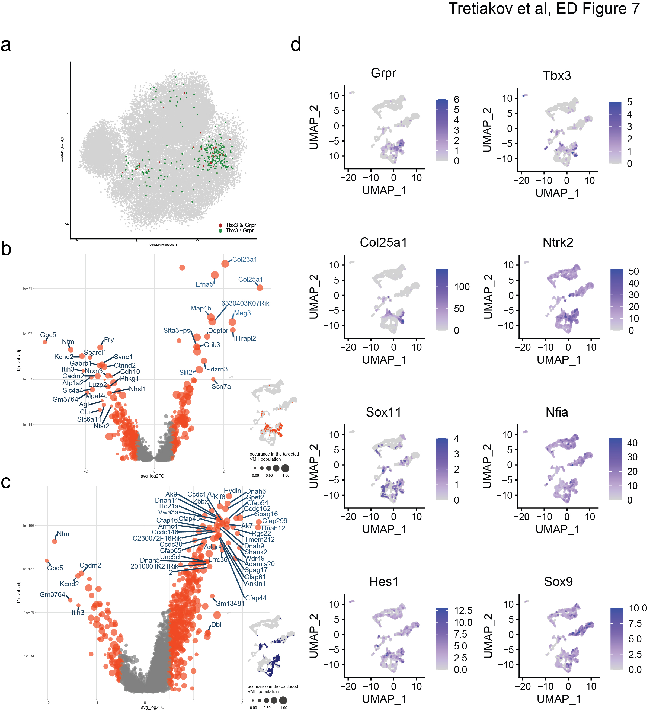
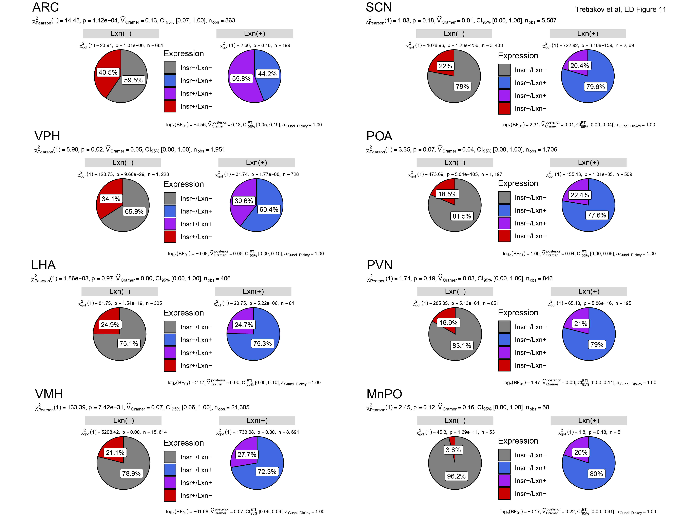

About
Last updated: 2023-12-21
Checks: 2 0
Knit directory: 1_heteroAstrocytes/
This reproducible R Markdown analysis was created with workflowr (version 1.7.1). The Checks tab describes the reproducibility checks that were applied when the results were created. The Past versions tab lists the development history.
Great! Since the R Markdown file has been committed to the Git repository, you know the exact version of the code that produced these results.
Great! You are using Git for version control. Tracking code development and connecting the code version to the results is critical for reproducibility.
The results in this page were generated with repository version b839390. See the Past versions tab to see a history of the changes made to the R Markdown and HTML files.
Note that you need to be careful to ensure that all relevant files for
the analysis have been committed to Git prior to generating the results
(you can use wflow_publish or
wflow_git_commit). workflowr only checks the R Markdown
file, but you know if there are other scripts or data files that it
depends on. Below is the status of the Git repository when the results
were generated:
Ignored files:
Ignored: .Rhistory
Ignored: .Rproj.user/
Ignored: .clj-kondo/
Ignored: .idea/workspace.xml
Ignored: .lsp/
Ignored: PRJNA343425/
Ignored: PRJNA345147/
Ignored: PRJNA360829/
Ignored: PRJNA438862/
Ignored: PRJNA439388/
Ignored: PRJNA453138/
Ignored: PRJNA481681/
Ignored: PRJNA485480/
Ignored: PRJNA490830/
Ignored: PRJNA515063/
Ignored: PRJNA540713/
Ignored: PRJNA547712/
Ignored: PRJNA548532/
Ignored: PRJNA548917/
Ignored: PRJNA549506/
Ignored: PRJNA553206/
Ignored: PRJNA587638/
Ignored: PRJNA604055/
Ignored: PRJNA611624/
Ignored: PRJNA625041/
Ignored: PRJNA627410/
Ignored: PRJNA633155/
Ignored: PRJNA648063/
Ignored: PRJNA673146/
Ignored: PRJNA673311/
Ignored: PRJNA679294/
Ignored: PRJNA705596/
Ignored: PRJNA722418/
Ignored: PRJNA723345/
Ignored: PRJNA736322/
Ignored: PRJNA779749/
Ignored: PRJNA798401/
Ignored: PRJNA815819/
Ignored: PRJNA847050/
Ignored: PRJNA938499/
Ignored: analysis/.Rhistory
Ignored: data/astrocytes-srt_by_nuclei.bak.rds
Ignored: data/astrocytes_X1_PRJNA453138_densmap_supervised.pdf
Ignored: data/astrocytes_X1_PRJNA515063_densmap_supervised.pdf
Ignored: data/astrocytes_X1_PRJNA548532_densmap_supervised.pdf
Ignored: data/astrocytes_X1_PRJNA604055_densmap_supervised.pdf
Ignored: data/astrocytes_X1_PRJNA611624_densmap_supervised.pdf
Ignored: data/astrocytes_X1_PRJNA679294_densmap_supervised.pdf
Ignored: data/astrocytes_X1_PRJNA705596_densmap_supervised.pdf
Ignored: data/astrocytes_X1_PRJNA722418_densmap_supervised.pdf
Ignored: data/astrocytes_X1_PRJNA723345_densmap_supervised.pdf
Ignored: data/astrocytes_X1_PRJNA798401_densmap_supervised.pdf
Ignored: data/astrocytes_X1_PRJNA815819_densmap_supervised.pdf
Ignored: data/astrocytes_X1_PRJNA847050_densmap_supervised.pdf
Ignored: data/best_xgboost-subregional-astrocytes_dataset-msp_min_tree-metric_euclidean-k_10-sign_100-amb_0.001.h5Seurat
Ignored: data/comb_astrocytes.bak.h5Seurat
Ignored: data/comb_astrocytes.bak.h5ad
Ignored: data/deng2019_arc_chow.h5Seurat
Ignored: data/deng2019_arc_chow.h5ad
Ignored: data/deng2019_arc_chow_astrocytes.h5Seurat
Ignored: data/deng2019_arc_chow_astrocytes.h5ad
Ignored: data/deng2019_arc_chow_astrocytes_fin.h5Seurat
Ignored: data/deng2019_arc_chow_astrocytes_fin.h5ad
Ignored: data/deng2019_arc_chow_clusters.h5Seurat
Ignored: data/deng2019_arc_chow_clusters.h5ad
Ignored: data/deng2019_arc_hfd.h5Seurat
Ignored: data/deng2019_arc_hfd.h5ad
Ignored: data/deng2019_arc_hfd_astrocytes.h5Seurat
Ignored: data/deng2019_arc_hfd_astrocytes.h5ad
Ignored: data/deng2019_arc_hfd_astrocytes_fin.h5Seurat
Ignored: data/deng2019_arc_hfd_astrocytes_fin.h5ad
Ignored: data/deng2019_arc_hfd_clusters.h5Seurat
Ignored: data/deng2019_arc_hfd_clusters.h5ad
Ignored: data/deng2019_arc_refi_astrocytes.h5Seurat
Ignored: data/deng2019_arc_refi_astrocytes.h5ad
Ignored: data/deng_2020_arc_chow.h5Seurat
Ignored: data/deng_2020_arc_chow.h5ad
Ignored: data/deng_2020_arc_chow_astro-npy-pomc.h5Seurat
Ignored: data/deng_2020_arc_chow_astro-npy-pomc.h5ad
Ignored: data/deng_2020_arc_chow_astrocytes.h5Seurat
Ignored: data/deng_2020_arc_chow_astrocytes.h5ad
Ignored: data/deng_2020_arc_chow_astrocytes_fin.h5Seurat
Ignored: data/deng_2020_arc_chow_astrocytes_fin.h5ad
Ignored: data/deng_2020_arc_chow_astrocytes_sct.h5Seurat
Ignored: data/deng_2020_arc_chow_astrocytes_sct.h5ad
Ignored: data/deng_2020_arc_chow_clusters.h5Seurat
Ignored: data/deng_2020_arc_chow_clusters.h5ad
Ignored: data/deng_2020_arc_hfd.h5Seurat
Ignored: data/deng_2020_arc_hfd.h5ad
Ignored: data/deng_2020_arc_hfd_astrocytes.h5Seurat
Ignored: data/deng_2020_arc_hfd_astrocytes.h5ad
Ignored: data/deng_2020_arc_hfd_astrocytes_fin.h5Seurat
Ignored: data/deng_2020_arc_hfd_astrocytes_fin.h5ad
Ignored: data/deng_2020_arc_hfd_clusters.h5Seurat
Ignored: data/deng_2020_arc_hfd_clusters.h5ad
Ignored: data/deng_2020_arc_refi_astrocytes.h5Seurat
Ignored: data/deng_2020_arc_refi_astrocytes.h5ad
Ignored: data/hypoth.query.affinati_2021.1.h5Seurat
Ignored: data/hypoth.query.affinati_2021.3.h5Seurat
Ignored: data/hypoth.query.affinati_2021.4.h5Seurat
Ignored: data/hypoth.query.campbell_2017.1.h5Seurat
Ignored: data/hypoth.query.deng_2021.1.h5Seurat
Ignored: data/hypoth.query.deng_2021.3.h5Seurat
Ignored: data/hypoth.query.deng_2021.5.h5Seurat
Ignored: data/hypoth.query.kim_2019.1.h5Seurat
Ignored: data/hypoth.query.liu_2022.1.h5Seurat
Ignored: data/hypoth.query.lopez_2021.1.h5Seurat
Ignored: data/hypoth.query.lutomska_2022.1.h5Seurat
Ignored: data/hypoth.query.mickelsen_2019.1.h5Seurat
Ignored: data/hypoth.query.mickelsen_2020.1.h5Seurat
Ignored: data/hypoth.query.moffitt_2018.1.h5Seurat
Ignored: data/hypoth.query.moffitt_2018.2.h5Seurat
Ignored: data/hypoth.query.moffitt_2018.3.h5Seurat
Ignored: data/hypoth.query.morris_2021.1.h5Seurat
Ignored: data/hypoth.query.morris_2021.2.h5Seurat
Ignored: data/hypoth.query.morris_2021.3.h5Seurat
Ignored: data/hypoth.query.rossi_2019.1.h5Seurat
Ignored: data/hypoth.query.rupp_2021.1.h5Seurat
Ignored: data/hypoth.query.wen_2020.1.h5Seurat
Ignored: data/hypoth.query.wen_2020.2.h5Seurat
Ignored: data/integration_features_by_nuclei.bak.rds
Ignored: data/mm9-500bp-upstream-10species.mc9nr.genes_vs_motifs.rankings.feather
Ignored: data/mm9-500bp-upstream-7species.mc9nr.genes_vs_motifs.rankings.feather
Ignored: data/mm9-tss-centered-10kb-10species.mc9nr.genes_vs_motifs.rankings.feather
Ignored: data/mm9-tss-centered-10kb-7species.mc9nr.genes_vs_motifs.rankings.feather
Ignored: data/mm9-tss-centered-5kb-10species.mc9nr.genes_vs_motifs.rankings.feather
Ignored: data/mm9-tss-centered-5kb-7species.mc9nr.genes_vs_motifs.rankings.feather
Ignored: data/motifs-v9-nr.mgi-m0.001-o0.0.tbl
Ignored: data/paired_integrations-full/whole_hypothalamus~PRJNA438862/subregions~PRJNA453138/fpr~0.001.h5ad
Ignored: data/paired_integrations-full/whole_hypothalamus~PRJNA438862/subregions~PRJNA453138/fpr~0.01.h5ad
Ignored: data/paired_integrations-full/whole_hypothalamus~PRJNA438862/subregions~PRJNA453138/fpr~nc.h5ad
Ignored: data/paired_integrations-full/whole_hypothalamus~PRJNA438862/subregions~PRJNA515063/fpr~0.001.h5ad
Ignored: data/paired_integrations-full/whole_hypothalamus~PRJNA438862/subregions~PRJNA515063/fpr~0.01.h5ad
Ignored: data/paired_integrations-full/whole_hypothalamus~PRJNA438862/subregions~PRJNA515063/fpr~nc.h5ad
Ignored: data/paired_integrations-full/whole_hypothalamus~PRJNA438862/subregions~PRJNA548532/fpr~0.001.h5ad
Ignored: data/paired_integrations-full/whole_hypothalamus~PRJNA438862/subregions~PRJNA548532/fpr~0.01.h5ad
Ignored: data/paired_integrations-full/whole_hypothalamus~PRJNA438862/subregions~PRJNA548532/fpr~nc.h5ad
Ignored: data/paired_integrations-full/whole_hypothalamus~PRJNA438862/subregions~PRJNA604055/fpr~0.001.h5ad
Ignored: data/paired_integrations-full/whole_hypothalamus~PRJNA438862/subregions~PRJNA604055/fpr~0.01.h5ad
Ignored: data/paired_integrations-full/whole_hypothalamus~PRJNA438862/subregions~PRJNA604055/fpr~nc.h5ad
Ignored: data/paired_integrations-full/whole_hypothalamus~PRJNA438862/subregions~PRJNA611624/fpr~0.001.h5ad
Ignored: data/paired_integrations-full/whole_hypothalamus~PRJNA438862/subregions~PRJNA611624/fpr~0.01.h5ad
Ignored: data/paired_integrations-full/whole_hypothalamus~PRJNA438862/subregions~PRJNA611624/fpr~nc.h5ad
Ignored: data/paired_integrations-full/whole_hypothalamus~PRJNA438862/subregions~PRJNA679294/fpr~0.001.h5ad
Ignored: data/paired_integrations-full/whole_hypothalamus~PRJNA438862/subregions~PRJNA679294/fpr~0.01.h5ad
Ignored: data/paired_integrations-full/whole_hypothalamus~PRJNA438862/subregions~PRJNA679294/fpr~nc.h5ad
Ignored: data/paired_integrations-full/whole_hypothalamus~PRJNA438862/subregions~PRJNA705596/fpr~0.001.h5ad
Ignored: data/paired_integrations-full/whole_hypothalamus~PRJNA438862/subregions~PRJNA705596/fpr~0.01.h5ad
Ignored: data/paired_integrations-full/whole_hypothalamus~PRJNA438862/subregions~PRJNA705596/fpr~nc.h5ad
Ignored: data/paired_integrations-full/whole_hypothalamus~PRJNA438862/subregions~PRJNA722418/fpr~0.001.h5ad
Ignored: data/paired_integrations-full/whole_hypothalamus~PRJNA438862/subregions~PRJNA722418/fpr~0.01.h5ad
Ignored: data/paired_integrations-full/whole_hypothalamus~PRJNA438862/subregions~PRJNA722418/fpr~nc.h5ad
Ignored: data/paired_integrations-full/whole_hypothalamus~PRJNA438862/subregions~PRJNA723345/fpr~0.001.h5ad
Ignored: data/paired_integrations-full/whole_hypothalamus~PRJNA438862/subregions~PRJNA723345/fpr~0.01.h5ad
Ignored: data/paired_integrations-full/whole_hypothalamus~PRJNA438862/subregions~PRJNA723345/fpr~nc.h5ad
Ignored: data/paired_integrations-full/whole_hypothalamus~PRJNA438862/subregions~PRJNA798401/fpr~0.001.h5ad
Ignored: data/paired_integrations-full/whole_hypothalamus~PRJNA438862/subregions~PRJNA798401/fpr~0.01.h5ad
Ignored: data/paired_integrations-full/whole_hypothalamus~PRJNA438862/subregions~PRJNA798401/fpr~nc.h5ad
Ignored: data/paired_integrations-full/whole_hypothalamus~PRJNA438862/subregions~PRJNA815819/fpr~0.001.h5ad
Ignored: data/paired_integrations-full/whole_hypothalamus~PRJNA438862/subregions~PRJNA815819/fpr~0.01.h5ad
Ignored: data/paired_integrations-full/whole_hypothalamus~PRJNA438862/subregions~PRJNA815819/fpr~nc.h5ad
Ignored: data/paired_integrations-full/whole_hypothalamus~PRJNA438862/subregions~PRJNA847050/fpr~0.001.h5ad
Ignored: data/paired_integrations-full/whole_hypothalamus~PRJNA438862/subregions~PRJNA847050/fpr~0.01.h5ad
Ignored: data/paired_integrations-full/whole_hypothalamus~PRJNA438862/subregions~PRJNA847050/fpr~nc.h5ad
Ignored: data/paired_integrations-full/whole_hypothalamus~PRJNA547712/subregions~PRJNA453138/fpr~0.001.h5ad
Ignored: data/paired_integrations-full/whole_hypothalamus~PRJNA547712/subregions~PRJNA453138/fpr~0.01.h5ad
Ignored: data/paired_integrations-full/whole_hypothalamus~PRJNA547712/subregions~PRJNA453138/fpr~nc.h5ad
Ignored: data/paired_integrations-full/whole_hypothalamus~PRJNA547712/subregions~PRJNA515063/fpr~0.001.h5ad
Ignored: data/paired_integrations-full/whole_hypothalamus~PRJNA547712/subregions~PRJNA515063/fpr~0.01.h5ad
Ignored: data/paired_integrations-full/whole_hypothalamus~PRJNA547712/subregions~PRJNA515063/fpr~nc.h5ad
Ignored: data/paired_integrations-full/whole_hypothalamus~PRJNA547712/subregions~PRJNA548532/fpr~0.001.h5ad
Ignored: data/paired_integrations-full/whole_hypothalamus~PRJNA547712/subregions~PRJNA548532/fpr~0.01.h5ad
Ignored: data/paired_integrations-full/whole_hypothalamus~PRJNA547712/subregions~PRJNA548532/fpr~nc.h5ad
Ignored: data/paired_integrations-full/whole_hypothalamus~PRJNA547712/subregions~PRJNA604055/fpr~0.001.h5ad
Ignored: data/paired_integrations-full/whole_hypothalamus~PRJNA547712/subregions~PRJNA604055/fpr~0.01.h5ad
Ignored: data/paired_integrations-full/whole_hypothalamus~PRJNA547712/subregions~PRJNA604055/fpr~nc.h5ad
Ignored: data/paired_integrations-full/whole_hypothalamus~PRJNA547712/subregions~PRJNA611624/fpr~0.001.h5ad
Ignored: data/paired_integrations-full/whole_hypothalamus~PRJNA547712/subregions~PRJNA611624/fpr~0.01.h5ad
Ignored: data/paired_integrations-full/whole_hypothalamus~PRJNA547712/subregions~PRJNA611624/fpr~nc.h5ad
Ignored: data/paired_integrations-full/whole_hypothalamus~PRJNA547712/subregions~PRJNA679294/fpr~0.001.h5ad
Ignored: data/paired_integrations-full/whole_hypothalamus~PRJNA547712/subregions~PRJNA679294/fpr~0.01.h5ad
Ignored: data/paired_integrations-full/whole_hypothalamus~PRJNA547712/subregions~PRJNA679294/fpr~nc.h5ad
Ignored: data/paired_integrations-full/whole_hypothalamus~PRJNA547712/subregions~PRJNA705596/fpr~0.001.h5ad
Ignored: data/paired_integrations-full/whole_hypothalamus~PRJNA547712/subregions~PRJNA705596/fpr~0.01.h5ad
Ignored: data/paired_integrations-full/whole_hypothalamus~PRJNA547712/subregions~PRJNA705596/fpr~nc.h5ad
Ignored: data/paired_integrations-full/whole_hypothalamus~PRJNA547712/subregions~PRJNA722418/fpr~0.001.h5ad
Ignored: data/paired_integrations-full/whole_hypothalamus~PRJNA547712/subregions~PRJNA722418/fpr~0.01.h5ad
Ignored: data/paired_integrations-full/whole_hypothalamus~PRJNA547712/subregions~PRJNA722418/fpr~nc.h5ad
Ignored: data/paired_integrations-full/whole_hypothalamus~PRJNA547712/subregions~PRJNA723345/fpr~0.001.h5ad
Ignored: data/paired_integrations-full/whole_hypothalamus~PRJNA547712/subregions~PRJNA723345/fpr~0.01.h5ad
Ignored: data/paired_integrations-full/whole_hypothalamus~PRJNA547712/subregions~PRJNA723345/fpr~nc.h5ad
Ignored: data/paired_integrations-full/whole_hypothalamus~PRJNA547712/subregions~PRJNA798401/fpr~0.001.h5ad
Ignored: data/paired_integrations-full/whole_hypothalamus~PRJNA547712/subregions~PRJNA798401/fpr~0.01.h5ad
Ignored: data/paired_integrations-full/whole_hypothalamus~PRJNA547712/subregions~PRJNA798401/fpr~nc.h5ad
Ignored: data/paired_integrations-full/whole_hypothalamus~PRJNA547712/subregions~PRJNA815819/fpr~0.001.h5ad
Ignored: data/paired_integrations-full/whole_hypothalamus~PRJNA547712/subregions~PRJNA815819/fpr~0.01.h5ad
Ignored: data/paired_integrations-full/whole_hypothalamus~PRJNA547712/subregions~PRJNA815819/fpr~nc.h5ad
Ignored: data/paired_integrations-full/whole_hypothalamus~PRJNA547712/subregions~PRJNA847050/fpr~0.001.h5ad
Ignored: data/paired_integrations-full/whole_hypothalamus~PRJNA547712/subregions~PRJNA847050/fpr~0.01.h5ad
Ignored: data/paired_integrations-full/whole_hypothalamus~PRJNA547712/subregions~PRJNA847050/fpr~nc.h5ad
Ignored: data/paired_integrations-full/whole_hypothalamus~PRJNA548917/subregions~PRJNA453138/fpr~0.001.h5ad
Ignored: data/paired_integrations-full/whole_hypothalamus~PRJNA548917/subregions~PRJNA453138/fpr~0.01.h5ad
Ignored: data/paired_integrations-full/whole_hypothalamus~PRJNA548917/subregions~PRJNA453138/fpr~nc.h5ad
Ignored: data/paired_integrations-full/whole_hypothalamus~PRJNA548917/subregions~PRJNA515063/fpr~0.001.h5ad
Ignored: data/paired_integrations-full/whole_hypothalamus~PRJNA548917/subregions~PRJNA515063/fpr~0.01.h5ad
Ignored: data/paired_integrations-full/whole_hypothalamus~PRJNA548917/subregions~PRJNA515063/fpr~nc.h5ad
Ignored: data/paired_integrations-full/whole_hypothalamus~PRJNA548917/subregions~PRJNA548532/fpr~0.001.h5ad
Ignored: data/paired_integrations-full/whole_hypothalamus~PRJNA548917/subregions~PRJNA548532/fpr~0.01.h5ad
Ignored: data/paired_integrations-full/whole_hypothalamus~PRJNA548917/subregions~PRJNA548532/fpr~nc.h5ad
Ignored: data/paired_integrations-full/whole_hypothalamus~PRJNA548917/subregions~PRJNA604055/fpr~0.001.h5ad
Ignored: data/paired_integrations-full/whole_hypothalamus~PRJNA548917/subregions~PRJNA604055/fpr~0.01.h5ad
Ignored: data/paired_integrations-full/whole_hypothalamus~PRJNA548917/subregions~PRJNA604055/fpr~nc.h5ad
Ignored: data/paired_integrations-full/whole_hypothalamus~PRJNA548917/subregions~PRJNA611624/fpr~0.001.h5ad
Ignored: data/paired_integrations-full/whole_hypothalamus~PRJNA548917/subregions~PRJNA611624/fpr~0.01.h5ad
Ignored: data/paired_integrations-full/whole_hypothalamus~PRJNA548917/subregions~PRJNA611624/fpr~nc.h5ad
Ignored: data/paired_integrations-full/whole_hypothalamus~PRJNA548917/subregions~PRJNA679294/fpr~0.001.h5ad
Ignored: data/paired_integrations-full/whole_hypothalamus~PRJNA548917/subregions~PRJNA679294/fpr~0.01.h5ad
Ignored: data/paired_integrations-full/whole_hypothalamus~PRJNA548917/subregions~PRJNA679294/fpr~nc.h5ad
Ignored: data/paired_integrations-full/whole_hypothalamus~PRJNA548917/subregions~PRJNA705596/fpr~0.001.h5ad
Ignored: data/paired_integrations-full/whole_hypothalamus~PRJNA548917/subregions~PRJNA705596/fpr~0.01.h5ad
Ignored: data/paired_integrations-full/whole_hypothalamus~PRJNA548917/subregions~PRJNA705596/fpr~nc.h5ad
Ignored: data/paired_integrations-full/whole_hypothalamus~PRJNA548917/subregions~PRJNA722418/fpr~0.001.h5ad
Ignored: data/paired_integrations-full/whole_hypothalamus~PRJNA548917/subregions~PRJNA722418/fpr~0.01.h5ad
Ignored: data/paired_integrations-full/whole_hypothalamus~PRJNA548917/subregions~PRJNA722418/fpr~nc.h5ad
Ignored: data/paired_integrations-full/whole_hypothalamus~PRJNA548917/subregions~PRJNA723345/fpr~0.001.h5ad
Ignored: data/paired_integrations-full/whole_hypothalamus~PRJNA548917/subregions~PRJNA723345/fpr~0.01.h5ad
Ignored: data/paired_integrations-full/whole_hypothalamus~PRJNA548917/subregions~PRJNA723345/fpr~nc.h5ad
Ignored: data/paired_integrations-full/whole_hypothalamus~PRJNA548917/subregions~PRJNA798401/fpr~0.001.h5ad
Ignored: data/paired_integrations-full/whole_hypothalamus~PRJNA548917/subregions~PRJNA798401/fpr~0.01.h5ad
Ignored: data/paired_integrations-full/whole_hypothalamus~PRJNA548917/subregions~PRJNA798401/fpr~nc.h5ad
Ignored: data/paired_integrations-full/whole_hypothalamus~PRJNA548917/subregions~PRJNA815819/fpr~0.001.h5ad
Ignored: data/paired_integrations-full/whole_hypothalamus~PRJNA548917/subregions~PRJNA815819/fpr~0.01.h5ad
Ignored: data/paired_integrations-full/whole_hypothalamus~PRJNA548917/subregions~PRJNA815819/fpr~nc.h5ad
Ignored: data/paired_integrations-full/whole_hypothalamus~PRJNA548917/subregions~PRJNA847050/fpr~0.001.h5ad
Ignored: data/paired_integrations-full/whole_hypothalamus~PRJNA548917/subregions~PRJNA847050/fpr~0.01.h5ad
Ignored: data/paired_integrations-full/whole_hypothalamus~PRJNA548917/subregions~PRJNA847050/fpr~nc.h5ad
Ignored: data/paired_integrations-full/whole_hypothalamus~PRJNA779749/subregions~PRJNA453138/fpr~0.001.h5ad
Ignored: data/paired_integrations-full/whole_hypothalamus~PRJNA779749/subregions~PRJNA453138/fpr~0.01.h5ad
Ignored: data/paired_integrations-full/whole_hypothalamus~PRJNA779749/subregions~PRJNA453138/fpr~nc.h5ad
Ignored: data/paired_integrations-full/whole_hypothalamus~PRJNA779749/subregions~PRJNA515063/fpr~0.001.h5ad
Ignored: data/paired_integrations-full/whole_hypothalamus~PRJNA779749/subregions~PRJNA515063/fpr~0.01.h5ad
Ignored: data/paired_integrations-full/whole_hypothalamus~PRJNA779749/subregions~PRJNA515063/fpr~nc.h5ad
Ignored: data/paired_integrations-full/whole_hypothalamus~PRJNA779749/subregions~PRJNA548532/fpr~0.001.h5ad
Ignored: data/paired_integrations-full/whole_hypothalamus~PRJNA779749/subregions~PRJNA548532/fpr~0.01.h5ad
Ignored: data/paired_integrations-full/whole_hypothalamus~PRJNA779749/subregions~PRJNA548532/fpr~nc.h5ad
Ignored: data/paired_integrations-full/whole_hypothalamus~PRJNA779749/subregions~PRJNA604055/fpr~0.001.h5ad
Ignored: data/paired_integrations-full/whole_hypothalamus~PRJNA779749/subregions~PRJNA604055/fpr~0.01.h5ad
Ignored: data/paired_integrations-full/whole_hypothalamus~PRJNA779749/subregions~PRJNA604055/fpr~nc.h5ad
Ignored: data/paired_integrations-full/whole_hypothalamus~PRJNA779749/subregions~PRJNA611624/fpr~0.001.h5ad
Ignored: data/paired_integrations-full/whole_hypothalamus~PRJNA779749/subregions~PRJNA611624/fpr~0.01.h5ad
Ignored: data/paired_integrations-full/whole_hypothalamus~PRJNA779749/subregions~PRJNA611624/fpr~nc.h5ad
Ignored: data/paired_integrations-full/whole_hypothalamus~PRJNA779749/subregions~PRJNA679294/fpr~0.001.h5ad
Ignored: data/paired_integrations-full/whole_hypothalamus~PRJNA779749/subregions~PRJNA679294/fpr~0.01.h5ad
Ignored: data/paired_integrations-full/whole_hypothalamus~PRJNA779749/subregions~PRJNA679294/fpr~nc.h5ad
Ignored: data/paired_integrations-full/whole_hypothalamus~PRJNA779749/subregions~PRJNA705596/fpr~0.001.h5ad
Ignored: data/paired_integrations-full/whole_hypothalamus~PRJNA779749/subregions~PRJNA705596/fpr~0.01.h5ad
Ignored: data/paired_integrations-full/whole_hypothalamus~PRJNA779749/subregions~PRJNA705596/fpr~nc.h5ad
Ignored: data/paired_integrations-full/whole_hypothalamus~PRJNA779749/subregions~PRJNA722418/fpr~0.001.h5ad
Ignored: data/paired_integrations-full/whole_hypothalamus~PRJNA779749/subregions~PRJNA722418/fpr~0.01.h5ad
Ignored: data/paired_integrations-full/whole_hypothalamus~PRJNA779749/subregions~PRJNA722418/fpr~nc.h5ad
Ignored: data/paired_integrations-full/whole_hypothalamus~PRJNA779749/subregions~PRJNA723345/fpr~0.001.h5ad
Ignored: data/paired_integrations-full/whole_hypothalamus~PRJNA779749/subregions~PRJNA723345/fpr~0.01.h5ad
Ignored: data/paired_integrations-full/whole_hypothalamus~PRJNA779749/subregions~PRJNA723345/fpr~nc.h5ad
Ignored: data/paired_integrations-full/whole_hypothalamus~PRJNA779749/subregions~PRJNA798401/fpr~0.001.h5ad
Ignored: data/paired_integrations-full/whole_hypothalamus~PRJNA779749/subregions~PRJNA798401/fpr~0.01.h5ad
Ignored: data/paired_integrations-full/whole_hypothalamus~PRJNA779749/subregions~PRJNA798401/fpr~nc.h5ad
Ignored: data/paired_integrations-full/whole_hypothalamus~PRJNA779749/subregions~PRJNA815819/fpr~0.001.h5ad
Ignored: data/paired_integrations-full/whole_hypothalamus~PRJNA779749/subregions~PRJNA815819/fpr~0.01.h5ad
Ignored: data/paired_integrations-full/whole_hypothalamus~PRJNA779749/subregions~PRJNA815819/fpr~nc.h5ad
Ignored: data/paired_integrations-full/whole_hypothalamus~PRJNA779749/subregions~PRJNA847050/fpr~0.001.h5ad
Ignored: data/paired_integrations-full/whole_hypothalamus~PRJNA779749/subregions~PRJNA847050/fpr~0.01.h5ad
Ignored: data/paired_integrations-full/whole_hypothalamus~PRJNA779749/subregions~PRJNA847050/fpr~nc.h5ad
Ignored: data/paired_integrations-wo_signature/
Ignored: data/resolved_subregions_by_microclusters-ad_hoc/PRJNA438862-astrocytes_dataset-msp_min_tree-metric_euclidean-k_10-sign_100-amb_0.001-umap-subfunct.tsv
Ignored: data/resolved_subregions_by_microclusters-ad_hoc/PRJNA438862_regulons-DER-astrocytes_dataset-msp_min_tree-metric_euclidean-k_10-sign_100-amb_0.001.h5ad
Ignored: data/resolved_subregions_by_microclusters-ad_hoc/PRJNA547712-astrocytes_dataset-msp_min_tree-metric_euclidean-k_10-sign_100-amb_0.001-umap-subfunct.tsv
Ignored: data/resolved_subregions_by_microclusters-ad_hoc/PRJNA547712_regulons-DER-astrocytes_dataset-msp_min_tree-metric_euclidean-k_10-sign_100-amb_0.001.h5ad
Ignored: data/resolved_subregions_by_microclusters-ad_hoc/PRJNA548917-astrocytes_dataset-msp_min_tree-metric_euclidean-k_10-sign_100-amb_0.001-umap-subfunct.tsv
Ignored: data/resolved_subregions_by_microclusters-ad_hoc/PRJNA548917_regulons-DER-astrocytes_dataset-msp_min_tree-metric_euclidean-k_10-sign_100-amb_0.001.h5ad
Ignored: data/resolved_subregions_by_microclusters-ad_hoc/PRJNA779749-astrocytes_dataset-msp_min_tree-metric_euclidean-k_10-sign_100-amb_0.001-umap-subfunct.tsv
Ignored: data/resolved_subregions_by_microclusters-ad_hoc/PRJNA779749_regulons-DER-astrocytes_dataset-msp_min_tree-metric_euclidean-k_10-sign_100-amb_0.001.h5ad
Ignored: data/resolved_subregions_by_microclusters-ad_hoc/ad_hoc-filtered-best-subregional_supervised-evaluation-astrocytes_datasets-msp_min_tree-metric_euclidean-k_10-sign_100-amb_0.001.h5ad
Ignored: data/resolved_subregions_by_microclusters-ad_hoc/best_logit-subregional_PRJNA438862-astrocytes_dataset-msp_min_tree-metric_euclidean-k_10-sign_100-amb_0.001.h5ad
Ignored: data/resolved_subregions_by_microclusters-ad_hoc/best_logit-subregional_PRJNA547712-astrocytes_dataset-msp_min_tree-metric_euclidean-k_10-sign_100-amb_0.001.h5ad
Ignored: data/resolved_subregions_by_microclusters-ad_hoc/best_logit-subregional_PRJNA548917-astrocytes_dataset-msp_min_tree-metric_euclidean-k_10-sign_100-amb_0.001.h5ad
Ignored: data/resolved_subregions_by_microclusters-ad_hoc/best_logit-subregional_PRJNA779749-astrocytes_dataset-msp_min_tree-metric_euclidean-k_10-sign_100-amb_0.001.h5ad
Ignored: data/resolved_subregions_by_microclusters-ad_hoc/best_xgboost-subregional_PRJNA438862-astrocytes_dataset-msp_min_tree-metric_euclidean-k_10-sign_100-amb_0.001.h5ad
Ignored: data/resolved_subregions_by_microclusters-ad_hoc/best_xgboost-subregional_PRJNA547712-astrocytes_dataset-msp_min_tree-metric_euclidean-k_10-sign_100-amb_0.001.h5ad
Ignored: data/resolved_subregions_by_microclusters-ad_hoc/best_xgboost-subregional_PRJNA548917-astrocytes_dataset-msp_min_tree-metric_euclidean-k_10-sign_100-amb_0.001.h5ad
Ignored: data/resolved_subregions_by_microclusters-ad_hoc/best_xgboost-subregional_PRJNA779749-astrocytes_dataset-msp_min_tree-metric_euclidean-k_10-sign_100-amb_0.001.h5ad
Ignored: data/resolved_subregions_by_microclusters-replic-3/PRJNA438862-astrocytes_dataset-msp_min_tree-metric_euclidean-k_10-sign_100-amb_0.001-umap-subfunct.tsv
Ignored: data/resolved_subregions_by_microclusters-replic-3/PRJNA547712-astrocytes_dataset-msp_min_tree-metric_euclidean-k_10-sign_100-amb_0.001-umap-subfunct.tsv
Ignored: data/resolved_subregions_by_microclusters-replic-3/PRJNA548917-astrocytes_dataset-msp_min_tree-metric_euclidean-k_10-sign_100-amb_0.001-umap-subfunct.tsv
Ignored: data/resolved_subregions_by_microclusters-replic-3/PRJNA779749-astrocytes_dataset-msp_min_tree-metric_euclidean-k_10-sign_100-amb_0.001-umap-subfunct.tsv
Ignored: data/resolved_subregions_by_microclusters-replic-3/best_logit-subregional_PRJNA438862-astrocytes_dataset-msp_min_tree-metric_euclidean-k_10-sign_100-amb_0.001.h5ad
Ignored: data/resolved_subregions_by_microclusters-replic-3/best_logit-subregional_PRJNA547712-astrocytes_dataset-msp_min_tree-metric_euclidean-k_10-sign_100-amb_0.001.h5ad
Ignored: data/resolved_subregions_by_microclusters-replic-3/best_logit-subregional_PRJNA548917-astrocytes_dataset-msp_min_tree-metric_euclidean-k_10-sign_100-amb_0.001.h5ad
Ignored: data/resolved_subregions_by_microclusters-replic-3/best_logit-subregional_PRJNA779749-astrocytes_dataset-msp_min_tree-metric_euclidean-k_10-sign_100-amb_0.001.h5ad
Ignored: data/resolved_subregions_by_microclusters-replic-3/best_xgboost-subregional_PRJNA547712-astrocytes_dataset-msp_min_tree-metric_euclidean-k_10-sign_100-amb_0.001.h5ad
Ignored: data/resolved_subregions_by_microclusters-replic-3/best_xgboost-subregional_PRJNA548917-astrocytes_dataset-msp_min_tree-metric_euclidean-k_10-sign_100-amb_0.001.h5ad
Ignored: data/resolved_subregions_by_microclusters-replic-3/best_xgboost-subregional_PRJNA779749-astrocytes_dataset-msp_min_tree-metric_euclidean-k_10-sign_100-amb_0.001.h5ad
Ignored: data/resolved_subregions_by_microclusters-replic-3/replic2-best-subregional_supervised-evaluation-astrocytes_datasets-msp_min_tree-metric_euclidean-k_10-sign_100-amb_0.001.h5ad
Ignored: data/resolved_subregions_by_microclusters/PRJNA438862-all-marker-genes.csv
Ignored: data/resolved_subregions_by_microclusters/PRJNA438862-all-marker-regulons.csv
Ignored: data/resolved_subregions_by_microclusters/PRJNA438862-astrocytes_dataset-msp_min_tree-metric_euclidean-k_10-sign_100-amb_0.001-umap-subfunct.tsv
Ignored: data/resolved_subregions_by_microclusters/PRJNA438862_regulons-DER-astrocytes_dataset-msp_min_tree-metric_euclidean-k_10-sign_100-amb_0.001.h5Seurat
Ignored: data/resolved_subregions_by_microclusters/PRJNA438862_regulons-DER-astrocytes_dataset-msp_min_tree-metric_euclidean-k_10-sign_100-amb_0.001.h5ad
Ignored: data/resolved_subregions_by_microclusters/PRJNA547712-all-marker-genes.csv
Ignored: data/resolved_subregions_by_microclusters/PRJNA547712-all-marker-regulons.csv
Ignored: data/resolved_subregions_by_microclusters/PRJNA547712-astrocytes_dataset-msp_min_tree-metric_euclidean-k_10-sign_100-amb_0.001-umap-subfunct.tsv
Ignored: data/resolved_subregions_by_microclusters/PRJNA547712-male_vs_female-de_genes.csv
Ignored: data/resolved_subregions_by_microclusters/PRJNA547712_regulons-DER-astrocytes_dataset-msp_min_tree-metric_euclidean-k_10-sign_100-amb_0.001.h5Seurat
Ignored: data/resolved_subregions_by_microclusters/PRJNA547712_regulons-DER-astrocytes_dataset-msp_min_tree-metric_euclidean-k_10-sign_100-amb_0.001.h5ad
Ignored: data/resolved_subregions_by_microclusters/PRJNA548917-all-marker-genes.csv
Ignored: data/resolved_subregions_by_microclusters/PRJNA548917-all-marker-regulons.csv
Ignored: data/resolved_subregions_by_microclusters/PRJNA548917-astrocytes_dataset-msp_min_tree-metric_euclidean-k_10-sign_100-amb_0.001-umap-subfunct.tsv
Ignored: data/resolved_subregions_by_microclusters/PRJNA548917-male_vs_female-de_genes.csv
Ignored: data/resolved_subregions_by_microclusters/PRJNA548917_regulons-DER-astrocytes_dataset-msp_min_tree-metric_euclidean-k_10-sign_100-amb_0.001.h5Seurat
Ignored: data/resolved_subregions_by_microclusters/PRJNA548917_regulons-DER-astrocytes_dataset-msp_min_tree-metric_euclidean-k_10-sign_100-amb_0.001.h5ad
Ignored: data/resolved_subregions_by_microclusters/PRJNA779749-all-marker-genes.csv
Ignored: data/resolved_subregions_by_microclusters/PRJNA779749-all-marker-regulons.csv
Ignored: data/resolved_subregions_by_microclusters/PRJNA779749-astrocytes_dataset-msp_min_tree-metric_euclidean-k_10-sign_100-amb_0.001-pacmap.tsv
Ignored: data/resolved_subregions_by_microclusters/PRJNA779749-astrocytes_dataset-msp_min_tree-metric_euclidean-k_10-sign_100-amb_0.001-umap-subfunct.tsv
Ignored: data/resolved_subregions_by_microclusters/PRJNA779749_regulons-DER-astrocytes_dataset-msp_min_tree-metric_euclidean-k_10-sign_100-amb_0.001.h5Seurat
Ignored: data/resolved_subregions_by_microclusters/PRJNA779749_regulons-DER-astrocytes_dataset-msp_min_tree-metric_euclidean-k_10-sign_100-amb_0.001.h5ad
Ignored: data/resolved_subregions_by_microclusters/best_logit-subregional_PRJNA438862-astrocytes_dataset-msp_min_tree-metric_euclidean-k_10-sign_100-amb_0.001.h5ad
Ignored: data/resolved_subregions_by_microclusters/best_logit-subregional_PRJNA547712-astrocytes_dataset-msp_min_tree-metric_euclidean-k_10-sign_100-amb_0.001.h5ad
Ignored: data/resolved_subregions_by_microclusters/best_logit-subregional_PRJNA548917-astrocytes_dataset-msp_min_tree-metric_euclidean-k_10-sign_100-amb_0.001.h5ad
Ignored: data/resolved_subregions_by_microclusters/best_logit-subregional_PRJNA779749-astrocytes_dataset-msp_min_tree-metric_euclidean-k_10-sign_100-amb_0.001.h5ad
Ignored: data/resolved_subregions_by_microclusters/best_xgboost-subregional_PRJNA438862-astrocytes_dataset-msp_min_tree-metric_euclidean-k_10-sign_100-amb_0.001.h5Seurat
Ignored: data/resolved_subregions_by_microclusters/best_xgboost-subregional_PRJNA438862-astrocytes_dataset-msp_min_tree-metric_euclidean-k_10-sign_100-amb_0.001.h5ad
Ignored: data/resolved_subregions_by_microclusters/best_xgboost-subregional_PRJNA547712-astrocytes_dataset-msp_min_tree-metric_euclidean-k_10-sign_100-amb_0.001.h5Seurat
Ignored: data/resolved_subregions_by_microclusters/best_xgboost-subregional_PRJNA547712-astrocytes_dataset-msp_min_tree-metric_euclidean-k_10-sign_100-amb_0.001.h5ad
Ignored: data/resolved_subregions_by_microclusters/best_xgboost-subregional_PRJNA548917-astrocytes_dataset-msp_min_tree-metric_euclidean-k_10-sign_100-amb_0.001.h5Seurat
Ignored: data/resolved_subregions_by_microclusters/best_xgboost-subregional_PRJNA548917-astrocytes_dataset-msp_min_tree-metric_euclidean-k_10-sign_100-amb_0.001.h5ad
Ignored: data/resolved_subregions_by_microclusters/best_xgboost-subregional_PRJNA779749-astrocytes_dataset-msp_min_tree-metric_euclidean-k_10-sign_100-amb_0.001.h5Seurat
Ignored: data/resolved_subregions_by_microclusters/best_xgboost-subregional_PRJNA779749-astrocytes_dataset-msp_min_tree-metric_euclidean-k_10-sign_100-amb_0.001.h5ad
Ignored: data/resolved_subregions_by_microclusters/replic2-best-subregional_supervised-evaluation-astrocytes_datasets-msp_min_tree-metric_euclidean-k_10-sign_100-amb_0.001.h5ad
Ignored: data/webb_astrocytes_combined_sct.h5Seurat
Ignored: models/
Ignored: output/figures/1700003F12Rik_individual_hypothalamic_nuclei_astrocytes_evaluation_dataset_selected.pdf
Ignored: output/figures/1700020N01Rik_individual_hypothalamic_nuclei_astrocytes_evaluation_dataset_selected.pdf
Ignored: output/figures/1700086D15Rik_individual_hypothalamic_nuclei_astrocytes_evaluation_dataset_selected.pdf
Ignored: output/figures/2410141K09Rik_individual_hypothalamic_nuclei_astrocytes_evaluation_dataset_selected.pdf
Ignored: output/figures/2810021J22Rik_individual_hypothalamic_nuclei_astrocytes_evaluation_dataset_selected.pdf
Ignored: output/figures/2810459M11Rik_individual_hypothalamic_nuclei_astrocytes_evaluation_dataset_selected.pdf
Ignored: output/figures/4930430A15Rik_individual_hypothalamic_nuclei_astrocytes_evaluation_dataset_selected.pdf
Ignored: output/figures/4930522L14Rik_individual_hypothalamic_nuclei_astrocytes_evaluation_dataset_selected.pdf
Ignored: output/figures/4931423N10Rik_individual_hypothalamic_nuclei_astrocytes_evaluation_dataset_selected.pdf
Ignored: output/figures/4933429H19Rik_individual_hypothalamic_nuclei_astrocytes_evaluation_dataset_selected.pdf
Ignored: output/figures/6720489N17Rik_individual_hypothalamic_nuclei_astrocytes_evaluation_dataset_selected.pdf
Ignored: output/figures/9130019O22Rik_individual_hypothalamic_nuclei_astrocytes_evaluation_dataset_selected.pdf
Ignored: output/figures/A2m_individual_hypothalamic_nuclei_astrocytes_evaluation_dataset_selected.pdf
Ignored: output/figures/A630089N07Rik_individual_hypothalamic_nuclei_astrocytes_evaluation_dataset_selected.pdf
Ignored: output/figures/Aatf_individual_hypothalamic_nuclei_astrocytes_evaluation_dataset_selected.pdf
Ignored: output/figures/Abcd1_individual_hypothalamic_nuclei_astrocytes_evaluation_dataset_selected.pdf
Ignored: output/figures/Abcd2_individual_hypothalamic_nuclei_astrocytes_evaluation_dataset_selected.pdf
Ignored: output/figures/Abcd3_individual_hypothalamic_nuclei_astrocytes_evaluation_dataset_selected.pdf
Ignored: output/figures/Abl1_individual_hypothalamic_nuclei_astrocytes_evaluation_dataset_selected.pdf
Ignored: output/figures/Abt1_individual_hypothalamic_nuclei_astrocytes_evaluation_dataset_selected.pdf
Ignored: output/figures/Abtb1_individual_hypothalamic_nuclei_astrocytes_evaluation_dataset_selected.pdf
Ignored: output/figures/Acaa2_individual_hypothalamic_nuclei_astrocytes_evaluation_dataset_selected.pdf
Ignored: output/figures/Acly_individual_hypothalamic_nuclei_astrocytes_evaluation_dataset_selected.pdf
Ignored: output/figures/Acox1_individual_hypothalamic_nuclei_astrocytes_evaluation_dataset_selected.pdf
Ignored: output/figures/Acsbg1_individual_hypothalamic_nuclei_astrocytes_evaluation_dataset_selected.pdf
Ignored: output/figures/Acsl1_individual_hypothalamic_nuclei_astrocytes_evaluation_dataset_selected.pdf
Ignored: output/figures/Acsl3_individual_hypothalamic_nuclei_astrocytes_evaluation_dataset_selected.pdf
Ignored: output/figures/Acsl4_individual_hypothalamic_nuclei_astrocytes_evaluation_dataset_selected.pdf
Ignored: output/figures/Acsl5_individual_hypothalamic_nuclei_astrocytes_evaluation_dataset_selected.pdf
Ignored: output/figures/Acsl6_individual_hypothalamic_nuclei_astrocytes_evaluation_dataset_selected.pdf
Ignored: output/figures/Actb_individual_hypothalamic_nuclei_astrocytes_evaluation_dataset_selected.pdf
Ignored: output/figures/Acyp2_individual_hypothalamic_nuclei_astrocytes_evaluation_dataset_selected.pdf
Ignored: output/figures/Adcyap1_individual_hypothalamic_nuclei_astrocytes_evaluation_dataset_selected.pdf
Ignored: output/figures/Adnp_individual_hypothalamic_nuclei_astrocytes_evaluation_dataset_selected.pdf
Ignored: output/figures/Adora1_individual_hypothalamic_nuclei_astrocytes_evaluation_dataset_selected.pdf
Ignored: output/figures/Adora2a_individual_hypothalamic_nuclei_astrocytes_evaluation_dataset_selected.pdf
Ignored: output/figures/Adora2b_individual_hypothalamic_nuclei_astrocytes_evaluation_dataset_selected.pdf
Ignored: output/figures/Adora3_individual_hypothalamic_nuclei_astrocytes_evaluation_dataset_selected.pdf
Ignored: output/figures/Adra1a_individual_hypothalamic_nuclei_astrocytes_evaluation_dataset_selected.pdf
Ignored: output/figures/Adra1b_individual_hypothalamic_nuclei_astrocytes_evaluation_dataset_selected.pdf
Ignored: output/figures/Adra1d_individual_hypothalamic_nuclei_astrocytes_evaluation_dataset_selected.pdf
Ignored: output/figures/Adra2a_individual_hypothalamic_nuclei_astrocytes_evaluation_dataset_selected.pdf
Ignored: output/figures/Adra2b_individual_hypothalamic_nuclei_astrocytes_evaluation_dataset_selected.pdf
Ignored: output/figures/Adra2c_individual_hypothalamic_nuclei_astrocytes_evaluation_dataset_selected.pdf
Ignored: output/figures/Adrb1_individual_hypothalamic_nuclei_astrocytes_evaluation_dataset_selected.pdf
Ignored: output/figures/Adrb2_individual_hypothalamic_nuclei_astrocytes_evaluation_dataset_selected.pdf
Ignored: output/figures/Adrb3_individual_hypothalamic_nuclei_astrocytes_evaluation_dataset_selected.pdf
Ignored: output/figures/Adrm1_individual_hypothalamic_nuclei_astrocytes_evaluation_dataset_selected.pdf
Ignored: output/figures/Aebp1_individual_hypothalamic_nuclei_astrocytes_evaluation_dataset_selected.pdf
Ignored: output/figures/Aebp2_individual_hypothalamic_nuclei_astrocytes_evaluation_dataset_selected.pdf
Ignored: output/figures/Aff3_individual_hypothalamic_nuclei_astrocytes_evaluation_dataset_selected.pdf
Ignored: output/figures/Agrn_individual_hypothalamic_nuclei_astrocytes_evaluation_dataset_selected.pdf
Ignored: output/figures/Agrp_individual_hypothalamic_nuclei_astrocytes_evaluation_dataset_selected.pdf
Ignored: output/figures/Agt_individual_hypothalamic_nuclei_astrocytes_evaluation_dataset_selected.pdf
Ignored: output/figures/Ahr_individual_hypothalamic_nuclei_astrocytes_evaluation_dataset_selected.pdf
Ignored: output/figures/Ahrr_individual_hypothalamic_nuclei_astrocytes_evaluation_dataset_selected.pdf
Ignored: output/figures/Aifm1_individual_hypothalamic_nuclei_astrocytes_evaluation_dataset_selected.pdf
Ignored: output/figures/Aip_individual_hypothalamic_nuclei_astrocytes_evaluation_dataset_selected.pdf
Ignored: output/figures/Aire_individual_hypothalamic_nuclei_astrocytes_evaluation_dataset_selected.pdf
Ignored: output/figures/Akr1b10_individual_hypothalamic_nuclei_astrocytes_evaluation_dataset_selected.pdf
Ignored: output/figures/Alcam_individual_hypothalamic_nuclei_astrocytes_evaluation_dataset_selected.pdf
Ignored: output/figures/Aldh1a1_individual_hypothalamic_nuclei_astrocytes_evaluation_dataset_selected.pdf
Ignored: output/figures/Aldh1l1_individual_hypothalamic_nuclei_astrocytes_evaluation_dataset_selected.pdf
Ignored: output/figures/Aldoc_individual_hypothalamic_nuclei_astrocytes_evaluation_dataset_selected.pdf
Ignored: output/figures/Alk_individual_hypothalamic_nuclei_astrocytes_evaluation_dataset_selected.pdf
Ignored: output/figures/Alx1_individual_hypothalamic_nuclei_astrocytes_evaluation_dataset_selected.pdf
Ignored: output/figures/Alx3_individual_hypothalamic_nuclei_astrocytes_evaluation_dataset_selected.pdf
Ignored: output/figures/Alx4_individual_hypothalamic_nuclei_astrocytes_evaluation_dataset_selected.pdf
Ignored: output/figures/Angpt1_individual_hypothalamic_nuclei_astrocytes_evaluation_dataset_selected.pdf
Ignored: output/figures/Ank1_individual_hypothalamic_nuclei_astrocytes_evaluation_dataset_selected.pdf
Ignored: output/figures/Ank2_individual_hypothalamic_nuclei_astrocytes_evaluation_dataset_selected.pdf
Ignored: output/figures/Ankfy1_individual_hypothalamic_nuclei_astrocytes_evaluation_dataset_selected.pdf
Ignored: output/figures/Ankhd1_individual_hypothalamic_nuclei_astrocytes_evaluation_dataset_selected.pdf
Ignored: output/figures/Ankra2_individual_hypothalamic_nuclei_astrocytes_evaluation_dataset_selected.pdf
Ignored: output/figures/Ankrd10_individual_hypothalamic_nuclei_astrocytes_evaluation_dataset_selected.pdf
Ignored: output/figures/Ankrd1_individual_hypothalamic_nuclei_astrocytes_evaluation_dataset_selected.pdf
Ignored: output/figures/Ankrd2_individual_hypothalamic_nuclei_astrocytes_evaluation_dataset_selected.pdf
Ignored: output/figures/Ankrd6_individual_hypothalamic_nuclei_astrocytes_evaluation_dataset_selected.pdf
Ignored: output/figures/Apex1_individual_hypothalamic_nuclei_astrocytes_evaluation_dataset_selected.pdf
Ignored: output/figures/Apoe_individual_hypothalamic_nuclei_astrocytes_evaluation_dataset_selected.pdf
Ignored: output/figures/App_individual_hypothalamic_nuclei_astrocytes_evaluation_dataset_selected.pdf
Ignored: output/figures/Aqp4_individual_hypothalamic_nuclei_astrocytes_evaluation_dataset_selected.pdf
Ignored: output/figures/Aqp4_whole_hypothalamus_astrocytes_evaluation_datasets_selected_umap.pdf
Ignored: output/figures/Aqp4_whole_hypothalamus_astrocytes_evaluation_datasets_selected_umap_split.pdf
Ignored: output/figures/Ar_individual_hypothalamic_nuclei_astrocytes_evaluation_dataset_selected.pdf
Ignored: output/figures/Arf1_individual_hypothalamic_nuclei_astrocytes_evaluation_dataset_selected.pdf
Ignored: output/figures/Arhgap17_individual_hypothalamic_nuclei_astrocytes_evaluation_dataset_selected.pdf
Ignored: output/figures/Arhgap35_individual_hypothalamic_nuclei_astrocytes_evaluation_dataset_selected.pdf
Ignored: output/figures/Arid1a_individual_hypothalamic_nuclei_astrocytes_evaluation_dataset_selected.pdf
Ignored: output/figures/Arid1b_individual_hypothalamic_nuclei_astrocytes_evaluation_dataset_selected.pdf
Ignored: output/figures/Arid2_individual_hypothalamic_nuclei_astrocytes_evaluation_dataset_selected.pdf
Ignored: output/figures/Arid3a_individual_hypothalamic_nuclei_astrocytes_evaluation_dataset_selected.pdf
Ignored: output/figures/Arid3b_individual_hypothalamic_nuclei_astrocytes_evaluation_dataset_selected.pdf
Ignored: output/figures/Arid3c_individual_hypothalamic_nuclei_astrocytes_evaluation_dataset_selected.pdf
Ignored: output/figures/Arid4a_individual_hypothalamic_nuclei_astrocytes_evaluation_dataset_selected.pdf
Ignored: output/figures/Arid4b_individual_hypothalamic_nuclei_astrocytes_evaluation_dataset_selected.pdf
Ignored: output/figures/Arid5b_individual_hypothalamic_nuclei_astrocytes_evaluation_dataset_selected.pdf
Ignored: output/figures/Arnt2_individual_hypothalamic_nuclei_astrocytes_evaluation_dataset_selected.pdf
Ignored: output/figures/Arnt_individual_hypothalamic_nuclei_astrocytes_evaluation_dataset_selected.pdf
Ignored: output/figures/Arntl_individual_hypothalamic_nuclei_astrocytes_evaluation_dataset_selected.pdf
Ignored: output/figures/Arx_individual_hypothalamic_nuclei_astrocytes_evaluation_dataset_selected.pdf
Ignored: output/figures/Asb10_individual_hypothalamic_nuclei_astrocytes_evaluation_dataset_selected.pdf
Ignored: output/figures/Asb11_individual_hypothalamic_nuclei_astrocytes_evaluation_dataset_selected.pdf
Ignored: output/figures/Asb12_individual_hypothalamic_nuclei_astrocytes_evaluation_dataset_selected.pdf
Ignored: output/figures/Asb15_individual_hypothalamic_nuclei_astrocytes_evaluation_dataset_selected.pdf
Ignored: output/figures/Asb1_individual_hypothalamic_nuclei_astrocytes_evaluation_dataset_selected.pdf
Ignored: output/figures/Asb2_individual_hypothalamic_nuclei_astrocytes_evaluation_dataset_selected.pdf
Ignored: output/figures/Asb3_individual_hypothalamic_nuclei_astrocytes_evaluation_dataset_selected.pdf
Ignored: output/figures/Asb4_individual_hypothalamic_nuclei_astrocytes_evaluation_dataset_selected.pdf
Ignored: output/figures/Asb5_individual_hypothalamic_nuclei_astrocytes_evaluation_dataset_selected.pdf
Ignored: output/figures/Asb6_individual_hypothalamic_nuclei_astrocytes_evaluation_dataset_selected.pdf
Ignored: output/figures/Asb8_individual_hypothalamic_nuclei_astrocytes_evaluation_dataset_selected.pdf
Ignored: output/figures/Asb9_individual_hypothalamic_nuclei_astrocytes_evaluation_dataset_selected.pdf
Ignored: output/figures/Ascc1_individual_hypothalamic_nuclei_astrocytes_evaluation_dataset_selected.pdf
Ignored: output/figures/Ascl1_individual_hypothalamic_nuclei_astrocytes_evaluation_dataset_selected.pdf
Ignored: output/figures/Ascl2_individual_hypothalamic_nuclei_astrocytes_evaluation_dataset_selected.pdf
Ignored: output/figures/Ascl3_individual_hypothalamic_nuclei_astrocytes_evaluation_dataset_selected.pdf
Ignored: output/figures/Ash1l_individual_hypothalamic_nuclei_astrocytes_evaluation_dataset_selected.pdf
Ignored: output/figures/Ash2l_individual_hypothalamic_nuclei_astrocytes_evaluation_dataset_selected.pdf
Ignored: output/figures/Asxl1_individual_hypothalamic_nuclei_astrocytes_evaluation_dataset_selected.pdf
Ignored: output/figures/Atf1_individual_hypothalamic_nuclei_astrocytes_evaluation_dataset_selected.pdf
Ignored: output/figures/Atf2_individual_hypothalamic_nuclei_astrocytes_evaluation_dataset_selected.pdf
Ignored: output/figures/Atf3_individual_hypothalamic_nuclei_astrocytes_evaluation_dataset_selected.pdf
Ignored: output/figures/Atf3_whole_hypothalamus_astrocytes_evaluation_datasets_selected_umap.pdf
Ignored: output/figures/Atf3_whole_hypothalamus_astrocytes_evaluation_datasets_selected_umap_split.pdf
Ignored: output/figures/Atf4_individual_hypothalamic_nuclei_astrocytes_evaluation_dataset_selected.pdf
Ignored: output/figures/Atf5_individual_hypothalamic_nuclei_astrocytes_evaluation_dataset_selected.pdf
Ignored: output/figures/Atf6_individual_hypothalamic_nuclei_astrocytes_evaluation_dataset_selected.pdf
Ignored: output/figures/Atf7_individual_hypothalamic_nuclei_astrocytes_evaluation_dataset_selected.pdf
Ignored: output/figures/Atf7ip_individual_hypothalamic_nuclei_astrocytes_evaluation_dataset_selected.pdf
Ignored: output/figures/Atm_individual_hypothalamic_nuclei_astrocytes_evaluation_dataset_selected.pdf
Ignored: output/figures/Atoh1_individual_hypothalamic_nuclei_astrocytes_evaluation_dataset_selected.pdf
Ignored: output/figures/Atoh7_individual_hypothalamic_nuclei_astrocytes_evaluation_dataset_selected.pdf
Ignored: output/figures/Atoh8_individual_hypothalamic_nuclei_astrocytes_evaluation_dataset_selected.pdf
Ignored: output/figures/Atp1a2_individual_hypothalamic_nuclei_astrocytes_evaluation_dataset_selected.pdf
Ignored: output/figures/Atp5a1_individual_hypothalamic_nuclei_astrocytes_evaluation_dataset_selected.pdf
Ignored: output/figures/Atp5b_individual_hypothalamic_nuclei_astrocytes_evaluation_dataset_selected.pdf
Ignored: output/figures/Atr_individual_hypothalamic_nuclei_astrocytes_evaluation_dataset_selected.pdf
Ignored: output/figures/Avp_individual_hypothalamic_nuclei_astrocytes_evaluation_dataset_selected.pdf
Ignored: output/figures/Avpr1a_individual_hypothalamic_nuclei_astrocytes_evaluation_dataset_selected.pdf
Ignored: output/figures/BC024063_individual_hypothalamic_nuclei_astrocytes_evaluation_dataset_selected.pdf
Ignored: output/figures/BC024139_individual_hypothalamic_nuclei_astrocytes_evaluation_dataset_selected.pdf
Ignored: output/figures/Bach1_individual_hypothalamic_nuclei_astrocytes_evaluation_dataset_selected.pdf
Ignored: output/figures/Bach2_individual_hypothalamic_nuclei_astrocytes_evaluation_dataset_selected.pdf
Ignored: output/figures/Bag1_individual_hypothalamic_nuclei_astrocytes_evaluation_dataset_selected.pdf
Ignored: output/figures/Bak1_individual_hypothalamic_nuclei_astrocytes_evaluation_dataset_selected.pdf
Ignored: output/figures/Bard1_individual_hypothalamic_nuclei_astrocytes_evaluation_dataset_selected.pdf
Ignored: output/figures/Barhl1_individual_hypothalamic_nuclei_astrocytes_evaluation_dataset_selected.pdf
Ignored: output/figures/Barx2_individual_hypothalamic_nuclei_astrocytes_evaluation_dataset_selected.pdf
Ignored: output/figures/Basp1_individual_hypothalamic_nuclei_astrocytes_evaluation_dataset_selected.pdf
Ignored: output/figures/Batf_individual_hypothalamic_nuclei_astrocytes_evaluation_dataset_selected.pdf
Ignored: output/figures/Bax_individual_hypothalamic_nuclei_astrocytes_evaluation_dataset_selected.pdf
Ignored: output/figures/Baz1a_individual_hypothalamic_nuclei_astrocytes_evaluation_dataset_selected.pdf
Ignored: output/figures/Baz1b_individual_hypothalamic_nuclei_astrocytes_evaluation_dataset_selected.pdf
Ignored: output/figures/Baz2a_individual_hypothalamic_nuclei_astrocytes_evaluation_dataset_selected.pdf
Ignored: output/figures/Bbx_individual_hypothalamic_nuclei_astrocytes_evaluation_dataset_selected.pdf
Ignored: output/figures/Bcl11a_individual_hypothalamic_nuclei_astrocytes_evaluation_dataset_selected.pdf
Ignored: output/figures/Bcl2_individual_hypothalamic_nuclei_astrocytes_evaluation_dataset_selected.pdf
Ignored: output/figures/Bcl2l1_individual_hypothalamic_nuclei_astrocytes_evaluation_dataset_selected.pdf
Ignored: output/figures/Bcl3_individual_hypothalamic_nuclei_astrocytes_evaluation_dataset_selected.pdf
Ignored: output/figures/Bcl6_individual_hypothalamic_nuclei_astrocytes_evaluation_dataset_selected.pdf
Ignored: output/figures/Bcl6b_individual_hypothalamic_nuclei_astrocytes_evaluation_dataset_selected.pdf
Ignored: output/figures/Bclaf1_individual_hypothalamic_nuclei_astrocytes_evaluation_dataset_selected.pdf
Ignored: output/figures/Bcor_individual_hypothalamic_nuclei_astrocytes_evaluation_dataset_selected.pdf
Ignored: output/figures/Bdh1_individual_hypothalamic_nuclei_astrocytes_evaluation_dataset_selected.pdf
Ignored: output/figures/Bdh2_individual_hypothalamic_nuclei_astrocytes_evaluation_dataset_selected.pdf
Ignored: output/figures/Bdnf_individual_hypothalamic_nuclei_astrocytes_evaluation_dataset_selected.pdf
Ignored: output/figures/Bdp1_individual_hypothalamic_nuclei_astrocytes_evaluation_dataset_selected.pdf
Ignored: output/figures/Bhlhe40_individual_hypothalamic_nuclei_astrocytes_evaluation_dataset_selected.pdf
Ignored: output/figures/Bhlhe41_individual_hypothalamic_nuclei_astrocytes_evaluation_dataset_selected.pdf
Ignored: output/figures/Bin1_individual_hypothalamic_nuclei_astrocytes_evaluation_dataset_selected.pdf
Ignored: output/figures/Blzf1_individual_hypothalamic_nuclei_astrocytes_evaluation_dataset_selected.pdf
Ignored: output/figures/Bmi1_individual_hypothalamic_nuclei_astrocytes_evaluation_dataset_selected.pdf
Ignored: output/figures/Bmp4_individual_hypothalamic_nuclei_astrocytes_evaluation_dataset_selected.pdf
Ignored: output/figures/Bmp7_individual_hypothalamic_nuclei_astrocytes_evaluation_dataset_selected.pdf
Ignored: output/figures/Bmpr1b_individual_hypothalamic_nuclei_astrocytes_evaluation_dataset_selected.pdf
Ignored: output/figures/Bmyc_individual_hypothalamic_nuclei_astrocytes_evaluation_dataset_selected.pdf
Ignored: output/figures/Bnc1_individual_hypothalamic_nuclei_astrocytes_evaluation_dataset_selected.pdf
Ignored: output/figures/Bnip3_individual_hypothalamic_nuclei_astrocytes_evaluation_dataset_selected.pdf
Ignored: output/figures/Bnip3l_individual_hypothalamic_nuclei_astrocytes_evaluation_dataset_selected.pdf
Ignored: output/figures/Bpnt1_individual_hypothalamic_nuclei_astrocytes_evaluation_dataset_selected.pdf
Ignored: output/figures/Bptf_individual_hypothalamic_nuclei_astrocytes_evaluation_dataset_selected.pdf
Ignored: output/figures/Brca1_individual_hypothalamic_nuclei_astrocytes_evaluation_dataset_selected.pdf
Ignored: output/figures/Brd4_individual_hypothalamic_nuclei_astrocytes_evaluation_dataset_selected.pdf
Ignored: output/figures/Brd7_individual_hypothalamic_nuclei_astrocytes_evaluation_dataset_selected.pdf
Ignored: output/figures/Brd8_individual_hypothalamic_nuclei_astrocytes_evaluation_dataset_selected.pdf
Ignored: output/figures/Brdt_individual_hypothalamic_nuclei_astrocytes_evaluation_dataset_selected.pdf
Ignored: output/figures/Brf1_individual_hypothalamic_nuclei_astrocytes_evaluation_dataset_selected.pdf
Ignored: output/figures/Brpf1_individual_hypothalamic_nuclei_astrocytes_evaluation_dataset_selected.pdf
Ignored: output/figures/Bsg_individual_hypothalamic_nuclei_astrocytes_evaluation_dataset_selected.pdf
Ignored: output/figures/Bsx_individual_hypothalamic_nuclei_astrocytes_evaluation_dataset_selected.pdf
Ignored: output/figures/Btaf1_individual_hypothalamic_nuclei_astrocytes_evaluation_dataset_selected.pdf
Ignored: output/figures/Btbd11_individual_hypothalamic_nuclei_astrocytes_evaluation_dataset_selected.pdf
Ignored: output/figures/Btf3_individual_hypothalamic_nuclei_astrocytes_evaluation_dataset_selected.pdf
Ignored: output/figures/Btg2_individual_hypothalamic_nuclei_astrocytes_evaluation_dataset_selected.pdf
Ignored: output/figures/Btg2_whole_hypothalamus_astrocytes_evaluation_datasets_selected_umap.pdf
Ignored: output/figures/Btg2_whole_hypothalamus_astrocytes_evaluation_datasets_selected_umap_split.pdf
Ignored: output/figures/C1d_individual_hypothalamic_nuclei_astrocytes_evaluation_dataset_selected.pdf
Ignored: output/figures/Cacna2d3_individual_hypothalamic_nuclei_astrocytes_evaluation_dataset_selected.pdf
Ignored: output/figures/Cacna2d3_whole_hypothalamus_astrocytes_evaluation_datasets_selected_umap.pdf
Ignored: output/figures/Cacna2d3_whole_hypothalamus_astrocytes_evaluation_datasets_selected_umap_split.pdf
Ignored: output/figures/Calcr_individual_hypothalamic_nuclei_astrocytes_evaluation_dataset_selected.pdf
Ignored: output/figures/Calcrl_individual_hypothalamic_nuclei_astrocytes_evaluation_dataset_selected.pdf
Ignored: output/figures/Camk1d_individual_hypothalamic_nuclei_astrocytes_evaluation_dataset_selected.pdf
Ignored: output/figures/Camk1d_whole_hypothalamus_astrocytes_evaluation_datasets_selected_umap.pdf
Ignored: output/figures/Camk1d_whole_hypothalamus_astrocytes_evaluation_datasets_selected_umap_split.pdf
Ignored: output/figures/Camk4_individual_hypothalamic_nuclei_astrocytes_evaluation_dataset_selected.pdf
Ignored: output/figures/Camta2_individual_hypothalamic_nuclei_astrocytes_evaluation_dataset_selected.pdf
Ignored: output/figures/Carf_individual_hypothalamic_nuclei_astrocytes_evaluation_dataset_selected.pdf
Ignored: output/figures/Carhsp1_individual_hypothalamic_nuclei_astrocytes_evaluation_dataset_selected.pdf
Ignored: output/figures/Carm1_individual_hypothalamic_nuclei_astrocytes_evaluation_dataset_selected.pdf
Ignored: output/figures/Cartpt_individual_hypothalamic_nuclei_astrocytes_evaluation_dataset_selected.pdf
Ignored: output/figures/Caskin1_individual_hypothalamic_nuclei_astrocytes_evaluation_dataset_selected.pdf
Ignored: output/figures/Casp9_individual_hypothalamic_nuclei_astrocytes_evaluation_dataset_selected.pdf
Ignored: output/figures/Cbfa2t3_individual_hypothalamic_nuclei_astrocytes_evaluation_dataset_selected.pdf
Ignored: output/figures/Cbfb_individual_hypothalamic_nuclei_astrocytes_evaluation_dataset_selected.pdf
Ignored: output/figures/Cbs_individual_hypothalamic_nuclei_astrocytes_evaluation_dataset_selected.pdf
Ignored: output/figures/Cbx2_individual_hypothalamic_nuclei_astrocytes_evaluation_dataset_selected.pdf
Ignored: output/figures/Cbx3_individual_hypothalamic_nuclei_astrocytes_evaluation_dataset_selected.pdf
Ignored: output/figures/Cbx4_individual_hypothalamic_nuclei_astrocytes_evaluation_dataset_selected.pdf
Ignored: output/figures/Cbx8_individual_hypothalamic_nuclei_astrocytes_evaluation_dataset_selected.pdf
Ignored: output/figures/Cck_individual_hypothalamic_nuclei_astrocytes_evaluation_dataset_selected.pdf
Ignored: output/figures/Cckar_individual_hypothalamic_nuclei_astrocytes_evaluation_dataset_selected.pdf
Ignored: output/figures/Cckbr_individual_hypothalamic_nuclei_astrocytes_evaluation_dataset_selected.pdf
Ignored: output/figures/Ccl25_individual_hypothalamic_nuclei_astrocytes_evaluation_dataset_selected.pdf
Ignored: output/figures/Ccn1_individual_hypothalamic_nuclei_astrocytes_evaluation_dataset_selected.pdf
Ignored: output/figures/Ccn1_whole_hypothalamus_astrocytes_evaluation_datasets_selected_umap.pdf
Ignored: output/figures/Ccn1_whole_hypothalamus_astrocytes_evaluation_datasets_selected_umap_split.pdf
Ignored: output/figures/Ccnc_individual_hypothalamic_nuclei_astrocytes_evaluation_dataset_selected.pdf
Ignored: output/figures/Ccnh_individual_hypothalamic_nuclei_astrocytes_evaluation_dataset_selected.pdf
Ignored: output/figures/Ccnk_individual_hypothalamic_nuclei_astrocytes_evaluation_dataset_selected.pdf
Ignored: output/figures/Ccnt1_individual_hypothalamic_nuclei_astrocytes_evaluation_dataset_selected.pdf
Ignored: output/figures/Ccnt2_individual_hypothalamic_nuclei_astrocytes_evaluation_dataset_selected.pdf
Ignored: output/figures/Cd59a_individual_hypothalamic_nuclei_astrocytes_evaluation_dataset_selected.pdf
Ignored: output/figures/Cdc5l_individual_hypothalamic_nuclei_astrocytes_evaluation_dataset_selected.pdf
Ignored: output/figures/Cdc6_individual_hypothalamic_nuclei_astrocytes_evaluation_dataset_selected.pdf
Ignored: output/figures/Cdk2_individual_hypothalamic_nuclei_astrocytes_evaluation_dataset_selected.pdf
Ignored: output/figures/Cdk4_individual_hypothalamic_nuclei_astrocytes_evaluation_dataset_selected.pdf
Ignored: output/figures/Cdk7_individual_hypothalamic_nuclei_astrocytes_evaluation_dataset_selected.pdf
Ignored: output/figures/Cdk8_individual_hypothalamic_nuclei_astrocytes_evaluation_dataset_selected.pdf
Ignored: output/figures/Cdk8_whole_hypothalamus_astrocytes_evaluation_datasets_selected_umap.pdf
Ignored: output/figures/Cdk8_whole_hypothalamus_astrocytes_evaluation_datasets_selected_umap_split.pdf
Ignored: output/figures/Cdk9_individual_hypothalamic_nuclei_astrocytes_evaluation_dataset_selected.pdf
Ignored: output/figures/Cdkn1a_individual_hypothalamic_nuclei_astrocytes_evaluation_dataset_selected.pdf
Ignored: output/figures/Cdkn2a_individual_hypothalamic_nuclei_astrocytes_evaluation_dataset_selected.pdf
Ignored: output/figures/Cdkn2b_individual_hypothalamic_nuclei_astrocytes_evaluation_dataset_selected.pdf
Ignored: output/figures/Cdkn2c_individual_hypothalamic_nuclei_astrocytes_evaluation_dataset_selected.pdf
Ignored: output/figures/Cdkn2d_individual_hypothalamic_nuclei_astrocytes_evaluation_dataset_selected.pdf
Ignored: output/figures/Cdx1_individual_hypothalamic_nuclei_astrocytes_evaluation_dataset_selected.pdf
Ignored: output/figures/Cdx4_individual_hypothalamic_nuclei_astrocytes_evaluation_dataset_selected.pdf
Ignored: output/figures/Cebpa_individual_hypothalamic_nuclei_astrocytes_evaluation_dataset_selected.pdf
Ignored: output/figures/Cebpb_individual_hypothalamic_nuclei_astrocytes_evaluation_dataset_selected.pdf
Ignored: output/figures/Cebpb_whole_hypothalamus_astrocytes_evaluation_datasets_selected_umap.pdf
Ignored: output/figures/Cebpb_whole_hypothalamus_astrocytes_evaluation_datasets_selected_umap_split.pdf
Ignored: output/figures/Cebpd_individual_hypothalamic_nuclei_astrocytes_evaluation_dataset_selected.pdf
Ignored: output/figures/Cebpe_individual_hypothalamic_nuclei_astrocytes_evaluation_dataset_selected.pdf
Ignored: output/figures/Cebpg_individual_hypothalamic_nuclei_astrocytes_evaluation_dataset_selected.pdf
Ignored: output/figures/Cebpz_individual_hypothalamic_nuclei_astrocytes_evaluation_dataset_selected.pdf
Ignored: output/figures/Chd4_individual_hypothalamic_nuclei_astrocytes_evaluation_dataset_selected.pdf
Ignored: output/figures/Chgb_individual_hypothalamic_nuclei_astrocytes_evaluation_dataset_selected.pdf
Ignored: output/figures/Chrm1_individual_hypothalamic_nuclei_astrocytes_evaluation_dataset_selected.pdf
Ignored: output/figures/Chrm2_individual_hypothalamic_nuclei_astrocytes_evaluation_dataset_selected.pdf
Ignored: output/figures/Chrm3_individual_hypothalamic_nuclei_astrocytes_evaluation_dataset_selected.pdf
Ignored: output/figures/Chrm4_individual_hypothalamic_nuclei_astrocytes_evaluation_dataset_selected.pdf
Ignored: output/figures/Chrm5_individual_hypothalamic_nuclei_astrocytes_evaluation_dataset_selected.pdf
Ignored: output/figures/Chrna10_individual_hypothalamic_nuclei_astrocytes_evaluation_dataset_selected.pdf
Ignored: output/figures/Chrna1_individual_hypothalamic_nuclei_astrocytes_evaluation_dataset_selected.pdf
Ignored: output/figures/Chrna2_individual_hypothalamic_nuclei_astrocytes_evaluation_dataset_selected.pdf
Ignored: output/figures/Chrna3_individual_hypothalamic_nuclei_astrocytes_evaluation_dataset_selected.pdf
Ignored: output/figures/Chrna4_individual_hypothalamic_nuclei_astrocytes_evaluation_dataset_selected.pdf
Ignored: output/figures/Chrna5_individual_hypothalamic_nuclei_astrocytes_evaluation_dataset_selected.pdf
Ignored: output/figures/Chrna6_individual_hypothalamic_nuclei_astrocytes_evaluation_dataset_selected.pdf
Ignored: output/figures/Chrna7_individual_hypothalamic_nuclei_astrocytes_evaluation_dataset_selected.pdf
Ignored: output/figures/Chrna9_individual_hypothalamic_nuclei_astrocytes_evaluation_dataset_selected.pdf
Ignored: output/figures/Chrnb1_individual_hypothalamic_nuclei_astrocytes_evaluation_dataset_selected.pdf
Ignored: output/figures/Chrnb2_individual_hypothalamic_nuclei_astrocytes_evaluation_dataset_selected.pdf
Ignored: output/figures/Chrnb3_individual_hypothalamic_nuclei_astrocytes_evaluation_dataset_selected.pdf
Ignored: output/figures/Chrnd_individual_hypothalamic_nuclei_astrocytes_evaluation_dataset_selected.pdf
Ignored: output/figures/Chrng_individual_hypothalamic_nuclei_astrocytes_evaluation_dataset_selected.pdf
Ignored: output/figures/Chst2_individual_hypothalamic_nuclei_astrocytes_evaluation_dataset_selected.pdf
Ignored: output/figures/Cic_individual_hypothalamic_nuclei_astrocytes_evaluation_dataset_selected.pdf
Ignored: output/figures/Ciita_individual_hypothalamic_nuclei_astrocytes_evaluation_dataset_selected.pdf
Ignored: output/figures/Cirbp_individual_hypothalamic_nuclei_astrocytes_evaluation_dataset_selected.pdf
Ignored: output/figures/Cirbp_whole_hypothalamus_astrocytes_evaluation_datasets_selected_umap.pdf
Ignored: output/figures/Cirbp_whole_hypothalamus_astrocytes_evaluation_datasets_selected_umap_split.pdf
Ignored: output/figures/Cited1_individual_hypothalamic_nuclei_astrocytes_evaluation_dataset_selected.pdf
Ignored: output/figures/Cited2_individual_hypothalamic_nuclei_astrocytes_evaluation_dataset_selected.pdf
Ignored: output/figures/Cited4_individual_hypothalamic_nuclei_astrocytes_evaluation_dataset_selected.pdf
Ignored: output/figures/Ckb_individual_hypothalamic_nuclei_astrocytes_evaluation_dataset_selected.pdf
Ignored: output/figures/Clock_individual_hypothalamic_nuclei_astrocytes_evaluation_dataset_selected.pdf
Ignored: output/figures/Clp1_individual_hypothalamic_nuclei_astrocytes_evaluation_dataset_selected.pdf
Ignored: output/figures/Clu_individual_hypothalamic_nuclei_astrocytes_evaluation_dataset_selected.pdf
Ignored: output/figures/Cnot3_individual_hypothalamic_nuclei_astrocytes_evaluation_dataset_selected.pdf
Ignored: output/figures/Cnot7_individual_hypothalamic_nuclei_astrocytes_evaluation_dataset_selected.pdf
Ignored: output/figures/Cnot8_individual_hypothalamic_nuclei_astrocytes_evaluation_dataset_selected.pdf
Ignored: output/figures/Cnr1_individual_hypothalamic_nuclei_astrocytes_evaluation_dataset_selected.pdf
Ignored: output/figures/Cnr2_individual_hypothalamic_nuclei_astrocytes_evaluation_dataset_selected.pdf
Ignored: output/figures/Cntf_individual_hypothalamic_nuclei_astrocytes_evaluation_dataset_selected.pdf
Ignored: output/figures/Col4a5_individual_hypothalamic_nuclei_astrocytes_evaluation_dataset_selected.pdf
Ignored: output/figures/Cops2_individual_hypothalamic_nuclei_astrocytes_evaluation_dataset_selected.pdf
Ignored: output/figures/Cops5_individual_hypothalamic_nuclei_astrocytes_evaluation_dataset_selected.pdf
Ignored: output/figures/Cox4i1_individual_hypothalamic_nuclei_astrocytes_evaluation_dataset_selected.pdf
Ignored: output/figures/Cox4i2_individual_hypothalamic_nuclei_astrocytes_evaluation_dataset_selected.pdf
Ignored: output/figures/Cpe_individual_hypothalamic_nuclei_astrocytes_evaluation_dataset_selected.pdf
Ignored: output/figures/Cpt1a_individual_hypothalamic_nuclei_astrocytes_evaluation_dataset_selected.pdf
Ignored: output/figures/Cpt1b_individual_hypothalamic_nuclei_astrocytes_evaluation_dataset_selected.pdf
Ignored: output/figures/Cpt1c_individual_hypothalamic_nuclei_astrocytes_evaluation_dataset_selected.pdf
Ignored: output/figures/Cpt2_individual_hypothalamic_nuclei_astrocytes_evaluation_dataset_selected.pdf
Ignored: output/figures/Creb1_individual_hypothalamic_nuclei_astrocytes_evaluation_dataset_selected.pdf
Ignored: output/figures/Creb3_individual_hypothalamic_nuclei_astrocytes_evaluation_dataset_selected.pdf
Ignored: output/figures/Creb3l1_individual_hypothalamic_nuclei_astrocytes_evaluation_dataset_selected.pdf
Ignored: output/figures/Creb3l3_individual_hypothalamic_nuclei_astrocytes_evaluation_dataset_selected.pdf
Ignored: output/figures/Creb3l4_individual_hypothalamic_nuclei_astrocytes_evaluation_dataset_selected.pdf
Ignored: output/figures/Creb5_individual_hypothalamic_nuclei_astrocytes_evaluation_dataset_selected.pdf
Ignored: output/figures/Crebbp_individual_hypothalamic_nuclei_astrocytes_evaluation_dataset_selected.pdf
Ignored: output/figures/Creg1_individual_hypothalamic_nuclei_astrocytes_evaluation_dataset_selected.pdf
Ignored: output/figures/Crem_individual_hypothalamic_nuclei_astrocytes_evaluation_dataset_selected.pdf
Ignored: output/figures/Crh_individual_hypothalamic_nuclei_astrocytes_evaluation_dataset_selected.pdf
Ignored: output/figures/Crhr1_individual_hypothalamic_nuclei_astrocytes_evaluation_dataset_selected.pdf
Ignored: output/figures/Crhr2_individual_hypothalamic_nuclei_astrocytes_evaluation_dataset_selected.pdf
Ignored: output/figures/Crx_individual_hypothalamic_nuclei_astrocytes_evaluation_dataset_selected.pdf
Ignored: output/figures/Crxos_individual_hypothalamic_nuclei_astrocytes_evaluation_dataset_selected.pdf
Ignored: output/figures/Crym_individual_hypothalamic_nuclei_astrocytes_evaluation_dataset_selected.pdf
Ignored: output/figures/Crym_whole_hypothalamus_astrocytes_evaluation_datasets_selected_umap.pdf
Ignored: output/figures/Crym_whole_hypothalamus_astrocytes_evaluation_datasets_selected_umap_split.pdf
Ignored: output/figures/Cst3_individual_hypothalamic_nuclei_astrocytes_evaluation_dataset_selected.pdf
Ignored: output/figures/Ctbp1_individual_hypothalamic_nuclei_astrocytes_evaluation_dataset_selected.pdf
Ignored: output/figures/Ctbp2_individual_hypothalamic_nuclei_astrocytes_evaluation_dataset_selected.pdf
Ignored: output/figures/Ctcf_individual_hypothalamic_nuclei_astrocytes_evaluation_dataset_selected.pdf
Ignored: output/figures/Cth_individual_hypothalamic_nuclei_astrocytes_evaluation_dataset_selected.pdf
Ignored: output/figures/Ctnna2_individual_hypothalamic_nuclei_astrocytes_evaluation_dataset_selected.pdf
Ignored: output/figures/Ctnna2_whole_hypothalamus_astrocytes_evaluation_datasets_selected_umap.pdf
Ignored: output/figures/Ctnna2_whole_hypothalamus_astrocytes_evaluation_datasets_selected_umap_split.pdf
Ignored: output/figures/Ctnnb1_individual_hypothalamic_nuclei_astrocytes_evaluation_dataset_selected.pdf
Ignored: output/figures/Ctnnbl1_individual_hypothalamic_nuclei_astrocytes_evaluation_dataset_selected.pdf
Ignored: output/figures/Cux1_individual_hypothalamic_nuclei_astrocytes_evaluation_dataset_selected.pdf
Ignored: output/figures/Cux2_individual_hypothalamic_nuclei_astrocytes_evaluation_dataset_selected.pdf
Ignored: output/figures/Cxxc1_individual_hypothalamic_nuclei_astrocytes_evaluation_dataset_selected.pdf
Ignored: output/figures/Cybb_individual_hypothalamic_nuclei_astrocytes_evaluation_dataset_selected.pdf
Ignored: output/figures/Cyp4f14_individual_hypothalamic_nuclei_astrocytes_evaluation_dataset_selected.pdf
Ignored: output/figures/Dach1_individual_hypothalamic_nuclei_astrocytes_evaluation_dataset_selected.pdf
Ignored: output/figures/Dach2_individual_hypothalamic_nuclei_astrocytes_evaluation_dataset_selected.pdf
Ignored: output/figures/Dagla_individual_hypothalamic_nuclei_astrocytes_evaluation_dataset_selected.pdf
Ignored: output/figures/Daglb_individual_hypothalamic_nuclei_astrocytes_evaluation_dataset_selected.pdf
Ignored: output/figures/Dao_individual_hypothalamic_nuclei_astrocytes_evaluation_dataset_selected.pdf
Ignored: output/figures/Daxx_individual_hypothalamic_nuclei_astrocytes_evaluation_dataset_selected.pdf
Ignored: output/figures/Dazap2_individual_hypothalamic_nuclei_astrocytes_evaluation_dataset_selected.pdf
Ignored: output/figures/Dbi_individual_hypothalamic_nuclei_astrocytes_evaluation_dataset_selected.pdf
Ignored: output/figures/Dbp_individual_hypothalamic_nuclei_astrocytes_evaluation_dataset_selected.pdf
Ignored: output/figures/Dbp_whole_hypothalamus_astrocytes_evaluation_datasets_selected_umap.pdf
Ignored: output/figures/Dbp_whole_hypothalamus_astrocytes_evaluation_datasets_selected_umap_split.pdf
Ignored: output/figures/Dbx1_individual_hypothalamic_nuclei_astrocytes_evaluation_dataset_selected.pdf
Ignored: output/figures/Dbx2_individual_hypothalamic_nuclei_astrocytes_evaluation_dataset_selected.pdf
Ignored: output/figures/Dbx2_whole_hypothalamus_astrocytes_evaluation_datasets_selected_umap.pdf
Ignored: output/figures/Dbx2_whole_hypothalamus_astrocytes_evaluation_datasets_selected_umap_split.pdf
Ignored: output/figures/Dcc_individual_hypothalamic_nuclei_astrocytes_evaluation_dataset_selected.pdf
Ignored: output/figures/Dcc_whole_hypothalamus_astrocytes_evaluation_datasets_selected_umap.pdf
Ignored: output/figures/Dcc_whole_hypothalamus_astrocytes_evaluation_datasets_selected_umap_split.pdf
Ignored: output/figures/Dcn_individual_hypothalamic_nuclei_astrocytes_evaluation_dataset_selected.pdf
Ignored: output/figures/Dcn_whole_hypothalamus_astrocytes_evaluation_datasets_selected_umap.pdf
Ignored: output/figures/Dcn_whole_hypothalamus_astrocytes_evaluation_datasets_selected_umap_split.pdf
Ignored: output/figures/Dcp1a_individual_hypothalamic_nuclei_astrocytes_evaluation_dataset_selected.pdf
Ignored: output/figures/Dctd_individual_hypothalamic_nuclei_astrocytes_evaluation_dataset_selected.pdf
Ignored: output/figures/Ddb1_individual_hypothalamic_nuclei_astrocytes_evaluation_dataset_selected.pdf
Ignored: output/figures/Ddb2_individual_hypothalamic_nuclei_astrocytes_evaluation_dataset_selected.pdf
Ignored: output/figures/Ddit3_individual_hypothalamic_nuclei_astrocytes_evaluation_dataset_selected.pdf
Ignored: output/figures/Ddx20_individual_hypothalamic_nuclei_astrocytes_evaluation_dataset_selected.pdf
Ignored: output/figures/Ddx3x_individual_hypothalamic_nuclei_astrocytes_evaluation_dataset_selected.pdf
Ignored: output/figures/Ddx54_individual_hypothalamic_nuclei_astrocytes_evaluation_dataset_selected.pdf
Ignored: output/figures/Ddx58_individual_hypothalamic_nuclei_astrocytes_evaluation_dataset_selected.pdf
Ignored: output/figures/Ddx5_individual_hypothalamic_nuclei_astrocytes_evaluation_dataset_selected.pdf
Ignored: output/figures/Deaf1_individual_hypothalamic_nuclei_astrocytes_evaluation_dataset_selected.pdf
Ignored: output/figures/Decr2_individual_hypothalamic_nuclei_astrocytes_evaluation_dataset_selected.pdf
Ignored: output/figures/Dedd2_individual_hypothalamic_nuclei_astrocytes_evaluation_dataset_selected.pdf
Ignored: output/figures/Dedd_individual_hypothalamic_nuclei_astrocytes_evaluation_dataset_selected.pdf
Ignored: output/figures/Dek_individual_hypothalamic_nuclei_astrocytes_evaluation_dataset_selected.pdf
Ignored: output/figures/Dido1_individual_hypothalamic_nuclei_astrocytes_evaluation_dataset_selected.pdf
Ignored: output/figures/Dio2_individual_hypothalamic_nuclei_astrocytes_evaluation_dataset_selected.pdf
Ignored: output/figures/Dlx1_individual_hypothalamic_nuclei_astrocytes_evaluation_dataset_selected.pdf
Ignored: output/figures/Dlx2_individual_hypothalamic_nuclei_astrocytes_evaluation_dataset_selected.pdf
Ignored: output/figures/Dlx3_individual_hypothalamic_nuclei_astrocytes_evaluation_dataset_selected.pdf
Ignored: output/figures/Dlx4_individual_hypothalamic_nuclei_astrocytes_evaluation_dataset_selected.pdf
Ignored: output/figures/Dlx5_individual_hypothalamic_nuclei_astrocytes_evaluation_dataset_selected.pdf
Ignored: output/figures/Dlx6_individual_hypothalamic_nuclei_astrocytes_evaluation_dataset_selected.pdf
Ignored: output/figures/Dmap1_individual_hypothalamic_nuclei_astrocytes_evaluation_dataset_selected.pdf
Ignored: output/figures/Dmbx1_individual_hypothalamic_nuclei_astrocytes_evaluation_dataset_selected.pdf
Ignored: output/figures/Dmrt1_individual_hypothalamic_nuclei_astrocytes_evaluation_dataset_selected.pdf
Ignored: output/figures/Dmrt2_individual_hypothalamic_nuclei_astrocytes_evaluation_dataset_selected.pdf
Ignored: output/figures/Dmrta1_individual_hypothalamic_nuclei_astrocytes_evaluation_dataset_selected.pdf
Ignored: output/figures/Dmrta2_individual_hypothalamic_nuclei_astrocytes_evaluation_dataset_selected.pdf
Ignored: output/figures/Dmrtc2_individual_hypothalamic_nuclei_astrocytes_evaluation_dataset_selected.pdf
Ignored: output/figures/Dmtf1_individual_hypothalamic_nuclei_astrocytes_evaluation_dataset_selected.pdf
Ignored: output/figures/Dnm1_individual_hypothalamic_nuclei_astrocytes_evaluation_dataset_selected.pdf
Ignored: output/figures/Dnm1l_individual_hypothalamic_nuclei_astrocytes_evaluation_dataset_selected.pdf
Ignored: output/figures/Dnmt1_individual_hypothalamic_nuclei_astrocytes_evaluation_dataset_selected.pdf
Ignored: output/figures/Dnmt3a_individual_hypothalamic_nuclei_astrocytes_evaluation_dataset_selected.pdf
Ignored: output/figures/Dot1l_individual_hypothalamic_nuclei_astrocytes_evaluation_dataset_selected.pdf
Ignored: output/figures/Dpf2_individual_hypothalamic_nuclei_astrocytes_evaluation_dataset_selected.pdf
Ignored: output/figures/Dpf3_individual_hypothalamic_nuclei_astrocytes_evaluation_dataset_selected.pdf
Ignored: output/figures/Dr1_individual_hypothalamic_nuclei_astrocytes_evaluation_dataset_selected.pdf
Ignored: output/figures/Drap1_individual_hypothalamic_nuclei_astrocytes_evaluation_dataset_selected.pdf
Ignored: output/figures/Drap1_whole_hypothalamus_astrocytes_evaluation_datasets_selected_umap.pdf
Ignored: output/figures/Drap1_whole_hypothalamus_astrocytes_evaluation_datasets_selected_umap_split.pdf
Ignored: output/figures/Drd1_individual_hypothalamic_nuclei_astrocytes_evaluation_dataset_selected.pdf
Ignored: output/figures/Drd1_whole_hypothalamus_astrocytes_evaluation_datasets_selected_umap.pdf
Ignored: output/figures/Drd1_whole_hypothalamus_astrocytes_evaluation_datasets_selected_umap_split.pdf
Ignored: output/figures/Drd2_individual_hypothalamic_nuclei_astrocytes_evaluation_dataset_selected.pdf
Ignored: output/figures/Drd2_whole_hypothalamus_astrocytes_evaluation_datasets_selected_umap.pdf
Ignored: output/figures/Drd2_whole_hypothalamus_astrocytes_evaluation_datasets_selected_umap_split.pdf
Ignored: output/figures/Drd3_individual_hypothalamic_nuclei_astrocytes_evaluation_dataset_selected.pdf
Ignored: output/figures/Drd3_whole_hypothalamus_astrocytes_evaluation_datasets_selected_umap.pdf
Ignored: output/figures/Drd3_whole_hypothalamus_astrocytes_evaluation_datasets_selected_umap_split.pdf
Ignored: output/figures/Drd4_individual_hypothalamic_nuclei_astrocytes_evaluation_dataset_selected.pdf
Ignored: output/figures/Drd4_whole_hypothalamus_astrocytes_evaluation_datasets_selected_umap.pdf
Ignored: output/figures/Drd4_whole_hypothalamus_astrocytes_evaluation_datasets_selected_umap_split.pdf
Ignored: output/figures/Drd5_individual_hypothalamic_nuclei_astrocytes_evaluation_dataset_selected.pdf
Ignored: output/figures/Drd5_whole_hypothalamus_astrocytes_evaluation_datasets_selected_umap.pdf
Ignored: output/figures/Drd5_whole_hypothalamus_astrocytes_evaluation_datasets_selected_umap_split.pdf
Ignored: output/figures/Drg1_individual_hypothalamic_nuclei_astrocytes_evaluation_dataset_selected.pdf
Ignored: output/figures/Dtx1_individual_hypothalamic_nuclei_astrocytes_evaluation_dataset_selected.pdf
Ignored: output/figures/Dtymk_individual_hypothalamic_nuclei_astrocytes_evaluation_dataset_selected.pdf
Ignored: output/figures/E2f1_individual_hypothalamic_nuclei_astrocytes_evaluation_dataset_selected.pdf
Ignored: output/figures/E2f2_individual_hypothalamic_nuclei_astrocytes_evaluation_dataset_selected.pdf
Ignored: output/figures/E2f3_individual_hypothalamic_nuclei_astrocytes_evaluation_dataset_selected.pdf
Ignored: output/figures/E2f4_individual_hypothalamic_nuclei_astrocytes_evaluation_dataset_selected.pdf
Ignored: output/figures/E2f5_individual_hypothalamic_nuclei_astrocytes_evaluation_dataset_selected.pdf
Ignored: output/figures/E2f6_individual_hypothalamic_nuclei_astrocytes_evaluation_dataset_selected.pdf
Ignored: output/figures/E2f7_individual_hypothalamic_nuclei_astrocytes_evaluation_dataset_selected.pdf
Ignored: output/figures/E4f1_individual_hypothalamic_nuclei_astrocytes_evaluation_dataset_selected.pdf
Ignored: output/figures/Eaf2_individual_hypothalamic_nuclei_astrocytes_evaluation_dataset_selected.pdf
Ignored: output/figures/Ebf1_individual_hypothalamic_nuclei_astrocytes_evaluation_dataset_selected.pdf
Ignored: output/figures/Ebf2_individual_hypothalamic_nuclei_astrocytes_evaluation_dataset_selected.pdf
Ignored: output/figures/Ebf3_individual_hypothalamic_nuclei_astrocytes_evaluation_dataset_selected.pdf
Ignored: output/figures/Ebf4_individual_hypothalamic_nuclei_astrocytes_evaluation_dataset_selected.pdf
Ignored: output/figures/Ech1_individual_hypothalamic_nuclei_astrocytes_evaluation_dataset_selected.pdf
Ignored: output/figures/Ednrb_individual_hypothalamic_nuclei_astrocytes_evaluation_dataset_selected.pdf
Ignored: output/figures/Eed_individual_hypothalamic_nuclei_astrocytes_evaluation_dataset_selected.pdf
Ignored: output/figures/Efna5_individual_hypothalamic_nuclei_astrocytes_evaluation_dataset_selected.pdf
Ignored: output/figures/Egfem1_individual_hypothalamic_nuclei_astrocytes_evaluation_dataset_selected.pdf
Ignored: output/figures/Egfem1_whole_hypothalamus_astrocytes_evaluation_datasets_selected_umap.pdf
Ignored: output/figures/Egfem1_whole_hypothalamus_astrocytes_evaluation_datasets_selected_umap_split.pdf
Ignored: output/figures/Egfr_individual_hypothalamic_nuclei_astrocytes_evaluation_dataset_selected.pdf
Ignored: output/figures/Egr1_individual_hypothalamic_nuclei_astrocytes_evaluation_dataset_selected.pdf
Ignored: output/figures/Egr1_whole_hypothalamus_astrocytes_evaluation_datasets_selected_umap.pdf
Ignored: output/figures/Egr1_whole_hypothalamus_astrocytes_evaluation_datasets_selected_umap_split.pdf
Ignored: output/figures/Egr2_individual_hypothalamic_nuclei_astrocytes_evaluation_dataset_selected.pdf
Ignored: output/figures/Egr3_individual_hypothalamic_nuclei_astrocytes_evaluation_dataset_selected.pdf
Ignored: output/figures/Egr4_individual_hypothalamic_nuclei_astrocytes_evaluation_dataset_selected.pdf
Ignored: output/figures/Ehf_individual_hypothalamic_nuclei_astrocytes_evaluation_dataset_selected.pdf
Ignored: output/figures/Eid1_individual_hypothalamic_nuclei_astrocytes_evaluation_dataset_selected.pdf
Ignored: output/figures/Eid2_individual_hypothalamic_nuclei_astrocytes_evaluation_dataset_selected.pdf
Ignored: output/figures/Elavl2_individual_hypothalamic_nuclei_astrocytes_evaluation_dataset_selected.pdf
Ignored: output/figures/Elf1_individual_hypothalamic_nuclei_astrocytes_evaluation_dataset_selected.pdf
Ignored: output/figures/Elf2_individual_hypothalamic_nuclei_astrocytes_evaluation_dataset_selected.pdf
Ignored: output/figures/Elf3_individual_hypothalamic_nuclei_astrocytes_evaluation_dataset_selected.pdf
Ignored: output/figures/Elf4_individual_hypothalamic_nuclei_astrocytes_evaluation_dataset_selected.pdf
Ignored: output/figures/Elf5_individual_hypothalamic_nuclei_astrocytes_evaluation_dataset_selected.pdf
Ignored: output/figures/Elk1_individual_hypothalamic_nuclei_astrocytes_evaluation_dataset_selected.pdf
Ignored: output/figures/Elk3_individual_hypothalamic_nuclei_astrocytes_evaluation_dataset_selected.pdf
Ignored: output/figures/Elk4_individual_hypothalamic_nuclei_astrocytes_evaluation_dataset_selected.pdf
Ignored: output/figures/Ell2_individual_hypothalamic_nuclei_astrocytes_evaluation_dataset_selected.pdf
Ignored: output/figures/Ell_individual_hypothalamic_nuclei_astrocytes_evaluation_dataset_selected.pdf
Ignored: output/figures/Emx1_individual_hypothalamic_nuclei_astrocytes_evaluation_dataset_selected.pdf
Ignored: output/figures/Emx2_individual_hypothalamic_nuclei_astrocytes_evaluation_dataset_selected.pdf
Ignored: output/figures/Emx2_whole_hypothalamus_astrocytes_evaluation_datasets_selected_umap.pdf
Ignored: output/figures/Emx2_whole_hypothalamus_astrocytes_evaluation_datasets_selected_umap_split.pdf
Ignored: output/figures/En1_individual_hypothalamic_nuclei_astrocytes_evaluation_dataset_selected.pdf
Ignored: output/figures/En2_individual_hypothalamic_nuclei_astrocytes_evaluation_dataset_selected.pdf
Ignored: output/figures/Enho_individual_hypothalamic_nuclei_astrocytes_evaluation_dataset_selected.pdf
Ignored: output/figures/Eno1_individual_hypothalamic_nuclei_astrocytes_evaluation_dataset_selected.pdf
Ignored: output/figures/Enpp2_individual_hypothalamic_nuclei_astrocytes_evaluation_dataset_selected.pdf
Ignored: output/figures/Eomes_individual_hypothalamic_nuclei_astrocytes_evaluation_dataset_selected.pdf
Ignored: output/figures/Ep300_individual_hypothalamic_nuclei_astrocytes_evaluation_dataset_selected.pdf
Ignored: output/figures/Epas1_individual_hypothalamic_nuclei_astrocytes_evaluation_dataset_selected.pdf
Ignored: output/figures/Ercc2_individual_hypothalamic_nuclei_astrocytes_evaluation_dataset_selected.pdf
Ignored: output/figures/Ercc3_individual_hypothalamic_nuclei_astrocytes_evaluation_dataset_selected.pdf
Ignored: output/figures/Erf_individual_hypothalamic_nuclei_astrocytes_evaluation_dataset_selected.pdf
Ignored: output/figures/Erg_individual_hypothalamic_nuclei_astrocytes_evaluation_dataset_selected.pdf
Ignored: output/figures/Esr1_individual_hypothalamic_nuclei_astrocytes_evaluation_dataset_selected.pdf
Ignored: output/figures/Esr2_individual_hypothalamic_nuclei_astrocytes_evaluation_dataset_selected.pdf
Ignored: output/figures/Esrra_individual_hypothalamic_nuclei_astrocytes_evaluation_dataset_selected.pdf
Ignored: output/figures/Esrrb_individual_hypothalamic_nuclei_astrocytes_evaluation_dataset_selected.pdf
Ignored: output/figures/Esrrg_individual_hypothalamic_nuclei_astrocytes_evaluation_dataset_selected.pdf
Ignored: output/figures/Esx1_individual_hypothalamic_nuclei_astrocytes_evaluation_dataset_selected.pdf
Ignored: output/figures/Ets1_individual_hypothalamic_nuclei_astrocytes_evaluation_dataset_selected.pdf
Ignored: output/figures/Ets2_individual_hypothalamic_nuclei_astrocytes_evaluation_dataset_selected.pdf
Ignored: output/figures/Etv1_individual_hypothalamic_nuclei_astrocytes_evaluation_dataset_selected.pdf
Ignored: output/figures/Etv3_individual_hypothalamic_nuclei_astrocytes_evaluation_dataset_selected.pdf
Ignored: output/figures/Etv4_individual_hypothalamic_nuclei_astrocytes_evaluation_dataset_selected.pdf
Ignored: output/figures/Etv5_individual_hypothalamic_nuclei_astrocytes_evaluation_dataset_selected.pdf
Ignored: output/figures/Etv6_individual_hypothalamic_nuclei_astrocytes_evaluation_dataset_selected.pdf
Ignored: output/figures/Ewsr1_individual_hypothalamic_nuclei_astrocytes_evaluation_dataset_selected.pdf
Ignored: output/figures/Ezh1_individual_hypothalamic_nuclei_astrocytes_evaluation_dataset_selected.pdf
Ignored: output/figures/Ezh2_individual_hypothalamic_nuclei_astrocytes_evaluation_dataset_selected.pdf
Ignored: output/figures/Faah_individual_hypothalamic_nuclei_astrocytes_evaluation_dataset_selected.pdf
Ignored: output/figures/Fabp5_individual_hypothalamic_nuclei_astrocytes_evaluation_dataset_selected.pdf
Ignored: output/figures/Fabp7_individual_hypothalamic_nuclei_astrocytes_evaluation_dataset_selected.pdf
Ignored: output/figures/Fah_individual_hypothalamic_nuclei_astrocytes_evaluation_dataset_selected.pdf
Ignored: output/figures/Fam173a_individual_hypothalamic_nuclei_astrocytes_evaluation_dataset_selected.pdf
Ignored: output/figures/Fank1_individual_hypothalamic_nuclei_astrocytes_evaluation_dataset_selected.pdf
Ignored: output/figures/Fasn_individual_hypothalamic_nuclei_astrocytes_evaluation_dataset_selected.pdf
Ignored: output/figures/Fbln5_individual_hypothalamic_nuclei_astrocytes_evaluation_dataset_selected.pdf
Ignored: output/figures/Fbln5_whole_hypothalamus_astrocytes_evaluation_datasets_selected_umap.pdf
Ignored: output/figures/Fbln5_whole_hypothalamus_astrocytes_evaluation_datasets_selected_umap_split.pdf
Ignored: output/figures/Fbxo24_individual_hypothalamic_nuclei_astrocytes_evaluation_dataset_selected.pdf
Ignored: output/figures/Fbxo2_individual_hypothalamic_nuclei_astrocytes_evaluation_dataset_selected.pdf
Ignored: output/figures/Fbxw7_individual_hypothalamic_nuclei_astrocytes_evaluation_dataset_selected.pdf
Ignored: output/figures/Fem1a_individual_hypothalamic_nuclei_astrocytes_evaluation_dataset_selected.pdf
Ignored: output/figures/Fem1b_individual_hypothalamic_nuclei_astrocytes_evaluation_dataset_selected.pdf
Ignored: output/figures/Fem1c_individual_hypothalamic_nuclei_astrocytes_evaluation_dataset_selected.pdf
Ignored: output/figures/Fev_individual_hypothalamic_nuclei_astrocytes_evaluation_dataset_selected.pdf
Ignored: output/figures/Fezf2_individual_hypothalamic_nuclei_astrocytes_evaluation_dataset_selected.pdf
Ignored: output/figures/Fgf1_individual_hypothalamic_nuclei_astrocytes_evaluation_dataset_selected.pdf
Ignored: output/figures/Fgf1_whole_hypothalamus_astrocytes_evaluation_datasets_selected_umap.pdf
Ignored: output/figures/Fgf1_whole_hypothalamus_astrocytes_evaluation_datasets_selected_umap_split.pdf
Ignored: output/figures/Fgf21_individual_hypothalamic_nuclei_astrocytes_evaluation_dataset_selected.pdf
Ignored: output/figures/Fgfr3_individual_hypothalamic_nuclei_astrocytes_evaluation_dataset_selected.pdf
Ignored: output/figures/Fgfr3_whole_hypothalamus_astrocytes_evaluation_datasets_selected_umap.pdf
Ignored: output/figures/Fgfr3_whole_hypothalamus_astrocytes_evaluation_datasets_selected_umap_split.pdf
Ignored: output/figures/Fhl2_individual_hypothalamic_nuclei_astrocytes_evaluation_dataset_selected.pdf
Ignored: output/figures/Fhl5_individual_hypothalamic_nuclei_astrocytes_evaluation_dataset_selected.pdf
Ignored: output/figures/Figla_individual_hypothalamic_nuclei_astrocytes_evaluation_dataset_selected.pdf
Ignored: output/figures/Fis1_individual_hypothalamic_nuclei_astrocytes_evaluation_dataset_selected.pdf
Ignored: output/figures/Fis1_whole_hypothalamus_astrocytes_evaluation_datasets_selected_umap.pdf
Ignored: output/figures/Fis1_whole_hypothalamus_astrocytes_evaluation_datasets_selected_umap_split.pdf
Ignored: output/figures/Fli1_individual_hypothalamic_nuclei_astrocytes_evaluation_dataset_selected.pdf
Ignored: output/figures/Fmnl2_individual_hypothalamic_nuclei_astrocytes_evaluation_dataset_selected.pdf
Ignored: output/figures/Fos_individual_hypothalamic_nuclei_astrocytes_evaluation_dataset_selected.pdf
Ignored: output/figures/Fos_whole_hypothalamus_astrocytes_evaluation_datasets_selected_umap.pdf
Ignored: output/figures/Fos_whole_hypothalamus_astrocytes_evaluation_datasets_selected_umap_split.pdf
Ignored: output/figures/Fosb_individual_hypothalamic_nuclei_astrocytes_evaluation_dataset_selected.pdf
Ignored: output/figures/Fosb_whole_hypothalamus_astrocytes_evaluation_datasets_selected_umap.pdf
Ignored: output/figures/Fosb_whole_hypothalamus_astrocytes_evaluation_datasets_selected_umap_split.pdf
Ignored: output/figures/Fosl1_individual_hypothalamic_nuclei_astrocytes_evaluation_dataset_selected.pdf
Ignored: output/figures/Fosl2_individual_hypothalamic_nuclei_astrocytes_evaluation_dataset_selected.pdf
Ignored: output/figures/Foxa1_individual_hypothalamic_nuclei_astrocytes_evaluation_dataset_selected.pdf
Ignored: output/figures/Foxa2_individual_hypothalamic_nuclei_astrocytes_evaluation_dataset_selected.pdf
Ignored: output/figures/Foxa3_individual_hypothalamic_nuclei_astrocytes_evaluation_dataset_selected.pdf
Ignored: output/figures/Foxb1_individual_hypothalamic_nuclei_astrocytes_evaluation_dataset_selected.pdf
Ignored: output/figures/Foxb2_individual_hypothalamic_nuclei_astrocytes_evaluation_dataset_selected.pdf
Ignored: output/figures/Foxc1_individual_hypothalamic_nuclei_astrocytes_evaluation_dataset_selected.pdf
Ignored: output/figures/Foxc2_individual_hypothalamic_nuclei_astrocytes_evaluation_dataset_selected.pdf
Ignored: output/figures/Foxd1_individual_hypothalamic_nuclei_astrocytes_evaluation_dataset_selected.pdf
Ignored: output/figures/Foxd2_individual_hypothalamic_nuclei_astrocytes_evaluation_dataset_selected.pdf
Ignored: output/figures/Foxf1_individual_hypothalamic_nuclei_astrocytes_evaluation_dataset_selected.pdf
Ignored: output/figures/Foxf2_individual_hypothalamic_nuclei_astrocytes_evaluation_dataset_selected.pdf
Ignored: output/figures/Foxg1_individual_hypothalamic_nuclei_astrocytes_evaluation_dataset_selected.pdf
Ignored: output/figures/Foxg1_whole_hypothalamus_astrocytes_evaluation_datasets_selected_umap.pdf
Ignored: output/figures/Foxg1_whole_hypothalamus_astrocytes_evaluation_datasets_selected_umap_split.pdf
Ignored: output/figures/Foxi1_individual_hypothalamic_nuclei_astrocytes_evaluation_dataset_selected.pdf
Ignored: output/figures/Foxj1_individual_hypothalamic_nuclei_astrocytes_evaluation_dataset_selected.pdf
Ignored: output/figures/Foxj2_individual_hypothalamic_nuclei_astrocytes_evaluation_dataset_selected.pdf
Ignored: output/figures/Foxk1_individual_hypothalamic_nuclei_astrocytes_evaluation_dataset_selected.pdf
Ignored: output/figures/Foxl1_individual_hypothalamic_nuclei_astrocytes_evaluation_dataset_selected.pdf
Ignored: output/figures/Foxl2_individual_hypothalamic_nuclei_astrocytes_evaluation_dataset_selected.pdf
Ignored: output/figures/Foxm1_individual_hypothalamic_nuclei_astrocytes_evaluation_dataset_selected.pdf
Ignored: output/figures/Foxn1_individual_hypothalamic_nuclei_astrocytes_evaluation_dataset_selected.pdf
Ignored: output/figures/Foxn2_individual_hypothalamic_nuclei_astrocytes_evaluation_dataset_selected.pdf
Ignored: output/figures/Foxn4_individual_hypothalamic_nuclei_astrocytes_evaluation_dataset_selected.pdf
Ignored: output/figures/Foxo1_individual_hypothalamic_nuclei_astrocytes_evaluation_dataset_selected.pdf
Ignored: output/figures/Foxo3_individual_hypothalamic_nuclei_astrocytes_evaluation_dataset_selected.pdf
Ignored: output/figures/Foxo4_individual_hypothalamic_nuclei_astrocytes_evaluation_dataset_selected.pdf
Ignored: output/figures/Foxo6_individual_hypothalamic_nuclei_astrocytes_evaluation_dataset_selected.pdf
Ignored: output/figures/Foxp1_individual_hypothalamic_nuclei_astrocytes_evaluation_dataset_selected.pdf
Ignored: output/figures/Foxp2_individual_hypothalamic_nuclei_astrocytes_evaluation_dataset_selected.pdf
Ignored: output/figures/Foxp3_individual_hypothalamic_nuclei_astrocytes_evaluation_dataset_selected.pdf
Ignored: output/figures/Foxp4_individual_hypothalamic_nuclei_astrocytes_evaluation_dataset_selected.pdf
Ignored: output/figures/Foxq1_individual_hypothalamic_nuclei_astrocytes_evaluation_dataset_selected.pdf
Ignored: output/figures/Fst_individual_hypothalamic_nuclei_astrocytes_evaluation_dataset_selected.pdf
Ignored: output/figures/Fth1_individual_hypothalamic_nuclei_astrocytes_evaluation_dataset_selected.pdf
Ignored: output/figures/Ftl1_individual_hypothalamic_nuclei_astrocytes_evaluation_dataset_selected.pdf
Ignored: output/figures/Fus_individual_hypothalamic_nuclei_astrocytes_evaluation_dataset_selected.pdf
Ignored: output/figures/Gab1_individual_hypothalamic_nuclei_astrocytes_evaluation_dataset_selected.pdf
Ignored: output/figures/Gabbr1_individual_hypothalamic_nuclei_astrocytes_evaluation_dataset_selected.pdf
Ignored: output/figures/Gabbr2_individual_hypothalamic_nuclei_astrocytes_evaluation_dataset_selected.pdf
Ignored: output/figures/Gabpa_individual_hypothalamic_nuclei_astrocytes_evaluation_dataset_selected.pdf
Ignored: output/figures/Gabpb1_individual_hypothalamic_nuclei_astrocytes_evaluation_dataset_selected.pdf
Ignored: output/figures/Gabra1_individual_hypothalamic_nuclei_astrocytes_evaluation_dataset_selected.pdf
Ignored: output/figures/Gabra2_individual_hypothalamic_nuclei_astrocytes_evaluation_dataset_selected.pdf
Ignored: output/figures/Gabra3_individual_hypothalamic_nuclei_astrocytes_evaluation_dataset_selected.pdf
Ignored: output/figures/Gabra4_individual_hypothalamic_nuclei_astrocytes_evaluation_dataset_selected.pdf
Ignored: output/figures/Gabra5_individual_hypothalamic_nuclei_astrocytes_evaluation_dataset_selected.pdf
Ignored: output/figures/Gabra6_individual_hypothalamic_nuclei_astrocytes_evaluation_dataset_selected.pdf
Ignored: output/figures/Gabrb1_individual_hypothalamic_nuclei_astrocytes_evaluation_dataset_selected.pdf
Ignored: output/figures/Gabrb2_individual_hypothalamic_nuclei_astrocytes_evaluation_dataset_selected.pdf
Ignored: output/figures/Gabrb3_individual_hypothalamic_nuclei_astrocytes_evaluation_dataset_selected.pdf
Ignored: output/figures/Gabrd_individual_hypothalamic_nuclei_astrocytes_evaluation_dataset_selected.pdf
Ignored: output/figures/Gabre_individual_hypothalamic_nuclei_astrocytes_evaluation_dataset_selected.pdf
Ignored: output/figures/Gabrg1_individual_hypothalamic_nuclei_astrocytes_evaluation_dataset_selected.pdf
Ignored: output/figures/Gabrg2_individual_hypothalamic_nuclei_astrocytes_evaluation_dataset_selected.pdf
Ignored: output/figures/Gabrg3_individual_hypothalamic_nuclei_astrocytes_evaluation_dataset_selected.pdf
Ignored: output/figures/Gabrp_individual_hypothalamic_nuclei_astrocytes_evaluation_dataset_selected.pdf
Ignored: output/figures/Gabrq_individual_hypothalamic_nuclei_astrocytes_evaluation_dataset_selected.pdf
Ignored: output/figures/Gabrr1_individual_hypothalamic_nuclei_astrocytes_evaluation_dataset_selected.pdf
Ignored: output/figures/Gabrr2_individual_hypothalamic_nuclei_astrocytes_evaluation_dataset_selected.pdf
Ignored: output/figures/Gabrr3_individual_hypothalamic_nuclei_astrocytes_evaluation_dataset_selected.pdf
Ignored: output/figures/Gadd45a_individual_hypothalamic_nuclei_astrocytes_evaluation_dataset_selected.pdf
Ignored: output/figures/Gal_individual_hypothalamic_nuclei_astrocytes_evaluation_dataset_selected.pdf
Ignored: output/figures/Galnt16_individual_hypothalamic_nuclei_astrocytes_evaluation_dataset_selected.pdf
Ignored: output/figures/Galr1_individual_hypothalamic_nuclei_astrocytes_evaluation_dataset_selected.pdf
Ignored: output/figures/Galr2_individual_hypothalamic_nuclei_astrocytes_evaluation_dataset_selected.pdf
Ignored: output/figures/Galr3_individual_hypothalamic_nuclei_astrocytes_evaluation_dataset_selected.pdf
Ignored: output/figures/Gas7_individual_hypothalamic_nuclei_astrocytes_evaluation_dataset_selected.pdf
Ignored: output/figures/Gata1_individual_hypothalamic_nuclei_astrocytes_evaluation_dataset_selected.pdf
Ignored: output/figures/Gata2_individual_hypothalamic_nuclei_astrocytes_evaluation_dataset_selected.pdf
Ignored: output/figures/Gata3_individual_hypothalamic_nuclei_astrocytes_evaluation_dataset_selected.pdf
Ignored: output/figures/Gata4_individual_hypothalamic_nuclei_astrocytes_evaluation_dataset_selected.pdf
Ignored: output/figures/Gata4_whole_hypothalamus_astrocytes_evaluation_datasets_selected_umap.pdf
Ignored: output/figures/Gata4_whole_hypothalamus_astrocytes_evaluation_datasets_selected_umap_split.pdf
Ignored: output/figures/Gata5_individual_hypothalamic_nuclei_astrocytes_evaluation_dataset_selected.pdf
Ignored: output/figures/Gata6_individual_hypothalamic_nuclei_astrocytes_evaluation_dataset_selected.pdf
Ignored: output/figures/Gatad2b_individual_hypothalamic_nuclei_astrocytes_evaluation_dataset_selected.pdf
Ignored: output/figures/Gbx1_individual_hypothalamic_nuclei_astrocytes_evaluation_dataset_selected.pdf
Ignored: output/figures/Gbx2_individual_hypothalamic_nuclei_astrocytes_evaluation_dataset_selected.pdf
Ignored: output/figures/Gcdh_individual_hypothalamic_nuclei_astrocytes_evaluation_dataset_selected.pdf
Ignored: output/figures/Gck_individual_hypothalamic_nuclei_astrocytes_evaluation_dataset_selected.pdf
Ignored: output/figures/Gcm1_individual_hypothalamic_nuclei_astrocytes_evaluation_dataset_selected.pdf
Ignored: output/figures/Gcm2_individual_hypothalamic_nuclei_astrocytes_evaluation_dataset_selected.pdf
Ignored: output/figures/Gde1_individual_hypothalamic_nuclei_astrocytes_evaluation_dataset_selected.pdf
Ignored: output/figures/Gfap_individual_hypothalamic_nuclei_astrocytes_evaluation_dataset_selected.pdf
Ignored: output/figures/Gfap_whole_hypothalamus_astrocytes_evaluation_datasets_selected_umap.pdf
Ignored: output/figures/Gfap_whole_hypothalamus_astrocytes_evaluation_datasets_selected_umap_split.pdf
Ignored: output/figures/Gfi1_individual_hypothalamic_nuclei_astrocytes_evaluation_dataset_selected.pdf
Ignored: output/figures/Gfi1b_individual_hypothalamic_nuclei_astrocytes_evaluation_dataset_selected.pdf
Ignored: output/figures/Ghrh_individual_hypothalamic_nuclei_astrocytes_evaluation_dataset_selected.pdf
Ignored: output/figures/Ghrhr_individual_hypothalamic_nuclei_astrocytes_evaluation_dataset_selected.pdf
Ignored: output/figures/Ghrl_individual_hypothalamic_nuclei_astrocytes_evaluation_dataset_selected.pdf
Ignored: output/figures/Ghsr_individual_hypothalamic_nuclei_astrocytes_evaluation_dataset_selected.pdf
Ignored: output/figures/Gja1_individual_hypothalamic_nuclei_astrocytes_evaluation_dataset_selected.pdf
Ignored: output/figures/Gjb6_individual_hypothalamic_nuclei_astrocytes_evaluation_dataset_selected.pdf
Ignored: output/figures/Gli1_individual_hypothalamic_nuclei_astrocytes_evaluation_dataset_selected.pdf
Ignored: output/figures/Gli2_individual_hypothalamic_nuclei_astrocytes_evaluation_dataset_selected.pdf
Ignored: output/figures/Gli3_individual_hypothalamic_nuclei_astrocytes_evaluation_dataset_selected.pdf
Ignored: output/figures/Glis1_individual_hypothalamic_nuclei_astrocytes_evaluation_dataset_selected.pdf
Ignored: output/figures/Glis2_individual_hypothalamic_nuclei_astrocytes_evaluation_dataset_selected.pdf
Ignored: output/figures/Glp1r_individual_hypothalamic_nuclei_astrocytes_evaluation_dataset_selected.pdf
Ignored: output/figures/Glrp1_individual_hypothalamic_nuclei_astrocytes_evaluation_dataset_selected.pdf
Ignored: output/figures/Gls2_individual_hypothalamic_nuclei_astrocytes_evaluation_dataset_selected.pdf
Ignored: output/figures/Glul_individual_hypothalamic_nuclei_astrocytes_evaluation_dataset_selected.pdf
Ignored: output/figures/Gm266_individual_hypothalamic_nuclei_astrocytes_evaluation_dataset_selected.pdf
Ignored: output/figures/Gmeb1_individual_hypothalamic_nuclei_astrocytes_evaluation_dataset_selected.pdf
Ignored: output/figures/Gmeb2_individual_hypothalamic_nuclei_astrocytes_evaluation_dataset_selected.pdf
Ignored: output/figures/Gna11_individual_hypothalamic_nuclei_astrocytes_evaluation_dataset_selected.pdf
Ignored: output/figures/Gna12_individual_hypothalamic_nuclei_astrocytes_evaluation_dataset_selected.pdf
Ignored: output/figures/Gna13_individual_hypothalamic_nuclei_astrocytes_evaluation_dataset_selected.pdf
Ignored: output/figures/Gnai1_individual_hypothalamic_nuclei_astrocytes_evaluation_dataset_selected.pdf
Ignored: output/figures/Gnai2_individual_hypothalamic_nuclei_astrocytes_evaluation_dataset_selected.pdf
Ignored: output/figures/Gnai3_individual_hypothalamic_nuclei_astrocytes_evaluation_dataset_selected.pdf
Ignored: output/figures/Gnal_individual_hypothalamic_nuclei_astrocytes_evaluation_dataset_selected.pdf
Ignored: output/figures/Gnao1_individual_hypothalamic_nuclei_astrocytes_evaluation_dataset_selected.pdf
Ignored: output/figures/Gnaq_individual_hypothalamic_nuclei_astrocytes_evaluation_dataset_selected.pdf
Ignored: output/figures/Gnas_individual_hypothalamic_nuclei_astrocytes_evaluation_dataset_selected.pdf
Ignored: output/figures/Gnb1_individual_hypothalamic_nuclei_astrocytes_evaluation_dataset_selected.pdf
Ignored: output/figures/Gnb2_individual_hypothalamic_nuclei_astrocytes_evaluation_dataset_selected.pdf
Ignored: output/figures/Gnb3_individual_hypothalamic_nuclei_astrocytes_evaluation_dataset_selected.pdf
Ignored: output/figures/Gnb4_individual_hypothalamic_nuclei_astrocytes_evaluation_dataset_selected.pdf
Ignored: output/figures/Gnb5_individual_hypothalamic_nuclei_astrocytes_evaluation_dataset_selected.pdf
Ignored: output/figures/Gng10_individual_hypothalamic_nuclei_astrocytes_evaluation_dataset_selected.pdf
Ignored: output/figures/Gng11_individual_hypothalamic_nuclei_astrocytes_evaluation_dataset_selected.pdf
Ignored: output/figures/Gng12_individual_hypothalamic_nuclei_astrocytes_evaluation_dataset_selected.pdf
Ignored: output/figures/Gng13_individual_hypothalamic_nuclei_astrocytes_evaluation_dataset_selected.pdf
Ignored: output/figures/Gng2_individual_hypothalamic_nuclei_astrocytes_evaluation_dataset_selected.pdf
Ignored: output/figures/Gng3_individual_hypothalamic_nuclei_astrocytes_evaluation_dataset_selected.pdf
Ignored: output/figures/Gng4_individual_hypothalamic_nuclei_astrocytes_evaluation_dataset_selected.pdf
Ignored: output/figures/Gng5_individual_hypothalamic_nuclei_astrocytes_evaluation_dataset_selected.pdf
Ignored: output/figures/Gng7_individual_hypothalamic_nuclei_astrocytes_evaluation_dataset_selected.pdf
Ignored: output/figures/Gng8_individual_hypothalamic_nuclei_astrocytes_evaluation_dataset_selected.pdf
Ignored: output/figures/Gngt2_individual_hypothalamic_nuclei_astrocytes_evaluation_dataset_selected.pdf
Ignored: output/figures/Gpr101_individual_hypothalamic_nuclei_astrocytes_evaluation_dataset_selected.pdf
Ignored: output/figures/Gpr101_whole_hypothalamus_astrocytes_evaluation_datasets_selected_umap.pdf
Ignored: output/figures/Gpr101_whole_hypothalamus_astrocytes_evaluation_datasets_selected_umap_split.pdf
Ignored: output/figures/Gpr149_individual_hypothalamic_nuclei_astrocytes_evaluation_dataset_selected.pdf
Ignored: output/figures/Gpr37l1_individual_hypothalamic_nuclei_astrocytes_evaluation_dataset_selected.pdf
Ignored: output/figures/Gpr55_individual_hypothalamic_nuclei_astrocytes_evaluation_dataset_selected.pdf
Ignored: output/figures/Gpr83_individual_hypothalamic_nuclei_astrocytes_evaluation_dataset_selected.pdf
Ignored: output/figures/Gpx1_individual_hypothalamic_nuclei_astrocytes_evaluation_dataset_selected.pdf
Ignored: output/figures/Gpx4_individual_hypothalamic_nuclei_astrocytes_evaluation_dataset_selected.pdf
Ignored: output/figures/Grhl1_individual_hypothalamic_nuclei_astrocytes_evaluation_dataset_selected.pdf
Ignored: output/figures/Grhl3_individual_hypothalamic_nuclei_astrocytes_evaluation_dataset_selected.pdf
Ignored: output/figures/Gria1_individual_hypothalamic_nuclei_astrocytes_evaluation_dataset_selected.pdf
Ignored: output/figures/Gria2_individual_hypothalamic_nuclei_astrocytes_evaluation_dataset_selected.pdf
Ignored: output/figures/Gria3_individual_hypothalamic_nuclei_astrocytes_evaluation_dataset_selected.pdf
Ignored: output/figures/Gria4_individual_hypothalamic_nuclei_astrocytes_evaluation_dataset_selected.pdf
Ignored: output/figures/Grid1_individual_hypothalamic_nuclei_astrocytes_evaluation_dataset_selected.pdf
Ignored: output/figures/Grid2_individual_hypothalamic_nuclei_astrocytes_evaluation_dataset_selected.pdf
Ignored: output/figures/Grik1_individual_hypothalamic_nuclei_astrocytes_evaluation_dataset_selected.pdf
Ignored: output/figures/Grik2_individual_hypothalamic_nuclei_astrocytes_evaluation_dataset_selected.pdf
Ignored: output/figures/Grik3_individual_hypothalamic_nuclei_astrocytes_evaluation_dataset_selected.pdf
Ignored: output/figures/Grik4_individual_hypothalamic_nuclei_astrocytes_evaluation_dataset_selected.pdf
Ignored: output/figures/Grik5_individual_hypothalamic_nuclei_astrocytes_evaluation_dataset_selected.pdf
Ignored: output/figures/Grin1_individual_hypothalamic_nuclei_astrocytes_evaluation_dataset_selected.pdf
Ignored: output/figures/Grin2a_individual_hypothalamic_nuclei_astrocytes_evaluation_dataset_selected.pdf
Ignored: output/figures/Grin2b_individual_hypothalamic_nuclei_astrocytes_evaluation_dataset_selected.pdf
Ignored: output/figures/Grin2c_individual_hypothalamic_nuclei_astrocytes_evaluation_dataset_selected.pdf
Ignored: output/figures/Grin2d_individual_hypothalamic_nuclei_astrocytes_evaluation_dataset_selected.pdf
Ignored: output/figures/Grin3a_individual_hypothalamic_nuclei_astrocytes_evaluation_dataset_selected.pdf
Ignored: output/figures/Grin3b_individual_hypothalamic_nuclei_astrocytes_evaluation_dataset_selected.pdf
Ignored: output/figures/Grm1_individual_hypothalamic_nuclei_astrocytes_evaluation_dataset_selected.pdf
Ignored: output/figures/Grm2_individual_hypothalamic_nuclei_astrocytes_evaluation_dataset_selected.pdf
Ignored: output/figures/Grm3_individual_hypothalamic_nuclei_astrocytes_evaluation_dataset_selected.pdf
Ignored: output/figures/Grm4_individual_hypothalamic_nuclei_astrocytes_evaluation_dataset_selected.pdf
Ignored: output/figures/Grm5_individual_hypothalamic_nuclei_astrocytes_evaluation_dataset_selected.pdf
Ignored: output/figures/Grm6_individual_hypothalamic_nuclei_astrocytes_evaluation_dataset_selected.pdf
Ignored: output/figures/Grm7_individual_hypothalamic_nuclei_astrocytes_evaluation_dataset_selected.pdf
Ignored: output/figures/Grm8_individual_hypothalamic_nuclei_astrocytes_evaluation_dataset_selected.pdf
Ignored: output/figures/Grp_individual_hypothalamic_nuclei_astrocytes_evaluation_dataset_selected.pdf
Ignored: output/figures/Grpr_individual_hypothalamic_nuclei_astrocytes_evaluation_dataset_selected.pdf
Ignored: output/figures/Gsc_individual_hypothalamic_nuclei_astrocytes_evaluation_dataset_selected.pdf
Ignored: output/figures/Gsx1_individual_hypothalamic_nuclei_astrocytes_evaluation_dataset_selected.pdf
Ignored: output/figures/Gsx2_individual_hypothalamic_nuclei_astrocytes_evaluation_dataset_selected.pdf
Ignored: output/figures/Gtf2a1_individual_hypothalamic_nuclei_astrocytes_evaluation_dataset_selected.pdf
Ignored: output/figures/Gtf2a1l_individual_hypothalamic_nuclei_astrocytes_evaluation_dataset_selected.pdf
Ignored: output/figures/Gtf2b_individual_hypothalamic_nuclei_astrocytes_evaluation_dataset_selected.pdf
Ignored: output/figures/Gtf2e1_individual_hypothalamic_nuclei_astrocytes_evaluation_dataset_selected.pdf
Ignored: output/figures/Gtf2e2_individual_hypothalamic_nuclei_astrocytes_evaluation_dataset_selected.pdf
Ignored: output/figures/Gtf2f2_individual_hypothalamic_nuclei_astrocytes_evaluation_dataset_selected.pdf
Ignored: output/figures/Gtf2h1_individual_hypothalamic_nuclei_astrocytes_evaluation_dataset_selected.pdf
Ignored: output/figures/Gtf2h2_individual_hypothalamic_nuclei_astrocytes_evaluation_dataset_selected.pdf
Ignored: output/figures/Gtf2h4_individual_hypothalamic_nuclei_astrocytes_evaluation_dataset_selected.pdf
Ignored: output/figures/Gtf2i_individual_hypothalamic_nuclei_astrocytes_evaluation_dataset_selected.pdf
Ignored: output/figures/Gtf2ird1_individual_hypothalamic_nuclei_astrocytes_evaluation_dataset_selected.pdf
Ignored: output/figures/Gtf3a_individual_hypothalamic_nuclei_astrocytes_evaluation_dataset_selected.pdf
Ignored: output/figures/Gtf3c1_individual_hypothalamic_nuclei_astrocytes_evaluation_dataset_selected.pdf
Ignored: output/figures/Gtf3c4_individual_hypothalamic_nuclei_astrocytes_evaluation_dataset_selected.pdf
Ignored: output/figures/Gucy2c_individual_hypothalamic_nuclei_astrocytes_evaluation_dataset_selected.pdf
Ignored: output/figures/H2-K1_individual_hypothalamic_nuclei_astrocytes_evaluation_dataset_selected.pdf
Ignored: output/figures/H3f3a_individual_hypothalamic_nuclei_astrocytes_evaluation_dataset_selected.pdf
Ignored: output/figures/Hacd2_individual_hypothalamic_nuclei_astrocytes_evaluation_dataset_selected.pdf
Ignored: output/figures/Hadhb_individual_hypothalamic_nuclei_astrocytes_evaluation_dataset_selected.pdf
Ignored: output/figures/Hapln1_individual_hypothalamic_nuclei_astrocytes_evaluation_dataset_selected.pdf
Ignored: output/figures/Hbegf_individual_hypothalamic_nuclei_astrocytes_evaluation_dataset_selected.pdf
Ignored: output/figures/Hbp1_individual_hypothalamic_nuclei_astrocytes_evaluation_dataset_selected.pdf
Ignored: output/figures/Hcfc1_individual_hypothalamic_nuclei_astrocytes_evaluation_dataset_selected.pdf
Ignored: output/figures/Hcls1_individual_hypothalamic_nuclei_astrocytes_evaluation_dataset_selected.pdf
Ignored: output/figures/Hcrt_individual_hypothalamic_nuclei_astrocytes_evaluation_dataset_selected.pdf
Ignored: output/figures/Hcrtr1_individual_hypothalamic_nuclei_astrocytes_evaluation_dataset_selected.pdf
Ignored: output/figures/Hcrtr1_whole_hypothalamus_astrocytes_evaluation_datasets_selected_umap.pdf
Ignored: output/figures/Hcrtr1_whole_hypothalamus_astrocytes_evaluation_datasets_selected_umap_split.pdf
Ignored: output/figures/Hcrtr2_individual_hypothalamic_nuclei_astrocytes_evaluation_dataset_selected.pdf
Ignored: output/figures/Hcrtr2_whole_hypothalamus_astrocytes_evaluation_datasets_selected_umap.pdf
Ignored: output/figures/Hcrtr2_whole_hypothalamus_astrocytes_evaluation_datasets_selected_umap_split.pdf
Ignored: output/figures/Hdac10_individual_hypothalamic_nuclei_astrocytes_evaluation_dataset_selected.pdf
Ignored: output/figures/Hdac11_individual_hypothalamic_nuclei_astrocytes_evaluation_dataset_selected.pdf
Ignored: output/figures/Hdac1_individual_hypothalamic_nuclei_astrocytes_evaluation_dataset_selected.pdf
Ignored: output/figures/Hdac2_individual_hypothalamic_nuclei_astrocytes_evaluation_dataset_selected.pdf
Ignored: output/figures/Hdac3_individual_hypothalamic_nuclei_astrocytes_evaluation_dataset_selected.pdf
Ignored: output/figures/Hdac4_individual_hypothalamic_nuclei_astrocytes_evaluation_dataset_selected.pdf
Ignored: output/figures/Hdac5_individual_hypothalamic_nuclei_astrocytes_evaluation_dataset_selected.pdf
Ignored: output/figures/Hdac6_individual_hypothalamic_nuclei_astrocytes_evaluation_dataset_selected.pdf
Ignored: output/figures/Hdac7_individual_hypothalamic_nuclei_astrocytes_evaluation_dataset_selected.pdf
Ignored: output/figures/Hdac8_individual_hypothalamic_nuclei_astrocytes_evaluation_dataset_selected.pdf
Ignored: output/figures/Hdac9_individual_hypothalamic_nuclei_astrocytes_evaluation_dataset_selected.pdf
Ignored: output/figures/Helt_individual_hypothalamic_nuclei_astrocytes_evaluation_dataset_selected.pdf
Ignored: output/figures/Helz_individual_hypothalamic_nuclei_astrocytes_evaluation_dataset_selected.pdf
Ignored: output/figures/Hepacam_individual_hypothalamic_nuclei_astrocytes_evaluation_dataset_selected.pdf
Ignored: output/figures/Hepacam_whole_hypothalamus_astrocytes_evaluation_datasets_selected_umap.pdf
Ignored: output/figures/Hepacam_whole_hypothalamus_astrocytes_evaluation_datasets_selected_umap_split.pdf
Ignored: output/figures/Herc1_individual_hypothalamic_nuclei_astrocytes_evaluation_dataset_selected.pdf
Ignored: output/figures/Hes1_individual_hypothalamic_nuclei_astrocytes_evaluation_dataset_selected.pdf
Ignored: output/figures/Hes3_individual_hypothalamic_nuclei_astrocytes_evaluation_dataset_selected.pdf
Ignored: output/figures/Hes5_individual_hypothalamic_nuclei_astrocytes_evaluation_dataset_selected.pdf
Ignored: output/figures/Hes6_individual_hypothalamic_nuclei_astrocytes_evaluation_dataset_selected.pdf
Ignored: output/figures/Hes7_individual_hypothalamic_nuclei_astrocytes_evaluation_dataset_selected.pdf
Ignored: output/figures/Hesx1_individual_hypothalamic_nuclei_astrocytes_evaluation_dataset_selected.pdf
Ignored: output/figures/Hey1_individual_hypothalamic_nuclei_astrocytes_evaluation_dataset_selected.pdf
Ignored: output/figures/Hey2_individual_hypothalamic_nuclei_astrocytes_evaluation_dataset_selected.pdf
Ignored: output/figures/Heyl_individual_hypothalamic_nuclei_astrocytes_evaluation_dataset_selected.pdf
Ignored: output/figures/Hgf_individual_hypothalamic_nuclei_astrocytes_evaluation_dataset_selected.pdf
Ignored: output/figures/Hhatl_individual_hypothalamic_nuclei_astrocytes_evaluation_dataset_selected.pdf
Ignored: output/figures/Hhex_individual_hypothalamic_nuclei_astrocytes_evaluation_dataset_selected.pdf
Ignored: output/figures/Hic1_individual_hypothalamic_nuclei_astrocytes_evaluation_dataset_selected.pdf
Ignored: output/figures/Hic2_individual_hypothalamic_nuclei_astrocytes_evaluation_dataset_selected.pdf
Ignored: output/figures/Hif1a_individual_hypothalamic_nuclei_astrocytes_evaluation_dataset_selected.pdf
Ignored: output/figures/Hif3a_individual_hypothalamic_nuclei_astrocytes_evaluation_dataset_selected.pdf
Ignored: output/figures/Hils1_individual_hypothalamic_nuclei_astrocytes_evaluation_dataset_selected.pdf
Ignored: output/figures/Hipk2_individual_hypothalamic_nuclei_astrocytes_evaluation_dataset_selected.pdf
Ignored: output/figures/Hira_individual_hypothalamic_nuclei_astrocytes_evaluation_dataset_selected.pdf
Ignored: output/figures/Hist1h1a_individual_hypothalamic_nuclei_astrocytes_evaluation_dataset_selected.pdf
Ignored: output/figures/Hist1h1b_individual_hypothalamic_nuclei_astrocytes_evaluation_dataset_selected.pdf
Ignored: output/figures/Hist1h2ac_individual_hypothalamic_nuclei_astrocytes_evaluation_dataset_selected.pdf
Ignored: output/figures/Hist1h2ai_individual_hypothalamic_nuclei_astrocytes_evaluation_dataset_selected.pdf
Ignored: output/figures/Hist1h2bc_individual_hypothalamic_nuclei_astrocytes_evaluation_dataset_selected.pdf
Ignored: output/figures/Hist1h3b_individual_hypothalamic_nuclei_astrocytes_evaluation_dataset_selected.pdf
Ignored: output/figures/Hist1h3e_individual_hypothalamic_nuclei_astrocytes_evaluation_dataset_selected.pdf
Ignored: output/figures/Hist2h2ac_individual_hypothalamic_nuclei_astrocytes_evaluation_dataset_selected.pdf
Ignored: output/figures/Hivep1_individual_hypothalamic_nuclei_astrocytes_evaluation_dataset_selected.pdf
Ignored: output/figures/Hivep2_individual_hypothalamic_nuclei_astrocytes_evaluation_dataset_selected.pdf
Ignored: output/figures/Hivep3_individual_hypothalamic_nuclei_astrocytes_evaluation_dataset_selected.pdf
Ignored: output/figures/Hivep3_whole_hypothalamus_astrocytes_evaluation_datasets_selected_umap.pdf
Ignored: output/figures/Hivep3_whole_hypothalamus_astrocytes_evaluation_datasets_selected_umap_split.pdf
Ignored: output/figures/Hlf_individual_hypothalamic_nuclei_astrocytes_evaluation_dataset_selected.pdf
Ignored: output/figures/Hltf_individual_hypothalamic_nuclei_astrocytes_evaluation_dataset_selected.pdf
Ignored: output/figures/Hlx_individual_hypothalamic_nuclei_astrocytes_evaluation_dataset_selected.pdf
Ignored: output/figures/Hmg20a_individual_hypothalamic_nuclei_astrocytes_evaluation_dataset_selected.pdf
Ignored: output/figures/Hmg20b_individual_hypothalamic_nuclei_astrocytes_evaluation_dataset_selected.pdf
Ignored: output/figures/Hmga1_individual_hypothalamic_nuclei_astrocytes_evaluation_dataset_selected.pdf
Ignored: output/figures/Hmga2_individual_hypothalamic_nuclei_astrocytes_evaluation_dataset_selected.pdf
Ignored: output/figures/Hmgb1_individual_hypothalamic_nuclei_astrocytes_evaluation_dataset_selected.pdf
Ignored: output/figures/Hmgb2_individual_hypothalamic_nuclei_astrocytes_evaluation_dataset_selected.pdf
Ignored: output/figures/Hmgb3_individual_hypothalamic_nuclei_astrocytes_evaluation_dataset_selected.pdf
Ignored: output/figures/Hmgcs1_individual_hypothalamic_nuclei_astrocytes_evaluation_dataset_selected.pdf
Ignored: output/figures/Hmgcs2_individual_hypothalamic_nuclei_astrocytes_evaluation_dataset_selected.pdf
Ignored: output/figures/Hmgn1_individual_hypothalamic_nuclei_astrocytes_evaluation_dataset_selected.pdf
Ignored: output/figures/Hmgn2_individual_hypothalamic_nuclei_astrocytes_evaluation_dataset_selected.pdf
Ignored: output/figures/Hmgn3_individual_hypothalamic_nuclei_astrocytes_evaluation_dataset_selected.pdf
Ignored: output/figures/Hmx1_individual_hypothalamic_nuclei_astrocytes_evaluation_dataset_selected.pdf
Ignored: output/figures/Hmx2_individual_hypothalamic_nuclei_astrocytes_evaluation_dataset_selected.pdf
Ignored: output/figures/Hmx3_individual_hypothalamic_nuclei_astrocytes_evaluation_dataset_selected.pdf
Ignored: output/figures/Hnf1a_individual_hypothalamic_nuclei_astrocytes_evaluation_dataset_selected.pdf
Ignored: output/figures/Hnf1b_individual_hypothalamic_nuclei_astrocytes_evaluation_dataset_selected.pdf
Ignored: output/figures/Hnf4a_individual_hypothalamic_nuclei_astrocytes_evaluation_dataset_selected.pdf
Ignored: output/figures/Hnf4g_individual_hypothalamic_nuclei_astrocytes_evaluation_dataset_selected.pdf
Ignored: output/figures/Hnrnpab_individual_hypothalamic_nuclei_astrocytes_evaluation_dataset_selected.pdf
Ignored: output/figures/Hnrnpc_individual_hypothalamic_nuclei_astrocytes_evaluation_dataset_selected.pdf
Ignored: output/figures/Hnrnpdl_individual_hypothalamic_nuclei_astrocytes_evaluation_dataset_selected.pdf
Ignored: output/figures/Hnrnph2_individual_hypothalamic_nuclei_astrocytes_evaluation_dataset_selected.pdf
Ignored: output/figures/Hnrnpk_individual_hypothalamic_nuclei_astrocytes_evaluation_dataset_selected.pdf
Ignored: output/figures/Hnrnpl_individual_hypothalamic_nuclei_astrocytes_evaluation_dataset_selected.pdf
Ignored: output/figures/Hnrnpll_individual_hypothalamic_nuclei_astrocytes_evaluation_dataset_selected.pdf
Ignored: output/figures/Hnrnpu_individual_hypothalamic_nuclei_astrocytes_evaluation_dataset_selected.pdf
Ignored: output/figures/Homez_individual_hypothalamic_nuclei_astrocytes_evaluation_dataset_selected.pdf
Ignored: output/figures/Hopx_individual_hypothalamic_nuclei_astrocytes_evaluation_dataset_selected.pdf
Ignored: output/figures/Hoxa1_individual_hypothalamic_nuclei_astrocytes_evaluation_dataset_selected.pdf
Ignored: output/figures/Hoxa2_individual_hypothalamic_nuclei_astrocytes_evaluation_dataset_selected.pdf
Ignored: output/figures/Hoxa3_individual_hypothalamic_nuclei_astrocytes_evaluation_dataset_selected.pdf
Ignored: output/figures/Hoxa5_individual_hypothalamic_nuclei_astrocytes_evaluation_dataset_selected.pdf
Ignored: output/figures/Hoxa7_individual_hypothalamic_nuclei_astrocytes_evaluation_dataset_selected.pdf
Ignored: output/figures/Hoxb13_individual_hypothalamic_nuclei_astrocytes_evaluation_dataset_selected.pdf
Ignored: output/figures/Hoxb1_individual_hypothalamic_nuclei_astrocytes_evaluation_dataset_selected.pdf
Ignored: output/figures/Hoxb2_individual_hypothalamic_nuclei_astrocytes_evaluation_dataset_selected.pdf
Ignored: output/figures/Hoxb3_individual_hypothalamic_nuclei_astrocytes_evaluation_dataset_selected.pdf
Ignored: output/figures/Hoxb4_individual_hypothalamic_nuclei_astrocytes_evaluation_dataset_selected.pdf
Ignored: output/figures/Hoxb5_individual_hypothalamic_nuclei_astrocytes_evaluation_dataset_selected.pdf
Ignored: output/figures/Hoxb6_individual_hypothalamic_nuclei_astrocytes_evaluation_dataset_selected.pdf
Ignored: output/figures/Hoxb7_individual_hypothalamic_nuclei_astrocytes_evaluation_dataset_selected.pdf
Ignored: output/figures/Hoxc13_individual_hypothalamic_nuclei_astrocytes_evaluation_dataset_selected.pdf
Ignored: output/figures/Hoxc4_individual_hypothalamic_nuclei_astrocytes_evaluation_dataset_selected.pdf
Ignored: output/figures/Hoxc6_individual_hypothalamic_nuclei_astrocytes_evaluation_dataset_selected.pdf
Ignored: output/figures/Hoxd1_individual_hypothalamic_nuclei_astrocytes_evaluation_dataset_selected.pdf
Ignored: output/figures/Hoxd8_individual_hypothalamic_nuclei_astrocytes_evaluation_dataset_selected.pdf
Ignored: output/figures/Hsbp1_individual_hypothalamic_nuclei_astrocytes_evaluation_dataset_selected.pdf
Ignored: output/figures/Hsd17b6_individual_hypothalamic_nuclei_astrocytes_evaluation_dataset_selected.pdf
Ignored: output/figures/Hsf1_individual_hypothalamic_nuclei_astrocytes_evaluation_dataset_selected.pdf
Ignored: output/figures/Hsf2_individual_hypothalamic_nuclei_astrocytes_evaluation_dataset_selected.pdf
Ignored: output/figures/Hsf2bp_individual_hypothalamic_nuclei_astrocytes_evaluation_dataset_selected.pdf
Ignored: output/figures/Hsf4_individual_hypothalamic_nuclei_astrocytes_evaluation_dataset_selected.pdf
Ignored: output/figures/Hspb9_individual_hypothalamic_nuclei_astrocytes_evaluation_dataset_selected.pdf
Ignored: output/figures/Htatip2_individual_hypothalamic_nuclei_astrocytes_evaluation_dataset_selected.pdf
Ignored: output/figures/Htr1a_individual_hypothalamic_nuclei_astrocytes_evaluation_dataset_selected.pdf
Ignored: output/figures/Htr1b_individual_hypothalamic_nuclei_astrocytes_evaluation_dataset_selected.pdf
Ignored: output/figures/Htr1d_individual_hypothalamic_nuclei_astrocytes_evaluation_dataset_selected.pdf
Ignored: output/figures/Htr1f_individual_hypothalamic_nuclei_astrocytes_evaluation_dataset_selected.pdf
Ignored: output/figures/Htr2a_individual_hypothalamic_nuclei_astrocytes_evaluation_dataset_selected.pdf
Ignored: output/figures/Htr2b_individual_hypothalamic_nuclei_astrocytes_evaluation_dataset_selected.pdf
Ignored: output/figures/Htr2c_individual_hypothalamic_nuclei_astrocytes_evaluation_dataset_selected.pdf
Ignored: output/figures/Htr3a_individual_hypothalamic_nuclei_astrocytes_evaluation_dataset_selected.pdf
Ignored: output/figures/Htr3b_individual_hypothalamic_nuclei_astrocytes_evaluation_dataset_selected.pdf
Ignored: output/figures/Htr4_individual_hypothalamic_nuclei_astrocytes_evaluation_dataset_selected.pdf
Ignored: output/figures/Htr5a_individual_hypothalamic_nuclei_astrocytes_evaluation_dataset_selected.pdf
Ignored: output/figures/Htr5b_individual_hypothalamic_nuclei_astrocytes_evaluation_dataset_selected.pdf
Ignored: output/figures/Htr6_individual_hypothalamic_nuclei_astrocytes_evaluation_dataset_selected.pdf
Ignored: output/figures/Htr7_individual_hypothalamic_nuclei_astrocytes_evaluation_dataset_selected.pdf
Ignored: output/figures/Htra1_individual_hypothalamic_nuclei_astrocytes_evaluation_dataset_selected.pdf
Ignored: output/figures/Htra1_whole_hypothalamus_astrocytes_evaluation_datasets_selected_umap.pdf
Ignored: output/figures/Htra1_whole_hypothalamus_astrocytes_evaluation_datasets_selected_umap_split.pdf
Ignored: output/figures/Id1_individual_hypothalamic_nuclei_astrocytes_evaluation_dataset_selected.pdf
Ignored: output/figures/Id2_individual_hypothalamic_nuclei_astrocytes_evaluation_dataset_selected.pdf
Ignored: output/figures/Id3_individual_hypothalamic_nuclei_astrocytes_evaluation_dataset_selected.pdf
Ignored: output/figures/Id4_individual_hypothalamic_nuclei_astrocytes_evaluation_dataset_selected.pdf
Ignored: output/figures/Ier2_individual_hypothalamic_nuclei_astrocytes_evaluation_dataset_selected.pdf
Ignored: output/figures/Ier2_whole_hypothalamus_astrocytes_evaluation_datasets_selected_umap.pdf
Ignored: output/figures/Ier2_whole_hypothalamus_astrocytes_evaluation_datasets_selected_umap_split.pdf
Ignored: output/figures/Ifi204_individual_hypothalamic_nuclei_astrocytes_evaluation_dataset_selected.pdf
Ignored: output/figures/Ifnar2_individual_hypothalamic_nuclei_astrocytes_evaluation_dataset_selected.pdf
Ignored: output/figures/Igf1r_individual_hypothalamic_nuclei_astrocytes_evaluation_dataset_selected.pdf
Ignored: output/figures/Igf1r_whole_hypothalamus_astrocytes_evaluation_datasets_selected_umap.pdf
Ignored: output/figures/Igf1r_whole_hypothalamus_astrocytes_evaluation_datasets_selected_umap_split.pdf
Ignored: output/figures/Igfbp2_individual_hypothalamic_nuclei_astrocytes_evaluation_dataset_selected.pdf
Ignored: output/figures/Igfbp2_whole_hypothalamus_astrocytes_evaluation_datasets_selected_umap.pdf
Ignored: output/figures/Igfbp2_whole_hypothalamus_astrocytes_evaluation_datasets_selected_umap_split.pdf
Ignored: output/figures/Igfbp5_individual_hypothalamic_nuclei_astrocytes_evaluation_dataset_selected.pdf
Ignored: output/figures/Ighmbp2_individual_hypothalamic_nuclei_astrocytes_evaluation_dataset_selected.pdf
Ignored: output/figures/Igsf1_individual_hypothalamic_nuclei_astrocytes_evaluation_dataset_selected.pdf
Ignored: output/figures/Ikbkb_individual_hypothalamic_nuclei_astrocytes_evaluation_dataset_selected.pdf
Ignored: output/figures/Ikbkg_individual_hypothalamic_nuclei_astrocytes_evaluation_dataset_selected.pdf
Ignored: output/figures/Ikzf1_individual_hypothalamic_nuclei_astrocytes_evaluation_dataset_selected.pdf
Ignored: output/figures/Ikzf3_individual_hypothalamic_nuclei_astrocytes_evaluation_dataset_selected.pdf
Ignored: output/figures/Il18_individual_hypothalamic_nuclei_astrocytes_evaluation_dataset_selected.pdf
Ignored: output/figures/Il1rapl1_individual_hypothalamic_nuclei_astrocytes_evaluation_dataset_selected.pdf
Ignored: output/figures/Ilf3_individual_hypothalamic_nuclei_astrocytes_evaluation_dataset_selected.pdf
Ignored: output/figures/Ing1_individual_hypothalamic_nuclei_astrocytes_evaluation_dataset_selected.pdf
Ignored: output/figures/Ing3_individual_hypothalamic_nuclei_astrocytes_evaluation_dataset_selected.pdf
Ignored: output/figures/Ing4_individual_hypothalamic_nuclei_astrocytes_evaluation_dataset_selected.pdf
Ignored: output/figures/Insm1_individual_hypothalamic_nuclei_astrocytes_evaluation_dataset_selected.pdf
Ignored: output/figures/Insm2_individual_hypothalamic_nuclei_astrocytes_evaluation_dataset_selected.pdf
Ignored: output/figures/Insr_individual_hypothalamic_nuclei_astrocytes_evaluation_dataset_selected.pdf
Ignored: output/figures/Insr_whole_hypothalamus_astrocytes_evaluation_datasets_selected_umap.pdf
Ignored: output/figures/Insr_whole_hypothalamus_astrocytes_evaluation_datasets_selected_umap_split.pdf
Ignored: output/figures/Insrr_individual_hypothalamic_nuclei_astrocytes_evaluation_dataset_selected.pdf
Ignored: output/figures/Invs_individual_hypothalamic_nuclei_astrocytes_evaluation_dataset_selected.pdf
Ignored: output/figures/Irf1_individual_hypothalamic_nuclei_astrocytes_evaluation_dataset_selected.pdf
Ignored: output/figures/Irf2_individual_hypothalamic_nuclei_astrocytes_evaluation_dataset_selected.pdf
Ignored: output/figures/Irf2bp1_individual_hypothalamic_nuclei_astrocytes_evaluation_dataset_selected.pdf
Ignored: output/figures/Irf3_individual_hypothalamic_nuclei_astrocytes_evaluation_dataset_selected.pdf
Ignored: output/figures/Irf4_individual_hypothalamic_nuclei_astrocytes_evaluation_dataset_selected.pdf
Ignored: output/figures/Irf5_individual_hypothalamic_nuclei_astrocytes_evaluation_dataset_selected.pdf
Ignored: output/figures/Irf6_individual_hypothalamic_nuclei_astrocytes_evaluation_dataset_selected.pdf
Ignored: output/figures/Irf7_individual_hypothalamic_nuclei_astrocytes_evaluation_dataset_selected.pdf
Ignored: output/figures/Irf8_individual_hypothalamic_nuclei_astrocytes_evaluation_dataset_selected.pdf
Ignored: output/figures/Irf9_individual_hypothalamic_nuclei_astrocytes_evaluation_dataset_selected.pdf
Ignored: output/figures/Irs1_individual_hypothalamic_nuclei_astrocytes_evaluation_dataset_selected.pdf
Ignored: output/figures/Irs4_individual_hypothalamic_nuclei_astrocytes_evaluation_dataset_selected.pdf
Ignored: output/figures/Irs4_whole_hypothalamus_astrocytes_evaluation_datasets_selected_umap.pdf
Ignored: output/figures/Irs4_whole_hypothalamus_astrocytes_evaluation_datasets_selected_umap_split.pdf
Ignored: output/figures/Irx1_individual_hypothalamic_nuclei_astrocytes_evaluation_dataset_selected.pdf
Ignored: output/figures/Irx2_individual_hypothalamic_nuclei_astrocytes_evaluation_dataset_selected.pdf
Ignored: output/figures/Irx3_individual_hypothalamic_nuclei_astrocytes_evaluation_dataset_selected.pdf
Ignored: output/figures/Irx5_individual_hypothalamic_nuclei_astrocytes_evaluation_dataset_selected.pdf
Ignored: output/figures/Irx6_individual_hypothalamic_nuclei_astrocytes_evaluation_dataset_selected.pdf
Ignored: output/figures/Isl1_individual_hypothalamic_nuclei_astrocytes_evaluation_dataset_selected.pdf
Ignored: output/figures/Isl2_individual_hypothalamic_nuclei_astrocytes_evaluation_dataset_selected.pdf
Ignored: output/figures/Itgav_individual_hypothalamic_nuclei_astrocytes_evaluation_dataset_selected.pdf
Ignored: output/figures/Itgb3bp_individual_hypothalamic_nuclei_astrocytes_evaluation_dataset_selected.pdf
Ignored: output/figures/Itih3_individual_hypothalamic_nuclei_astrocytes_evaluation_dataset_selected.pdf
Ignored: output/figures/Itih5_individual_hypothalamic_nuclei_astrocytes_evaluation_dataset_selected.pdf
Ignored: output/figures/Ivns1abp_individual_hypothalamic_nuclei_astrocytes_evaluation_dataset_selected.pdf
Ignored: output/figures/Jade1_individual_hypothalamic_nuclei_astrocytes_evaluation_dataset_selected.pdf
Ignored: output/figures/Jam2_individual_hypothalamic_nuclei_astrocytes_evaluation_dataset_selected.pdf
Ignored: output/figures/Jdp2_individual_hypothalamic_nuclei_astrocytes_evaluation_dataset_selected.pdf
Ignored: output/figures/Jmy_individual_hypothalamic_nuclei_astrocytes_evaluation_dataset_selected.pdf
Ignored: output/figures/Jun_individual_hypothalamic_nuclei_astrocytes_evaluation_dataset_selected.pdf
Ignored: output/figures/Jun_whole_hypothalamus_astrocytes_evaluation_datasets_selected_umap.pdf
Ignored: output/figures/Jun_whole_hypothalamus_astrocytes_evaluation_datasets_selected_umap_split.pdf
Ignored: output/figures/Junb_individual_hypothalamic_nuclei_astrocytes_evaluation_dataset_selected.pdf
Ignored: output/figures/Junb_whole_hypothalamus_astrocytes_evaluation_datasets_selected_umap.pdf
Ignored: output/figures/Junb_whole_hypothalamus_astrocytes_evaluation_datasets_selected_umap_split.pdf
Ignored: output/figures/Jund_individual_hypothalamic_nuclei_astrocytes_evaluation_dataset_selected.pdf
Ignored: output/figures/Jund_whole_hypothalamus_astrocytes_evaluation_datasets_selected_umap.pdf
Ignored: output/figures/Jund_whole_hypothalamus_astrocytes_evaluation_datasets_selected_umap_split.pdf
Ignored: output/figures/Kat2a_individual_hypothalamic_nuclei_astrocytes_evaluation_dataset_selected.pdf
Ignored: output/figures/Kat2b_individual_hypothalamic_nuclei_astrocytes_evaluation_dataset_selected.pdf
Ignored: output/figures/Kat5_individual_hypothalamic_nuclei_astrocytes_evaluation_dataset_selected.pdf
Ignored: output/figures/Kat6a_individual_hypothalamic_nuclei_astrocytes_evaluation_dataset_selected.pdf
Ignored: output/figures/Kcnip3_individual_hypothalamic_nuclei_astrocytes_evaluation_dataset_selected.pdf
Ignored: output/figures/Kdm5a_individual_hypothalamic_nuclei_astrocytes_evaluation_dataset_selected.pdf
Ignored: output/figures/Kdm5b_individual_hypothalamic_nuclei_astrocytes_evaluation_dataset_selected.pdf
Ignored: output/figures/Kdm5c_individual_hypothalamic_nuclei_astrocytes_evaluation_dataset_selected.pdf
Ignored: output/figures/Keap1_individual_hypothalamic_nuclei_astrocytes_evaluation_dataset_selected.pdf
Ignored: output/figures/Khdrbs1_individual_hypothalamic_nuclei_astrocytes_evaluation_dataset_selected.pdf
Ignored: output/figures/Kif15_individual_hypothalamic_nuclei_astrocytes_evaluation_dataset_selected.pdf
Ignored: output/figures/Kiss1_individual_hypothalamic_nuclei_astrocytes_evaluation_dataset_selected.pdf
Ignored: output/figures/Kiss1r_individual_hypothalamic_nuclei_astrocytes_evaluation_dataset_selected.pdf
Ignored: output/figures/Klb_individual_hypothalamic_nuclei_astrocytes_evaluation_dataset_selected.pdf
Ignored: output/figures/Klf10_individual_hypothalamic_nuclei_astrocytes_evaluation_dataset_selected.pdf
Ignored: output/figures/Klf10_whole_hypothalamus_astrocytes_evaluation_datasets_selected_umap.pdf
Ignored: output/figures/Klf10_whole_hypothalamus_astrocytes_evaluation_datasets_selected_umap_split.pdf
Ignored: output/figures/Klf12_individual_hypothalamic_nuclei_astrocytes_evaluation_dataset_selected.pdf
Ignored: output/figures/Klf13_individual_hypothalamic_nuclei_astrocytes_evaluation_dataset_selected.pdf
Ignored: output/figures/Klf15_individual_hypothalamic_nuclei_astrocytes_evaluation_dataset_selected.pdf
Ignored: output/figures/Klf16_individual_hypothalamic_nuclei_astrocytes_evaluation_dataset_selected.pdf
Ignored: output/figures/Klf1_individual_hypothalamic_nuclei_astrocytes_evaluation_dataset_selected.pdf
Ignored: output/figures/Klf2_individual_hypothalamic_nuclei_astrocytes_evaluation_dataset_selected.pdf
Ignored: output/figures/Klf3_individual_hypothalamic_nuclei_astrocytes_evaluation_dataset_selected.pdf
Ignored: output/figures/Klf4_individual_hypothalamic_nuclei_astrocytes_evaluation_dataset_selected.pdf
Ignored: output/figures/Klf4_whole_hypothalamus_astrocytes_evaluation_datasets_selected_umap.pdf
Ignored: output/figures/Klf4_whole_hypothalamus_astrocytes_evaluation_datasets_selected_umap_split.pdf
Ignored: output/figures/Klf5_individual_hypothalamic_nuclei_astrocytes_evaluation_dataset_selected.pdf
Ignored: output/figures/Klf7_individual_hypothalamic_nuclei_astrocytes_evaluation_dataset_selected.pdf
Ignored: output/figures/Klf9_individual_hypothalamic_nuclei_astrocytes_evaluation_dataset_selected.pdf
Ignored: output/figures/Kmt2a_individual_hypothalamic_nuclei_astrocytes_evaluation_dataset_selected.pdf
Ignored: output/figures/L3mbtl2_individual_hypothalamic_nuclei_astrocytes_evaluation_dataset_selected.pdf
Ignored: output/figures/Lama2_individual_hypothalamic_nuclei_astrocytes_evaluation_dataset_selected.pdf
Ignored: output/figures/Lamb2_individual_hypothalamic_nuclei_astrocytes_evaluation_dataset_selected.pdf
Ignored: output/figures/Lars2_individual_hypothalamic_nuclei_astrocytes_evaluation_dataset_selected.pdf
Ignored: output/figures/Lars2_whole_hypothalamus_astrocytes_evaluation_datasets_selected_umap.pdf
Ignored: output/figures/Lars2_whole_hypothalamus_astrocytes_evaluation_datasets_selected_umap_split.pdf
Ignored: output/figures/Lbh_individual_hypothalamic_nuclei_astrocytes_evaluation_dataset_selected.pdf
Ignored: output/figures/Lbx1_individual_hypothalamic_nuclei_astrocytes_evaluation_dataset_selected.pdf
Ignored: output/figures/Lcat_individual_hypothalamic_nuclei_astrocytes_evaluation_dataset_selected.pdf
Ignored: output/figures/Lcor_individual_hypothalamic_nuclei_astrocytes_evaluation_dataset_selected.pdf
Ignored: output/figures/Ldb1_individual_hypothalamic_nuclei_astrocytes_evaluation_dataset_selected.pdf
Ignored: output/figures/Ldb2_individual_hypothalamic_nuclei_astrocytes_evaluation_dataset_selected.pdf
Ignored: output/figures/Ldhb_individual_hypothalamic_nuclei_astrocytes_evaluation_dataset_selected.pdf
Ignored: output/figures/Ldlr_individual_hypothalamic_nuclei_astrocytes_evaluation_dataset_selected.pdf
Ignored: output/figures/Ldlr_whole_hypothalamus_astrocytes_evaluation_datasets_selected_umap.pdf
Ignored: output/figures/Ldlr_whole_hypothalamus_astrocytes_evaluation_datasets_selected_umap_split.pdf
Ignored: output/figures/Lef1_individual_hypothalamic_nuclei_astrocytes_evaluation_dataset_selected.pdf
Ignored: output/figures/Lep_individual_hypothalamic_nuclei_astrocytes_evaluation_dataset_selected.pdf
Ignored: output/figures/Lepr_individual_hypothalamic_nuclei_astrocytes_evaluation_dataset_selected.pdf
Ignored: output/figures/Lgi1_individual_hypothalamic_nuclei_astrocytes_evaluation_dataset_selected.pdf
Ignored: output/figures/Lgi4_individual_hypothalamic_nuclei_astrocytes_evaluation_dataset_selected.pdf
Ignored: output/figures/Lhx1_individual_hypothalamic_nuclei_astrocytes_evaluation_dataset_selected.pdf
Ignored: output/figures/Lhx2_individual_hypothalamic_nuclei_astrocytes_evaluation_dataset_selected.pdf
Ignored: output/figures/Lhx3_individual_hypothalamic_nuclei_astrocytes_evaluation_dataset_selected.pdf
Ignored: output/figures/Lhx4_individual_hypothalamic_nuclei_astrocytes_evaluation_dataset_selected.pdf
Ignored: output/figures/Lhx5_individual_hypothalamic_nuclei_astrocytes_evaluation_dataset_selected.pdf
Ignored: output/figures/Lhx6_individual_hypothalamic_nuclei_astrocytes_evaluation_dataset_selected.pdf
Ignored: output/figures/Lhx8_individual_hypothalamic_nuclei_astrocytes_evaluation_dataset_selected.pdf
Ignored: output/figures/Lhx9_individual_hypothalamic_nuclei_astrocytes_evaluation_dataset_selected.pdf
Ignored: output/figures/Limd1_individual_hypothalamic_nuclei_astrocytes_evaluation_dataset_selected.pdf
Ignored: output/figures/Lmo1_individual_hypothalamic_nuclei_astrocytes_evaluation_dataset_selected.pdf
Ignored: output/figures/Lmo2_individual_hypothalamic_nuclei_astrocytes_evaluation_dataset_selected.pdf
Ignored: output/figures/Lmo4_individual_hypothalamic_nuclei_astrocytes_evaluation_dataset_selected.pdf
Ignored: output/figures/Lmx1a_individual_hypothalamic_nuclei_astrocytes_evaluation_dataset_selected.pdf
Ignored: output/figures/Lmx1b_individual_hypothalamic_nuclei_astrocytes_evaluation_dataset_selected.pdf
Ignored: output/figures/Lpcat3_individual_hypothalamic_nuclei_astrocytes_evaluation_dataset_selected.pdf
Ignored: output/figures/Lpp_individual_hypothalamic_nuclei_astrocytes_evaluation_dataset_selected.pdf
Ignored: output/figures/Lrig3_individual_hypothalamic_nuclei_astrocytes_evaluation_dataset_selected.pdf
Ignored: output/figures/Lrpap1_individual_hypothalamic_nuclei_astrocytes_evaluation_dataset_selected.pdf
Ignored: output/figures/Lrrc4b_individual_hypothalamic_nuclei_astrocytes_evaluation_dataset_selected.pdf
Ignored: output/figures/Lrrc6_individual_hypothalamic_nuclei_astrocytes_evaluation_dataset_selected.pdf
Ignored: output/figures/Lsm11_individual_hypothalamic_nuclei_astrocytes_evaluation_dataset_selected.pdf
Ignored: output/figures/Lsm4_individual_hypothalamic_nuclei_astrocytes_evaluation_dataset_selected.pdf
Ignored: output/figures/Ltbp1_individual_hypothalamic_nuclei_astrocytes_evaluation_dataset_selected.pdf
Ignored: output/figures/Ltbp1_whole_hypothalamus_astrocytes_evaluation_datasets_selected_umap.pdf
Ignored: output/figures/Ltbp1_whole_hypothalamus_astrocytes_evaluation_datasets_selected_umap_split.pdf
Ignored: output/figures/Ltk_individual_hypothalamic_nuclei_astrocytes_evaluation_dataset_selected.pdf
Ignored: output/figures/Lxn_individual_hypothalamic_nuclei_astrocytes_evaluation_dataset_selected.pdf
Ignored: output/figures/Lxn_whole_hypothalamus_astrocytes_evaluation_datasets_selected_umap.pdf
Ignored: output/figures/Lxn_whole_hypothalamus_astrocytes_evaluation_datasets_selected_umap_split.pdf
Ignored: output/figures/Lyl1_individual_hypothalamic_nuclei_astrocytes_evaluation_dataset_selected.pdf
Ignored: output/figures/Lztfl1_individual_hypothalamic_nuclei_astrocytes_evaluation_dataset_selected.pdf
Ignored: output/figures/Maf_individual_hypothalamic_nuclei_astrocytes_evaluation_dataset_selected.pdf
Ignored: output/figures/Mafa_individual_hypothalamic_nuclei_astrocytes_evaluation_dataset_selected.pdf
Ignored: output/figures/Mafb_individual_hypothalamic_nuclei_astrocytes_evaluation_dataset_selected.pdf
Ignored: output/figures/Maff_individual_hypothalamic_nuclei_astrocytes_evaluation_dataset_selected.pdf
Ignored: output/figures/Mafg_individual_hypothalamic_nuclei_astrocytes_evaluation_dataset_selected.pdf
Ignored: output/figures/Mafk_individual_hypothalamic_nuclei_astrocytes_evaluation_dataset_selected.pdf
Ignored: output/figures/Maged1_individual_hypothalamic_nuclei_astrocytes_evaluation_dataset_selected.pdf
Ignored: output/figures/Magoh_individual_hypothalamic_nuclei_astrocytes_evaluation_dataset_selected.pdf
Ignored: output/figures/Malat1_individual_hypothalamic_nuclei_astrocytes_evaluation_dataset_selected.pdf
Ignored: output/figures/Maml1_individual_hypothalamic_nuclei_astrocytes_evaluation_dataset_selected.pdf
Ignored: output/figures/Maml3_individual_hypothalamic_nuclei_astrocytes_evaluation_dataset_selected.pdf
Ignored: output/figures/Map3k12_individual_hypothalamic_nuclei_astrocytes_evaluation_dataset_selected.pdf
Ignored: output/figures/Mapk14_individual_hypothalamic_nuclei_astrocytes_evaluation_dataset_selected.pdf
Ignored: output/figures/Mapk1_individual_hypothalamic_nuclei_astrocytes_evaluation_dataset_selected.pdf
Ignored: output/figures/Mapk3_individual_hypothalamic_nuclei_astrocytes_evaluation_dataset_selected.pdf
Ignored: output/figures/Mapk7_individual_hypothalamic_nuclei_astrocytes_evaluation_dataset_selected.pdf
Ignored: output/figures/Mapk8_individual_hypothalamic_nuclei_astrocytes_evaluation_dataset_selected.pdf
Ignored: output/figures/Max_individual_hypothalamic_nuclei_astrocytes_evaluation_dataset_selected.pdf
Ignored: output/figures/Maz_individual_hypothalamic_nuclei_astrocytes_evaluation_dataset_selected.pdf
Ignored: output/figures/Mbd1_individual_hypothalamic_nuclei_astrocytes_evaluation_dataset_selected.pdf
Ignored: output/figures/Mbd2_individual_hypothalamic_nuclei_astrocytes_evaluation_dataset_selected.pdf
Ignored: output/figures/Mbd3_individual_hypothalamic_nuclei_astrocytes_evaluation_dataset_selected.pdf
Ignored: output/figures/Mbd3l1_individual_hypothalamic_nuclei_astrocytes_evaluation_dataset_selected.pdf
Ignored: output/figures/Mbnl3_individual_hypothalamic_nuclei_astrocytes_evaluation_dataset_selected.pdf
Ignored: output/figures/Mbnl3_whole_hypothalamus_astrocytes_evaluation_datasets_selected_umap.pdf
Ignored: output/figures/Mbnl3_whole_hypothalamus_astrocytes_evaluation_datasets_selected_umap_split.pdf
Ignored: output/figures/Mc1r_individual_hypothalamic_nuclei_astrocytes_evaluation_dataset_selected.pdf
Ignored: output/figures/Mc2r_individual_hypothalamic_nuclei_astrocytes_evaluation_dataset_selected.pdf
Ignored: output/figures/Mc3r_individual_hypothalamic_nuclei_astrocytes_evaluation_dataset_selected.pdf
Ignored: output/figures/Mc4r_individual_hypothalamic_nuclei_astrocytes_evaluation_dataset_selected.pdf
Ignored: output/figures/Mchr1_individual_hypothalamic_nuclei_astrocytes_evaluation_dataset_selected.pdf
Ignored: output/figures/Mcm2_individual_hypothalamic_nuclei_astrocytes_evaluation_dataset_selected.pdf
Ignored: output/figures/Mcm3_individual_hypothalamic_nuclei_astrocytes_evaluation_dataset_selected.pdf
Ignored: output/figures/Mcm4_individual_hypothalamic_nuclei_astrocytes_evaluation_dataset_selected.pdf
Ignored: output/figures/Mcm5_individual_hypothalamic_nuclei_astrocytes_evaluation_dataset_selected.pdf
Ignored: output/figures/Mcm6_individual_hypothalamic_nuclei_astrocytes_evaluation_dataset_selected.pdf
Ignored: output/figures/Mcm7_individual_hypothalamic_nuclei_astrocytes_evaluation_dataset_selected.pdf
Ignored: output/figures/Mcm8_individual_hypothalamic_nuclei_astrocytes_evaluation_dataset_selected.pdf
Ignored: output/figures/Mdfi_individual_hypothalamic_nuclei_astrocytes_evaluation_dataset_selected.pdf
Ignored: output/figures/Mdk_individual_hypothalamic_nuclei_astrocytes_evaluation_dataset_selected.pdf
Ignored: output/figures/Mdm2_individual_hypothalamic_nuclei_astrocytes_evaluation_dataset_selected.pdf
Ignored: output/figures/Mdm4_individual_hypothalamic_nuclei_astrocytes_evaluation_dataset_selected.pdf
Ignored: output/figures/Mecom_individual_hypothalamic_nuclei_astrocytes_evaluation_dataset_selected.pdf
Ignored: output/figures/Mecp2_individual_hypothalamic_nuclei_astrocytes_evaluation_dataset_selected.pdf
Ignored: output/figures/Med12_individual_hypothalamic_nuclei_astrocytes_evaluation_dataset_selected.pdf
Ignored: output/figures/Med14_individual_hypothalamic_nuclei_astrocytes_evaluation_dataset_selected.pdf
Ignored: output/figures/Med15_individual_hypothalamic_nuclei_astrocytes_evaluation_dataset_selected.pdf
Ignored: output/figures/Med17_individual_hypothalamic_nuclei_astrocytes_evaluation_dataset_selected.pdf
Ignored: output/figures/Med1_individual_hypothalamic_nuclei_astrocytes_evaluation_dataset_selected.pdf
Ignored: output/figures/Med21_individual_hypothalamic_nuclei_astrocytes_evaluation_dataset_selected.pdf
Ignored: output/figures/Med23_individual_hypothalamic_nuclei_astrocytes_evaluation_dataset_selected.pdf
Ignored: output/figures/Med24_individual_hypothalamic_nuclei_astrocytes_evaluation_dataset_selected.pdf
Ignored: output/figures/Med6_individual_hypothalamic_nuclei_astrocytes_evaluation_dataset_selected.pdf
Ignored: output/figures/Mef2a_individual_hypothalamic_nuclei_astrocytes_evaluation_dataset_selected.pdf
Ignored: output/figures/Mef2b_individual_hypothalamic_nuclei_astrocytes_evaluation_dataset_selected.pdf
Ignored: output/figures/Mef2c_individual_hypothalamic_nuclei_astrocytes_evaluation_dataset_selected.pdf
Ignored: output/figures/Mef2d_individual_hypothalamic_nuclei_astrocytes_evaluation_dataset_selected.pdf
Ignored: output/figures/Meg3_individual_hypothalamic_nuclei_astrocytes_evaluation_dataset_selected.pdf
Ignored: output/figures/Meis1_individual_hypothalamic_nuclei_astrocytes_evaluation_dataset_selected.pdf
Ignored: output/figures/Meis1_whole_hypothalamus_astrocytes_evaluation_datasets_selected_umap.pdf
Ignored: output/figures/Meis1_whole_hypothalamus_astrocytes_evaluation_datasets_selected_umap_split.pdf
Ignored: output/figures/Meis2_individual_hypothalamic_nuclei_astrocytes_evaluation_dataset_selected.pdf
Ignored: output/figures/Meis2_whole_hypothalamus_astrocytes_evaluation_datasets_selected_umap.pdf
Ignored: output/figures/Meis2_whole_hypothalamus_astrocytes_evaluation_datasets_selected_umap_split.pdf
Ignored: output/figures/Men1_individual_hypothalamic_nuclei_astrocytes_evaluation_dataset_selected.pdf
Ignored: output/figures/Meox1_individual_hypothalamic_nuclei_astrocytes_evaluation_dataset_selected.pdf
Ignored: output/figures/Meox2_individual_hypothalamic_nuclei_astrocytes_evaluation_dataset_selected.pdf
Ignored: output/figures/Mesp2_individual_hypothalamic_nuclei_astrocytes_evaluation_dataset_selected.pdf
Ignored: output/figures/Mff_individual_hypothalamic_nuclei_astrocytes_evaluation_dataset_selected.pdf
Ignored: output/figures/Mfge8_individual_hypothalamic_nuclei_astrocytes_evaluation_dataset_selected.pdf
Ignored: output/figures/Mfn1_individual_hypothalamic_nuclei_astrocytes_evaluation_dataset_selected.pdf
Ignored: output/figures/Mfn2_individual_hypothalamic_nuclei_astrocytes_evaluation_dataset_selected.pdf
Ignored: output/figures/Mga_individual_hypothalamic_nuclei_astrocytes_evaluation_dataset_selected.pdf
Ignored: output/figures/Mgll_individual_hypothalamic_nuclei_astrocytes_evaluation_dataset_selected.pdf
Ignored: output/figures/Mid1_individual_hypothalamic_nuclei_astrocytes_evaluation_dataset_selected.pdf
Ignored: output/figures/Mief1_individual_hypothalamic_nuclei_astrocytes_evaluation_dataset_selected.pdf
Ignored: output/figures/Mitf_individual_hypothalamic_nuclei_astrocytes_evaluation_dataset_selected.pdf
Ignored: output/figures/Mixl1_individual_hypothalamic_nuclei_astrocytes_evaluation_dataset_selected.pdf
Ignored: output/figures/Mlc1_individual_hypothalamic_nuclei_astrocytes_evaluation_dataset_selected.pdf
Ignored: output/figures/Mllt10_individual_hypothalamic_nuclei_astrocytes_evaluation_dataset_selected.pdf
Ignored: output/figures/Mllt11_individual_hypothalamic_nuclei_astrocytes_evaluation_dataset_selected.pdf
Ignored: output/figures/Mllt1_individual_hypothalamic_nuclei_astrocytes_evaluation_dataset_selected.pdf
Ignored: output/figures/Mllt3_individual_hypothalamic_nuclei_astrocytes_evaluation_dataset_selected.pdf
Ignored: output/figures/Mllt6_individual_hypothalamic_nuclei_astrocytes_evaluation_dataset_selected.pdf
Ignored: output/figures/Mlx_individual_hypothalamic_nuclei_astrocytes_evaluation_dataset_selected.pdf
Ignored: output/figures/Mmd2_individual_hypothalamic_nuclei_astrocytes_evaluation_dataset_selected.pdf
Ignored: output/figures/Mmp14_individual_hypothalamic_nuclei_astrocytes_evaluation_dataset_selected.pdf
Ignored: output/figures/Mmp14_whole_hypothalamus_astrocytes_evaluation_datasets_selected_umap.pdf
Ignored: output/figures/Mmp14_whole_hypothalamus_astrocytes_evaluation_datasets_selected_umap_split.pdf
Ignored: output/figures/Mn1_individual_hypothalamic_nuclei_astrocytes_evaluation_dataset_selected.pdf
Ignored: output/figures/Mnat1_individual_hypothalamic_nuclei_astrocytes_evaluation_dataset_selected.pdf
Ignored: output/figures/Mnt_individual_hypothalamic_nuclei_astrocytes_evaluation_dataset_selected.pdf
Ignored: output/figures/Mpl_individual_hypothalamic_nuclei_astrocytes_evaluation_dataset_selected.pdf
Ignored: output/figures/Mpped2_individual_hypothalamic_nuclei_astrocytes_evaluation_dataset_selected.pdf
Ignored: output/figures/Msc_individual_hypothalamic_nuclei_astrocytes_evaluation_dataset_selected.pdf
Ignored: output/figures/Msx1_individual_hypothalamic_nuclei_astrocytes_evaluation_dataset_selected.pdf
Ignored: output/figures/Msx2_individual_hypothalamic_nuclei_astrocytes_evaluation_dataset_selected.pdf
Ignored: output/figures/Msx3_individual_hypothalamic_nuclei_astrocytes_evaluation_dataset_selected.pdf
Ignored: output/figures/Mt1_individual_hypothalamic_nuclei_astrocytes_evaluation_dataset_selected.pdf
Ignored: output/figures/Mt2_individual_hypothalamic_nuclei_astrocytes_evaluation_dataset_selected.pdf
Ignored: output/figures/Mta1_individual_hypothalamic_nuclei_astrocytes_evaluation_dataset_selected.pdf
Ignored: output/figures/Mta2_individual_hypothalamic_nuclei_astrocytes_evaluation_dataset_selected.pdf
Ignored: output/figures/Mta3_individual_hypothalamic_nuclei_astrocytes_evaluation_dataset_selected.pdf
Ignored: output/figures/Mtf1_individual_hypothalamic_nuclei_astrocytes_evaluation_dataset_selected.pdf
Ignored: output/figures/Mtf2_individual_hypothalamic_nuclei_astrocytes_evaluation_dataset_selected.pdf
Ignored: output/figures/Mtpn_individual_hypothalamic_nuclei_astrocytes_evaluation_dataset_selected.pdf
Ignored: output/figures/Musk_individual_hypothalamic_nuclei_astrocytes_evaluation_dataset_selected.pdf
Ignored: output/figures/Mutyh_individual_hypothalamic_nuclei_astrocytes_evaluation_dataset_selected.pdf
Ignored: output/figures/Mxd1_individual_hypothalamic_nuclei_astrocytes_evaluation_dataset_selected.pdf
Ignored: output/figures/Mxi1_individual_hypothalamic_nuclei_astrocytes_evaluation_dataset_selected.pdf
Ignored: output/figures/Myb_individual_hypothalamic_nuclei_astrocytes_evaluation_dataset_selected.pdf
Ignored: output/figures/Mybbp1a_individual_hypothalamic_nuclei_astrocytes_evaluation_dataset_selected.pdf
Ignored: output/figures/Mybl1_individual_hypothalamic_nuclei_astrocytes_evaluation_dataset_selected.pdf
Ignored: output/figures/Mybl2_individual_hypothalamic_nuclei_astrocytes_evaluation_dataset_selected.pdf
Ignored: output/figures/Myc_individual_hypothalamic_nuclei_astrocytes_evaluation_dataset_selected.pdf
Ignored: output/figures/Mycbp_individual_hypothalamic_nuclei_astrocytes_evaluation_dataset_selected.pdf
Ignored: output/figures/Mycn_individual_hypothalamic_nuclei_astrocytes_evaluation_dataset_selected.pdf
Ignored: output/figures/Mycs_individual_hypothalamic_nuclei_astrocytes_evaluation_dataset_selected.pdf
Ignored: output/figures/Myef2_individual_hypothalamic_nuclei_astrocytes_evaluation_dataset_selected.pdf
Ignored: output/figures/Myf5_individual_hypothalamic_nuclei_astrocytes_evaluation_dataset_selected.pdf
Ignored: output/figures/Myf6_individual_hypothalamic_nuclei_astrocytes_evaluation_dataset_selected.pdf
Ignored: output/figures/Mynn_individual_hypothalamic_nuclei_astrocytes_evaluation_dataset_selected.pdf
Ignored: output/figures/Myoc_individual_hypothalamic_nuclei_astrocytes_evaluation_dataset_selected.pdf
Ignored: output/figures/Myoc_whole_hypothalamus_astrocytes_evaluation_datasets_selected_umap.pdf
Ignored: output/figures/Myoc_whole_hypothalamus_astrocytes_evaluation_datasets_selected_umap_split.pdf
Ignored: output/figures/Myocd_individual_hypothalamic_nuclei_astrocytes_evaluation_dataset_selected.pdf
Ignored: output/figures/Myod1_individual_hypothalamic_nuclei_astrocytes_evaluation_dataset_selected.pdf
Ignored: output/figures/Myog_individual_hypothalamic_nuclei_astrocytes_evaluation_dataset_selected.pdf
Ignored: output/figures/Myt1_individual_hypothalamic_nuclei_astrocytes_evaluation_dataset_selected.pdf
Ignored: output/figures/Myt1l_individual_hypothalamic_nuclei_astrocytes_evaluation_dataset_selected.pdf
Ignored: output/figures/Mzf1_individual_hypothalamic_nuclei_astrocytes_evaluation_dataset_selected.pdf
Ignored: output/figures/Nab1_individual_hypothalamic_nuclei_astrocytes_evaluation_dataset_selected.pdf
Ignored: output/figures/Nab2_individual_hypothalamic_nuclei_astrocytes_evaluation_dataset_selected.pdf
Ignored: output/figures/Naca_individual_hypothalamic_nuclei_astrocytes_evaluation_dataset_selected.pdf
Ignored: output/figures/Nanog_individual_hypothalamic_nuclei_astrocytes_evaluation_dataset_selected.pdf
Ignored: output/figures/Napepld_individual_hypothalamic_nuclei_astrocytes_evaluation_dataset_selected.pdf
Ignored: output/figures/Ncam1_individual_hypothalamic_nuclei_astrocytes_evaluation_dataset_selected.pdf
Ignored: output/figures/Ncan_individual_hypothalamic_nuclei_astrocytes_evaluation_dataset_selected.pdf
Ignored: output/figures/Ncoa1_individual_hypothalamic_nuclei_astrocytes_evaluation_dataset_selected.pdf
Ignored: output/figures/Ncoa2_individual_hypothalamic_nuclei_astrocytes_evaluation_dataset_selected.pdf
Ignored: output/figures/Ncoa3_individual_hypothalamic_nuclei_astrocytes_evaluation_dataset_selected.pdf
Ignored: output/figures/Ncoa4_individual_hypothalamic_nuclei_astrocytes_evaluation_dataset_selected.pdf
Ignored: output/figures/Ncoa5_individual_hypothalamic_nuclei_astrocytes_evaluation_dataset_selected.pdf
Ignored: output/figures/Ncoa6_individual_hypothalamic_nuclei_astrocytes_evaluation_dataset_selected.pdf
Ignored: output/figures/Ncoa7_individual_hypothalamic_nuclei_astrocytes_evaluation_dataset_selected.pdf
Ignored: output/figures/Ncor1_individual_hypothalamic_nuclei_astrocytes_evaluation_dataset_selected.pdf
Ignored: output/figures/Ncor2_individual_hypothalamic_nuclei_astrocytes_evaluation_dataset_selected.pdf
Ignored: output/figures/Ndn_individual_hypothalamic_nuclei_astrocytes_evaluation_dataset_selected.pdf
Ignored: output/figures/Ndn_whole_hypothalamus_astrocytes_evaluation_datasets_selected_umap.pdf
Ignored: output/figures/Ndn_whole_hypothalamus_astrocytes_evaluation_datasets_selected_umap_split.pdf
Ignored: output/figures/Ndrg2_individual_hypothalamic_nuclei_astrocytes_evaluation_dataset_selected.pdf
Ignored: output/figures/Ndrg2_whole_hypothalamus_astrocytes_evaluation_datasets_selected_umap.pdf
Ignored: output/figures/Ndrg2_whole_hypothalamus_astrocytes_evaluation_datasets_selected_umap_split.pdf
Ignored: output/figures/Nedd8_individual_hypothalamic_nuclei_astrocytes_evaluation_dataset_selected.pdf
Ignored: output/figures/Neurod1_individual_hypothalamic_nuclei_astrocytes_evaluation_dataset_selected.pdf
Ignored: output/figures/Neurod2_individual_hypothalamic_nuclei_astrocytes_evaluation_dataset_selected.pdf
Ignored: output/figures/Neurod4_individual_hypothalamic_nuclei_astrocytes_evaluation_dataset_selected.pdf
Ignored: output/figures/Neurod6_individual_hypothalamic_nuclei_astrocytes_evaluation_dataset_selected.pdf
Ignored: output/figures/Neurog2_individual_hypothalamic_nuclei_astrocytes_evaluation_dataset_selected.pdf
Ignored: output/figures/Nfasc_individual_hypothalamic_nuclei_astrocytes_evaluation_dataset_selected.pdf
Ignored: output/figures/Nfat5_individual_hypothalamic_nuclei_astrocytes_evaluation_dataset_selected.pdf
Ignored: output/figures/Nfatc1_individual_hypothalamic_nuclei_astrocytes_evaluation_dataset_selected.pdf
Ignored: output/figures/Nfatc2_individual_hypothalamic_nuclei_astrocytes_evaluation_dataset_selected.pdf
Ignored: output/figures/Nfatc2ip_individual_hypothalamic_nuclei_astrocytes_evaluation_dataset_selected.pdf
Ignored: output/figures/Nfatc3_individual_hypothalamic_nuclei_astrocytes_evaluation_dataset_selected.pdf
Ignored: output/figures/Nfatc4_individual_hypothalamic_nuclei_astrocytes_evaluation_dataset_selected.pdf
Ignored: output/figures/Nfe2_individual_hypothalamic_nuclei_astrocytes_evaluation_dataset_selected.pdf
Ignored: output/figures/Nfe2l1_individual_hypothalamic_nuclei_astrocytes_evaluation_dataset_selected.pdf
Ignored: output/figures/Nfe2l2_individual_hypothalamic_nuclei_astrocytes_evaluation_dataset_selected.pdf
Ignored: output/figures/Nfe2l3_individual_hypothalamic_nuclei_astrocytes_evaluation_dataset_selected.pdf
Ignored: output/figures/Nfia_individual_hypothalamic_nuclei_astrocytes_evaluation_dataset_selected.pdf
Ignored: output/figures/Nfia_whole_hypothalamus_astrocytes_evaluation_datasets_selected_umap.pdf
Ignored: output/figures/Nfia_whole_hypothalamus_astrocytes_evaluation_datasets_selected_umap_split.pdf
Ignored: output/figures/Nfib_individual_hypothalamic_nuclei_astrocytes_evaluation_dataset_selected.pdf
Ignored: output/figures/Nfic_individual_hypothalamic_nuclei_astrocytes_evaluation_dataset_selected.pdf
Ignored: output/figures/Nfil3_individual_hypothalamic_nuclei_astrocytes_evaluation_dataset_selected.pdf
Ignored: output/figures/Nfix_individual_hypothalamic_nuclei_astrocytes_evaluation_dataset_selected.pdf
Ignored: output/figures/Nfkb1_individual_hypothalamic_nuclei_astrocytes_evaluation_dataset_selected.pdf
Ignored: output/figures/Nfkb2_individual_hypothalamic_nuclei_astrocytes_evaluation_dataset_selected.pdf
Ignored: output/figures/Nfkbia_individual_hypothalamic_nuclei_astrocytes_evaluation_dataset_selected.pdf
Ignored: output/figures/Nfkbib_individual_hypothalamic_nuclei_astrocytes_evaluation_dataset_selected.pdf
Ignored: output/figures/Nfkbie_individual_hypothalamic_nuclei_astrocytes_evaluation_dataset_selected.pdf
Ignored: output/figures/Nfkbil1_individual_hypothalamic_nuclei_astrocytes_evaluation_dataset_selected.pdf
Ignored: output/figures/Nfkbiz_individual_hypothalamic_nuclei_astrocytes_evaluation_dataset_selected.pdf
Ignored: output/figures/Nfx1_individual_hypothalamic_nuclei_astrocytes_evaluation_dataset_selected.pdf
Ignored: output/figures/Nfya_individual_hypothalamic_nuclei_astrocytes_evaluation_dataset_selected.pdf
Ignored: output/figures/Nfyb_individual_hypothalamic_nuclei_astrocytes_evaluation_dataset_selected.pdf
Ignored: output/figures/Nfyc_individual_hypothalamic_nuclei_astrocytes_evaluation_dataset_selected.pdf
Ignored: output/figures/Ngef_individual_hypothalamic_nuclei_astrocytes_evaluation_dataset_selected.pdf
Ignored: output/figures/Nhlh1_individual_hypothalamic_nuclei_astrocytes_evaluation_dataset_selected.pdf
Ignored: output/figures/Nhlh2_individual_hypothalamic_nuclei_astrocytes_evaluation_dataset_selected.pdf
Ignored: output/figures/Nkd2_individual_hypothalamic_nuclei_astrocytes_evaluation_dataset_selected.pdf
Ignored: output/figures/Nkx2-1_individual_hypothalamic_nuclei_astrocytes_evaluation_dataset_selected.pdf
Ignored: output/figures/Nkx2-2_individual_hypothalamic_nuclei_astrocytes_evaluation_dataset_selected.pdf
Ignored: output/figures/Nkx2-3_individual_hypothalamic_nuclei_astrocytes_evaluation_dataset_selected.pdf
Ignored: output/figures/Nkx2-4_individual_hypothalamic_nuclei_astrocytes_evaluation_dataset_selected.pdf
Ignored: output/figures/Nkx2-9_individual_hypothalamic_nuclei_astrocytes_evaluation_dataset_selected.pdf
Ignored: output/figures/Nkx3-1_individual_hypothalamic_nuclei_astrocytes_evaluation_dataset_selected.pdf
Ignored: output/figures/Nkx6-1_individual_hypothalamic_nuclei_astrocytes_evaluation_dataset_selected.pdf
Ignored: output/figures/Nkx6-2_individual_hypothalamic_nuclei_astrocytes_evaluation_dataset_selected.pdf
Ignored: output/figures/Nkx6-2_whole_hypothalamus_astrocytes_evaluation_datasets_selected_umap.pdf
Ignored: output/figures/Nkx6-2_whole_hypothalamus_astrocytes_evaluation_datasets_selected_umap_split.pdf
Ignored: output/figures/Nlgn3_individual_hypothalamic_nuclei_astrocytes_evaluation_dataset_selected.pdf
Ignored: output/figures/Nmb_individual_hypothalamic_nuclei_astrocytes_evaluation_dataset_selected.pdf
Ignored: output/figures/Nmbr_individual_hypothalamic_nuclei_astrocytes_evaluation_dataset_selected.pdf
Ignored: output/figures/Nmi_individual_hypothalamic_nuclei_astrocytes_evaluation_dataset_selected.pdf
Ignored: output/figures/Nms_individual_hypothalamic_nuclei_astrocytes_evaluation_dataset_selected.pdf
Ignored: output/figures/Nmu_individual_hypothalamic_nuclei_astrocytes_evaluation_dataset_selected.pdf
Ignored: output/figures/Nmur1_individual_hypothalamic_nuclei_astrocytes_evaluation_dataset_selected.pdf
Ignored: output/figures/Nmur2_individual_hypothalamic_nuclei_astrocytes_evaluation_dataset_selected.pdf
Ignored: output/figures/Nnat_individual_hypothalamic_nuclei_astrocytes_evaluation_dataset_selected.pdf
Ignored: output/figures/Nobox_individual_hypothalamic_nuclei_astrocytes_evaluation_dataset_selected.pdf
Ignored: output/figures/Notch1_individual_hypothalamic_nuclei_astrocytes_evaluation_dataset_selected.pdf
Ignored: output/figures/Notch2_individual_hypothalamic_nuclei_astrocytes_evaluation_dataset_selected.pdf
Ignored: output/figures/Notch3_individual_hypothalamic_nuclei_astrocytes_evaluation_dataset_selected.pdf
Ignored: output/figures/Notch4_individual_hypothalamic_nuclei_astrocytes_evaluation_dataset_selected.pdf
Ignored: output/figures/Noto_individual_hypothalamic_nuclei_astrocytes_evaluation_dataset_selected.pdf
Ignored: output/figures/Nox4_individual_hypothalamic_nuclei_astrocytes_evaluation_dataset_selected.pdf
Ignored: output/figures/Npas1_individual_hypothalamic_nuclei_astrocytes_evaluation_dataset_selected.pdf
Ignored: output/figures/Npas2_individual_hypothalamic_nuclei_astrocytes_evaluation_dataset_selected.pdf
Ignored: output/figures/Npas3_individual_hypothalamic_nuclei_astrocytes_evaluation_dataset_selected.pdf
Ignored: output/figures/Npas4_individual_hypothalamic_nuclei_astrocytes_evaluation_dataset_selected.pdf
Ignored: output/figures/Npffr1_individual_hypothalamic_nuclei_astrocytes_evaluation_dataset_selected.pdf
Ignored: output/figures/Npffr2_individual_hypothalamic_nuclei_astrocytes_evaluation_dataset_selected.pdf
Ignored: output/figures/Npm1_individual_hypothalamic_nuclei_astrocytes_evaluation_dataset_selected.pdf
Ignored: output/figures/Npr1_individual_hypothalamic_nuclei_astrocytes_evaluation_dataset_selected.pdf
Ignored: output/figures/Npr2_individual_hypothalamic_nuclei_astrocytes_evaluation_dataset_selected.pdf
Ignored: output/figures/Npr3_individual_hypothalamic_nuclei_astrocytes_evaluation_dataset_selected.pdf
Ignored: output/figures/Npsr1_individual_hypothalamic_nuclei_astrocytes_evaluation_dataset_selected.pdf
Ignored: output/figures/Nptxr_individual_hypothalamic_nuclei_astrocytes_evaluation_dataset_selected.pdf
Ignored: output/figures/Npvf_individual_hypothalamic_nuclei_astrocytes_evaluation_dataset_selected.pdf
Ignored: output/figures/Npw_individual_hypothalamic_nuclei_astrocytes_evaluation_dataset_selected.pdf
Ignored: output/figures/Npy1r_individual_hypothalamic_nuclei_astrocytes_evaluation_dataset_selected.pdf
Ignored: output/figures/Npy2r_individual_hypothalamic_nuclei_astrocytes_evaluation_dataset_selected.pdf
Ignored: output/figures/Npy5r_individual_hypothalamic_nuclei_astrocytes_evaluation_dataset_selected.pdf
Ignored: output/figures/Npy_individual_hypothalamic_nuclei_astrocytes_evaluation_dataset_selected.pdf
Ignored: output/figures/Nr0b1_individual_hypothalamic_nuclei_astrocytes_evaluation_dataset_selected.pdf
Ignored: output/figures/Nr0b2_individual_hypothalamic_nuclei_astrocytes_evaluation_dataset_selected.pdf
Ignored: output/figures/Nr1d1_individual_hypothalamic_nuclei_astrocytes_evaluation_dataset_selected.pdf
Ignored: output/figures/Nr1d2_individual_hypothalamic_nuclei_astrocytes_evaluation_dataset_selected.pdf
Ignored: output/figures/Nr1h2_individual_hypothalamic_nuclei_astrocytes_evaluation_dataset_selected.pdf
Ignored: output/figures/Nr1h3_individual_hypothalamic_nuclei_astrocytes_evaluation_dataset_selected.pdf
Ignored: output/figures/Nr1h4_individual_hypothalamic_nuclei_astrocytes_evaluation_dataset_selected.pdf
Ignored: output/figures/Nr1h5_individual_hypothalamic_nuclei_astrocytes_evaluation_dataset_selected.pdf
Ignored: output/figures/Nr1i2_individual_hypothalamic_nuclei_astrocytes_evaluation_dataset_selected.pdf
Ignored: output/figures/Nr1i3_individual_hypothalamic_nuclei_astrocytes_evaluation_dataset_selected.pdf
Ignored: output/figures/Nr2c1_individual_hypothalamic_nuclei_astrocytes_evaluation_dataset_selected.pdf
Ignored: output/figures/Nr2c2_individual_hypothalamic_nuclei_astrocytes_evaluation_dataset_selected.pdf
Ignored: output/figures/Nr2e1_individual_hypothalamic_nuclei_astrocytes_evaluation_dataset_selected.pdf
Ignored: output/figures/Nr2e3_individual_hypothalamic_nuclei_astrocytes_evaluation_dataset_selected.pdf
Ignored: output/figures/Nr2f1_individual_hypothalamic_nuclei_astrocytes_evaluation_dataset_selected.pdf
Ignored: output/figures/Nr2f2_individual_hypothalamic_nuclei_astrocytes_evaluation_dataset_selected.pdf
Ignored: output/figures/Nr2f6_individual_hypothalamic_nuclei_astrocytes_evaluation_dataset_selected.pdf
Ignored: output/figures/Nr3c1_individual_hypothalamic_nuclei_astrocytes_evaluation_dataset_selected.pdf
Ignored: output/figures/Nr3c2_individual_hypothalamic_nuclei_astrocytes_evaluation_dataset_selected.pdf
Ignored: output/figures/Nr3c2_whole_hypothalamus_astrocytes_evaluation_datasets_selected_umap.pdf
Ignored: output/figures/Nr3c2_whole_hypothalamus_astrocytes_evaluation_datasets_selected_umap_split.pdf
Ignored: output/figures/Nr4a1_individual_hypothalamic_nuclei_astrocytes_evaluation_dataset_selected.pdf
Ignored: output/figures/Nr4a2_individual_hypothalamic_nuclei_astrocytes_evaluation_dataset_selected.pdf
Ignored: output/figures/Nr4a3_individual_hypothalamic_nuclei_astrocytes_evaluation_dataset_selected.pdf
Ignored: output/figures/Nr5a1_individual_hypothalamic_nuclei_astrocytes_evaluation_dataset_selected.pdf
Ignored: output/figures/Nr5a2_individual_hypothalamic_nuclei_astrocytes_evaluation_dataset_selected.pdf
Ignored: output/figures/Nr6a1_individual_hypothalamic_nuclei_astrocytes_evaluation_dataset_selected.pdf
Ignored: output/figures/Nrarp_individual_hypothalamic_nuclei_astrocytes_evaluation_dataset_selected.pdf
Ignored: output/figures/Nrarp_whole_hypothalamus_astrocytes_evaluation_datasets_selected_umap.pdf
Ignored: output/figures/Nrarp_whole_hypothalamus_astrocytes_evaluation_datasets_selected_umap_split.pdf
Ignored: output/figures/Nrbf2_individual_hypothalamic_nuclei_astrocytes_evaluation_dataset_selected.pdf
Ignored: output/figures/Nrf1_individual_hypothalamic_nuclei_astrocytes_evaluation_dataset_selected.pdf
Ignored: output/figures/Nrf1_whole_hypothalamus_astrocytes_evaluation_datasets_selected_umap.pdf
Ignored: output/figures/Nrf1_whole_hypothalamus_astrocytes_evaluation_datasets_selected_umap_split.pdf
Ignored: output/figures/Nrg1_individual_hypothalamic_nuclei_astrocytes_evaluation_dataset_selected.pdf
Ignored: output/figures/Nrg1_whole_hypothalamus_astrocytes_evaluation_datasets_selected_umap.pdf
Ignored: output/figures/Nrg1_whole_hypothalamus_astrocytes_evaluation_datasets_selected_umap_split.pdf
Ignored: output/figures/Nrip1_individual_hypothalamic_nuclei_astrocytes_evaluation_dataset_selected.pdf
Ignored: output/figures/Nrip2_individual_hypothalamic_nuclei_astrocytes_evaluation_dataset_selected.pdf
Ignored: output/figures/Nrip3_individual_hypothalamic_nuclei_astrocytes_evaluation_dataset_selected.pdf
Ignored: output/figures/Nrl_individual_hypothalamic_nuclei_astrocytes_evaluation_dataset_selected.pdf
Ignored: output/figures/Nrxn1_individual_hypothalamic_nuclei_astrocytes_evaluation_dataset_selected.pdf
Ignored: output/figures/Nrxn2_individual_hypothalamic_nuclei_astrocytes_evaluation_dataset_selected.pdf
Ignored: output/figures/Nsd1_individual_hypothalamic_nuclei_astrocytes_evaluation_dataset_selected.pdf
Ignored: output/figures/Ntn1_individual_hypothalamic_nuclei_astrocytes_evaluation_dataset_selected.pdf
Ignored: output/figures/Ntn1_whole_hypothalamus_astrocytes_evaluation_datasets_selected_umap.pdf
Ignored: output/figures/Ntn1_whole_hypothalamus_astrocytes_evaluation_datasets_selected_umap_split.pdf
Ignored: output/figures/Ntrk3_individual_hypothalamic_nuclei_astrocytes_evaluation_dataset_selected.pdf
Ignored: output/figures/Nts_individual_hypothalamic_nuclei_astrocytes_evaluation_dataset_selected.pdf
Ignored: output/figures/Ntsr1_individual_hypothalamic_nuclei_astrocytes_evaluation_dataset_selected.pdf
Ignored: output/figures/Ntsr2_individual_hypothalamic_nuclei_astrocytes_evaluation_dataset_selected.pdf
Ignored: output/figures/Nudt12_individual_hypothalamic_nuclei_astrocytes_evaluation_dataset_selected.pdf
Ignored: output/figures/Nudt3_individual_hypothalamic_nuclei_astrocytes_evaluation_dataset_selected.pdf
Ignored: output/figures/Nufip1_individual_hypothalamic_nuclei_astrocytes_evaluation_dataset_selected.pdf
Ignored: output/figures/Nupr1_individual_hypothalamic_nuclei_astrocytes_evaluation_dataset_selected.pdf
Ignored: output/figures/Nupr1_whole_hypothalamus_astrocytes_evaluation_datasets_selected_umap.pdf
Ignored: output/figures/Nupr1_whole_hypothalamus_astrocytes_evaluation_datasets_selected_umap_split.pdf
Ignored: output/figures/Nusap1_individual_hypothalamic_nuclei_astrocytes_evaluation_dataset_selected.pdf
Ignored: output/figures/Obox3_individual_hypothalamic_nuclei_astrocytes_evaluation_dataset_selected.pdf
Ignored: output/figures/Obox5_individual_hypothalamic_nuclei_astrocytes_evaluation_dataset_selected.pdf
Ignored: output/figures/Ogg1_individual_hypothalamic_nuclei_astrocytes_evaluation_dataset_selected.pdf
Ignored: output/figures/Ogn_individual_hypothalamic_nuclei_astrocytes_evaluation_dataset_selected.pdf
Ignored: output/figures/Olig1_individual_hypothalamic_nuclei_astrocytes_evaluation_dataset_selected.pdf
Ignored: output/figures/Olig2_individual_hypothalamic_nuclei_astrocytes_evaluation_dataset_selected.pdf
Ignored: output/figures/Onecut1_individual_hypothalamic_nuclei_astrocytes_evaluation_dataset_selected.pdf
Ignored: output/figures/Onecut2_individual_hypothalamic_nuclei_astrocytes_evaluation_dataset_selected.pdf
Ignored: output/figures/Onecut3_individual_hypothalamic_nuclei_astrocytes_evaluation_dataset_selected.pdf
Ignored: output/figures/Opa1_individual_hypothalamic_nuclei_astrocytes_evaluation_dataset_selected.pdf
Ignored: output/figures/Oprd1_individual_hypothalamic_nuclei_astrocytes_evaluation_dataset_selected.pdf
Ignored: output/figures/Oprk1_individual_hypothalamic_nuclei_astrocytes_evaluation_dataset_selected.pdf
Ignored: output/figures/Oprl1_individual_hypothalamic_nuclei_astrocytes_evaluation_dataset_selected.pdf
Ignored: output/figures/Oprm1_individual_hypothalamic_nuclei_astrocytes_evaluation_dataset_selected.pdf
Ignored: output/figures/Osmr_individual_hypothalamic_nuclei_astrocytes_evaluation_dataset_selected.pdf
Ignored: output/figures/Ostf1_individual_hypothalamic_nuclei_astrocytes_evaluation_dataset_selected.pdf
Ignored: output/figures/Otp_individual_hypothalamic_nuclei_astrocytes_evaluation_dataset_selected.pdf
Ignored: output/figures/Otx1_individual_hypothalamic_nuclei_astrocytes_evaluation_dataset_selected.pdf
Ignored: output/figures/Otx2_individual_hypothalamic_nuclei_astrocytes_evaluation_dataset_selected.pdf
Ignored: output/figures/Ovol1_individual_hypothalamic_nuclei_astrocytes_evaluation_dataset_selected.pdf
Ignored: output/figures/Ovol2_individual_hypothalamic_nuclei_astrocytes_evaluation_dataset_selected.pdf
Ignored: output/figures/Oxt_individual_hypothalamic_nuclei_astrocytes_evaluation_dataset_selected.pdf
Ignored: output/figures/Oxtr_individual_hypothalamic_nuclei_astrocytes_evaluation_dataset_selected.pdf
Ignored: output/figures/P2rx1_individual_hypothalamic_nuclei_astrocytes_evaluation_dataset_selected.pdf
Ignored: output/figures/P2rx2_individual_hypothalamic_nuclei_astrocytes_evaluation_dataset_selected.pdf
Ignored: output/figures/P2rx3_individual_hypothalamic_nuclei_astrocytes_evaluation_dataset_selected.pdf
Ignored: output/figures/P2rx4_individual_hypothalamic_nuclei_astrocytes_evaluation_dataset_selected.pdf
Ignored: output/figures/P2rx5_individual_hypothalamic_nuclei_astrocytes_evaluation_dataset_selected.pdf
Ignored: output/figures/P2rx6_individual_hypothalamic_nuclei_astrocytes_evaluation_dataset_selected.pdf
Ignored: output/figures/P2rx7_individual_hypothalamic_nuclei_astrocytes_evaluation_dataset_selected.pdf
Ignored: output/figures/P2ry12_individual_hypothalamic_nuclei_astrocytes_evaluation_dataset_selected.pdf
Ignored: output/figures/P2ry13_individual_hypothalamic_nuclei_astrocytes_evaluation_dataset_selected.pdf
Ignored: output/figures/P2ry14_individual_hypothalamic_nuclei_astrocytes_evaluation_dataset_selected.pdf
Ignored: output/figures/P2ry1_individual_hypothalamic_nuclei_astrocytes_evaluation_dataset_selected.pdf
Ignored: output/figures/P2ry2_individual_hypothalamic_nuclei_astrocytes_evaluation_dataset_selected.pdf
Ignored: output/figures/P2ry6_individual_hypothalamic_nuclei_astrocytes_evaluation_dataset_selected.pdf
Ignored: output/figures/Pabpn1_individual_hypothalamic_nuclei_astrocytes_evaluation_dataset_selected.pdf
Ignored: output/figures/Padi2_individual_hypothalamic_nuclei_astrocytes_evaluation_dataset_selected.pdf
Ignored: output/figures/Panx1_individual_hypothalamic_nuclei_astrocytes_evaluation_dataset_selected.pdf
Ignored: output/figures/Papola_individual_hypothalamic_nuclei_astrocytes_evaluation_dataset_selected.pdf
Ignored: output/figures/Papolb_individual_hypothalamic_nuclei_astrocytes_evaluation_dataset_selected.pdf
Ignored: output/figures/Parp12_individual_hypothalamic_nuclei_astrocytes_evaluation_dataset_selected.pdf
Ignored: output/figures/Parp1_individual_hypothalamic_nuclei_astrocytes_evaluation_dataset_selected.pdf
Ignored: output/figures/Patz1_individual_hypothalamic_nuclei_astrocytes_evaluation_dataset_selected.pdf
Ignored: output/figures/Pawr_individual_hypothalamic_nuclei_astrocytes_evaluation_dataset_selected.pdf
Ignored: output/figures/Pax1_individual_hypothalamic_nuclei_astrocytes_evaluation_dataset_selected.pdf
Ignored: output/figures/Pax2_individual_hypothalamic_nuclei_astrocytes_evaluation_dataset_selected.pdf
Ignored: output/figures/Pax3_individual_hypothalamic_nuclei_astrocytes_evaluation_dataset_selected.pdf
Ignored: output/figures/Pax4_individual_hypothalamic_nuclei_astrocytes_evaluation_dataset_selected.pdf
Ignored: output/figures/Pax5_individual_hypothalamic_nuclei_astrocytes_evaluation_dataset_selected.pdf
Ignored: output/figures/Pax6_individual_hypothalamic_nuclei_astrocytes_evaluation_dataset_selected.pdf
Ignored: output/figures/Pax7_individual_hypothalamic_nuclei_astrocytes_evaluation_dataset_selected.pdf
Ignored: output/figures/Pax8_individual_hypothalamic_nuclei_astrocytes_evaluation_dataset_selected.pdf
Ignored: output/figures/Pax9_individual_hypothalamic_nuclei_astrocytes_evaluation_dataset_selected.pdf
Ignored: output/figures/Paxip1_individual_hypothalamic_nuclei_astrocytes_evaluation_dataset_selected.pdf
Ignored: output/figures/Pbrm1_individual_hypothalamic_nuclei_astrocytes_evaluation_dataset_selected.pdf
Ignored: output/figures/Pbx1_individual_hypothalamic_nuclei_astrocytes_evaluation_dataset_selected.pdf
Ignored: output/figures/Pbx2_individual_hypothalamic_nuclei_astrocytes_evaluation_dataset_selected.pdf
Ignored: output/figures/Pbx3_individual_hypothalamic_nuclei_astrocytes_evaluation_dataset_selected.pdf
Ignored: output/figures/Pbx4_individual_hypothalamic_nuclei_astrocytes_evaluation_dataset_selected.pdf
Ignored: output/figures/Pbxip1_individual_hypothalamic_nuclei_astrocytes_evaluation_dataset_selected.pdf
Ignored: output/figures/Pcbd1_individual_hypothalamic_nuclei_astrocytes_evaluation_dataset_selected.pdf
Ignored: output/figures/Pcbp1_individual_hypothalamic_nuclei_astrocytes_evaluation_dataset_selected.pdf
Ignored: output/figures/Pcbp2_individual_hypothalamic_nuclei_astrocytes_evaluation_dataset_selected.pdf
Ignored: output/figures/Pcbp4_individual_hypothalamic_nuclei_astrocytes_evaluation_dataset_selected.pdf
Ignored: output/figures/Pcgf2_individual_hypothalamic_nuclei_astrocytes_evaluation_dataset_selected.pdf
Ignored: output/figures/Pcgf6_individual_hypothalamic_nuclei_astrocytes_evaluation_dataset_selected.pdf
Ignored: output/figures/Pcsk1n_individual_hypothalamic_nuclei_astrocytes_evaluation_dataset_selected.pdf
Ignored: output/figures/Pcsk1n_whole_hypothalamus_astrocytes_evaluation_datasets_selected_umap.pdf
Ignored: output/figures/Pcsk1n_whole_hypothalamus_astrocytes_evaluation_datasets_selected_umap_split.pdf
Ignored: output/figures/Pdcd11_individual_hypothalamic_nuclei_astrocytes_evaluation_dataset_selected.pdf
Ignored: output/figures/Pdcd7_individual_hypothalamic_nuclei_astrocytes_evaluation_dataset_selected.pdf
Ignored: output/figures/Pde10a_individual_hypothalamic_nuclei_astrocytes_evaluation_dataset_selected.pdf
Ignored: output/figures/Pde10a_whole_hypothalamus_astrocytes_evaluation_datasets_selected_umap.pdf
Ignored: output/figures/Pde10a_whole_hypothalamus_astrocytes_evaluation_datasets_selected_umap_split.pdf
Ignored: output/figures/Pdha1_individual_hypothalamic_nuclei_astrocytes_evaluation_dataset_selected.pdf
Ignored: output/figures/Pdk1_individual_hypothalamic_nuclei_astrocytes_evaluation_dataset_selected.pdf
Ignored: output/figures/Pdk2_individual_hypothalamic_nuclei_astrocytes_evaluation_dataset_selected.pdf
Ignored: output/figures/Pdk3_individual_hypothalamic_nuclei_astrocytes_evaluation_dataset_selected.pdf
Ignored: output/figures/Pdk4_individual_hypothalamic_nuclei_astrocytes_evaluation_dataset_selected.pdf
Ignored: output/figures/Pdlim1_individual_hypothalamic_nuclei_astrocytes_evaluation_dataset_selected.pdf
Ignored: output/figures/Pdlim4_individual_hypothalamic_nuclei_astrocytes_evaluation_dataset_selected.pdf
Ignored: output/figures/Pdx1_individual_hypothalamic_nuclei_astrocytes_evaluation_dataset_selected.pdf
Ignored: output/figures/Pdyn_individual_hypothalamic_nuclei_astrocytes_evaluation_dataset_selected.pdf
Ignored: output/figures/Peg3_individual_hypothalamic_nuclei_astrocytes_evaluation_dataset_selected.pdf
Ignored: output/figures/Penk_individual_hypothalamic_nuclei_astrocytes_evaluation_dataset_selected.pdf
Ignored: output/figures/Per1_individual_hypothalamic_nuclei_astrocytes_evaluation_dataset_selected.pdf
Ignored: output/figures/Per2_individual_hypothalamic_nuclei_astrocytes_evaluation_dataset_selected.pdf
Ignored: output/figures/Per3_individual_hypothalamic_nuclei_astrocytes_evaluation_dataset_selected.pdf
Ignored: output/figures/Pex10_individual_hypothalamic_nuclei_astrocytes_evaluation_dataset_selected.pdf
Ignored: output/figures/Pex12_individual_hypothalamic_nuclei_astrocytes_evaluation_dataset_selected.pdf
Ignored: output/figures/Pex13_individual_hypothalamic_nuclei_astrocytes_evaluation_dataset_selected.pdf
Ignored: output/figures/Pex14_individual_hypothalamic_nuclei_astrocytes_evaluation_dataset_selected.pdf
Ignored: output/figures/Pex16_individual_hypothalamic_nuclei_astrocytes_evaluation_dataset_selected.pdf
Ignored: output/figures/Pex1_individual_hypothalamic_nuclei_astrocytes_evaluation_dataset_selected.pdf
Ignored: output/figures/Pex26_individual_hypothalamic_nuclei_astrocytes_evaluation_dataset_selected.pdf
Ignored: output/figures/Pex2_individual_hypothalamic_nuclei_astrocytes_evaluation_dataset_selected.pdf
Ignored: output/figures/Pex3_individual_hypothalamic_nuclei_astrocytes_evaluation_dataset_selected.pdf
Ignored: output/figures/Pex6_individual_hypothalamic_nuclei_astrocytes_evaluation_dataset_selected.pdf
Ignored: output/figures/Pfdn1_individual_hypothalamic_nuclei_astrocytes_evaluation_dataset_selected.pdf
Ignored: output/figures/Pfkp_individual_hypothalamic_nuclei_astrocytes_evaluation_dataset_selected.pdf
Ignored: output/figures/Pgf_individual_hypothalamic_nuclei_astrocytes_evaluation_dataset_selected.pdf
Ignored: output/figures/Pgf_whole_hypothalamus_astrocytes_evaluation_datasets_selected_umap.pdf
Ignored: output/figures/Pgf_whole_hypothalamus_astrocytes_evaluation_datasets_selected_umap_split.pdf
Ignored: output/figures/Pgr_individual_hypothalamic_nuclei_astrocytes_evaluation_dataset_selected.pdf
Ignored: output/figures/Pgs1_individual_hypothalamic_nuclei_astrocytes_evaluation_dataset_selected.pdf
Ignored: output/figures/Phb2_individual_hypothalamic_nuclei_astrocytes_evaluation_dataset_selected.pdf
Ignored: output/figures/Phf10_individual_hypothalamic_nuclei_astrocytes_evaluation_dataset_selected.pdf
Ignored: output/figures/Phf12_individual_hypothalamic_nuclei_astrocytes_evaluation_dataset_selected.pdf
Ignored: output/figures/Phf13_individual_hypothalamic_nuclei_astrocytes_evaluation_dataset_selected.pdf
Ignored: output/figures/Phf1_individual_hypothalamic_nuclei_astrocytes_evaluation_dataset_selected.pdf
Ignored: output/figures/Phf2_individual_hypothalamic_nuclei_astrocytes_evaluation_dataset_selected.pdf
Ignored: output/figures/Phf5a_individual_hypothalamic_nuclei_astrocytes_evaluation_dataset_selected.pdf
Ignored: output/figures/Phf7_individual_hypothalamic_nuclei_astrocytes_evaluation_dataset_selected.pdf
Ignored: output/figures/Phf8_individual_hypothalamic_nuclei_astrocytes_evaluation_dataset_selected.pdf
Ignored: output/figures/Phkg1_individual_hypothalamic_nuclei_astrocytes_evaluation_dataset_selected.pdf
Ignored: output/figures/Phox2a_individual_hypothalamic_nuclei_astrocytes_evaluation_dataset_selected.pdf
Ignored: output/figures/Phox2b_individual_hypothalamic_nuclei_astrocytes_evaluation_dataset_selected.pdf
Ignored: output/figures/Phtf1_individual_hypothalamic_nuclei_astrocytes_evaluation_dataset_selected.pdf
Ignored: output/figures/Pias1_individual_hypothalamic_nuclei_astrocytes_evaluation_dataset_selected.pdf
Ignored: output/figures/Pias2_individual_hypothalamic_nuclei_astrocytes_evaluation_dataset_selected.pdf
Ignored: output/figures/Pias3_individual_hypothalamic_nuclei_astrocytes_evaluation_dataset_selected.pdf
Ignored: output/figures/Pias4_individual_hypothalamic_nuclei_astrocytes_evaluation_dataset_selected.pdf
Ignored: output/figures/Pin1_individual_hypothalamic_nuclei_astrocytes_evaluation_dataset_selected.pdf
Ignored: output/figures/Pink1_individual_hypothalamic_nuclei_astrocytes_evaluation_dataset_selected.pdf
Ignored: output/figures/Pitx1_individual_hypothalamic_nuclei_astrocytes_evaluation_dataset_selected.pdf
Ignored: output/figures/Pitx2_individual_hypothalamic_nuclei_astrocytes_evaluation_dataset_selected.pdf
Ignored: output/figures/Pitx3_individual_hypothalamic_nuclei_astrocytes_evaluation_dataset_selected.pdf
Ignored: output/figures/Pkm_individual_hypothalamic_nuclei_astrocytes_evaluation_dataset_selected.pdf
Ignored: output/figures/Pknox1_individual_hypothalamic_nuclei_astrocytes_evaluation_dataset_selected.pdf
Ignored: output/figures/Pknox2_individual_hypothalamic_nuclei_astrocytes_evaluation_dataset_selected.pdf
Ignored: output/figures/Pla2g3_individual_hypothalamic_nuclei_astrocytes_evaluation_dataset_selected.pdf
Ignored: output/figures/Pla2g6_individual_hypothalamic_nuclei_astrocytes_evaluation_dataset_selected.pdf
Ignored: output/figures/Pla2g7_individual_hypothalamic_nuclei_astrocytes_evaluation_dataset_selected.pdf
Ignored: output/figures/Plag1_individual_hypothalamic_nuclei_astrocytes_evaluation_dataset_selected.pdf
Ignored: output/figures/Plagl1_individual_hypothalamic_nuclei_astrocytes_evaluation_dataset_selected.pdf
Ignored: output/figures/Plagl2_individual_hypothalamic_nuclei_astrocytes_evaluation_dataset_selected.pdf
Ignored: output/figures/Plcb1_individual_hypothalamic_nuclei_astrocytes_evaluation_dataset_selected.pdf
Ignored: output/figures/Plcd4_individual_hypothalamic_nuclei_astrocytes_evaluation_dataset_selected.pdf
Ignored: output/figures/Plce1_individual_hypothalamic_nuclei_astrocytes_evaluation_dataset_selected.pdf
Ignored: output/figures/Plp1_individual_hypothalamic_nuclei_astrocytes_evaluation_dataset_selected.pdf
Ignored: output/figures/Plrg1_individual_hypothalamic_nuclei_astrocytes_evaluation_dataset_selected.pdf
Ignored: output/figures/Pmch_individual_hypothalamic_nuclei_astrocytes_evaluation_dataset_selected.pdf
Ignored: output/figures/Pmfbp1_individual_hypothalamic_nuclei_astrocytes_evaluation_dataset_selected.pdf
Ignored: output/figures/Pml_individual_hypothalamic_nuclei_astrocytes_evaluation_dataset_selected.pdf
Ignored: output/figures/Pms1_individual_hypothalamic_nuclei_astrocytes_evaluation_dataset_selected.pdf
Ignored: output/figures/Pnoc_individual_hypothalamic_nuclei_astrocytes_evaluation_dataset_selected.pdf
Ignored: output/figures/Pogk_individual_hypothalamic_nuclei_astrocytes_evaluation_dataset_selected.pdf
Ignored: output/figures/Polg2_individual_hypothalamic_nuclei_astrocytes_evaluation_dataset_selected.pdf
Ignored: output/figures/Polg_individual_hypothalamic_nuclei_astrocytes_evaluation_dataset_selected.pdf
Ignored: output/figures/Polr2a_individual_hypothalamic_nuclei_astrocytes_evaluation_dataset_selected.pdf
Ignored: output/figures/Polr2b_individual_hypothalamic_nuclei_astrocytes_evaluation_dataset_selected.pdf
Ignored: output/figures/Polr2c_individual_hypothalamic_nuclei_astrocytes_evaluation_dataset_selected.pdf
Ignored: output/figures/Polr2e_individual_hypothalamic_nuclei_astrocytes_evaluation_dataset_selected.pdf
Ignored: output/figures/Polr2g_individual_hypothalamic_nuclei_astrocytes_evaluation_dataset_selected.pdf
Ignored: output/figures/Polr2h_individual_hypothalamic_nuclei_astrocytes_evaluation_dataset_selected.pdf
Ignored: output/figures/Polr2i_individual_hypothalamic_nuclei_astrocytes_evaluation_dataset_selected.pdf
Ignored: output/figures/Polr2j_individual_hypothalamic_nuclei_astrocytes_evaluation_dataset_selected.pdf
Ignored: output/figures/Polr2k_individual_hypothalamic_nuclei_astrocytes_evaluation_dataset_selected.pdf
Ignored: output/figures/Polr2l_individual_hypothalamic_nuclei_astrocytes_evaluation_dataset_selected.pdf
Ignored: output/figures/Polr3b_individual_hypothalamic_nuclei_astrocytes_evaluation_dataset_selected.pdf
Ignored: output/figures/Polr3d_individual_hypothalamic_nuclei_astrocytes_evaluation_dataset_selected.pdf
Ignored: output/figures/Polr3e_individual_hypothalamic_nuclei_astrocytes_evaluation_dataset_selected.pdf
Ignored: output/figures/Polr3h_individual_hypothalamic_nuclei_astrocytes_evaluation_dataset_selected.pdf
Ignored: output/figures/Polrmt_individual_hypothalamic_nuclei_astrocytes_evaluation_dataset_selected.pdf
Ignored: output/figures/Pomc_individual_hypothalamic_nuclei_astrocytes_evaluation_dataset_selected.pdf
Ignored: output/figures/Pou2af1_individual_hypothalamic_nuclei_astrocytes_evaluation_dataset_selected.pdf
Ignored: output/figures/Pou2f1_individual_hypothalamic_nuclei_astrocytes_evaluation_dataset_selected.pdf
Ignored: output/figures/Pou2f2_individual_hypothalamic_nuclei_astrocytes_evaluation_dataset_selected.pdf
Ignored: output/figures/Pou2f3_individual_hypothalamic_nuclei_astrocytes_evaluation_dataset_selected.pdf
Ignored: output/figures/Pou3f1_individual_hypothalamic_nuclei_astrocytes_evaluation_dataset_selected.pdf
Ignored: output/figures/Pou3f2_individual_hypothalamic_nuclei_astrocytes_evaluation_dataset_selected.pdf
Ignored: output/figures/Pou3f3_individual_hypothalamic_nuclei_astrocytes_evaluation_dataset_selected.pdf
Ignored: output/figures/Pou3f4_individual_hypothalamic_nuclei_astrocytes_evaluation_dataset_selected.pdf
Ignored: output/figures/Pou4f1_individual_hypothalamic_nuclei_astrocytes_evaluation_dataset_selected.pdf
Ignored: output/figures/Pou6f1_individual_hypothalamic_nuclei_astrocytes_evaluation_dataset_selected.pdf
Ignored: output/figures/Ppara_individual_hypothalamic_nuclei_astrocytes_evaluation_dataset_selected.pdf
Ignored: output/figures/Ppard_individual_hypothalamic_nuclei_astrocytes_evaluation_dataset_selected.pdf
Ignored: output/figures/Pparg_individual_hypothalamic_nuclei_astrocytes_evaluation_dataset_selected.pdf
Ignored: output/figures/Ppargc1a_individual_hypothalamic_nuclei_astrocytes_evaluation_dataset_selected.pdf
Ignored: output/figures/Ppargc1b_individual_hypothalamic_nuclei_astrocytes_evaluation_dataset_selected.pdf
Ignored: output/figures/Ppdpf_individual_hypothalamic_nuclei_astrocytes_evaluation_dataset_selected.pdf
Ignored: output/figures/Ppia_individual_hypothalamic_nuclei_astrocytes_evaluation_dataset_selected.pdf
Ignored: output/figures/Ppp1r10_individual_hypothalamic_nuclei_astrocytes_evaluation_dataset_selected.pdf
Ignored: output/figures/Ppp1r12b_individual_hypothalamic_nuclei_astrocytes_evaluation_dataset_selected.pdf
Ignored: output/figures/Ppp1r12c_individual_hypothalamic_nuclei_astrocytes_evaluation_dataset_selected.pdf
Ignored: output/figures/Ppp1r13b_individual_hypothalamic_nuclei_astrocytes_evaluation_dataset_selected.pdf
Ignored: output/figures/Ppp1r15a_individual_hypothalamic_nuclei_astrocytes_evaluation_dataset_selected.pdf
Ignored: output/figures/Ppp1r16b_individual_hypothalamic_nuclei_astrocytes_evaluation_dataset_selected.pdf
Ignored: output/figures/Ppp1r1b_individual_hypothalamic_nuclei_astrocytes_evaluation_dataset_selected.pdf
Ignored: output/figures/Ppp2r1a_individual_hypothalamic_nuclei_astrocytes_evaluation_dataset_selected.pdf
Ignored: output/figures/Ppp3cb_individual_hypothalamic_nuclei_astrocytes_evaluation_dataset_selected.pdf
Ignored: output/figures/Ppp5c_individual_hypothalamic_nuclei_astrocytes_evaluation_dataset_selected.pdf
Ignored: output/figures/Pqbp1_individual_hypothalamic_nuclei_astrocytes_evaluation_dataset_selected.pdf
Ignored: output/figures/Prdm16_individual_hypothalamic_nuclei_astrocytes_evaluation_dataset_selected.pdf
Ignored: output/figures/Prdm1_individual_hypothalamic_nuclei_astrocytes_evaluation_dataset_selected.pdf
Ignored: output/figures/Prdm5_individual_hypothalamic_nuclei_astrocytes_evaluation_dataset_selected.pdf
Ignored: output/figures/Prdx3_individual_hypothalamic_nuclei_astrocytes_evaluation_dataset_selected.pdf
Ignored: output/figures/Preb_individual_hypothalamic_nuclei_astrocytes_evaluation_dataset_selected.pdf
Ignored: output/figures/Prkar1a_individual_hypothalamic_nuclei_astrocytes_evaluation_dataset_selected.pdf
Ignored: output/figures/Prlhr_individual_hypothalamic_nuclei_astrocytes_evaluation_dataset_selected.pdf
Ignored: output/figures/Prlr_individual_hypothalamic_nuclei_astrocytes_evaluation_dataset_selected.pdf
Ignored: output/figures/Prlr_whole_hypothalamus_astrocytes_evaluation_datasets_selected_umap.pdf
Ignored: output/figures/Prlr_whole_hypothalamus_astrocytes_evaluation_datasets_selected_umap_split.pdf
Ignored: output/figures/Prodh_individual_hypothalamic_nuclei_astrocytes_evaluation_dataset_selected.pdf
Ignored: output/figures/Prok2_individual_hypothalamic_nuclei_astrocytes_evaluation_dataset_selected.pdf
Ignored: output/figures/Prokr2_individual_hypothalamic_nuclei_astrocytes_evaluation_dataset_selected.pdf
Ignored: output/figures/Prokr2_whole_hypothalamus_astrocytes_evaluation_datasets_selected_umap.pdf
Ignored: output/figures/Prokr2_whole_hypothalamus_astrocytes_evaluation_datasets_selected_umap_split.pdf
Ignored: output/figures/Prox1_individual_hypothalamic_nuclei_astrocytes_evaluation_dataset_selected.pdf
Ignored: output/figures/Prr3_individual_hypothalamic_nuclei_astrocytes_evaluation_dataset_selected.pdf
Ignored: output/figures/Prrx1_individual_hypothalamic_nuclei_astrocytes_evaluation_dataset_selected.pdf
Ignored: output/figures/Prrx2_individual_hypothalamic_nuclei_astrocytes_evaluation_dataset_selected.pdf
Ignored: output/figures/Prrxl1_individual_hypothalamic_nuclei_astrocytes_evaluation_dataset_selected.pdf
Ignored: output/figures/Psap_individual_hypothalamic_nuclei_astrocytes_evaluation_dataset_selected.pdf
Ignored: output/figures/Psmc3_individual_hypothalamic_nuclei_astrocytes_evaluation_dataset_selected.pdf
Ignored: output/figures/Psmc5_individual_hypothalamic_nuclei_astrocytes_evaluation_dataset_selected.pdf
Ignored: output/figures/Psmc5_whole_hypothalamus_astrocytes_evaluation_datasets_selected_umap.pdf
Ignored: output/figures/Psmc5_whole_hypothalamus_astrocytes_evaluation_datasets_selected_umap_split.pdf
Ignored: output/figures/Psmd10_individual_hypothalamic_nuclei_astrocytes_evaluation_dataset_selected.pdf
Ignored: output/figures/Psmd9_individual_hypothalamic_nuclei_astrocytes_evaluation_dataset_selected.pdf
Ignored: output/figures/Ptch1_individual_hypothalamic_nuclei_astrocytes_evaluation_dataset_selected.pdf
Ignored: output/figures/Ptf1a_individual_hypothalamic_nuclei_astrocytes_evaluation_dataset_selected.pdf
Ignored: output/figures/Ptgds_individual_hypothalamic_nuclei_astrocytes_evaluation_dataset_selected.pdf
Ignored: output/figures/Ptgds_whole_hypothalamus_astrocytes_evaluation_datasets_selected_umap.pdf
Ignored: output/figures/Ptgds_whole_hypothalamus_astrocytes_evaluation_datasets_selected_umap_split.pdf
Ignored: output/figures/Ptges2_individual_hypothalamic_nuclei_astrocytes_evaluation_dataset_selected.pdf
Ignored: output/figures/Ptma_individual_hypothalamic_nuclei_astrocytes_evaluation_dataset_selected.pdf
Ignored: output/figures/Ptn_individual_hypothalamic_nuclei_astrocytes_evaluation_dataset_selected.pdf
Ignored: output/figures/Ptprz1_individual_hypothalamic_nuclei_astrocytes_evaluation_dataset_selected.pdf
Ignored: output/figures/Pura_individual_hypothalamic_nuclei_astrocytes_evaluation_dataset_selected.pdf
Ignored: output/figures/Purb_individual_hypothalamic_nuclei_astrocytes_evaluation_dataset_selected.pdf
Ignored: output/figures/Pygb_individual_hypothalamic_nuclei_astrocytes_evaluation_dataset_selected.pdf
Ignored: output/figures/Qrfp_individual_hypothalamic_nuclei_astrocytes_evaluation_dataset_selected.pdf
Ignored: output/figures/Qrfpr_individual_hypothalamic_nuclei_astrocytes_evaluation_dataset_selected.pdf
Ignored: output/figures/Qrfpr_whole_hypothalamus_astrocytes_evaluation_datasets_selected_umap.pdf
Ignored: output/figures/Qrfpr_whole_hypothalamus_astrocytes_evaluation_datasets_selected_umap_split.pdf
Ignored: output/figures/Rab11a_individual_hypothalamic_nuclei_astrocytes_evaluation_dataset_selected.pdf
Ignored: output/figures/Rab11b_individual_hypothalamic_nuclei_astrocytes_evaluation_dataset_selected.pdf
Ignored: output/figures/Rab11fip3_individual_hypothalamic_nuclei_astrocytes_evaluation_dataset_selected.pdf
Ignored: output/figures/Rab15_individual_hypothalamic_nuclei_astrocytes_evaluation_dataset_selected.pdf
Ignored: output/figures/Rab18_individual_hypothalamic_nuclei_astrocytes_evaluation_dataset_selected.pdf
Ignored: output/figures/Rab25_individual_hypothalamic_nuclei_astrocytes_evaluation_dataset_selected.pdf
Ignored: output/figures/Rab8a_individual_hypothalamic_nuclei_astrocytes_evaluation_dataset_selected.pdf
Ignored: output/figures/Rab8b_individual_hypothalamic_nuclei_astrocytes_evaluation_dataset_selected.pdf
Ignored: output/figures/Rabl3_individual_hypothalamic_nuclei_astrocytes_evaluation_dataset_selected.pdf
Ignored: output/figures/Rad23b_individual_hypothalamic_nuclei_astrocytes_evaluation_dataset_selected.pdf
Ignored: output/figures/Rai14_individual_hypothalamic_nuclei_astrocytes_evaluation_dataset_selected.pdf
Ignored: output/figures/Rai1_individual_hypothalamic_nuclei_astrocytes_evaluation_dataset_selected.pdf
Ignored: output/figures/Ralyl_individual_hypothalamic_nuclei_astrocytes_evaluation_dataset_selected.pdf
Ignored: output/figures/Rara_individual_hypothalamic_nuclei_astrocytes_evaluation_dataset_selected.pdf
Ignored: output/figures/Rarb_individual_hypothalamic_nuclei_astrocytes_evaluation_dataset_selected.pdf
Ignored: output/figures/Rarg_individual_hypothalamic_nuclei_astrocytes_evaluation_dataset_selected.pdf
Ignored: output/figures/Rax_individual_hypothalamic_nuclei_astrocytes_evaluation_dataset_selected.pdf
Ignored: output/figures/Rb1_individual_hypothalamic_nuclei_astrocytes_evaluation_dataset_selected.pdf
Ignored: output/figures/Rbak_individual_hypothalamic_nuclei_astrocytes_evaluation_dataset_selected.pdf
Ignored: output/figures/Rbbp4_individual_hypothalamic_nuclei_astrocytes_evaluation_dataset_selected.pdf
Ignored: output/figures/Rbbp7_individual_hypothalamic_nuclei_astrocytes_evaluation_dataset_selected.pdf
Ignored: output/figures/Rbl1_individual_hypothalamic_nuclei_astrocytes_evaluation_dataset_selected.pdf
Ignored: output/figures/Rbl2_individual_hypothalamic_nuclei_astrocytes_evaluation_dataset_selected.pdf
Ignored: output/figures/Rbm14_individual_hypothalamic_nuclei_astrocytes_evaluation_dataset_selected.pdf
Ignored: output/figures/Rbpj_individual_hypothalamic_nuclei_astrocytes_evaluation_dataset_selected.pdf
Ignored: output/figures/Rbpjl_individual_hypothalamic_nuclei_astrocytes_evaluation_dataset_selected.pdf
Ignored: output/figures/Rcor1_individual_hypothalamic_nuclei_astrocytes_evaluation_dataset_selected.pdf
Ignored: output/figures/Rcor2_individual_hypothalamic_nuclei_astrocytes_evaluation_dataset_selected.pdf
Ignored: output/figures/Rdh10_individual_hypothalamic_nuclei_astrocytes_evaluation_dataset_selected.pdf
Ignored: output/figures/Rel_individual_hypothalamic_nuclei_astrocytes_evaluation_dataset_selected.pdf
Ignored: output/figures/Rela_individual_hypothalamic_nuclei_astrocytes_evaluation_dataset_selected.pdf
Ignored: output/figures/Relb_individual_hypothalamic_nuclei_astrocytes_evaluation_dataset_selected.pdf
Ignored: output/figures/Reln_individual_hypothalamic_nuclei_astrocytes_evaluation_dataset_selected.pdf
Ignored: output/figures/Rem2_individual_hypothalamic_nuclei_astrocytes_evaluation_dataset_selected.pdf
Ignored: output/figures/Rest_individual_hypothalamic_nuclei_astrocytes_evaluation_dataset_selected.pdf
Ignored: output/figures/Rfx1_individual_hypothalamic_nuclei_astrocytes_evaluation_dataset_selected.pdf
Ignored: output/figures/Rfx2_individual_hypothalamic_nuclei_astrocytes_evaluation_dataset_selected.pdf
Ignored: output/figures/Rfx3_individual_hypothalamic_nuclei_astrocytes_evaluation_dataset_selected.pdf
Ignored: output/figures/Rfx4_individual_hypothalamic_nuclei_astrocytes_evaluation_dataset_selected.pdf
Ignored: output/figures/Rfx4_whole_hypothalamus_astrocytes_evaluation_datasets_selected_umap.pdf
Ignored: output/figures/Rfx4_whole_hypothalamus_astrocytes_evaluation_datasets_selected_umap_split.pdf
Ignored: output/figures/Rfx5_individual_hypothalamic_nuclei_astrocytes_evaluation_dataset_selected.pdf
Ignored: output/figures/Rfxank_individual_hypothalamic_nuclei_astrocytes_evaluation_dataset_selected.pdf
Ignored: output/figures/Rfxap_individual_hypothalamic_nuclei_astrocytes_evaluation_dataset_selected.pdf
Ignored: output/figures/Rgma_individual_hypothalamic_nuclei_astrocytes_evaluation_dataset_selected.pdf
Ignored: output/figures/Rhox5_individual_hypothalamic_nuclei_astrocytes_evaluation_dataset_selected.pdf
Ignored: output/figures/Rhox8_individual_hypothalamic_nuclei_astrocytes_evaluation_dataset_selected.pdf
Ignored: output/figures/Ring1_individual_hypothalamic_nuclei_astrocytes_evaluation_dataset_selected.pdf
Ignored: output/figures/Rln1_individual_hypothalamic_nuclei_astrocytes_evaluation_dataset_selected.pdf
Ignored: output/figures/Rln3_individual_hypothalamic_nuclei_astrocytes_evaluation_dataset_selected.pdf
Ignored: output/figures/Rnf13_individual_hypothalamic_nuclei_astrocytes_evaluation_dataset_selected.pdf
Ignored: output/figures/Rnf141_individual_hypothalamic_nuclei_astrocytes_evaluation_dataset_selected.pdf
Ignored: output/figures/Rnf14_individual_hypothalamic_nuclei_astrocytes_evaluation_dataset_selected.pdf
Ignored: output/figures/Rnf25_individual_hypothalamic_nuclei_astrocytes_evaluation_dataset_selected.pdf
Ignored: output/figures/Rnf2_individual_hypothalamic_nuclei_astrocytes_evaluation_dataset_selected.pdf
Ignored: output/figures/Rnf38_individual_hypothalamic_nuclei_astrocytes_evaluation_dataset_selected.pdf
Ignored: output/figures/Rnf4_individual_hypothalamic_nuclei_astrocytes_evaluation_dataset_selected.pdf
Ignored: output/figures/Rnf5_individual_hypothalamic_nuclei_astrocytes_evaluation_dataset_selected.pdf
Ignored: output/figures/Rnps1_individual_hypothalamic_nuclei_astrocytes_evaluation_dataset_selected.pdf
Ignored: output/figures/Romo1_individual_hypothalamic_nuclei_astrocytes_evaluation_dataset_selected.pdf
Ignored: output/figures/Rora_individual_hypothalamic_nuclei_astrocytes_evaluation_dataset_selected.pdf
Ignored: output/figures/Rorb_individual_hypothalamic_nuclei_astrocytes_evaluation_dataset_selected.pdf
Ignored: output/figures/Rorc_individual_hypothalamic_nuclei_astrocytes_evaluation_dataset_selected.pdf
Ignored: output/figures/Rpl41_individual_hypothalamic_nuclei_astrocytes_evaluation_dataset_selected.pdf
Ignored: output/figures/Rpl7_individual_hypothalamic_nuclei_astrocytes_evaluation_dataset_selected.pdf
Ignored: output/figures/Rpl7a_individual_hypothalamic_nuclei_astrocytes_evaluation_dataset_selected.pdf
Ignored: output/figures/Rps6ka4_individual_hypothalamic_nuclei_astrocytes_evaluation_dataset_selected.pdf
Ignored: output/figures/Rreb1_individual_hypothalamic_nuclei_astrocytes_evaluation_dataset_selected.pdf
Ignored: output/figures/Rrn3_individual_hypothalamic_nuclei_astrocytes_evaluation_dataset_selected.pdf
Ignored: output/figures/Rsl1_individual_hypothalamic_nuclei_astrocytes_evaluation_dataset_selected.pdf
Ignored: output/figures/Rsph9_individual_hypothalamic_nuclei_astrocytes_evaluation_dataset_selected.pdf
Ignored: output/figures/Rtn1_individual_hypothalamic_nuclei_astrocytes_evaluation_dataset_selected.pdf
Ignored: output/figures/Rtn1_whole_hypothalamus_astrocytes_evaluation_datasets_selected_umap.pdf
Ignored: output/figures/Rtn1_whole_hypothalamus_astrocytes_evaluation_datasets_selected_umap_split.pdf
Ignored: output/figures/Rtn4_individual_hypothalamic_nuclei_astrocytes_evaluation_dataset_selected.pdf
Ignored: output/figures/Runx1_individual_hypothalamic_nuclei_astrocytes_evaluation_dataset_selected.pdf
Ignored: output/figures/Runx1t1_individual_hypothalamic_nuclei_astrocytes_evaluation_dataset_selected.pdf
Ignored: output/figures/Runx2_individual_hypothalamic_nuclei_astrocytes_evaluation_dataset_selected.pdf
Ignored: output/figures/Runx3_individual_hypothalamic_nuclei_astrocytes_evaluation_dataset_selected.pdf
Ignored: output/figures/Ruvbl1_individual_hypothalamic_nuclei_astrocytes_evaluation_dataset_selected.pdf
Ignored: output/figures/Ruvbl2_individual_hypothalamic_nuclei_astrocytes_evaluation_dataset_selected.pdf
Ignored: output/figures/Rxfp1_individual_hypothalamic_nuclei_astrocytes_evaluation_dataset_selected.pdf
Ignored: output/figures/Rxfp2_individual_hypothalamic_nuclei_astrocytes_evaluation_dataset_selected.pdf
Ignored: output/figures/Rxra_individual_hypothalamic_nuclei_astrocytes_evaluation_dataset_selected.pdf
Ignored: output/figures/Rxrb_individual_hypothalamic_nuclei_astrocytes_evaluation_dataset_selected.pdf
Ignored: output/figures/Rxrg_individual_hypothalamic_nuclei_astrocytes_evaluation_dataset_selected.pdf
Ignored: output/figures/Rybp_individual_hypothalamic_nuclei_astrocytes_evaluation_dataset_selected.pdf
Ignored: output/figures/Ryr1_individual_hypothalamic_nuclei_astrocytes_evaluation_dataset_selected.pdf
Ignored: output/figures/Ryr2_individual_hypothalamic_nuclei_astrocytes_evaluation_dataset_selected.pdf
Ignored: output/figures/Ryr3_individual_hypothalamic_nuclei_astrocytes_evaluation_dataset_selected.pdf
Ignored: output/figures/S100a1_individual_hypothalamic_nuclei_astrocytes_evaluation_dataset_selected.pdf
Ignored: output/figures/S100a1_whole_hypothalamus_astrocytes_evaluation_datasets_selected_umap.pdf
Ignored: output/figures/S100a1_whole_hypothalamus_astrocytes_evaluation_datasets_selected_umap_split.pdf
Ignored: output/figures/S100a6_individual_hypothalamic_nuclei_astrocytes_evaluation_dataset_selected.pdf
Ignored: output/figures/S100a6_whole_hypothalamus_astrocytes_evaluation_datasets_selected_umap.pdf
Ignored: output/figures/S100a6_whole_hypothalamus_astrocytes_evaluation_datasets_selected_umap_split.pdf
Ignored: output/figures/S100b_individual_hypothalamic_nuclei_astrocytes_evaluation_dataset_selected.pdf
Ignored: output/figures/S100b_whole_hypothalamus_astrocytes_evaluation_datasets_selected_umap.pdf
Ignored: output/figures/S100b_whole_hypothalamus_astrocytes_evaluation_datasets_selected_umap_split.pdf
Ignored: output/figures/S1pr1_individual_hypothalamic_nuclei_astrocytes_evaluation_dataset_selected.pdf
Ignored: output/figures/Safb2_individual_hypothalamic_nuclei_astrocytes_evaluation_dataset_selected.pdf
Ignored: output/figures/Safb_individual_hypothalamic_nuclei_astrocytes_evaluation_dataset_selected.pdf
Ignored: output/figures/Sall1_individual_hypothalamic_nuclei_astrocytes_evaluation_dataset_selected.pdf
Ignored: output/figures/Sall2_individual_hypothalamic_nuclei_astrocytes_evaluation_dataset_selected.pdf
Ignored: output/figures/Sall3_individual_hypothalamic_nuclei_astrocytes_evaluation_dataset_selected.pdf
Ignored: output/figures/Sall4_individual_hypothalamic_nuclei_astrocytes_evaluation_dataset_selected.pdf
Ignored: output/figures/Sap18_individual_hypothalamic_nuclei_astrocytes_evaluation_dataset_selected.pdf
Ignored: output/figures/Sap30_individual_hypothalamic_nuclei_astrocytes_evaluation_dataset_selected.pdf
Ignored: output/figures/Satb1_individual_hypothalamic_nuclei_astrocytes_evaluation_dataset_selected.pdf
Ignored: output/figures/Satb2_individual_hypothalamic_nuclei_astrocytes_evaluation_dataset_selected.pdf
Ignored: output/figures/Scand1_individual_hypothalamic_nuclei_astrocytes_evaluation_dataset_selected.pdf
Ignored: output/figures/Scap_individual_hypothalamic_nuclei_astrocytes_evaluation_dataset_selected.pdf
Ignored: output/figures/Scd1_individual_hypothalamic_nuclei_astrocytes_evaluation_dataset_selected.pdf
Ignored: output/figures/Scd2_individual_hypothalamic_nuclei_astrocytes_evaluation_dataset_selected.pdf
Ignored: output/figures/Scmh1_individual_hypothalamic_nuclei_astrocytes_evaluation_dataset_selected.pdf
Ignored: output/figures/Scml2_individual_hypothalamic_nuclei_astrocytes_evaluation_dataset_selected.pdf
Ignored: output/figures/Scrt1_individual_hypothalamic_nuclei_astrocytes_evaluation_dataset_selected.pdf
Ignored: output/figures/Scx_individual_hypothalamic_nuclei_astrocytes_evaluation_dataset_selected.pdf
Ignored: output/figures/Sdc2_individual_hypothalamic_nuclei_astrocytes_evaluation_dataset_selected.pdf
Ignored: output/figures/Sec14l2_individual_hypothalamic_nuclei_astrocytes_evaluation_dataset_selected.pdf
Ignored: output/figures/Selenop_individual_hypothalamic_nuclei_astrocytes_evaluation_dataset_selected.pdf
Ignored: output/figures/Selenop_whole_hypothalamus_astrocytes_evaluation_datasets_selected_umap.pdf
Ignored: output/figures/Selenop_whole_hypothalamus_astrocytes_evaluation_datasets_selected_umap_split.pdf
Ignored: output/figures/Sema3c_individual_hypothalamic_nuclei_astrocytes_evaluation_dataset_selected.pdf
Ignored: output/figures/Sema3c_whole_hypothalamus_astrocytes_evaluation_datasets_selected_umap.pdf
Ignored: output/figures/Sema3c_whole_hypothalamus_astrocytes_evaluation_datasets_selected_umap_split.pdf
Ignored: output/figures/Sema6a_individual_hypothalamic_nuclei_astrocytes_evaluation_dataset_selected.pdf
Ignored: output/figures/Sema6d_individual_hypothalamic_nuclei_astrocytes_evaluation_dataset_selected.pdf
Ignored: output/figures/Serpinb1c_individual_hypothalamic_nuclei_astrocytes_evaluation_dataset_selected.pdf
Ignored: output/figures/Sertad1_individual_hypothalamic_nuclei_astrocytes_evaluation_dataset_selected.pdf
Ignored: output/figures/Sertad2_individual_hypothalamic_nuclei_astrocytes_evaluation_dataset_selected.pdf
Ignored: output/figures/Setbp1_individual_hypothalamic_nuclei_astrocytes_evaluation_dataset_selected.pdf
Ignored: output/figures/Setdb1_individual_hypothalamic_nuclei_astrocytes_evaluation_dataset_selected.pdf
Ignored: output/figures/Sgcd_individual_hypothalamic_nuclei_astrocytes_evaluation_dataset_selected.pdf
Ignored: output/figures/Sgip1_individual_hypothalamic_nuclei_astrocytes_evaluation_dataset_selected.pdf
Ignored: output/figures/Sgip1_whole_hypothalamus_astrocytes_evaluation_datasets_selected_umap.pdf
Ignored: output/figures/Sgip1_whole_hypothalamus_astrocytes_evaluation_datasets_selected_umap_split.pdf
Ignored: output/figures/Sh3d19_individual_hypothalamic_nuclei_astrocytes_evaluation_dataset_selected.pdf
Ignored: output/figures/Shank3_individual_hypothalamic_nuclei_astrocytes_evaluation_dataset_selected.pdf
Ignored: output/figures/Shox2_individual_hypothalamic_nuclei_astrocytes_evaluation_dataset_selected.pdf
Ignored: output/figures/Shprh_individual_hypothalamic_nuclei_astrocytes_evaluation_dataset_selected.pdf
Ignored: output/figures/Siah2_individual_hypothalamic_nuclei_astrocytes_evaluation_dataset_selected.pdf
Ignored: output/figures/Sim1_individual_hypothalamic_nuclei_astrocytes_evaluation_dataset_selected.pdf
Ignored: output/figures/Sim2_individual_hypothalamic_nuclei_astrocytes_evaluation_dataset_selected.pdf
Ignored: output/figures/Sin3a_individual_hypothalamic_nuclei_astrocytes_evaluation_dataset_selected.pdf
Ignored: output/figures/Sin3b_individual_hypothalamic_nuclei_astrocytes_evaluation_dataset_selected.pdf
Ignored: output/figures/Sirpa_individual_hypothalamic_nuclei_astrocytes_evaluation_dataset_selected.pdf
Ignored: output/figures/Sirt1_individual_hypothalamic_nuclei_astrocytes_evaluation_dataset_selected.pdf
Ignored: output/figures/Sirt2_individual_hypothalamic_nuclei_astrocytes_evaluation_dataset_selected.pdf
Ignored: output/figures/Sirt3_individual_hypothalamic_nuclei_astrocytes_evaluation_dataset_selected.pdf
Ignored: output/figures/Sirt4_individual_hypothalamic_nuclei_astrocytes_evaluation_dataset_selected.pdf
Ignored: output/figures/Sirt5_individual_hypothalamic_nuclei_astrocytes_evaluation_dataset_selected.pdf
Ignored: output/figures/Sirt6_individual_hypothalamic_nuclei_astrocytes_evaluation_dataset_selected.pdf
Ignored: output/figures/Sirt7_individual_hypothalamic_nuclei_astrocytes_evaluation_dataset_selected.pdf
Ignored: output/figures/Six1_individual_hypothalamic_nuclei_astrocytes_evaluation_dataset_selected.pdf
Ignored: output/figures/Six2_individual_hypothalamic_nuclei_astrocytes_evaluation_dataset_selected.pdf
Ignored: output/figures/Six3_individual_hypothalamic_nuclei_astrocytes_evaluation_dataset_selected.pdf
Ignored: output/figures/Six4_individual_hypothalamic_nuclei_astrocytes_evaluation_dataset_selected.pdf
Ignored: output/figures/Six5_individual_hypothalamic_nuclei_astrocytes_evaluation_dataset_selected.pdf
Ignored: output/figures/Six6_individual_hypothalamic_nuclei_astrocytes_evaluation_dataset_selected.pdf
Ignored: output/figures/Ski_individual_hypothalamic_nuclei_astrocytes_evaluation_dataset_selected.pdf
Ignored: output/figures/Skil_individual_hypothalamic_nuclei_astrocytes_evaluation_dataset_selected.pdf
Ignored: output/figures/Slc14a1_individual_hypothalamic_nuclei_astrocytes_evaluation_dataset_selected.pdf
Ignored: output/figures/Slc16a1_individual_hypothalamic_nuclei_astrocytes_evaluation_dataset_selected.pdf
Ignored: output/figures/Slc16a3_individual_hypothalamic_nuclei_astrocytes_evaluation_dataset_selected.pdf
Ignored: output/figures/Slc16a7_individual_hypothalamic_nuclei_astrocytes_evaluation_dataset_selected.pdf
Ignored: output/figures/Slc17a5_individual_hypothalamic_nuclei_astrocytes_evaluation_dataset_selected.pdf
Ignored: output/figures/Slc17a6_individual_hypothalamic_nuclei_astrocytes_evaluation_dataset_selected.pdf
Ignored: output/figures/Slc17a7_individual_hypothalamic_nuclei_astrocytes_evaluation_dataset_selected.pdf
Ignored: output/figures/Slc17a9_individual_hypothalamic_nuclei_astrocytes_evaluation_dataset_selected.pdf
Ignored: output/figures/Slc18a1_individual_hypothalamic_nuclei_astrocytes_evaluation_dataset_selected.pdf
Ignored: output/figures/Slc18a2_individual_hypothalamic_nuclei_astrocytes_evaluation_dataset_selected.pdf
Ignored: output/figures/Slc18a3_individual_hypothalamic_nuclei_astrocytes_evaluation_dataset_selected.pdf
Ignored: output/figures/Slc19a3_individual_hypothalamic_nuclei_astrocytes_evaluation_dataset_selected.pdf
Ignored: output/figures/Slc1a2_individual_hypothalamic_nuclei_astrocytes_evaluation_dataset_selected.pdf
Ignored: output/figures/Slc1a2_whole_hypothalamus_astrocytes_evaluation_datasets_selected_umap.pdf
Ignored: output/figures/Slc1a2_whole_hypothalamus_astrocytes_evaluation_datasets_selected_umap_split.pdf
Ignored: output/figures/Slc1a3_individual_hypothalamic_nuclei_astrocytes_evaluation_dataset_selected.pdf
Ignored: output/figures/Slc1a3_whole_hypothalamus_astrocytes_evaluation_datasets_selected_umap.pdf
Ignored: output/figures/Slc1a3_whole_hypothalamus_astrocytes_evaluation_datasets_selected_umap_split.pdf
Ignored: output/figures/Slc25a1_individual_hypothalamic_nuclei_astrocytes_evaluation_dataset_selected.pdf
Ignored: output/figures/Slc25a4_individual_hypothalamic_nuclei_astrocytes_evaluation_dataset_selected.pdf
Ignored: output/figures/Slc25a5_individual_hypothalamic_nuclei_astrocytes_evaluation_dataset_selected.pdf
Ignored: output/figures/Slc2a1_individual_hypothalamic_nuclei_astrocytes_evaluation_dataset_selected.pdf
Ignored: output/figures/Slc2a3_individual_hypothalamic_nuclei_astrocytes_evaluation_dataset_selected.pdf
Ignored: output/figures/Slc38a1_individual_hypothalamic_nuclei_astrocytes_evaluation_dataset_selected.pdf
Ignored: output/figures/Slc38a1_whole_hypothalamus_astrocytes_evaluation_datasets_selected_umap.pdf
Ignored: output/figures/Slc38a1_whole_hypothalamus_astrocytes_evaluation_datasets_selected_umap_split.pdf
Ignored: output/figures/Slc39a12_individual_hypothalamic_nuclei_astrocytes_evaluation_dataset_selected.pdf
Ignored: output/figures/Slc4a4_individual_hypothalamic_nuclei_astrocytes_evaluation_dataset_selected.pdf
Ignored: output/figures/Slc6a11_individual_hypothalamic_nuclei_astrocytes_evaluation_dataset_selected.pdf
Ignored: output/figures/Slc7a10_individual_hypothalamic_nuclei_astrocytes_evaluation_dataset_selected.pdf
Ignored: output/figures/Slit1_individual_hypothalamic_nuclei_astrocytes_evaluation_dataset_selected.pdf
Ignored: output/figures/Slit2_individual_hypothalamic_nuclei_astrocytes_evaluation_dataset_selected.pdf
Ignored: output/figures/Slit2_whole_hypothalamus_astrocytes_evaluation_datasets_selected_umap.pdf
Ignored: output/figures/Slit2_whole_hypothalamus_astrocytes_evaluation_datasets_selected_umap_split.pdf
Ignored: output/figures/Slitrk2_individual_hypothalamic_nuclei_astrocytes_evaluation_dataset_selected.pdf
Ignored: output/figures/Smad3_individual_hypothalamic_nuclei_astrocytes_evaluation_dataset_selected.pdf
Ignored: output/figures/Smad5_individual_hypothalamic_nuclei_astrocytes_evaluation_dataset_selected.pdf
Ignored: output/figures/Smad7_individual_hypothalamic_nuclei_astrocytes_evaluation_dataset_selected.pdf
Ignored: output/figures/Smad9_individual_hypothalamic_nuclei_astrocytes_evaluation_dataset_selected.pdf
Ignored: output/figures/Smarca1_individual_hypothalamic_nuclei_astrocytes_evaluation_dataset_selected.pdf
Ignored: output/figures/Smarca2_individual_hypothalamic_nuclei_astrocytes_evaluation_dataset_selected.pdf
Ignored: output/figures/Smarca4_individual_hypothalamic_nuclei_astrocytes_evaluation_dataset_selected.pdf
Ignored: output/figures/Smarca5_individual_hypothalamic_nuclei_astrocytes_evaluation_dataset_selected.pdf
Ignored: output/figures/Smarcad1_individual_hypothalamic_nuclei_astrocytes_evaluation_dataset_selected.pdf
Ignored: output/figures/Smarcal1_individual_hypothalamic_nuclei_astrocytes_evaluation_dataset_selected.pdf
Ignored: output/figures/Smarcb1_individual_hypothalamic_nuclei_astrocytes_evaluation_dataset_selected.pdf
Ignored: output/figures/Smarcc1_individual_hypothalamic_nuclei_astrocytes_evaluation_dataset_selected.pdf
Ignored: output/figures/Smarcd1_individual_hypothalamic_nuclei_astrocytes_evaluation_dataset_selected.pdf
Ignored: output/figures/Smarcd2_individual_hypothalamic_nuclei_astrocytes_evaluation_dataset_selected.pdf
Ignored: output/figures/Smarcd3_individual_hypothalamic_nuclei_astrocytes_evaluation_dataset_selected.pdf
Ignored: output/figures/Smarce1_individual_hypothalamic_nuclei_astrocytes_evaluation_dataset_selected.pdf
Ignored: output/figures/Smyd1_individual_hypothalamic_nuclei_astrocytes_evaluation_dataset_selected.pdf
Ignored: output/figures/Smyd3_individual_hypothalamic_nuclei_astrocytes_evaluation_dataset_selected.pdf
Ignored: output/figures/Snai1_individual_hypothalamic_nuclei_astrocytes_evaluation_dataset_selected.pdf
Ignored: output/figures/Snai2_individual_hypothalamic_nuclei_astrocytes_evaluation_dataset_selected.pdf
Ignored: output/figures/Snai3_individual_hypothalamic_nuclei_astrocytes_evaluation_dataset_selected.pdf
Ignored: output/figures/Snapc2_individual_hypothalamic_nuclei_astrocytes_evaluation_dataset_selected.pdf
Ignored: output/figures/Snapc4_individual_hypothalamic_nuclei_astrocytes_evaluation_dataset_selected.pdf
Ignored: output/figures/Snapc5_individual_hypothalamic_nuclei_astrocytes_evaluation_dataset_selected.pdf
Ignored: output/figures/Sncaip_individual_hypothalamic_nuclei_astrocytes_evaluation_dataset_selected.pdf
Ignored: output/figures/Snhg11_individual_hypothalamic_nuclei_astrocytes_evaluation_dataset_selected.pdf
Ignored: output/figures/Snip1_individual_hypothalamic_nuclei_astrocytes_evaluation_dataset_selected.pdf
Ignored: output/figures/Snrpb2_individual_hypothalamic_nuclei_astrocytes_evaluation_dataset_selected.pdf
Ignored: output/figures/Snrpb_individual_hypothalamic_nuclei_astrocytes_evaluation_dataset_selected.pdf
Ignored: output/figures/Snrpc_individual_hypothalamic_nuclei_astrocytes_evaluation_dataset_selected.pdf
Ignored: output/figures/Snw1_individual_hypothalamic_nuclei_astrocytes_evaluation_dataset_selected.pdf
Ignored: output/figures/Socs3_individual_hypothalamic_nuclei_astrocytes_evaluation_dataset_selected.pdf
Ignored: output/figures/Socs3_whole_hypothalamus_astrocytes_evaluation_datasets_selected_umap.pdf
Ignored: output/figures/Socs3_whole_hypothalamus_astrocytes_evaluation_datasets_selected_umap_split.pdf
Ignored: output/figures/Sod1_individual_hypothalamic_nuclei_astrocytes_evaluation_dataset_selected.pdf
Ignored: output/figures/Sod2_individual_hypothalamic_nuclei_astrocytes_evaluation_dataset_selected.pdf
Ignored: output/figures/Sod3_individual_hypothalamic_nuclei_astrocytes_evaluation_dataset_selected.pdf
Ignored: output/figures/Son_individual_hypothalamic_nuclei_astrocytes_evaluation_dataset_selected.pdf
Ignored: output/figures/Sorbs1_individual_hypothalamic_nuclei_astrocytes_evaluation_dataset_selected.pdf
Ignored: output/figures/Sox10_individual_hypothalamic_nuclei_astrocytes_evaluation_dataset_selected.pdf
Ignored: output/figures/Sox11_individual_hypothalamic_nuclei_astrocytes_evaluation_dataset_selected.pdf
Ignored: output/figures/Sox12_individual_hypothalamic_nuclei_astrocytes_evaluation_dataset_selected.pdf
Ignored: output/figures/Sox13_individual_hypothalamic_nuclei_astrocytes_evaluation_dataset_selected.pdf
Ignored: output/figures/Sox14_individual_hypothalamic_nuclei_astrocytes_evaluation_dataset_selected.pdf
Ignored: output/figures/Sox15_individual_hypothalamic_nuclei_astrocytes_evaluation_dataset_selected.pdf
Ignored: output/figures/Sox17_individual_hypothalamic_nuclei_astrocytes_evaluation_dataset_selected.pdf
Ignored: output/figures/Sox18_individual_hypothalamic_nuclei_astrocytes_evaluation_dataset_selected.pdf
Ignored: output/figures/Sox1_individual_hypothalamic_nuclei_astrocytes_evaluation_dataset_selected.pdf
Ignored: output/figures/Sox21_individual_hypothalamic_nuclei_astrocytes_evaluation_dataset_selected.pdf
Ignored: output/figures/Sox2_individual_hypothalamic_nuclei_astrocytes_evaluation_dataset_selected.pdf
Ignored: output/figures/Sox30_individual_hypothalamic_nuclei_astrocytes_evaluation_dataset_selected.pdf
Ignored: output/figures/Sox3_individual_hypothalamic_nuclei_astrocytes_evaluation_dataset_selected.pdf
Ignored: output/figures/Sox4_individual_hypothalamic_nuclei_astrocytes_evaluation_dataset_selected.pdf
Ignored: output/figures/Sox5_individual_hypothalamic_nuclei_astrocytes_evaluation_dataset_selected.pdf
Ignored: output/figures/Sox6_individual_hypothalamic_nuclei_astrocytes_evaluation_dataset_selected.pdf
Ignored: output/figures/Sox7_individual_hypothalamic_nuclei_astrocytes_evaluation_dataset_selected.pdf
Ignored: output/figures/Sox8_individual_hypothalamic_nuclei_astrocytes_evaluation_dataset_selected.pdf
Ignored: output/figures/Sox9_individual_hypothalamic_nuclei_astrocytes_evaluation_dataset_selected.pdf
Ignored: output/figures/Sp100_individual_hypothalamic_nuclei_astrocytes_evaluation_dataset_selected.pdf
Ignored: output/figures/Sp1_individual_hypothalamic_nuclei_astrocytes_evaluation_dataset_selected.pdf
Ignored: output/figures/Sp2_individual_hypothalamic_nuclei_astrocytes_evaluation_dataset_selected.pdf
Ignored: output/figures/Sp3_individual_hypothalamic_nuclei_astrocytes_evaluation_dataset_selected.pdf
Ignored: output/figures/Sp4_individual_hypothalamic_nuclei_astrocytes_evaluation_dataset_selected.pdf
Ignored: output/figures/Sp5_individual_hypothalamic_nuclei_astrocytes_evaluation_dataset_selected.pdf
Ignored: output/figures/Sp6_individual_hypothalamic_nuclei_astrocytes_evaluation_dataset_selected.pdf
Ignored: output/figures/Sp7_individual_hypothalamic_nuclei_astrocytes_evaluation_dataset_selected.pdf
Ignored: output/figures/Sparc_individual_hypothalamic_nuclei_astrocytes_evaluation_dataset_selected.pdf
Ignored: output/figures/Sparcl1_individual_hypothalamic_nuclei_astrocytes_evaluation_dataset_selected.pdf
Ignored: output/figures/Spdef_individual_hypothalamic_nuclei_astrocytes_evaluation_dataset_selected.pdf
Ignored: output/figures/Spen_individual_hypothalamic_nuclei_astrocytes_evaluation_dataset_selected.pdf
Ignored: output/figures/Spi1_individual_hypothalamic_nuclei_astrocytes_evaluation_dataset_selected.pdf
Ignored: output/figures/Spib_individual_hypothalamic_nuclei_astrocytes_evaluation_dataset_selected.pdf
Ignored: output/figures/Spic_individual_hypothalamic_nuclei_astrocytes_evaluation_dataset_selected.pdf
Ignored: output/figures/Spon1_individual_hypothalamic_nuclei_astrocytes_evaluation_dataset_selected.pdf
Ignored: output/figures/Spz1_individual_hypothalamic_nuclei_astrocytes_evaluation_dataset_selected.pdf
Ignored: output/figures/Sqstm1_individual_hypothalamic_nuclei_astrocytes_evaluation_dataset_selected.pdf
Ignored: output/figures/Sra1_individual_hypothalamic_nuclei_astrocytes_evaluation_dataset_selected.pdf
Ignored: output/figures/Srebf1_individual_hypothalamic_nuclei_astrocytes_evaluation_dataset_selected.pdf
Ignored: output/figures/Srebf2_individual_hypothalamic_nuclei_astrocytes_evaluation_dataset_selected.pdf
Ignored: output/figures/Srf_individual_hypothalamic_nuclei_astrocytes_evaluation_dataset_selected.pdf
Ignored: output/figures/Srr_individual_hypothalamic_nuclei_astrocytes_evaluation_dataset_selected.pdf
Ignored: output/figures/Ssbp2_individual_hypothalamic_nuclei_astrocytes_evaluation_dataset_selected.pdf
Ignored: output/figures/Ssbp3_individual_hypothalamic_nuclei_astrocytes_evaluation_dataset_selected.pdf
Ignored: output/figures/Ssbp4_individual_hypothalamic_nuclei_astrocytes_evaluation_dataset_selected.pdf
Ignored: output/figures/Ssrp1_individual_hypothalamic_nuclei_astrocytes_evaluation_dataset_selected.pdf
Ignored: output/figures/Sst_individual_hypothalamic_nuclei_astrocytes_evaluation_dataset_selected.pdf
Ignored: output/figures/Sstr1_individual_hypothalamic_nuclei_astrocytes_evaluation_dataset_selected.pdf
Ignored: output/figures/Sstr2_individual_hypothalamic_nuclei_astrocytes_evaluation_dataset_selected.pdf
Ignored: output/figures/Sstr3_individual_hypothalamic_nuclei_astrocytes_evaluation_dataset_selected.pdf
Ignored: output/figures/St18_individual_hypothalamic_nuclei_astrocytes_evaluation_dataset_selected.pdf
Ignored: output/figures/Stag1_individual_hypothalamic_nuclei_astrocytes_evaluation_dataset_selected.pdf
Ignored: output/figures/Stat1_individual_hypothalamic_nuclei_astrocytes_evaluation_dataset_selected.pdf
Ignored: output/figures/Stat2_individual_hypothalamic_nuclei_astrocytes_evaluation_dataset_selected.pdf
Ignored: output/figures/Stat3_individual_hypothalamic_nuclei_astrocytes_evaluation_dataset_selected.pdf
Ignored: output/figures/Stat4_individual_hypothalamic_nuclei_astrocytes_evaluation_dataset_selected.pdf
Ignored: output/figures/Stat5a_individual_hypothalamic_nuclei_astrocytes_evaluation_dataset_selected.pdf
Ignored: output/figures/Stat5b_individual_hypothalamic_nuclei_astrocytes_evaluation_dataset_selected.pdf
Ignored: output/figures/Stat6_individual_hypothalamic_nuclei_astrocytes_evaluation_dataset_selected.pdf
Ignored: output/figures/Strap_individual_hypothalamic_nuclei_astrocytes_evaluation_dataset_selected.pdf
Ignored: output/figures/Strn_individual_hypothalamic_nuclei_astrocytes_evaluation_dataset_selected.pdf
Ignored: output/figures/Sub1_individual_hypothalamic_nuclei_astrocytes_evaluation_dataset_selected.pdf
Ignored: output/figures/Supt16_individual_hypothalamic_nuclei_astrocytes_evaluation_dataset_selected.pdf
Ignored: output/figures/Supt4a_individual_hypothalamic_nuclei_astrocytes_evaluation_dataset_selected.pdf
Ignored: output/figures/Supt5_individual_hypothalamic_nuclei_astrocytes_evaluation_dataset_selected.pdf
Ignored: output/figures/Suv39h1_individual_hypothalamic_nuclei_astrocytes_evaluation_dataset_selected.pdf
Ignored: output/figures/Suv39h2_individual_hypothalamic_nuclei_astrocytes_evaluation_dataset_selected.pdf
Ignored: output/figures/Suz12_individual_hypothalamic_nuclei_astrocytes_evaluation_dataset_selected.pdf
Ignored: output/figures/Syne1_individual_hypothalamic_nuclei_astrocytes_evaluation_dataset_selected.pdf
Ignored: output/figures/T_individual_hypothalamic_nuclei_astrocytes_evaluation_dataset_selected.pdf
Ignored: output/figures/Tac1_individual_hypothalamic_nuclei_astrocytes_evaluation_dataset_selected.pdf
Ignored: output/figures/Tac2_individual_hypothalamic_nuclei_astrocytes_evaluation_dataset_selected.pdf
Ignored: output/figures/Tacr1_individual_hypothalamic_nuclei_astrocytes_evaluation_dataset_selected.pdf
Ignored: output/figures/Tacr1_whole_hypothalamus_astrocytes_evaluation_datasets_selected_umap.pdf
Ignored: output/figures/Tacr1_whole_hypothalamus_astrocytes_evaluation_datasets_selected_umap_split.pdf
Ignored: output/figures/Tacr3_individual_hypothalamic_nuclei_astrocytes_evaluation_dataset_selected.pdf
Ignored: output/figures/Tada3_individual_hypothalamic_nuclei_astrocytes_evaluation_dataset_selected.pdf
Ignored: output/figures/Taf10_individual_hypothalamic_nuclei_astrocytes_evaluation_dataset_selected.pdf
Ignored: output/figures/Taf11_individual_hypothalamic_nuclei_astrocytes_evaluation_dataset_selected.pdf
Ignored: output/figures/Taf12_individual_hypothalamic_nuclei_astrocytes_evaluation_dataset_selected.pdf
Ignored: output/figures/Taf13_individual_hypothalamic_nuclei_astrocytes_evaluation_dataset_selected.pdf
Ignored: output/figures/Taf1_individual_hypothalamic_nuclei_astrocytes_evaluation_dataset_selected.pdf
Ignored: output/figures/Taf1a_individual_hypothalamic_nuclei_astrocytes_evaluation_dataset_selected.pdf
Ignored: output/figures/Taf1b_individual_hypothalamic_nuclei_astrocytes_evaluation_dataset_selected.pdf
Ignored: output/figures/Taf1c_individual_hypothalamic_nuclei_astrocytes_evaluation_dataset_selected.pdf
Ignored: output/figures/Taf2_individual_hypothalamic_nuclei_astrocytes_evaluation_dataset_selected.pdf
Ignored: output/figures/Taf3_individual_hypothalamic_nuclei_astrocytes_evaluation_dataset_selected.pdf
Ignored: output/figures/Taf4b_individual_hypothalamic_nuclei_astrocytes_evaluation_dataset_selected.pdf
Ignored: output/figures/Taf5_individual_hypothalamic_nuclei_astrocytes_evaluation_dataset_selected.pdf
Ignored: output/figures/Taf5l_individual_hypothalamic_nuclei_astrocytes_evaluation_dataset_selected.pdf
Ignored: output/figures/Taf6_individual_hypothalamic_nuclei_astrocytes_evaluation_dataset_selected.pdf
Ignored: output/figures/Taf6l_individual_hypothalamic_nuclei_astrocytes_evaluation_dataset_selected.pdf
Ignored: output/figures/Taf7_individual_hypothalamic_nuclei_astrocytes_evaluation_dataset_selected.pdf
Ignored: output/figures/Taf7l_individual_hypothalamic_nuclei_astrocytes_evaluation_dataset_selected.pdf
Ignored: output/figures/Taf8_individual_hypothalamic_nuclei_astrocytes_evaluation_dataset_selected.pdf
Ignored: output/figures/Taf9_individual_hypothalamic_nuclei_astrocytes_evaluation_dataset_selected.pdf
Ignored: output/figures/Tafa1_individual_hypothalamic_nuclei_astrocytes_evaluation_dataset_selected.pdf
Ignored: output/figures/Tal1_individual_hypothalamic_nuclei_astrocytes_evaluation_dataset_selected.pdf
Ignored: output/figures/Tal2_individual_hypothalamic_nuclei_astrocytes_evaluation_dataset_selected.pdf
Ignored: output/figures/Tardbp_individual_hypothalamic_nuclei_astrocytes_evaluation_dataset_selected.pdf
Ignored: output/figures/Tbl1x_individual_hypothalamic_nuclei_astrocytes_evaluation_dataset_selected.pdf
Ignored: output/figures/Tbp_individual_hypothalamic_nuclei_astrocytes_evaluation_dataset_selected.pdf
Ignored: output/figures/Tbpl1_individual_hypothalamic_nuclei_astrocytes_evaluation_dataset_selected.pdf
Ignored: output/figures/Tbr1_individual_hypothalamic_nuclei_astrocytes_evaluation_dataset_selected.pdf
Ignored: output/figures/Tbx10_individual_hypothalamic_nuclei_astrocytes_evaluation_dataset_selected.pdf
Ignored: output/figures/Tbx15_individual_hypothalamic_nuclei_astrocytes_evaluation_dataset_selected.pdf
Ignored: output/figures/Tbx18_individual_hypothalamic_nuclei_astrocytes_evaluation_dataset_selected.pdf
Ignored: output/figures/Tbx19_individual_hypothalamic_nuclei_astrocytes_evaluation_dataset_selected.pdf
Ignored: output/figures/Tbx1_individual_hypothalamic_nuclei_astrocytes_evaluation_dataset_selected.pdf
Ignored: output/figures/Tbx20_individual_hypothalamic_nuclei_astrocytes_evaluation_dataset_selected.pdf
Ignored: output/figures/Tbx21_individual_hypothalamic_nuclei_astrocytes_evaluation_dataset_selected.pdf
Ignored: output/figures/Tbx22_individual_hypothalamic_nuclei_astrocytes_evaluation_dataset_selected.pdf
Ignored: output/figures/Tbx2_individual_hypothalamic_nuclei_astrocytes_evaluation_dataset_selected.pdf
Ignored: output/figures/Tbx3_individual_hypothalamic_nuclei_astrocytes_evaluation_dataset_selected.pdf
Ignored: output/figures/Tbx3_whole_hypothalamus_astrocytes_evaluation_datasets_selected_umap.pdf
Ignored: output/figures/Tbx3_whole_hypothalamus_astrocytes_evaluation_datasets_selected_umap_split.pdf
Ignored: output/figures/Tbx4_individual_hypothalamic_nuclei_astrocytes_evaluation_dataset_selected.pdf
Ignored: output/figures/Tbx5_individual_hypothalamic_nuclei_astrocytes_evaluation_dataset_selected.pdf
Ignored: output/figures/Tbx6_individual_hypothalamic_nuclei_astrocytes_evaluation_dataset_selected.pdf
Ignored: output/figures/Tcea1_individual_hypothalamic_nuclei_astrocytes_evaluation_dataset_selected.pdf
Ignored: output/figures/Tcea2_individual_hypothalamic_nuclei_astrocytes_evaluation_dataset_selected.pdf
Ignored: output/figures/Tcea3_individual_hypothalamic_nuclei_astrocytes_evaluation_dataset_selected.pdf
Ignored: output/figures/Tceal1_individual_hypothalamic_nuclei_astrocytes_evaluation_dataset_selected.pdf
Ignored: output/figures/Tcerg1_individual_hypothalamic_nuclei_astrocytes_evaluation_dataset_selected.pdf
Ignored: output/figures/Tcf12_individual_hypothalamic_nuclei_astrocytes_evaluation_dataset_selected.pdf
Ignored: output/figures/Tcf15_individual_hypothalamic_nuclei_astrocytes_evaluation_dataset_selected.pdf
Ignored: output/figures/Tcf19_individual_hypothalamic_nuclei_astrocytes_evaluation_dataset_selected.pdf
Ignored: output/figures/Tcf20_individual_hypothalamic_nuclei_astrocytes_evaluation_dataset_selected.pdf
Ignored: output/figures/Tcf21_individual_hypothalamic_nuclei_astrocytes_evaluation_dataset_selected.pdf
Ignored: output/figures/Tcf3_individual_hypothalamic_nuclei_astrocytes_evaluation_dataset_selected.pdf
Ignored: output/figures/Tcf4_individual_hypothalamic_nuclei_astrocytes_evaluation_dataset_selected.pdf
Ignored: output/figures/Tcf7_individual_hypothalamic_nuclei_astrocytes_evaluation_dataset_selected.pdf
Ignored: output/figures/Tcf7l1_individual_hypothalamic_nuclei_astrocytes_evaluation_dataset_selected.pdf
Ignored: output/figures/Tcf7l2_individual_hypothalamic_nuclei_astrocytes_evaluation_dataset_selected.pdf
Ignored: output/figures/Tcfl5_individual_hypothalamic_nuclei_astrocytes_evaluation_dataset_selected.pdf
Ignored: output/figures/Tdg_individual_hypothalamic_nuclei_astrocytes_evaluation_dataset_selected.pdf
Ignored: output/figures/Tead1_individual_hypothalamic_nuclei_astrocytes_evaluation_dataset_selected.pdf
Ignored: output/figures/Tead2_individual_hypothalamic_nuclei_astrocytes_evaluation_dataset_selected.pdf
Ignored: output/figures/Tead3_individual_hypothalamic_nuclei_astrocytes_evaluation_dataset_selected.pdf
Ignored: output/figures/Tead4_individual_hypothalamic_nuclei_astrocytes_evaluation_dataset_selected.pdf
Ignored: output/figures/Tef_individual_hypothalamic_nuclei_astrocytes_evaluation_dataset_selected.pdf
Ignored: output/figures/Tfam_individual_hypothalamic_nuclei_astrocytes_evaluation_dataset_selected.pdf
Ignored: output/figures/Tfap2a_individual_hypothalamic_nuclei_astrocytes_evaluation_dataset_selected.pdf
Ignored: output/figures/Tfap2b_individual_hypothalamic_nuclei_astrocytes_evaluation_dataset_selected.pdf
Ignored: output/figures/Tfap2e_individual_hypothalamic_nuclei_astrocytes_evaluation_dataset_selected.pdf
Ignored: output/figures/Tfap4_individual_hypothalamic_nuclei_astrocytes_evaluation_dataset_selected.pdf
Ignored: output/figures/Tfcp2_individual_hypothalamic_nuclei_astrocytes_evaluation_dataset_selected.pdf
Ignored: output/figures/Tfdp1_individual_hypothalamic_nuclei_astrocytes_evaluation_dataset_selected.pdf
Ignored: output/figures/Tfdp2_individual_hypothalamic_nuclei_astrocytes_evaluation_dataset_selected.pdf
Ignored: output/figures/Tfe3_individual_hypothalamic_nuclei_astrocytes_evaluation_dataset_selected.pdf
Ignored: output/figures/Tfec_individual_hypothalamic_nuclei_astrocytes_evaluation_dataset_selected.pdf
Ignored: output/figures/Tgfb1i1_individual_hypothalamic_nuclei_astrocytes_evaluation_dataset_selected.pdf
Ignored: output/figures/Tgfb2_individual_hypothalamic_nuclei_astrocytes_evaluation_dataset_selected.pdf
Ignored: output/figures/Tgfbr2_individual_hypothalamic_nuclei_astrocytes_evaluation_dataset_selected.pdf
Ignored: output/figures/Tgif1_individual_hypothalamic_nuclei_astrocytes_evaluation_dataset_selected.pdf
Ignored: output/figures/Tgif2_individual_hypothalamic_nuclei_astrocytes_evaluation_dataset_selected.pdf
Ignored: output/figures/Tgs1_individual_hypothalamic_nuclei_astrocytes_evaluation_dataset_selected.pdf
Ignored: output/figures/Thra_individual_hypothalamic_nuclei_astrocytes_evaluation_dataset_selected.pdf
Ignored: output/figures/Thrap3_individual_hypothalamic_nuclei_astrocytes_evaluation_dataset_selected.pdf
Ignored: output/figures/Thrb_individual_hypothalamic_nuclei_astrocytes_evaluation_dataset_selected.pdf
Ignored: output/figures/Thrsp_individual_hypothalamic_nuclei_astrocytes_evaluation_dataset_selected.pdf
Ignored: output/figures/Tial1_individual_hypothalamic_nuclei_astrocytes_evaluation_dataset_selected.pdf
Ignored: output/figures/Timp3_individual_hypothalamic_nuclei_astrocytes_evaluation_dataset_selected.pdf
Ignored: output/figures/Tkt_individual_hypothalamic_nuclei_astrocytes_evaluation_dataset_selected.pdf
Ignored: output/figures/Tle1_individual_hypothalamic_nuclei_astrocytes_evaluation_dataset_selected.pdf
Ignored: output/figures/Tle2_individual_hypothalamic_nuclei_astrocytes_evaluation_dataset_selected.pdf
Ignored: output/figures/Tle3_individual_hypothalamic_nuclei_astrocytes_evaluation_dataset_selected.pdf
Ignored: output/figures/Tle4_individual_hypothalamic_nuclei_astrocytes_evaluation_dataset_selected.pdf
Ignored: output/figures/Tle6_individual_hypothalamic_nuclei_astrocytes_evaluation_dataset_selected.pdf
Ignored: output/figures/Tlr3_individual_hypothalamic_nuclei_astrocytes_evaluation_dataset_selected.pdf
Ignored: output/figures/Tlr4_individual_hypothalamic_nuclei_astrocytes_evaluation_dataset_selected.pdf
Ignored: output/figures/Tlx3_individual_hypothalamic_nuclei_astrocytes_evaluation_dataset_selected.pdf
Ignored: output/figures/Tmem176a_individual_hypothalamic_nuclei_astrocytes_evaluation_dataset_selected.pdf
Ignored: output/figures/Tmf1_individual_hypothalamic_nuclei_astrocytes_evaluation_dataset_selected.pdf
Ignored: output/figures/Tmpo_individual_hypothalamic_nuclei_astrocytes_evaluation_dataset_selected.pdf
Ignored: output/figures/Tmx2_individual_hypothalamic_nuclei_astrocytes_evaluation_dataset_selected.pdf
Ignored: output/figures/Tnc_individual_hypothalamic_nuclei_astrocytes_evaluation_dataset_selected.pdf
Ignored: output/figures/Tnfaip3_individual_hypothalamic_nuclei_astrocytes_evaluation_dataset_selected.pdf
Ignored: output/figures/Tnfrsf19_individual_hypothalamic_nuclei_astrocytes_evaluation_dataset_selected.pdf
Ignored: output/figures/Tob1_individual_hypothalamic_nuclei_astrocytes_evaluation_dataset_selected.pdf
Ignored: output/figures/Topors_individual_hypothalamic_nuclei_astrocytes_evaluation_dataset_selected.pdf
Ignored: output/figures/Tox_individual_hypothalamic_nuclei_astrocytes_evaluation_dataset_selected.pdf
Ignored: output/figures/Tpx2_individual_hypothalamic_nuclei_astrocytes_evaluation_dataset_selected.pdf
Ignored: output/figures/Traf4_individual_hypothalamic_nuclei_astrocytes_evaluation_dataset_selected.pdf
Ignored: output/figures/Trerf1_individual_hypothalamic_nuclei_astrocytes_evaluation_dataset_selected.pdf
Ignored: output/figures/Trh_individual_hypothalamic_nuclei_astrocytes_evaluation_dataset_selected.pdf
Ignored: output/figures/Trhr2_individual_hypothalamic_nuclei_astrocytes_evaluation_dataset_selected.pdf
Ignored: output/figures/Trhr_individual_hypothalamic_nuclei_astrocytes_evaluation_dataset_selected.pdf
Ignored: output/figures/Trhr_whole_hypothalamus_astrocytes_evaluation_datasets_selected_umap.pdf
Ignored: output/figures/Trhr_whole_hypothalamus_astrocytes_evaluation_datasets_selected_umap_split.pdf
Ignored: output/figures/Trib3_individual_hypothalamic_nuclei_astrocytes_evaluation_dataset_selected.pdf
Ignored: output/figures/Trim24_individual_hypothalamic_nuclei_astrocytes_evaluation_dataset_selected.pdf
Ignored: output/figures/Trim25_individual_hypothalamic_nuclei_astrocytes_evaluation_dataset_selected.pdf
Ignored: output/figures/Trim28_individual_hypothalamic_nuclei_astrocytes_evaluation_dataset_selected.pdf
Ignored: output/figures/Trim30a_individual_hypothalamic_nuclei_astrocytes_evaluation_dataset_selected.pdf
Ignored: output/figures/Trim33_individual_hypothalamic_nuclei_astrocytes_evaluation_dataset_selected.pdf
Ignored: output/figures/Trip11_individual_hypothalamic_nuclei_astrocytes_evaluation_dataset_selected.pdf
Ignored: output/figures/Trip13_individual_hypothalamic_nuclei_astrocytes_evaluation_dataset_selected.pdf
Ignored: output/figures/Trip4_individual_hypothalamic_nuclei_astrocytes_evaluation_dataset_selected.pdf
Ignored: output/figures/Trip6_individual_hypothalamic_nuclei_astrocytes_evaluation_dataset_selected.pdf
Ignored: output/figures/Trp53_individual_hypothalamic_nuclei_astrocytes_evaluation_dataset_selected.pdf
Ignored: output/figures/Trp53bp1_individual_hypothalamic_nuclei_astrocytes_evaluation_dataset_selected.pdf
Ignored: output/figures/Trp63_individual_hypothalamic_nuclei_astrocytes_evaluation_dataset_selected.pdf
Ignored: output/figures/Trp73_individual_hypothalamic_nuclei_astrocytes_evaluation_dataset_selected.pdf
Ignored: output/figures/Trps1_individual_hypothalamic_nuclei_astrocytes_evaluation_dataset_selected.pdf
Ignored: output/figures/Trpv1_individual_hypothalamic_nuclei_astrocytes_evaluation_dataset_selected.pdf
Ignored: output/figures/Trrap_individual_hypothalamic_nuclei_astrocytes_evaluation_dataset_selected.pdf
Ignored: output/figures/Tsc22d1_individual_hypothalamic_nuclei_astrocytes_evaluation_dataset_selected.pdf
Ignored: output/figures/Tsc2_individual_hypothalamic_nuclei_astrocytes_evaluation_dataset_selected.pdf
Ignored: output/figures/Tsg101_individual_hypothalamic_nuclei_astrocytes_evaluation_dataset_selected.pdf
Ignored: output/figures/Tshr_individual_hypothalamic_nuclei_astrocytes_evaluation_dataset_selected.pdf
Ignored: output/figures/Tshr_whole_hypothalamus_astrocytes_evaluation_datasets_selected_umap.pdf
Ignored: output/figures/Tshr_whole_hypothalamus_astrocytes_evaluation_datasets_selected_umap_split.pdf
Ignored: output/figures/Tsn_individual_hypothalamic_nuclei_astrocytes_evaluation_dataset_selected.pdf
Ignored: output/figures/Tspan2_individual_hypothalamic_nuclei_astrocytes_evaluation_dataset_selected.pdf
Ignored: output/figures/Ttc3_individual_hypothalamic_nuclei_astrocytes_evaluation_dataset_selected.pdf
Ignored: output/figures/Ttf1_individual_hypothalamic_nuclei_astrocytes_evaluation_dataset_selected.pdf
Ignored: output/figures/Ttr_individual_hypothalamic_nuclei_astrocytes_evaluation_dataset_selected.pdf
Ignored: output/figures/Ttr_whole_hypothalamus_astrocytes_evaluation_datasets_selected_umap.pdf
Ignored: output/figures/Ttr_whole_hypothalamus_astrocytes_evaluation_datasets_selected_umap_split.pdf
Ignored: output/figures/Tulp4_individual_hypothalamic_nuclei_astrocytes_evaluation_dataset_selected.pdf
Ignored: output/figures/Twist1_individual_hypothalamic_nuclei_astrocytes_evaluation_dataset_selected.pdf
Ignored: output/figures/Twist2_individual_hypothalamic_nuclei_astrocytes_evaluation_dataset_selected.pdf
Ignored: output/figures/Txk_individual_hypothalamic_nuclei_astrocytes_evaluation_dataset_selected.pdf
Ignored: output/figures/Uaca_individual_hypothalamic_nuclei_astrocytes_evaluation_dataset_selected.pdf
Ignored: output/figures/Ubn1_individual_hypothalamic_nuclei_astrocytes_evaluation_dataset_selected.pdf
Ignored: output/figures/Ubp1_individual_hypothalamic_nuclei_astrocytes_evaluation_dataset_selected.pdf
Ignored: output/figures/Ubtf_individual_hypothalamic_nuclei_astrocytes_evaluation_dataset_selected.pdf
Ignored: output/figures/Ucp1_individual_hypothalamic_nuclei_astrocytes_evaluation_dataset_selected.pdf
Ignored: output/figures/Ucp2_individual_hypothalamic_nuclei_astrocytes_evaluation_dataset_selected.pdf
Ignored: output/figures/Ucp3_individual_hypothalamic_nuclei_astrocytes_evaluation_dataset_selected.pdf
Ignored: output/figures/Ugp2_individual_hypothalamic_nuclei_astrocytes_evaluation_dataset_selected.pdf
Ignored: output/figures/Uhrf1_individual_hypothalamic_nuclei_astrocytes_evaluation_dataset_selected.pdf
Ignored: output/figures/Uhrf2_individual_hypothalamic_nuclei_astrocytes_evaluation_dataset_selected.pdf
Ignored: output/figures/Uqcrc1_individual_hypothalamic_nuclei_astrocytes_evaluation_dataset_selected.pdf
Ignored: output/figures/Uqcrc2_individual_hypothalamic_nuclei_astrocytes_evaluation_dataset_selected.pdf
Ignored: output/figures/Usf1_individual_hypothalamic_nuclei_astrocytes_evaluation_dataset_selected.pdf
Ignored: output/figures/Usf2_individual_hypothalamic_nuclei_astrocytes_evaluation_dataset_selected.pdf
Ignored: output/figures/Usp49_individual_hypothalamic_nuclei_astrocytes_evaluation_dataset_selected.pdf
Ignored: output/figures/Utf1_individual_hypothalamic_nuclei_astrocytes_evaluation_dataset_selected.pdf
Ignored: output/figures/Vamp2_individual_hypothalamic_nuclei_astrocytes_evaluation_dataset_selected.pdf
Ignored: output/figures/Vav1_individual_hypothalamic_nuclei_astrocytes_evaluation_dataset_selected.pdf
Ignored: output/figures/Vax1_individual_hypothalamic_nuclei_astrocytes_evaluation_dataset_selected.pdf
Ignored: output/figures/Vax2_individual_hypothalamic_nuclei_astrocytes_evaluation_dataset_selected.pdf
Ignored: output/figures/Vcam1_individual_hypothalamic_nuclei_astrocytes_evaluation_dataset_selected.pdf
Ignored: output/figures/Vdr_individual_hypothalamic_nuclei_astrocytes_evaluation_dataset_selected.pdf
Ignored: output/figures/Vegfa_individual_hypothalamic_nuclei_astrocytes_evaluation_dataset_selected.pdf
Ignored: output/figures/Vegfa_whole_hypothalamus_astrocytes_evaluation_datasets_selected_umap.pdf
Ignored: output/figures/Vegfa_whole_hypothalamus_astrocytes_evaluation_datasets_selected_umap_split.pdf
Ignored: output/figures/Vezf1_individual_hypothalamic_nuclei_astrocytes_evaluation_dataset_selected.pdf
Ignored: output/figures/Vgll2_individual_hypothalamic_nuclei_astrocytes_evaluation_dataset_selected.pdf
Ignored: output/figures/Vhl_individual_hypothalamic_nuclei_astrocytes_evaluation_dataset_selected.pdf
Ignored: output/figures/Vim_individual_hypothalamic_nuclei_astrocytes_evaluation_dataset_selected.pdf
Ignored: output/figures/Vipr1_individual_hypothalamic_nuclei_astrocytes_evaluation_dataset_selected.pdf
Ignored: output/figures/Vipr2_individual_hypothalamic_nuclei_astrocytes_evaluation_dataset_selected.pdf
Ignored: output/figures/Vps72_individual_hypothalamic_nuclei_astrocytes_evaluation_dataset_selected.pdf
Ignored: output/figures/Vsx1_individual_hypothalamic_nuclei_astrocytes_evaluation_dataset_selected.pdf
Ignored: output/figures/Vsx2_individual_hypothalamic_nuclei_astrocytes_evaluation_dataset_selected.pdf
Ignored: output/figures/Wasl_individual_hypothalamic_nuclei_astrocytes_evaluation_dataset_selected.pdf
Ignored: output/figures/Wdr5_individual_hypothalamic_nuclei_astrocytes_evaluation_dataset_selected.pdf
Ignored: output/figures/Wt1_individual_hypothalamic_nuclei_astrocytes_evaluation_dataset_selected.pdf
Ignored: output/figures/Wwox_individual_hypothalamic_nuclei_astrocytes_evaluation_dataset_selected.pdf
Ignored: output/figures/Wwtr1_individual_hypothalamic_nuclei_astrocytes_evaluation_dataset_selected.pdf
Ignored: output/figures/Xab2_individual_hypothalamic_nuclei_astrocytes_evaluation_dataset_selected.pdf
Ignored: output/figures/Xbp1_individual_hypothalamic_nuclei_astrocytes_evaluation_dataset_selected.pdf
Ignored: output/figures/Xrcc3_individual_hypothalamic_nuclei_astrocytes_evaluation_dataset_selected.pdf
Ignored: output/figures/Yaf2_individual_hypothalamic_nuclei_astrocytes_evaluation_dataset_selected.pdf
Ignored: output/figures/Ybx1_individual_hypothalamic_nuclei_astrocytes_evaluation_dataset_selected.pdf
Ignored: output/figures/Yy1_individual_hypothalamic_nuclei_astrocytes_evaluation_dataset_selected.pdf
Ignored: output/figures/Zbtb14_individual_hypothalamic_nuclei_astrocytes_evaluation_dataset_selected.pdf
Ignored: output/figures/Zbtb16_individual_hypothalamic_nuclei_astrocytes_evaluation_dataset_selected.pdf
Ignored: output/figures/Zbtb17_individual_hypothalamic_nuclei_astrocytes_evaluation_dataset_selected.pdf
Ignored: output/figures/Zbtb1_individual_hypothalamic_nuclei_astrocytes_evaluation_dataset_selected.pdf
Ignored: output/figures/Zbtb20_individual_hypothalamic_nuclei_astrocytes_evaluation_dataset_selected.pdf
Ignored: output/figures/Zbtb33_individual_hypothalamic_nuclei_astrocytes_evaluation_dataset_selected.pdf
Ignored: output/figures/Zbtb3_individual_hypothalamic_nuclei_astrocytes_evaluation_dataset_selected.pdf
Ignored: output/figures/Zbtb7b_individual_hypothalamic_nuclei_astrocytes_evaluation_dataset_selected.pdf
Ignored: output/figures/Zc3h8_individual_hypothalamic_nuclei_astrocytes_evaluation_dataset_selected.pdf
Ignored: output/figures/Zcchc8_individual_hypothalamic_nuclei_astrocytes_evaluation_dataset_selected.pdf
Ignored: output/figures/Zdhhc15_individual_hypothalamic_nuclei_astrocytes_evaluation_dataset_selected.pdf
Ignored: output/figures/Zdhhc16_individual_hypothalamic_nuclei_astrocytes_evaluation_dataset_selected.pdf
Ignored: output/figures/Zdhhc1_individual_hypothalamic_nuclei_astrocytes_evaluation_dataset_selected.pdf
Ignored: output/figures/Zdhhc21_individual_hypothalamic_nuclei_astrocytes_evaluation_dataset_selected.pdf
Ignored: output/figures/Zdhhc5_individual_hypothalamic_nuclei_astrocytes_evaluation_dataset_selected.pdf
Ignored: output/figures/Zdhhc6_individual_hypothalamic_nuclei_astrocytes_evaluation_dataset_selected.pdf
Ignored: output/figures/Zeb1_individual_hypothalamic_nuclei_astrocytes_evaluation_dataset_selected.pdf
Ignored: output/figures/Zeb2_individual_hypothalamic_nuclei_astrocytes_evaluation_dataset_selected.pdf
Ignored: output/figures/Zfp105_individual_hypothalamic_nuclei_astrocytes_evaluation_dataset_selected.pdf
Ignored: output/figures/Zfp106_individual_hypothalamic_nuclei_astrocytes_evaluation_dataset_selected.pdf
Ignored: output/figures/Zfp108_individual_hypothalamic_nuclei_astrocytes_evaluation_dataset_selected.pdf
Ignored: output/figures/Zfp109_individual_hypothalamic_nuclei_astrocytes_evaluation_dataset_selected.pdf
Ignored: output/figures/Zfp110_individual_hypothalamic_nuclei_astrocytes_evaluation_dataset_selected.pdf
Ignored: output/figures/Zfp111_individual_hypothalamic_nuclei_astrocytes_evaluation_dataset_selected.pdf
Ignored: output/figures/Zfp112_individual_hypothalamic_nuclei_astrocytes_evaluation_dataset_selected.pdf
Ignored: output/figures/Zfp113_individual_hypothalamic_nuclei_astrocytes_evaluation_dataset_selected.pdf
Ignored: output/figures/Zfp128_individual_hypothalamic_nuclei_astrocytes_evaluation_dataset_selected.pdf
Ignored: output/figures/Zfp131_individual_hypothalamic_nuclei_astrocytes_evaluation_dataset_selected.pdf
Ignored: output/figures/Zfp13_individual_hypothalamic_nuclei_astrocytes_evaluation_dataset_selected.pdf
Ignored: output/figures/Zfp142_individual_hypothalamic_nuclei_astrocytes_evaluation_dataset_selected.pdf
Ignored: output/figures/Zfp143_individual_hypothalamic_nuclei_astrocytes_evaluation_dataset_selected.pdf
Ignored: output/figures/Zfp146_individual_hypothalamic_nuclei_astrocytes_evaluation_dataset_selected.pdf
Ignored: output/figures/Zfp148_individual_hypothalamic_nuclei_astrocytes_evaluation_dataset_selected.pdf
Ignored: output/figures/Zfp180_individual_hypothalamic_nuclei_astrocytes_evaluation_dataset_selected.pdf
Ignored: output/figures/Zfp189_individual_hypothalamic_nuclei_astrocytes_evaluation_dataset_selected.pdf
Ignored: output/figures/Zfp1_individual_hypothalamic_nuclei_astrocytes_evaluation_dataset_selected.pdf
Ignored: output/figures/Zfp202_individual_hypothalamic_nuclei_astrocytes_evaluation_dataset_selected.pdf
Ignored: output/figures/Zfp207_individual_hypothalamic_nuclei_astrocytes_evaluation_dataset_selected.pdf
Ignored: output/figures/Zfp219_individual_hypothalamic_nuclei_astrocytes_evaluation_dataset_selected.pdf
Ignored: output/figures/Zfp235_individual_hypothalamic_nuclei_astrocytes_evaluation_dataset_selected.pdf
Ignored: output/figures/Zfp239_individual_hypothalamic_nuclei_astrocytes_evaluation_dataset_selected.pdf
Ignored: output/figures/Zfp248_individual_hypothalamic_nuclei_astrocytes_evaluation_dataset_selected.pdf
Ignored: output/figures/Zfp263_individual_hypothalamic_nuclei_astrocytes_evaluation_dataset_selected.pdf
Ignored: output/figures/Zfp275_individual_hypothalamic_nuclei_astrocytes_evaluation_dataset_selected.pdf
Ignored: output/figures/Zfp277_individual_hypothalamic_nuclei_astrocytes_evaluation_dataset_selected.pdf
Ignored: output/figures/Zfp27_individual_hypothalamic_nuclei_astrocytes_evaluation_dataset_selected.pdf
Ignored: output/figures/Zfp281_individual_hypothalamic_nuclei_astrocytes_evaluation_dataset_selected.pdf
Ignored: output/figures/Zfp282_individual_hypothalamic_nuclei_astrocytes_evaluation_dataset_selected.pdf
Ignored: output/figures/Zfp287_individual_hypothalamic_nuclei_astrocytes_evaluation_dataset_selected.pdf
Ignored: output/figures/Zfp292_individual_hypothalamic_nuclei_astrocytes_evaluation_dataset_selected.pdf
Ignored: output/figures/Zfp2_individual_hypothalamic_nuclei_astrocytes_evaluation_dataset_selected.pdf
Ignored: output/figures/Zfp319_individual_hypothalamic_nuclei_astrocytes_evaluation_dataset_selected.pdf
Ignored: output/figures/Zfp326_individual_hypothalamic_nuclei_astrocytes_evaluation_dataset_selected.pdf
Ignored: output/figures/Zfp334_individual_hypothalamic_nuclei_astrocytes_evaluation_dataset_selected.pdf
Ignored: output/figures/Zfp354a_individual_hypothalamic_nuclei_astrocytes_evaluation_dataset_selected.pdf
Ignored: output/figures/Zfp354b_individual_hypothalamic_nuclei_astrocytes_evaluation_dataset_selected.pdf
Ignored: output/figures/Zfp354c_individual_hypothalamic_nuclei_astrocytes_evaluation_dataset_selected.pdf
Ignored: output/figures/Zfp35_individual_hypothalamic_nuclei_astrocytes_evaluation_dataset_selected.pdf
Ignored: output/figures/Zfp36_individual_hypothalamic_nuclei_astrocytes_evaluation_dataset_selected.pdf
Ignored: output/figures/Zfp36l1_individual_hypothalamic_nuclei_astrocytes_evaluation_dataset_selected.pdf
Ignored: output/figures/Zfp37_individual_hypothalamic_nuclei_astrocytes_evaluation_dataset_selected.pdf
Ignored: output/figures/Zfp386_individual_hypothalamic_nuclei_astrocytes_evaluation_dataset_selected.pdf
Ignored: output/figures/Zfp398_individual_hypothalamic_nuclei_astrocytes_evaluation_dataset_selected.pdf
Ignored: output/figures/Zfp39_individual_hypothalamic_nuclei_astrocytes_evaluation_dataset_selected.pdf
Ignored: output/figures/Zfp40_individual_hypothalamic_nuclei_astrocytes_evaluation_dataset_selected.pdf
Ignored: output/figures/Zfp41_individual_hypothalamic_nuclei_astrocytes_evaluation_dataset_selected.pdf
Ignored: output/figures/Zfp422_individual_hypothalamic_nuclei_astrocytes_evaluation_dataset_selected.pdf
Ignored: output/figures/Zfp423_individual_hypothalamic_nuclei_astrocytes_evaluation_dataset_selected.pdf
Ignored: output/figures/Zfp426_individual_hypothalamic_nuclei_astrocytes_evaluation_dataset_selected.pdf
Ignored: output/figures/Zfp42_individual_hypothalamic_nuclei_astrocytes_evaluation_dataset_selected.pdf
Ignored: output/figures/Zfp451_individual_hypothalamic_nuclei_astrocytes_evaluation_dataset_selected.pdf
Ignored: output/figures/Zfp454_individual_hypothalamic_nuclei_astrocytes_evaluation_dataset_selected.pdf
Ignored: output/figures/Zfp467_individual_hypothalamic_nuclei_astrocytes_evaluation_dataset_selected.pdf
Ignored: output/figures/Zfp46_individual_hypothalamic_nuclei_astrocytes_evaluation_dataset_selected.pdf
Ignored: output/figures/Zfp472_individual_hypothalamic_nuclei_astrocytes_evaluation_dataset_selected.pdf
Ignored: output/figures/Zfp503_individual_hypothalamic_nuclei_astrocytes_evaluation_dataset_selected.pdf
Ignored: output/figures/Zfp51_individual_hypothalamic_nuclei_astrocytes_evaluation_dataset_selected.pdf
Ignored: output/figures/Zfp523_individual_hypothalamic_nuclei_astrocytes_evaluation_dataset_selected.pdf
Ignored: output/figures/Zfp52_individual_hypothalamic_nuclei_astrocytes_evaluation_dataset_selected.pdf
Ignored: output/figures/Zfp54_individual_hypothalamic_nuclei_astrocytes_evaluation_dataset_selected.pdf
Ignored: output/figures/Zfp553_individual_hypothalamic_nuclei_astrocytes_evaluation_dataset_selected.pdf
Ignored: output/figures/Zfp57_individual_hypothalamic_nuclei_astrocytes_evaluation_dataset_selected.pdf
Ignored: output/figures/Zfp580_individual_hypothalamic_nuclei_astrocytes_evaluation_dataset_selected.pdf
Ignored: output/figures/Zfp592_individual_hypothalamic_nuclei_astrocytes_evaluation_dataset_selected.pdf
Ignored: output/figures/Zfp597_individual_hypothalamic_nuclei_astrocytes_evaluation_dataset_selected.pdf
Ignored: output/figures/Zfp59_individual_hypothalamic_nuclei_astrocytes_evaluation_dataset_selected.pdf
Ignored: output/figures/Zfp606_individual_hypothalamic_nuclei_astrocytes_evaluation_dataset_selected.pdf
Ignored: output/figures/Zfp60_individual_hypothalamic_nuclei_astrocytes_evaluation_dataset_selected.pdf
Ignored: output/figures/Zfp612_individual_hypothalamic_nuclei_astrocytes_evaluation_dataset_selected.pdf
Ignored: output/figures/Zfp617_individual_hypothalamic_nuclei_astrocytes_evaluation_dataset_selected.pdf
Ignored: output/figures/Zfp61_individual_hypothalamic_nuclei_astrocytes_evaluation_dataset_selected.pdf
Ignored: output/figures/Zfp64_individual_hypothalamic_nuclei_astrocytes_evaluation_dataset_selected.pdf
Ignored: output/figures/Zfp668_individual_hypothalamic_nuclei_astrocytes_evaluation_dataset_selected.pdf
Ignored: output/figures/Zfp68_individual_hypothalamic_nuclei_astrocytes_evaluation_dataset_selected.pdf
Ignored: output/figures/Zfp82_individual_hypothalamic_nuclei_astrocytes_evaluation_dataset_selected.pdf
Ignored: output/figures/Zfp84_individual_hypothalamic_nuclei_astrocytes_evaluation_dataset_selected.pdf
Ignored: output/figures/Zfp90_individual_hypothalamic_nuclei_astrocytes_evaluation_dataset_selected.pdf
Ignored: output/figures/Zfp91_individual_hypothalamic_nuclei_astrocytes_evaluation_dataset_selected.pdf
Ignored: output/figures/Zfp92_individual_hypothalamic_nuclei_astrocytes_evaluation_dataset_selected.pdf
Ignored: output/figures/Zfp93_individual_hypothalamic_nuclei_astrocytes_evaluation_dataset_selected.pdf
Ignored: output/figures/Zfp94_individual_hypothalamic_nuclei_astrocytes_evaluation_dataset_selected.pdf
Ignored: output/figures/Zfp97_individual_hypothalamic_nuclei_astrocytes_evaluation_dataset_selected.pdf
Ignored: output/figures/Zfp9_individual_hypothalamic_nuclei_astrocytes_evaluation_dataset_selected.pdf
Ignored: output/figures/Zfpm1_individual_hypothalamic_nuclei_astrocytes_evaluation_dataset_selected.pdf
Ignored: output/figures/Zfpm2_individual_hypothalamic_nuclei_astrocytes_evaluation_dataset_selected.pdf
Ignored: output/figures/Zfx_individual_hypothalamic_nuclei_astrocytes_evaluation_dataset_selected.pdf
Ignored: output/figures/Zfy1_individual_hypothalamic_nuclei_astrocytes_evaluation_dataset_selected.pdf
Ignored: output/figures/Zfy2_individual_hypothalamic_nuclei_astrocytes_evaluation_dataset_selected.pdf
Ignored: output/figures/Zhx1_individual_hypothalamic_nuclei_astrocytes_evaluation_dataset_selected.pdf
Ignored: output/figures/Zhx2_individual_hypothalamic_nuclei_astrocytes_evaluation_dataset_selected.pdf
Ignored: output/figures/Zhx3_individual_hypothalamic_nuclei_astrocytes_evaluation_dataset_selected.pdf
Ignored: output/figures/Zic1_individual_hypothalamic_nuclei_astrocytes_evaluation_dataset_selected.pdf
Ignored: output/figures/Zic1_whole_hypothalamus_astrocytes_evaluation_datasets_selected_umap.pdf
Ignored: output/figures/Zic1_whole_hypothalamus_astrocytes_evaluation_datasets_selected_umap_split.pdf
Ignored: output/figures/Zic2_individual_hypothalamic_nuclei_astrocytes_evaluation_dataset_selected.pdf
Ignored: output/figures/Zic2_whole_hypothalamus_astrocytes_evaluation_datasets_selected_umap.pdf
Ignored: output/figures/Zic2_whole_hypothalamus_astrocytes_evaluation_datasets_selected_umap_split.pdf
Ignored: output/figures/Zic3_individual_hypothalamic_nuclei_astrocytes_evaluation_dataset_selected.pdf
Ignored: output/figures/Zic4_individual_hypothalamic_nuclei_astrocytes_evaluation_dataset_selected.pdf
Ignored: output/figures/Zic5_individual_hypothalamic_nuclei_astrocytes_evaluation_dataset_selected.pdf
Ignored: output/figures/Zik1_individual_hypothalamic_nuclei_astrocytes_evaluation_dataset_selected.pdf
Ignored: output/figures/Zim1_individual_hypothalamic_nuclei_astrocytes_evaluation_dataset_selected.pdf
Ignored: output/figures/Zkscan17_individual_hypothalamic_nuclei_astrocytes_evaluation_dataset_selected.pdf
Ignored: output/figures/Zmym2_individual_hypothalamic_nuclei_astrocytes_evaluation_dataset_selected.pdf
Ignored: output/figures/Zmynd10_individual_hypothalamic_nuclei_astrocytes_evaluation_dataset_selected.pdf
Ignored: output/figures/Zmynd11_individual_hypothalamic_nuclei_astrocytes_evaluation_dataset_selected.pdf
Ignored: output/figures/Znrd1_individual_hypothalamic_nuclei_astrocytes_evaluation_dataset_selected.pdf
Ignored: output/figures/Zrsr1_individual_hypothalamic_nuclei_astrocytes_evaluation_dataset_selected.pdf
Ignored: output/figures/Zscan21_individual_hypothalamic_nuclei_astrocytes_evaluation_dataset_selected.pdf
Ignored: output/figures/Zswim4_individual_hypothalamic_nuclei_astrocytes_evaluation_dataset_selected.pdf
Ignored: output/figures/de-pairs-plot_astrotrap.pdf
Ignored: output/figures/de-pairs-plot_origin.pdf
Ignored: output/figures/deg_results/
Ignored: output/figures/paired_integrations-full/
Ignored: output/figures/paired_integrations-wo_signature/
Ignored: output/figures/resolved_subregions/
Ignored: output/figures/resolved_subregions_by_microclusters-ad_hoc/
Ignored: output/figures/resolved_subregions_by_microclusters-replic-3/
Ignored: output/figures/resolved_subregions_by_microclusters/
Ignored: output/figures4930447C04Rik_0_individual_hypothalamic_nuclei_astrocytes_evaluation_dataset.pdf.pdf
Ignored: output/figures4930447C04Rik_0_individual_hypothalamic_nuclei_astrocytes_evaluation_dataset_at.pdf.pdf
Ignored: output/figures4930447C04Rik_0_individual_hypothalamic_nuclei_astrocytes_evaluation_dataset_o.pdf.pdf
Ignored: output/figures4930570B17Rik_5_individual_hypothalamic_nuclei_astrocytes_evaluation_dataset_o.pdf.pdf
Ignored: output/figures5031439G07Rik_4_individual_hypothalamic_nuclei_astrocytes_evaluation_dataset.pdf.pdf
Ignored: output/figures6330403K07Rik_0_individual_hypothalamic_nuclei_astrocytes_evaluation_dataset_at.pdf.pdf
Ignored: output/figures6330403K07Rik_6_individual_hypothalamic_nuclei_astrocytes_evaluation_dataset.pdf.pdf
Ignored: output/figures6330403K07Rik_6_individual_hypothalamic_nuclei_astrocytes_evaluation_dataset_at.pdf.pdf
Ignored: output/figuresA330076C08Rik_1_individual_hypothalamic_nuclei_astrocytes_evaluation_dataset.pdf.pdf
Ignored: output/figuresA330076C08Rik_1_individual_hypothalamic_nuclei_astrocytes_evaluation_dataset_o.pdf.pdf
Ignored: output/figuresA330076C08Rik_7_individual_hypothalamic_nuclei_astrocytes_evaluation_dataset_o.pdf.pdf
Ignored: output/figuresAC149090.1_6_individual_hypothalamic_nuclei_astrocytes_evaluation_dataset.pdf.pdf
Ignored: output/figuresAC163638.2_5_individual_hypothalamic_nuclei_astrocytes_evaluation_dataset.pdf.pdf
Ignored: output/figuresAC163638.2_5_individual_hypothalamic_nuclei_astrocytes_evaluation_dataset_o.pdf.pdf
Ignored: output/figuresAY036118_0_individual_hypothalamic_nuclei_astrocytes_evaluation_dataset.pdf.pdf
Ignored: output/figuresAY036118_6_individual_hypothalamic_nuclei_astrocytes_evaluation_dataset.pdf.pdf
Ignored: output/figuresAY036118_6_individual_hypothalamic_nuclei_astrocytes_evaluation_dataset_o.pdf.pdf
Ignored: output/figuresAY036118_7_individual_hypothalamic_nuclei_astrocytes_evaluation_dataset.pdf.pdf
Ignored: output/figuresAbr_4_individual_hypothalamic_nuclei_astrocytes_evaluation_dataset.pdf.pdf
Ignored: output/figuresAcss1_4_individual_hypothalamic_nuclei_astrocytes_evaluation_dataset.pdf.pdf
Ignored: output/figuresAdam11_2_individual_hypothalamic_nuclei_astrocytes_evaluation_dataset.pdf.pdf
Ignored: output/figuresAdamts20_0_individual_hypothalamic_nuclei_astrocytes_evaluation_dataset_o.pdf.pdf
Ignored: output/figuresAdcy8_4_individual_hypothalamic_nuclei_astrocytes_evaluation_dataset.pdf.pdf
Ignored: output/figuresAdcy8_7_individual_hypothalamic_nuclei_astrocytes_evaluation_dataset.pdf.pdf
Ignored: output/figuresAdcyap1r1_1_individual_hypothalamic_nuclei_astrocytes_evaluation_dataset.pdf.pdf
Ignored: output/figuresAdcyap1r1_4_individual_hypothalamic_nuclei_astrocytes_evaluation_dataset.pdf.pdf
Ignored: output/figuresAdgrb1_2_individual_hypothalamic_nuclei_astrocytes_evaluation_dataset.pdf.pdf
Ignored: output/figuresAdora1_1_individual_hypothalamic_nuclei_astrocytes_evaluation_dataset.pdf.pdf
Ignored: output/figuresAdora2b_5_individual_hypothalamic_nuclei_astrocytes_evaluation_dataset.pdf.pdf
Ignored: output/figuresAdra2a_7_individual_hypothalamic_nuclei_astrocytes_evaluation_dataset_os.pdf.pdf
Ignored: output/figuresAdrb1_7_individual_hypothalamic_nuclei_astrocytes_evaluation_dataset_os.pdf.pdf
Ignored: output/figuresAff1_5_individual_hypothalamic_nuclei_astrocytes_evaluation_dataset_o.pdf.pdf
Ignored: output/figuresAff3_0_individual_hypothalamic_nuclei_astrocytes_evaluation_dataset_ats.pdf.pdf
Ignored: output/figuresAff3_0_individual_hypothalamic_nuclei_astrocytes_evaluation_dataset_os.pdf.pdf
Ignored: output/figuresAff3_1_individual_hypothalamic_nuclei_astrocytes_evaluation_dataset.pdf.pdf
Ignored: output/figuresAff3_1_individual_hypothalamic_nuclei_astrocytes_evaluation_dataset_o.pdf.pdf
Ignored: output/figuresAff3_1_individual_hypothalamic_nuclei_astrocytes_evaluation_dataset_os.pdf.pdf
Ignored: output/figuresAgbl4_0_individual_hypothalamic_nuclei_astrocytes_evaluation_dataset_o.pdf.pdf
Ignored: output/figuresAgbl4_6_individual_hypothalamic_nuclei_astrocytes_evaluation_dataset_at.pdf.pdf
Ignored: output/figuresAhdc1_1_individual_hypothalamic_nuclei_astrocytes_evaluation_dataset_o.pdf.pdf
Ignored: output/figuresAhi1_0_individual_hypothalamic_nuclei_astrocytes_evaluation_dataset.pdf.pdf
Ignored: output/figuresAhi1_0_individual_hypothalamic_nuclei_astrocytes_evaluation_dataset_at.pdf.pdf
Ignored: output/figuresAhi1_6_individual_hypothalamic_nuclei_astrocytes_evaluation_dataset_at.pdf.pdf
Ignored: output/figuresAldh1a1_7_individual_hypothalamic_nuclei_astrocytes_evaluation_dataset.pdf.pdf
Ignored: output/figuresAldh1a1_7_individual_hypothalamic_nuclei_astrocytes_evaluation_dataset_at.pdf.pdf
Ignored: output/figuresAldh1a1_7_individual_hypothalamic_nuclei_astrocytes_evaluation_dataset_o.pdf.pdf
Ignored: output/figuresAnk2_0_individual_hypothalamic_nuclei_astrocytes_evaluation_dataset.pdf.pdf
Ignored: output/figuresAnk2_7_individual_hypothalamic_nuclei_astrocytes_evaluation_dataset.pdf.pdf
Ignored: output/figuresAnk3_2_individual_hypothalamic_nuclei_astrocytes_evaluation_dataset.pdf.pdf
Ignored: output/figuresAnk3_2_individual_hypothalamic_nuclei_astrocytes_evaluation_dataset_at.pdf.pdf
Ignored: output/figuresAnks1b_2_individual_hypothalamic_nuclei_astrocytes_evaluation_dataset_at.pdf.pdf
Ignored: output/figuresAnln_5_individual_hypothalamic_nuclei_astrocytes_evaluation_dataset.pdf.pdf
Ignored: output/figuresAnln_5_individual_hypothalamic_nuclei_astrocytes_evaluation_dataset_at.pdf.pdf
Ignored: output/figuresAnln_5_individual_hypothalamic_nuclei_astrocytes_evaluation_dataset_o.pdf.pdf
Ignored: output/figuresAntxr1_0_individual_hypothalamic_nuclei_astrocytes_evaluation_dataset.pdf.pdf
Ignored: output/figuresAntxr1_0_individual_hypothalamic_nuclei_astrocytes_evaluation_dataset_o.pdf.pdf
Ignored: output/figuresApod_1_individual_hypothalamic_nuclei_astrocytes_evaluation_dataset.pdf.pdf
Ignored: output/figuresApp_0_individual_hypothalamic_nuclei_astrocytes_evaluation_dataset.pdf.pdf
Ignored: output/figuresAppl2_2_individual_hypothalamic_nuclei_astrocytes_evaluation_dataset.pdf.pdf
Ignored: output/figuresAqp4_7_individual_hypothalamic_nuclei_astrocytes_evaluation_dataset.pdf.pdf
Ignored: output/figuresArhgap31_5_individual_hypothalamic_nuclei_astrocytes_evaluation_dataset.pdf.pdf
Ignored: output/figuresArhgap31_5_individual_hypothalamic_nuclei_astrocytes_evaluation_dataset_at.pdf.pdf
Ignored: output/figuresArhgap31_5_individual_hypothalamic_nuclei_astrocytes_evaluation_dataset_o.pdf.pdf
Ignored: output/figuresArhgap5_3_individual_hypothalamic_nuclei_astrocytes_evaluation_dataset.pdf.pdf
Ignored: output/figuresArhgef28_7_individual_hypothalamic_nuclei_astrocytes_evaluation_dataset.pdf.pdf
Ignored: output/figuresArhgef28_7_individual_hypothalamic_nuclei_astrocytes_evaluation_dataset_at.pdf.pdf
Ignored: output/figuresArhgef28_7_individual_hypothalamic_nuclei_astrocytes_evaluation_dataset_o.pdf.pdf
Ignored: output/figuresArid1b_0_individual_hypothalamic_nuclei_astrocytes_evaluation_dataset_ats.pdf.pdf
Ignored: output/figuresArid1b_0_individual_hypothalamic_nuclei_astrocytes_evaluation_dataset_os.pdf.pdf
Ignored: output/figuresArnt2_1_individual_hypothalamic_nuclei_astrocytes_evaluation_dataset.pdf.pdf
Ignored: output/figuresArntl_7_individual_hypothalamic_nuclei_astrocytes_evaluation_dataset_os.pdf.pdf
Ignored: output/figuresAstn2_0_individual_hypothalamic_nuclei_astrocytes_evaluation_dataset.pdf.pdf
Ignored: output/figuresAtf3_4_individual_hypothalamic_nuclei_astrocytes_evaluation_dataset.pdf.pdf
Ignored: output/figuresAtp2b2_0_individual_hypothalamic_nuclei_astrocytes_evaluation_dataset_o.pdf.pdf
Ignored: output/figuresAuts2_3_individual_hypothalamic_nuclei_astrocytes_evaluation_dataset.pdf.pdf
Ignored: output/figuresAvp_6_individual_hypothalamic_nuclei_astrocytes_evaluation_dataset.pdf.pdf
Ignored: output/figuresAvp_6_individual_hypothalamic_nuclei_astrocytes_evaluation_dataset_at.pdf.pdf
Ignored: output/figuresAvp_6_individual_hypothalamic_nuclei_astrocytes_evaluation_dataset_o.pdf.pdf
Ignored: output/figuresB2m_5_individual_hypothalamic_nuclei_astrocytes_evaluation_dataset_at.pdf.pdf
Ignored: output/figuresBach2_0_individual_hypothalamic_nuclei_astrocytes_evaluation_dataset_ats.pdf.pdf
Ignored: output/figuresBach2_0_individual_hypothalamic_nuclei_astrocytes_evaluation_dataset_os.pdf.pdf
Ignored: output/figuresBach2_1_individual_hypothalamic_nuclei_astrocytes_evaluation_dataset.pdf.pdf
Ignored: output/figuresBach2_1_individual_hypothalamic_nuclei_astrocytes_evaluation_dataset_o.pdf.pdf
Ignored: output/figuresBach2_1_individual_hypothalamic_nuclei_astrocytes_evaluation_dataset_os.pdf.pdf
Ignored: output/figuresBach2_7_individual_hypothalamic_nuclei_astrocytes_evaluation_dataset.pdf.pdf
Ignored: output/figuresBach2_7_individual_hypothalamic_nuclei_astrocytes_evaluation_dataset_os.pdf.pdf
Ignored: output/figuresBasp1_0_individual_hypothalamic_nuclei_astrocytes_evaluation_dataset.pdf.pdf
Ignored: output/figuresBasp1_6_individual_hypothalamic_nuclei_astrocytes_evaluation_dataset.pdf.pdf
Ignored: output/figuresBasp1_6_individual_hypothalamic_nuclei_astrocytes_evaluation_dataset_ats.pdf.pdf
Ignored: output/figuresBasp1_6_individual_hypothalamic_nuclei_astrocytes_evaluation_dataset_os.pdf.pdf
Ignored: output/figuresBc1_6_individual_hypothalamic_nuclei_astrocytes_evaluation_dataset.pdf.pdf
Ignored: output/figuresBc1_6_individual_hypothalamic_nuclei_astrocytes_evaluation_dataset_at.pdf.pdf
Ignored: output/figuresBcl6_4_individual_hypothalamic_nuclei_astrocytes_evaluation_dataset.pdf.pdf
Ignored: output/figuresBex2_6_individual_hypothalamic_nuclei_astrocytes_evaluation_dataset.pdf.pdf
Ignored: output/figuresBex2_6_individual_hypothalamic_nuclei_astrocytes_evaluation_dataset_at.pdf.pdf
Ignored: output/figuresBex3_6_individual_hypothalamic_nuclei_astrocytes_evaluation_dataset_at.pdf.pdf
Ignored: output/figuresBhlhe40_3_individual_hypothalamic_nuclei_astrocytes_evaluation_dataset.pdf.pdf
Ignored: output/figuresBhlhe41_6_individual_hypothalamic_nuclei_astrocytes_evaluation_dataset.pdf.pdf
Ignored: output/figuresBhlhe41_6_individual_hypothalamic_nuclei_astrocytes_evaluation_dataset_os.pdf.pdf
Ignored: output/figuresBin1_2_individual_hypothalamic_nuclei_astrocytes_evaluation_dataset_ats.pdf.pdf
Ignored: output/figuresBin1_6_individual_hypothalamic_nuclei_astrocytes_evaluation_dataset.pdf.pdf
Ignored: output/figuresBptf_0_individual_hypothalamic_nuclei_astrocytes_evaluation_dataset_ats.pdf.pdf
Ignored: output/figuresBtaf1_1_individual_hypothalamic_nuclei_astrocytes_evaluation_dataset.pdf.pdf
Ignored: output/figuresBtaf1_3_individual_hypothalamic_nuclei_astrocytes_evaluation_dataset.pdf.pdf
Ignored: output/figuresBtf3_6_individual_hypothalamic_nuclei_astrocytes_evaluation_dataset.pdf.pdf
Ignored: output/figuresBtf3_7_individual_hypothalamic_nuclei_astrocytes_evaluation_dataset.pdf.pdf
Ignored: output/figuresBtg2_4_individual_hypothalamic_nuclei_astrocytes_evaluation_dataset.pdf.pdf
Ignored: output/figuresBtg2_4_individual_hypothalamic_nuclei_astrocytes_evaluation_dataset_o.pdf.pdf
Ignored: output/figuresBtg2_5_individual_hypothalamic_nuclei_astrocytes_evaluation_dataset_o.pdf.pdf
Ignored: output/figuresC4b_4_individual_hypothalamic_nuclei_astrocytes_evaluation_dataset.pdf.pdf
Ignored: output/figuresCacna2d3_0_individual_hypothalamic_nuclei_astrocytes_evaluation_dataset.pdf.pdf
Ignored: output/figuresCacna2d3_0_individual_hypothalamic_nuclei_astrocytes_evaluation_dataset_at.pdf.pdf
Ignored: output/figuresCacna2d3_0_individual_hypothalamic_nuclei_astrocytes_evaluation_dataset_o.pdf.pdf
Ignored: output/figuresCadm1_3_individual_hypothalamic_nuclei_astrocytes_evaluation_dataset.pdf.pdf
Ignored: output/figuresCadm2_3_individual_hypothalamic_nuclei_astrocytes_evaluation_dataset.pdf.pdf
Ignored: output/figuresCalm2_0_individual_hypothalamic_nuclei_astrocytes_evaluation_dataset_at.pdf.pdf
Ignored: output/figuresCalm2_6_individual_hypothalamic_nuclei_astrocytes_evaluation_dataset.pdf.pdf
Ignored: output/figuresCalm2_6_individual_hypothalamic_nuclei_astrocytes_evaluation_dataset_at.pdf.pdf
Ignored: output/figuresCamk1d_0_individual_hypothalamic_nuclei_astrocytes_evaluation_dataset.pdf.pdf
Ignored: output/figuresCar10_7_individual_hypothalamic_nuclei_astrocytes_evaluation_dataset.pdf.pdf
Ignored: output/figuresCar10_7_individual_hypothalamic_nuclei_astrocytes_evaluation_dataset_o.pdf.pdf
Ignored: output/figuresCaskin1_2_individual_hypothalamic_nuclei_astrocytes_evaluation_dataset.pdf.pdf
Ignored: output/figuresCcdc190_7_individual_hypothalamic_nuclei_astrocytes_evaluation_dataset_o.pdf.pdf
Ignored: output/figuresCcn1_5_individual_hypothalamic_nuclei_astrocytes_evaluation_dataset.pdf.pdf
Ignored: output/figuresCcn1_5_individual_hypothalamic_nuclei_astrocytes_evaluation_dataset_at.pdf.pdf
Ignored: output/figuresCcn1_5_individual_hypothalamic_nuclei_astrocytes_evaluation_dataset_o.pdf.pdf
Ignored: output/figuresCcnd3_5_individual_hypothalamic_nuclei_astrocytes_evaluation_dataset.pdf.pdf
Ignored: output/figuresCd63_5_individual_hypothalamic_nuclei_astrocytes_evaluation_dataset.pdf.pdf
Ignored: output/figuresCd81_5_individual_hypothalamic_nuclei_astrocytes_evaluation_dataset.pdf.pdf
Ignored: output/figuresCd9_4_individual_hypothalamic_nuclei_astrocytes_evaluation_dataset.pdf.pdf
Ignored: output/figuresCdh18_2_individual_hypothalamic_nuclei_astrocytes_evaluation_dataset.pdf.pdf
Ignored: output/figuresCdh18_2_individual_hypothalamic_nuclei_astrocytes_evaluation_dataset_at.pdf.pdf
Ignored: output/figuresCdh19_3_individual_hypothalamic_nuclei_astrocytes_evaluation_dataset.pdf.pdf
Ignored: output/figuresCdh20_7_individual_hypothalamic_nuclei_astrocytes_evaluation_dataset.pdf.pdf
Ignored: output/figuresCdk8_0_individual_hypothalamic_nuclei_astrocytes_evaluation_dataset.pdf.pdf
Ignored: output/figuresCdk8_6_individual_hypothalamic_nuclei_astrocytes_evaluation_dataset.pdf.pdf
Ignored: output/figuresCdk8_6_individual_hypothalamic_nuclei_astrocytes_evaluation_dataset_at.pdf.pdf
Ignored: output/figuresCdk8_6_individual_hypothalamic_nuclei_astrocytes_evaluation_dataset_ats.pdf.pdf
Ignored: output/figuresCdk8_6_individual_hypothalamic_nuclei_astrocytes_evaluation_dataset_os.pdf.pdf
Ignored: output/figuresCdkn1a_5_individual_hypothalamic_nuclei_astrocytes_evaluation_dataset.pdf.pdf
Ignored: output/figuresCebpb_5_individual_hypothalamic_nuclei_astrocytes_evaluation_dataset.pdf.pdf
Ignored: output/figuresCebpb_5_individual_hypothalamic_nuclei_astrocytes_evaluation_dataset_at.pdf.pdf
Ignored: output/figuresCebpb_5_individual_hypothalamic_nuclei_astrocytes_evaluation_dataset_ats.pdf.pdf
Ignored: output/figuresCebpb_5_individual_hypothalamic_nuclei_astrocytes_evaluation_dataset_o.pdf.pdf
Ignored: output/figuresCebpb_5_individual_hypothalamic_nuclei_astrocytes_evaluation_dataset_os.pdf.pdf
Ignored: output/figuresCebpd_5_individual_hypothalamic_nuclei_astrocytes_evaluation_dataset.pdf.pdf
Ignored: output/figuresCemip_1_individual_hypothalamic_nuclei_astrocytes_evaluation_dataset.pdf.pdf
Ignored: output/figuresChchd10_7_individual_hypothalamic_nuclei_astrocytes_evaluation_dataset.pdf.pdf
Ignored: output/figuresChgb_2_individual_hypothalamic_nuclei_astrocytes_evaluation_dataset.pdf.pdf
Ignored: output/figuresChgb_2_individual_hypothalamic_nuclei_astrocytes_evaluation_dataset_ats.pdf.pdf
Ignored: output/figuresChl1_7_individual_hypothalamic_nuclei_astrocytes_evaluation_dataset_o.pdf.pdf
Ignored: output/figuresCirbp_2_individual_hypothalamic_nuclei_astrocytes_evaluation_dataset.pdf.pdf
Ignored: output/figuresCirbp_2_individual_hypothalamic_nuclei_astrocytes_evaluation_dataset_o.pdf.pdf
Ignored: output/figuresCmss1_0_individual_hypothalamic_nuclei_astrocytes_evaluation_dataset.pdf.pdf
Ignored: output/figuresCmss1_6_individual_hypothalamic_nuclei_astrocytes_evaluation_dataset.pdf.pdf
Ignored: output/figuresCmss1_6_individual_hypothalamic_nuclei_astrocytes_evaluation_dataset_o.pdf.pdf
Ignored: output/figuresCntn5_2_individual_hypothalamic_nuclei_astrocytes_evaluation_dataset.pdf.pdf
Ignored: output/figuresCntn5_2_individual_hypothalamic_nuclei_astrocytes_evaluation_dataset_at.pdf.pdf
Ignored: output/figuresCntnap2_0_individual_hypothalamic_nuclei_astrocytes_evaluation_dataset.pdf.pdf
Ignored: output/figuresCntnap2_2_individual_hypothalamic_nuclei_astrocytes_evaluation_dataset.pdf.pdf
Ignored: output/figuresCntnap2_2_individual_hypothalamic_nuclei_astrocytes_evaluation_dataset_at.pdf.pdf
Ignored: output/figuresCntnap5a_2_individual_hypothalamic_nuclei_astrocytes_evaluation_dataset.pdf.pdf
Ignored: output/figuresCntnap5a_2_individual_hypothalamic_nuclei_astrocytes_evaluation_dataset_at.pdf.pdf
Ignored: output/figuresCol1a2_1_individual_hypothalamic_nuclei_astrocytes_evaluation_dataset.pdf.pdf
Ignored: output/figuresCol23a1_0_individual_hypothalamic_nuclei_astrocytes_evaluation_dataset_o.pdf.pdf
Ignored: output/figuresCol23a1_6_individual_hypothalamic_nuclei_astrocytes_evaluation_dataset.pdf.pdf
Ignored: output/figuresCol25a1_0_individual_hypothalamic_nuclei_astrocytes_evaluation_dataset.pdf.pdf
Ignored: output/figuresCol25a1_6_individual_hypothalamic_nuclei_astrocytes_evaluation_dataset.pdf.pdf
Ignored: output/figuresCol3a1_1_individual_hypothalamic_nuclei_astrocytes_evaluation_dataset.pdf.pdf
Ignored: output/figuresCol9a2_4_individual_hypothalamic_nuclei_astrocytes_evaluation_dataset.pdf.pdf
Ignored: output/figuresCol9a2_4_individual_hypothalamic_nuclei_astrocytes_evaluation_dataset_o.pdf.pdf
Ignored: output/figuresCpe_7_individual_hypothalamic_nuclei_astrocytes_evaluation_dataset.pdf.pdf
Ignored: output/figuresCpeb4_3_individual_hypothalamic_nuclei_astrocytes_evaluation_dataset.pdf.pdf
Ignored: output/figuresCrym_3_individual_hypothalamic_nuclei_astrocytes_evaluation_dataset.pdf.pdf
Ignored: output/figuresCrym_3_individual_hypothalamic_nuclei_astrocytes_evaluation_dataset_o.pdf.pdf
Ignored: output/figuresCsmd1_2_individual_hypothalamic_nuclei_astrocytes_evaluation_dataset.pdf.pdf
Ignored: output/figuresCsmd1_4_individual_hypothalamic_nuclei_astrocytes_evaluation_dataset_o.pdf.pdf
Ignored: output/figuresCspg5_3_individual_hypothalamic_nuclei_astrocytes_evaluation_dataset.pdf.pdf
Ignored: output/figuresCtnna2_0_individual_hypothalamic_nuclei_astrocytes_evaluation_dataset_at.pdf.pdf
Ignored: output/figuresCtnna2_1_individual_hypothalamic_nuclei_astrocytes_evaluation_dataset_o.pdf.pdf
Ignored: output/figuresCtnna2_7_individual_hypothalamic_nuclei_astrocytes_evaluation_dataset.pdf.pdf
Ignored: output/figuresCtnna2_7_individual_hypothalamic_nuclei_astrocytes_evaluation_dataset_at.pdf.pdf
Ignored: output/figuresCtnna2_7_individual_hypothalamic_nuclei_astrocytes_evaluation_dataset_o.pdf.pdf
Ignored: output/figuresCtnnb1_1_individual_hypothalamic_nuclei_astrocytes_evaluation_dataset.pdf.pdf
Ignored: output/figuresDab1_5_individual_hypothalamic_nuclei_astrocytes_evaluation_dataset.pdf.pdf
Ignored: output/figuresDab1_5_individual_hypothalamic_nuclei_astrocytes_evaluation_dataset_at.pdf.pdf
Ignored: output/figuresDab1_5_individual_hypothalamic_nuclei_astrocytes_evaluation_dataset_o.pdf.pdf
Ignored: output/figuresDapk1_1_individual_hypothalamic_nuclei_astrocytes_evaluation_dataset_o.pdf.pdf
Ignored: output/figuresDazap2_1_individual_hypothalamic_nuclei_astrocytes_evaluation_dataset.pdf.pdf
Ignored: output/figuresDbp_3_individual_hypothalamic_nuclei_astrocytes_evaluation_dataset.pdf.pdf
Ignored: output/figuresDbx2_5_individual_hypothalamic_nuclei_astrocytes_evaluation_dataset.pdf.pdf
Ignored: output/figuresDcc_2_individual_hypothalamic_nuclei_astrocytes_evaluation_dataset.pdf.pdf
Ignored: output/figuresDcc_2_individual_hypothalamic_nuclei_astrocytes_evaluation_dataset_at.pdf.pdf
Ignored: output/figuresDcc_7_individual_hypothalamic_nuclei_astrocytes_evaluation_dataset.pdf.pdf
Ignored: output/figuresDcc_7_individual_hypothalamic_nuclei_astrocytes_evaluation_dataset_at.pdf.pdf
Ignored: output/figuresDcc_7_individual_hypothalamic_nuclei_astrocytes_evaluation_dataset_o.pdf.pdf
Ignored: output/figuresDclk1_3_individual_hypothalamic_nuclei_astrocytes_evaluation_dataset.pdf.pdf
Ignored: output/figuresDcn_1_individual_hypothalamic_nuclei_astrocytes_evaluation_dataset.pdf.pdf
Ignored: output/figuresDdhd1_4_individual_hypothalamic_nuclei_astrocytes_evaluation_dataset.pdf.pdf
Ignored: output/figuresDdit4_5_individual_hypothalamic_nuclei_astrocytes_evaluation_dataset.pdf.pdf
Ignored: output/figuresDdit4_5_individual_hypothalamic_nuclei_astrocytes_evaluation_dataset_at.pdf.pdf
Ignored: output/figuresDdit4_5_individual_hypothalamic_nuclei_astrocytes_evaluation_dataset_o.pdf.pdf
Ignored: output/figuresDdx3y_4_individual_hypothalamic_nuclei_astrocytes_evaluation_dataset.pdf.pdf
Ignored: output/figuresDdx3y_4_individual_hypothalamic_nuclei_astrocytes_evaluation_dataset_o.pdf.pdf
Ignored: output/figuresDdx3y_5_individual_hypothalamic_nuclei_astrocytes_evaluation_dataset_o.pdf.pdf
Ignored: output/figuresDdx5_4_individual_hypothalamic_nuclei_astrocytes_evaluation_dataset.pdf.pdf
Ignored: output/figuresDdx5_6_individual_hypothalamic_nuclei_astrocytes_evaluation_dataset.pdf.pdf
Ignored: output/figuresDgkb_7_individual_hypothalamic_nuclei_astrocytes_evaluation_dataset.pdf.pdf
Ignored: output/figuresDgki_7_individual_hypothalamic_nuclei_astrocytes_evaluation_dataset_o.pdf.pdf
Ignored: output/figuresDlg2_2_individual_hypothalamic_nuclei_astrocytes_evaluation_dataset.pdf.pdf
Ignored: output/figuresDnah12_6_individual_hypothalamic_nuclei_astrocytes_evaluation_dataset.pdf.pdf
Ignored: output/figuresDnmt3a_0_individual_hypothalamic_nuclei_astrocytes_evaluation_dataset_ats.pdf.pdf
Ignored: output/figuresDnmt3a_0_individual_hypothalamic_nuclei_astrocytes_evaluation_dataset_os.pdf.pdf
Ignored: output/figuresDnmt3a_1_individual_hypothalamic_nuclei_astrocytes_evaluation_dataset.pdf.pdf
Ignored: output/figuresDpf3_7_individual_hypothalamic_nuclei_astrocytes_evaluation_dataset_os.pdf.pdf
Ignored: output/figuresDpp10_2_individual_hypothalamic_nuclei_astrocytes_evaluation_dataset.pdf.pdf
Ignored: output/figuresDpp10_2_individual_hypothalamic_nuclei_astrocytes_evaluation_dataset_at.pdf.pdf
Ignored: output/figuresDrap1_6_individual_hypothalamic_nuclei_astrocytes_evaluation_dataset.pdf.pdf
Ignored: output/figuresDrap1_6_individual_hypothalamic_nuclei_astrocytes_evaluation_dataset_os.pdf.pdf
Ignored: output/figuresDscam_2_individual_hypothalamic_nuclei_astrocytes_evaluation_dataset_at.pdf.pdf
Ignored: output/figuresDtx1_7_individual_hypothalamic_nuclei_astrocytes_evaluation_dataset.pdf.pdf
Ignored: output/figuresDtx1_7_individual_hypothalamic_nuclei_astrocytes_evaluation_dataset_os.pdf.pdf
Ignored: output/figuresEfna5_0_individual_hypothalamic_nuclei_astrocytes_evaluation_dataset_at.pdf.pdf
Ignored: output/figuresEfna5_0_individual_hypothalamic_nuclei_astrocytes_evaluation_dataset_o.pdf.pdf
Ignored: output/figuresEfna5_6_individual_hypothalamic_nuclei_astrocytes_evaluation_dataset.pdf.pdf
Ignored: output/figuresEgfem1_7_individual_hypothalamic_nuclei_astrocytes_evaluation_dataset.pdf.pdf
Ignored: output/figuresEgfem1_7_individual_hypothalamic_nuclei_astrocytes_evaluation_dataset_at.pdf.pdf
Ignored: output/figuresEgfem1_7_individual_hypothalamic_nuclei_astrocytes_evaluation_dataset_o.pdf.pdf
Ignored: output/figuresEgr1_4_individual_hypothalamic_nuclei_astrocytes_evaluation_dataset.pdf.pdf
Ignored: output/figuresEgr1_4_individual_hypothalamic_nuclei_astrocytes_evaluation_dataset_o.pdf.pdf
Ignored: output/figuresEgr1_4_individual_hypothalamic_nuclei_astrocytes_evaluation_dataset_os.pdf.pdf
Ignored: output/figuresEgr1_5_individual_hypothalamic_nuclei_astrocytes_evaluation_dataset.pdf.pdf
Ignored: output/figuresEgr1_5_individual_hypothalamic_nuclei_astrocytes_evaluation_dataset_o.pdf.pdf
Ignored: output/figuresEgr1_5_individual_hypothalamic_nuclei_astrocytes_evaluation_dataset_os.pdf.pdf
Ignored: output/figuresEid1_0_individual_hypothalamic_nuclei_astrocytes_evaluation_dataset.pdf.pdf
Ignored: output/figuresEid1_6_individual_hypothalamic_nuclei_astrocytes_evaluation_dataset.pdf.pdf
Ignored: output/figuresEid2_6_individual_hypothalamic_nuclei_astrocytes_evaluation_dataset.pdf.pdf
Ignored: output/figuresEif2s3y_0_individual_hypothalamic_nuclei_astrocytes_evaluation_dataset_o.pdf.pdf
Ignored: output/figuresEif2s3y_2_individual_hypothalamic_nuclei_astrocytes_evaluation_dataset.pdf.pdf
Ignored: output/figuresEif2s3y_2_individual_hypothalamic_nuclei_astrocytes_evaluation_dataset_o.pdf.pdf
Ignored: output/figuresEif2s3y_3_individual_hypothalamic_nuclei_astrocytes_evaluation_dataset.pdf.pdf
Ignored: output/figuresEif2s3y_4_individual_hypothalamic_nuclei_astrocytes_evaluation_dataset.pdf.pdf
Ignored: output/figuresEnho_7_individual_hypothalamic_nuclei_astrocytes_evaluation_dataset.pdf.pdf
Ignored: output/figuresEno1_3_individual_hypothalamic_nuclei_astrocytes_evaluation_dataset.pdf.pdf
Ignored: output/figuresEnpp2_2_individual_hypothalamic_nuclei_astrocytes_evaluation_dataset.pdf.pdf
Ignored: output/figuresEpas1_1_individual_hypothalamic_nuclei_astrocytes_evaluation_dataset.pdf.pdf
Ignored: output/figuresEsrrg_7_individual_hypothalamic_nuclei_astrocytes_evaluation_dataset.pdf.pdf
Ignored: output/figuresEsrrg_7_individual_hypothalamic_nuclei_astrocytes_evaluation_dataset_o.pdf.pdf
Ignored: output/figuresEsrrg_7_individual_hypothalamic_nuclei_astrocytes_evaluation_dataset_os.pdf.pdf
Ignored: output/figuresEtv6_0_individual_hypothalamic_nuclei_astrocytes_evaluation_dataset_os.pdf.pdf
Ignored: output/figuresFabp5_7_individual_hypothalamic_nuclei_astrocytes_evaluation_dataset.pdf.pdf
Ignored: output/figuresFabp7_5_individual_hypothalamic_nuclei_astrocytes_evaluation_dataset.pdf.pdf
Ignored: output/figuresFam155a_0_individual_hypothalamic_nuclei_astrocytes_evaluation_dataset.pdf.pdf
Ignored: output/figuresFam155a_0_individual_hypothalamic_nuclei_astrocytes_evaluation_dataset_at.pdf.pdf
Ignored: output/figuresFam155a_0_individual_hypothalamic_nuclei_astrocytes_evaluation_dataset_o.pdf.pdf
Ignored: output/figuresFam155a_2_individual_hypothalamic_nuclei_astrocytes_evaluation_dataset.pdf.pdf
Ignored: output/figuresFam155a_7_individual_hypothalamic_nuclei_astrocytes_evaluation_dataset_o.pdf.pdf
Ignored: output/figuresFam20a_5_individual_hypothalamic_nuclei_astrocytes_evaluation_dataset.pdf.pdf
Ignored: output/figuresFau_6_individual_hypothalamic_nuclei_astrocytes_evaluation_dataset.pdf.pdf
Ignored: output/figuresFau_6_individual_hypothalamic_nuclei_astrocytes_evaluation_dataset_o.pdf.pdf
Ignored: output/figuresFbln5_5_individual_hypothalamic_nuclei_astrocytes_evaluation_dataset.pdf.pdf
Ignored: output/figuresFbln5_5_individual_hypothalamic_nuclei_astrocytes_evaluation_dataset_at.pdf.pdf
Ignored: output/figuresFbln5_5_individual_hypothalamic_nuclei_astrocytes_evaluation_dataset_o.pdf.pdf
Ignored: output/figuresFibp_2_individual_hypothalamic_nuclei_astrocytes_evaluation_dataset.pdf.pdf
Ignored: output/figuresFos_4_individual_hypothalamic_nuclei_astrocytes_evaluation_dataset.pdf.pdf
Ignored: output/figuresFos_4_individual_hypothalamic_nuclei_astrocytes_evaluation_dataset_at.pdf.pdf
Ignored: output/figuresFos_4_individual_hypothalamic_nuclei_astrocytes_evaluation_dataset_ats.pdf.pdf
Ignored: output/figuresFos_4_individual_hypothalamic_nuclei_astrocytes_evaluation_dataset_o.pdf.pdf
Ignored: output/figuresFos_4_individual_hypothalamic_nuclei_astrocytes_evaluation_dataset_os.pdf.pdf
Ignored: output/figuresFos_5_individual_hypothalamic_nuclei_astrocytes_evaluation_dataset.pdf.pdf
Ignored: output/figuresFos_5_individual_hypothalamic_nuclei_astrocytes_evaluation_dataset_at.pdf.pdf
Ignored: output/figuresFos_5_individual_hypothalamic_nuclei_astrocytes_evaluation_dataset_ats.pdf.pdf
Ignored: output/figuresFos_5_individual_hypothalamic_nuclei_astrocytes_evaluation_dataset_o.pdf.pdf
Ignored: output/figuresFos_5_individual_hypothalamic_nuclei_astrocytes_evaluation_dataset_os.pdf.pdf
Ignored: output/figuresFosb_4_individual_hypothalamic_nuclei_astrocytes_evaluation_dataset.pdf.pdf
Ignored: output/figuresFosb_5_individual_hypothalamic_nuclei_astrocytes_evaluation_dataset.pdf.pdf
Ignored: output/figuresFoxb1_7_individual_hypothalamic_nuclei_astrocytes_evaluation_dataset_os.pdf.pdf
Ignored: output/figuresFoxg1_3_individual_hypothalamic_nuclei_astrocytes_evaluation_dataset.pdf.pdf
Ignored: output/figuresFoxg1_3_individual_hypothalamic_nuclei_astrocytes_evaluation_dataset_o.pdf.pdf
Ignored: output/figuresFoxg1_3_individual_hypothalamic_nuclei_astrocytes_evaluation_dataset_os.pdf.pdf
Ignored: output/figuresFoxo1_5_individual_hypothalamic_nuclei_astrocytes_evaluation_dataset.pdf.pdf
Ignored: output/figuresFoxp1_5_individual_hypothalamic_nuclei_astrocytes_evaluation_dataset.pdf.pdf
Ignored: output/figuresFrmd4a_0_individual_hypothalamic_nuclei_astrocytes_evaluation_dataset.pdf.pdf
Ignored: output/figuresFth1_1_individual_hypothalamic_nuclei_astrocytes_evaluation_dataset.pdf.pdf
Ignored: output/figuresFxyd1_5_individual_hypothalamic_nuclei_astrocytes_evaluation_dataset.pdf.pdf
Ignored: output/figuresGabbr1_1_individual_hypothalamic_nuclei_astrocytes_evaluation_dataset.pdf.pdf
Ignored: output/figuresGabbr1_7_individual_hypothalamic_nuclei_astrocytes_evaluation_dataset.pdf.pdf
Ignored: output/figuresGabbr2_0_individual_hypothalamic_nuclei_astrocytes_evaluation_dataset.pdf.pdf
Ignored: output/figuresGabbr2_1_individual_hypothalamic_nuclei_astrocytes_evaluation_dataset.pdf.pdf
Ignored: output/figuresGabbr2_4_individual_hypothalamic_nuclei_astrocytes_evaluation_dataset.pdf.pdf
Ignored: output/figuresGabbr2_5_individual_hypothalamic_nuclei_astrocytes_evaluation_dataset.pdf.pdf
Ignored: output/figuresGabbr2_7_individual_hypothalamic_nuclei_astrocytes_evaluation_dataset.pdf.pdf
Ignored: output/figuresGabra1_2_individual_hypothalamic_nuclei_astrocytes_evaluation_dataset.pdf.pdf
Ignored: output/figuresGabra1_2_individual_hypothalamic_nuclei_astrocytes_evaluation_dataset_ats.pdf.pdf
Ignored: output/figuresGabra2_2_individual_hypothalamic_nuclei_astrocytes_evaluation_dataset.pdf.pdf
Ignored: output/figuresGabra4_3_individual_hypothalamic_nuclei_astrocytes_evaluation_dataset.pdf.pdf
Ignored: output/figuresGabra5_2_individual_hypothalamic_nuclei_astrocytes_evaluation_dataset.pdf.pdf
Ignored: output/figuresGabrb1_2_individual_hypothalamic_nuclei_astrocytes_evaluation_dataset.pdf.pdf
Ignored: output/figuresGabrb1_3_individual_hypothalamic_nuclei_astrocytes_evaluation_dataset.pdf.pdf
Ignored: output/figuresGabrb1_4_individual_hypothalamic_nuclei_astrocytes_evaluation_dataset.pdf.pdf
Ignored: output/figuresGabrb2_2_individual_hypothalamic_nuclei_astrocytes_evaluation_dataset.pdf.pdf
Ignored: output/figuresGabrb2_2_individual_hypothalamic_nuclei_astrocytes_evaluation_dataset_ats.pdf.pdf
Ignored: output/figuresGabrb3_0_individual_hypothalamic_nuclei_astrocytes_evaluation_dataset.pdf.pdf
Ignored: output/figuresGabrb3_0_individual_hypothalamic_nuclei_astrocytes_evaluation_dataset_at.pdf.pdf
Ignored: output/figuresGabrb3_0_individual_hypothalamic_nuclei_astrocytes_evaluation_dataset_ats.pdf.pdf
Ignored: output/figuresGabrb3_2_individual_hypothalamic_nuclei_astrocytes_evaluation_dataset.pdf.pdf
Ignored: output/figuresGabrb3_2_individual_hypothalamic_nuclei_astrocytes_evaluation_dataset_ats.pdf.pdf
Ignored: output/figuresGabrg2_2_individual_hypothalamic_nuclei_astrocytes_evaluation_dataset.pdf.pdf
Ignored: output/figuresGabrg3_0_individual_hypothalamic_nuclei_astrocytes_evaluation_dataset.pdf.pdf
Ignored: output/figuresGabrg3_0_individual_hypothalamic_nuclei_astrocytes_evaluation_dataset_at.pdf.pdf
Ignored: output/figuresGabrg3_0_individual_hypothalamic_nuclei_astrocytes_evaluation_dataset_ats.pdf.pdf
Ignored: output/figuresGabrg3_0_individual_hypothalamic_nuclei_astrocytes_evaluation_dataset_o.pdf.pdf
Ignored: output/figuresGabrg3_0_individual_hypothalamic_nuclei_astrocytes_evaluation_dataset_os.pdf.pdf
Ignored: output/figuresGabrg3_6_individual_hypothalamic_nuclei_astrocytes_evaluation_dataset.pdf.pdf
Ignored: output/figuresGadd45g_4_individual_hypothalamic_nuclei_astrocytes_evaluation_dataset.pdf.pdf
Ignored: output/figuresGadd45g_5_individual_hypothalamic_nuclei_astrocytes_evaluation_dataset.pdf.pdf
Ignored: output/figuresGfap_5_individual_hypothalamic_nuclei_astrocytes_evaluation_dataset.pdf.pdf
Ignored: output/figuresGgnbp1_2_individual_hypothalamic_nuclei_astrocytes_evaluation_dataset.pdf.pdf
Ignored: output/figuresGli1_4_individual_hypothalamic_nuclei_astrocytes_evaluation_dataset.pdf.pdf
Ignored: output/figuresGli2_0_individual_hypothalamic_nuclei_astrocytes_evaluation_dataset.pdf.pdf
Ignored: output/figuresGli2_0_individual_hypothalamic_nuclei_astrocytes_evaluation_dataset_ats.pdf.pdf
Ignored: output/figuresGli2_0_individual_hypothalamic_nuclei_astrocytes_evaluation_dataset_os.pdf.pdf
Ignored: output/figuresGli2_1_individual_hypothalamic_nuclei_astrocytes_evaluation_dataset.pdf.pdf
Ignored: output/figuresGli2_7_individual_hypothalamic_nuclei_astrocytes_evaluation_dataset_os.pdf.pdf
Ignored: output/figuresGli3_3_individual_hypothalamic_nuclei_astrocytes_evaluation_dataset.pdf.pdf
Ignored: output/figuresGli3_7_individual_hypothalamic_nuclei_astrocytes_evaluation_dataset.pdf.pdf
Ignored: output/figuresGlis3_0_individual_hypothalamic_nuclei_astrocytes_evaluation_dataset.pdf.pdf
Ignored: output/figuresGlmp_5_individual_hypothalamic_nuclei_astrocytes_evaluation_dataset_at.pdf.pdf
Ignored: output/figuresGlmp_5_individual_hypothalamic_nuclei_astrocytes_evaluation_dataset_o.pdf.pdf
Ignored: output/figuresGm11867_3_individual_hypothalamic_nuclei_astrocytes_evaluation_dataset.pdf.pdf
Ignored: output/figuresGm11867_3_individual_hypothalamic_nuclei_astrocytes_evaluation_dataset_o.pdf.pdf
Ignored: output/figuresGm12239_1_individual_hypothalamic_nuclei_astrocytes_evaluation_dataset.pdf.pdf
Ignored: output/figuresGm12239_7_individual_hypothalamic_nuclei_astrocytes_evaluation_dataset.pdf.pdf
Ignored: output/figuresGm14661_2_individual_hypothalamic_nuclei_astrocytes_evaluation_dataset.pdf.pdf
Ignored: output/figuresGm14964_2_individual_hypothalamic_nuclei_astrocytes_evaluation_dataset.pdf.pdf
Ignored: output/figuresGm15478_5_individual_hypothalamic_nuclei_astrocytes_evaluation_dataset_o.pdf.pdf
Ignored: output/figuresGm26917_6_individual_hypothalamic_nuclei_astrocytes_evaluation_dataset_at.pdf.pdf
Ignored: output/figuresGm29683_1_individual_hypothalamic_nuclei_astrocytes_evaluation_dataset.pdf.pdf
Ignored: output/figuresGm29683_4_individual_hypothalamic_nuclei_astrocytes_evaluation_dataset.pdf.pdf
Ignored: output/figuresGm33680_0_individual_hypothalamic_nuclei_astrocytes_evaluation_dataset_o.pdf.pdf
Ignored: output/figuresGm35188_6_individual_hypothalamic_nuclei_astrocytes_evaluation_dataset_at.pdf.pdf
Ignored: output/figuresGm3764_1_individual_hypothalamic_nuclei_astrocytes_evaluation_dataset.pdf.pdf
Ignored: output/figuresGm3764_4_individual_hypothalamic_nuclei_astrocytes_evaluation_dataset.pdf.pdf
Ignored: output/figuresGm3764_7_individual_hypothalamic_nuclei_astrocytes_evaluation_dataset.pdf.pdf
Ignored: output/figuresGm42067_2_individual_hypothalamic_nuclei_astrocytes_evaluation_dataset.pdf.pdf
Ignored: output/figuresGm42418_0_individual_hypothalamic_nuclei_astrocytes_evaluation_dataset.pdf.pdf
Ignored: output/figuresGm42418_6_individual_hypothalamic_nuclei_astrocytes_evaluation_dataset.pdf.pdf
Ignored: output/figuresGna13_1_individual_hypothalamic_nuclei_astrocytes_evaluation_dataset.pdf.pdf
Ignored: output/figuresGna13_7_individual_hypothalamic_nuclei_astrocytes_evaluation_dataset.pdf.pdf
Ignored: output/figuresGnai1_2_individual_hypothalamic_nuclei_astrocytes_evaluation_dataset.pdf.pdf
Ignored: output/figuresGnas_1_individual_hypothalamic_nuclei_astrocytes_evaluation_dataset.pdf.pdf
Ignored: output/figuresGnas_6_individual_hypothalamic_nuclei_astrocytes_evaluation_dataset.pdf.pdf
Ignored: output/figuresGnb1_1_individual_hypothalamic_nuclei_astrocytes_evaluation_dataset.pdf.pdf
Ignored: output/figuresGng11_7_individual_hypothalamic_nuclei_astrocytes_evaluation_dataset.pdf.pdf
Ignored: output/figuresGng3_6_individual_hypothalamic_nuclei_astrocytes_evaluation_dataset.pdf.pdf
Ignored: output/figuresGng5_1_individual_hypothalamic_nuclei_astrocytes_evaluation_dataset.pdf.pdf
Ignored: output/figuresGng5_6_individual_hypothalamic_nuclei_astrocytes_evaluation_dataset.pdf.pdf
Ignored: output/figuresGng5_7_individual_hypothalamic_nuclei_astrocytes_evaluation_dataset.pdf.pdf
Ignored: output/figuresGpc5_3_individual_hypothalamic_nuclei_astrocytes_evaluation_dataset.pdf.pdf
Ignored: output/figuresGpc5_7_individual_hypothalamic_nuclei_astrocytes_evaluation_dataset.pdf.pdf
Ignored: output/figuresGpc6_0_individual_hypothalamic_nuclei_astrocytes_evaluation_dataset.pdf.pdf
Ignored: output/figuresGpc6_7_individual_hypothalamic_nuclei_astrocytes_evaluation_dataset.pdf.pdf
Ignored: output/figuresGphn_0_individual_hypothalamic_nuclei_astrocytes_evaluation_dataset.pdf.pdf
Ignored: output/figuresGprasp1_0_individual_hypothalamic_nuclei_astrocytes_evaluation_dataset_at.pdf.pdf
Ignored: output/figuresGria1_0_individual_hypothalamic_nuclei_astrocytes_evaluation_dataset.pdf.pdf
Ignored: output/figuresGria1_4_individual_hypothalamic_nuclei_astrocytes_evaluation_dataset.pdf.pdf
Ignored: output/figuresGria2_2_individual_hypothalamic_nuclei_astrocytes_evaluation_dataset.pdf.pdf
Ignored: output/figuresGria2_3_individual_hypothalamic_nuclei_astrocytes_evaluation_dataset.pdf.pdf
Ignored: output/figuresGria3_2_individual_hypothalamic_nuclei_astrocytes_evaluation_dataset.pdf.pdf
Ignored: output/figuresGria3_2_individual_hypothalamic_nuclei_astrocytes_evaluation_dataset_ats.pdf.pdf
Ignored: output/figuresGria4_0_individual_hypothalamic_nuclei_astrocytes_evaluation_dataset.pdf.pdf
Ignored: output/figuresGria4_0_individual_hypothalamic_nuclei_astrocytes_evaluation_dataset_at.pdf.pdf
Ignored: output/figuresGria4_0_individual_hypothalamic_nuclei_astrocytes_evaluation_dataset_ats.pdf.pdf
Ignored: output/figuresGria4_0_individual_hypothalamic_nuclei_astrocytes_evaluation_dataset_os.pdf.pdf
Ignored: output/figuresGria4_2_individual_hypothalamic_nuclei_astrocytes_evaluation_dataset.pdf.pdf
Ignored: output/figuresGria4_2_individual_hypothalamic_nuclei_astrocytes_evaluation_dataset_ats.pdf.pdf
Ignored: output/figuresGrid1_0_individual_hypothalamic_nuclei_astrocytes_evaluation_dataset.pdf.pdf
Ignored: output/figuresGrid2_0_individual_hypothalamic_nuclei_astrocytes_evaluation_dataset.pdf.pdf
Ignored: output/figuresGrid2_1_individual_hypothalamic_nuclei_astrocytes_evaluation_dataset.pdf.pdf
Ignored: output/figuresGrid2_7_individual_hypothalamic_nuclei_astrocytes_evaluation_dataset.pdf.pdf
Ignored: output/figuresGrik1_2_individual_hypothalamic_nuclei_astrocytes_evaluation_dataset.pdf.pdf
Ignored: output/figuresGrik2_0_individual_hypothalamic_nuclei_astrocytes_evaluation_dataset.pdf.pdf
Ignored: output/figuresGrik3_6_individual_hypothalamic_nuclei_astrocytes_evaluation_dataset.pdf.pdf
Ignored: output/figuresGrik4_0_individual_hypothalamic_nuclei_astrocytes_evaluation_dataset.pdf.pdf
Ignored: output/figuresGrik4_0_individual_hypothalamic_nuclei_astrocytes_evaluation_dataset_ats.pdf.pdf
Ignored: output/figuresGrik4_0_individual_hypothalamic_nuclei_astrocytes_evaluation_dataset_o.pdf.pdf
Ignored: output/figuresGrik4_0_individual_hypothalamic_nuclei_astrocytes_evaluation_dataset_os.pdf.pdf
Ignored: output/figuresGrin1_2_individual_hypothalamic_nuclei_astrocytes_evaluation_dataset.pdf.pdf
Ignored: output/figuresGrin1_2_individual_hypothalamic_nuclei_astrocytes_evaluation_dataset_ats.pdf.pdf
Ignored: output/figuresGrin2a_2_individual_hypothalamic_nuclei_astrocytes_evaluation_dataset.pdf.pdf
Ignored: output/figuresGrin2b_0_individual_hypothalamic_nuclei_astrocytes_evaluation_dataset.pdf.pdf
Ignored: output/figuresGrin2b_0_individual_hypothalamic_nuclei_astrocytes_evaluation_dataset_ats.pdf.pdf
Ignored: output/figuresGrin2b_1_individual_hypothalamic_nuclei_astrocytes_evaluation_dataset.pdf.pdf
Ignored: output/figuresGrin2b_7_individual_hypothalamic_nuclei_astrocytes_evaluation_dataset.pdf.pdf
Ignored: output/figuresGrin2b_7_individual_hypothalamic_nuclei_astrocytes_evaluation_dataset_os.pdf.pdf
Ignored: output/figuresGrin2c_3_individual_hypothalamic_nuclei_astrocytes_evaluation_dataset.pdf.pdf
Ignored: output/figuresGrin2c_4_individual_hypothalamic_nuclei_astrocytes_evaluation_dataset.pdf.pdf
Ignored: output/figuresGrin3a_7_individual_hypothalamic_nuclei_astrocytes_evaluation_dataset.pdf.pdf
Ignored: output/figuresGrin3a_7_individual_hypothalamic_nuclei_astrocytes_evaluation_dataset_o.pdf.pdf
Ignored: output/figuresGrin3a_7_individual_hypothalamic_nuclei_astrocytes_evaluation_dataset_os.pdf.pdf
Ignored: output/figuresGrk3_4_individual_hypothalamic_nuclei_astrocytes_evaluation_dataset.pdf.pdf
Ignored: output/figuresGrm1_2_individual_hypothalamic_nuclei_astrocytes_evaluation_dataset.pdf.pdf
Ignored: output/figuresGrm3_1_individual_hypothalamic_nuclei_astrocytes_evaluation_dataset.pdf.pdf
Ignored: output/figuresGrm3_3_individual_hypothalamic_nuclei_astrocytes_evaluation_dataset.pdf.pdf
Ignored: output/figuresGrm3_7_individual_hypothalamic_nuclei_astrocytes_evaluation_dataset.pdf.pdf
Ignored: output/figuresGrm5_0_individual_hypothalamic_nuclei_astrocytes_evaluation_dataset.pdf.pdf
Ignored: output/figuresGrm5_1_individual_hypothalamic_nuclei_astrocytes_evaluation_dataset.pdf.pdf
Ignored: output/figuresGrm5_2_individual_hypothalamic_nuclei_astrocytes_evaluation_dataset.pdf.pdf
Ignored: output/figuresGrm5_2_individual_hypothalamic_nuclei_astrocytes_evaluation_dataset_at.pdf.pdf
Ignored: output/figuresGrm5_2_individual_hypothalamic_nuclei_astrocytes_evaluation_dataset_ats.pdf.pdf
Ignored: output/figuresGrm7_0_individual_hypothalamic_nuclei_astrocytes_evaluation_dataset.pdf.pdf
Ignored: output/figuresGrm7_2_individual_hypothalamic_nuclei_astrocytes_evaluation_dataset.pdf.pdf
Ignored: output/figuresGrm7_2_individual_hypothalamic_nuclei_astrocytes_evaluation_dataset_at.pdf.pdf
Ignored: output/figuresGrm7_2_individual_hypothalamic_nuclei_astrocytes_evaluation_dataset_ats.pdf.pdf
Ignored: output/figuresGrm7_6_individual_hypothalamic_nuclei_astrocytes_evaluation_dataset.pdf.pdf
Ignored: output/figuresGrm8_2_individual_hypothalamic_nuclei_astrocytes_evaluation_dataset.pdf.pdf
Ignored: output/figuresGtf2ird1_0_individual_hypothalamic_nuclei_astrocytes_evaluation_dataset_os.pdf.pdf
Ignored: output/figuresH1f0_1_individual_hypothalamic_nuclei_astrocytes_evaluation_dataset_o.pdf.pdf
Ignored: output/figuresH2-Ke6_2_individual_hypothalamic_nuclei_astrocytes_evaluation_dataset.pdf.pdf
Ignored: output/figuresHap1_0_individual_hypothalamic_nuclei_astrocytes_evaluation_dataset_at.pdf.pdf
Ignored: output/figuresHdac1_3_individual_hypothalamic_nuclei_astrocytes_evaluation_dataset.pdf.pdf
Ignored: output/figuresHdac4_5_individual_hypothalamic_nuclei_astrocytes_evaluation_dataset.pdf.pdf
Ignored: output/figuresHdac4_5_individual_hypothalamic_nuclei_astrocytes_evaluation_dataset_o.pdf.pdf
Ignored: output/figuresHdac4_5_individual_hypothalamic_nuclei_astrocytes_evaluation_dataset_os.pdf.pdf
Ignored: output/figuresHdac5_1_individual_hypothalamic_nuclei_astrocytes_evaluation_dataset.pdf.pdf
Ignored: output/figuresHdac8_0_individual_hypothalamic_nuclei_astrocytes_evaluation_dataset.pdf.pdf
Ignored: output/figuresHdac8_1_individual_hypothalamic_nuclei_astrocytes_evaluation_dataset.pdf.pdf
Ignored: output/figuresHdac8_4_individual_hypothalamic_nuclei_astrocytes_evaluation_dataset.pdf.pdf
Ignored: output/figuresHdac8_7_individual_hypothalamic_nuclei_astrocytes_evaluation_dataset.pdf.pdf
Ignored: output/figuresHdac9_0_individual_hypothalamic_nuclei_astrocytes_evaluation_dataset_ats.pdf.pdf
Ignored: output/figuresHdac9_0_individual_hypothalamic_nuclei_astrocytes_evaluation_dataset_os.pdf.pdf
Ignored: output/figuresHdac9_7_individual_hypothalamic_nuclei_astrocytes_evaluation_dataset.pdf.pdf
Ignored: output/figuresHdac9_7_individual_hypothalamic_nuclei_astrocytes_evaluation_dataset_o.pdf.pdf
Ignored: output/figuresHdac9_7_individual_hypothalamic_nuclei_astrocytes_evaluation_dataset_os.pdf.pdf
Ignored: output/figuresHerc1_0_individual_hypothalamic_nuclei_astrocytes_evaluation_dataset_ats.pdf.pdf
Ignored: output/figuresHerc1_3_individual_hypothalamic_nuclei_astrocytes_evaluation_dataset.pdf.pdf
Ignored: output/figuresHes1_3_individual_hypothalamic_nuclei_astrocytes_evaluation_dataset.pdf.pdf
Ignored: output/figuresHes5_1_individual_hypothalamic_nuclei_astrocytes_evaluation_dataset.pdf.pdf
Ignored: output/figuresHes5_2_individual_hypothalamic_nuclei_astrocytes_evaluation_dataset.pdf.pdf
Ignored: output/figuresHes5_3_individual_hypothalamic_nuclei_astrocytes_evaluation_dataset.pdf.pdf
Ignored: output/figuresHif1a_1_individual_hypothalamic_nuclei_astrocytes_evaluation_dataset.pdf.pdf
Ignored: output/figuresHif1a_7_individual_hypothalamic_nuclei_astrocytes_evaluation_dataset.pdf.pdf
Ignored: output/figuresHipk2_1_individual_hypothalamic_nuclei_astrocytes_evaluation_dataset.pdf.pdf
Ignored: output/figuresHipk2_5_individual_hypothalamic_nuclei_astrocytes_evaluation_dataset.pdf.pdf
Ignored: output/figuresHivep2_1_individual_hypothalamic_nuclei_astrocytes_evaluation_dataset.pdf.pdf
Ignored: output/figuresHivep3_1_individual_hypothalamic_nuclei_astrocytes_evaluation_dataset.pdf.pdf
Ignored: output/figuresHivep3_1_individual_hypothalamic_nuclei_astrocytes_evaluation_dataset_o.pdf.pdf
Ignored: output/figuresHivep3_1_individual_hypothalamic_nuclei_astrocytes_evaluation_dataset_os.pdf.pdf
Ignored: output/figuresHivep3_7_individual_hypothalamic_nuclei_astrocytes_evaluation_dataset.pdf.pdf
Ignored: output/figuresHivep3_7_individual_hypothalamic_nuclei_astrocytes_evaluation_dataset_o.pdf.pdf
Ignored: output/figuresHivep3_7_individual_hypothalamic_nuclei_astrocytes_evaluation_dataset_os.pdf.pdf
Ignored: output/figuresHlf_3_individual_hypothalamic_nuclei_astrocytes_evaluation_dataset.pdf.pdf
Ignored: output/figuresHmgb1_6_individual_hypothalamic_nuclei_astrocytes_evaluation_dataset.pdf.pdf
Ignored: output/figuresHmgcs1_2_individual_hypothalamic_nuclei_astrocytes_evaluation_dataset.pdf.pdf
Ignored: output/figuresHmgcs1_2_individual_hypothalamic_nuclei_astrocytes_evaluation_dataset_ats.pdf.pdf
Ignored: output/figuresHmgcs1_3_individual_hypothalamic_nuclei_astrocytes_evaluation_dataset.pdf.pdf
Ignored: output/figuresHmgcs1_7_individual_hypothalamic_nuclei_astrocytes_evaluation_dataset.pdf.pdf
Ignored: output/figuresHmgcs1_7_individual_hypothalamic_nuclei_astrocytes_evaluation_dataset_at.pdf.pdf
Ignored: output/figuresHmgcs1_7_individual_hypothalamic_nuclei_astrocytes_evaluation_dataset_ats.pdf.pdf
Ignored: output/figuresHmgcs1_7_individual_hypothalamic_nuclei_astrocytes_evaluation_dataset_o.pdf.pdf
Ignored: output/figuresHmgcs1_7_individual_hypothalamic_nuclei_astrocytes_evaluation_dataset_os.pdf.pdf
Ignored: output/figuresHmgn2_2_individual_hypothalamic_nuclei_astrocytes_evaluation_dataset.pdf.pdf
Ignored: output/figuresHmgn2_6_individual_hypothalamic_nuclei_astrocytes_evaluation_dataset_os.pdf.pdf
Ignored: output/figuresHmgn3_2_individual_hypothalamic_nuclei_astrocytes_evaluation_dataset.pdf.pdf
Ignored: output/figuresHnrnpa2b1_2_individual_hypothalamic_nuclei_astrocytes_evaluation_dataset.pdf.pdf
Ignored: output/figuresHnrnpdl_6_individual_hypothalamic_nuclei_astrocytes_evaluation_dataset.pdf.pdf
Ignored: output/figuresHnrnpu_3_individual_hypothalamic_nuclei_astrocytes_evaluation_dataset.pdf.pdf
Ignored: output/figuresHsbp1_6_individual_hypothalamic_nuclei_astrocytes_evaluation_dataset.pdf.pdf
Ignored: output/figuresHsbp1_6_individual_hypothalamic_nuclei_astrocytes_evaluation_dataset_os.pdf.pdf
Ignored: output/figuresHtr2c_2_individual_hypothalamic_nuclei_astrocytes_evaluation_dataset.pdf.pdf
Ignored: output/figuresId1_7_individual_hypothalamic_nuclei_astrocytes_evaluation_dataset.pdf.pdf
Ignored: output/figuresId1_7_individual_hypothalamic_nuclei_astrocytes_evaluation_dataset_os.pdf.pdf
Ignored: output/figuresId2_1_individual_hypothalamic_nuclei_astrocytes_evaluation_dataset.pdf.pdf
Ignored: output/figuresId2_3_individual_hypothalamic_nuclei_astrocytes_evaluation_dataset.pdf.pdf
Ignored: output/figuresId2_5_individual_hypothalamic_nuclei_astrocytes_evaluation_dataset.pdf.pdf
Ignored: output/figuresId2_7_individual_hypothalamic_nuclei_astrocytes_evaluation_dataset.pdf.pdf
Ignored: output/figuresId3_1_individual_hypothalamic_nuclei_astrocytes_evaluation_dataset.pdf.pdf
Ignored: output/figuresId3_7_individual_hypothalamic_nuclei_astrocytes_evaluation_dataset.pdf.pdf
Ignored: output/figuresId4_4_individual_hypothalamic_nuclei_astrocytes_evaluation_dataset.pdf.pdf
Ignored: output/figuresId4_5_individual_hypothalamic_nuclei_astrocytes_evaluation_dataset.pdf.pdf
Ignored: output/figuresIer2_4_individual_hypothalamic_nuclei_astrocytes_evaluation_dataset.pdf.pdf
Ignored: output/figuresIer2_4_individual_hypothalamic_nuclei_astrocytes_evaluation_dataset_o.pdf.pdf
Ignored: output/figuresIgf1r_0_individual_hypothalamic_nuclei_astrocytes_evaluation_dataset.pdf.pdf
Ignored: output/figuresIgf1r_1_individual_hypothalamic_nuclei_astrocytes_evaluation_dataset.pdf.pdf
Ignored: output/figuresIgf2_1_individual_hypothalamic_nuclei_astrocytes_evaluation_dataset.pdf.pdf
Ignored: output/figuresIgfbp2_1_individual_hypothalamic_nuclei_astrocytes_evaluation_dataset.pdf.pdf
Ignored: output/figuresIldr2_0_individual_hypothalamic_nuclei_astrocytes_evaluation_dataset_o.pdf.pdf
Ignored: output/figuresInsig1_2_individual_hypothalamic_nuclei_astrocytes_evaluation_dataset.pdf.pdf
Ignored: output/figuresIrak2_5_individual_hypothalamic_nuclei_astrocytes_evaluation_dataset.pdf.pdf
Ignored: output/figuresIrak2_5_individual_hypothalamic_nuclei_astrocytes_evaluation_dataset_at.pdf.pdf
Ignored: output/figuresIrak2_5_individual_hypothalamic_nuclei_astrocytes_evaluation_dataset_o.pdf.pdf
Ignored: output/figuresIrf3_4_individual_hypothalamic_nuclei_astrocytes_evaluation_dataset.pdf.pdf
Ignored: output/figuresIrx5_7_individual_hypothalamic_nuclei_astrocytes_evaluation_dataset_os.pdf.pdf
Ignored: output/figuresItih3_4_individual_hypothalamic_nuclei_astrocytes_evaluation_dataset.pdf.pdf
Ignored: output/figuresItih5_1_individual_hypothalamic_nuclei_astrocytes_evaluation_dataset.pdf.pdf
Ignored: output/figuresIvns1abp_1_individual_hypothalamic_nuclei_astrocytes_evaluation_dataset.pdf.pdf
Ignored: output/figuresJun_4_individual_hypothalamic_nuclei_astrocytes_evaluation_dataset.pdf.pdf
Ignored: output/figuresJun_4_individual_hypothalamic_nuclei_astrocytes_evaluation_dataset_at.pdf.pdf
Ignored: output/figuresJun_4_individual_hypothalamic_nuclei_astrocytes_evaluation_dataset_ats.pdf.pdf
Ignored: output/figuresJun_4_individual_hypothalamic_nuclei_astrocytes_evaluation_dataset_o.pdf.pdf
Ignored: output/figuresJun_4_individual_hypothalamic_nuclei_astrocytes_evaluation_dataset_os.pdf.pdf
Ignored: output/figuresJun_5_individual_hypothalamic_nuclei_astrocytes_evaluation_dataset.pdf.pdf
Ignored: output/figuresJun_5_individual_hypothalamic_nuclei_astrocytes_evaluation_dataset_at.pdf.pdf
Ignored: output/figuresJun_5_individual_hypothalamic_nuclei_astrocytes_evaluation_dataset_ats.pdf.pdf
Ignored: output/figuresJun_5_individual_hypothalamic_nuclei_astrocytes_evaluation_dataset_o.pdf.pdf
Ignored: output/figuresJun_5_individual_hypothalamic_nuclei_astrocytes_evaluation_dataset_os.pdf.pdf
Ignored: output/figuresJunb_3_individual_hypothalamic_nuclei_astrocytes_evaluation_dataset.pdf.pdf
Ignored: output/figuresJunb_4_individual_hypothalamic_nuclei_astrocytes_evaluation_dataset.pdf.pdf
Ignored: output/figuresJunb_4_individual_hypothalamic_nuclei_astrocytes_evaluation_dataset_o.pdf.pdf
Ignored: output/figuresJunb_4_individual_hypothalamic_nuclei_astrocytes_evaluation_dataset_os.pdf.pdf
Ignored: output/figuresJunb_5_individual_hypothalamic_nuclei_astrocytes_evaluation_dataset.pdf.pdf
Ignored: output/figuresJunb_5_individual_hypothalamic_nuclei_astrocytes_evaluation_dataset_at.pdf.pdf
Ignored: output/figuresJunb_5_individual_hypothalamic_nuclei_astrocytes_evaluation_dataset_ats.pdf.pdf
Ignored: output/figuresJunb_5_individual_hypothalamic_nuclei_astrocytes_evaluation_dataset_o.pdf.pdf
Ignored: output/figuresJunb_5_individual_hypothalamic_nuclei_astrocytes_evaluation_dataset_os.pdf.pdf
Ignored: output/figuresJund_4_individual_hypothalamic_nuclei_astrocytes_evaluation_dataset.pdf.pdf
Ignored: output/figuresJund_5_individual_hypothalamic_nuclei_astrocytes_evaluation_dataset.pdf.pdf
Ignored: output/figuresKat5_2_individual_hypothalamic_nuclei_astrocytes_evaluation_dataset.pdf.pdf
Ignored: output/figuresKcnip3_1_individual_hypothalamic_nuclei_astrocytes_evaluation_dataset.pdf.pdf
Ignored: output/figuresKcnip4_0_individual_hypothalamic_nuclei_astrocytes_evaluation_dataset.pdf.pdf
Ignored: output/figuresKcnip4_0_individual_hypothalamic_nuclei_astrocytes_evaluation_dataset_at.pdf.pdf
Ignored: output/figuresKcnip4_0_individual_hypothalamic_nuclei_astrocytes_evaluation_dataset_o.pdf.pdf
Ignored: output/figuresKcnj10_7_individual_hypothalamic_nuclei_astrocytes_evaluation_dataset.pdf.pdf
Ignored: output/figuresKcnq1ot1_0_individual_hypothalamic_nuclei_astrocytes_evaluation_dataset_o.pdf.pdf
Ignored: output/figuresKcnq3_0_individual_hypothalamic_nuclei_astrocytes_evaluation_dataset.pdf.pdf
Ignored: output/figuresKcnq3_0_individual_hypothalamic_nuclei_astrocytes_evaluation_dataset_at.pdf.pdf
Ignored: output/figuresKcnq3_0_individual_hypothalamic_nuclei_astrocytes_evaluation_dataset_o.pdf.pdf
Ignored: output/figuresKif5a_1_individual_hypothalamic_nuclei_astrocytes_evaluation_dataset.pdf.pdf
Ignored: output/figuresKif5a_1_individual_hypothalamic_nuclei_astrocytes_evaluation_dataset_at.pdf.pdf
Ignored: output/figuresKirrel3_1_individual_hypothalamic_nuclei_astrocytes_evaluation_dataset.pdf.pdf
Ignored: output/figuresKlf12_0_individual_hypothalamic_nuclei_astrocytes_evaluation_dataset.pdf.pdf
Ignored: output/figuresKlf12_1_individual_hypothalamic_nuclei_astrocytes_evaluation_dataset.pdf.pdf
Ignored: output/figuresKlf12_7_individual_hypothalamic_nuclei_astrocytes_evaluation_dataset.pdf.pdf
Ignored: output/figuresKlf4_4_individual_hypothalamic_nuclei_astrocytes_evaluation_dataset.pdf.pdf
Ignored: output/figuresKlf7_1_individual_hypothalamic_nuclei_astrocytes_evaluation_dataset.pdf.pdf
Ignored: output/figuresKlf7_7_individual_hypothalamic_nuclei_astrocytes_evaluation_dataset.pdf.pdf
Ignored: output/figuresKmt2a_0_individual_hypothalamic_nuclei_astrocytes_evaluation_dataset_ats.pdf.pdf
Ignored: output/figuresKmt2a_0_individual_hypothalamic_nuclei_astrocytes_evaluation_dataset_os.pdf.pdf
Ignored: output/figuresLars2_0_individual_hypothalamic_nuclei_astrocytes_evaluation_dataset.pdf.pdf
Ignored: output/figuresLars2_0_individual_hypothalamic_nuclei_astrocytes_evaluation_dataset_at.pdf.pdf
Ignored: output/figuresLars2_0_individual_hypothalamic_nuclei_astrocytes_evaluation_dataset_o.pdf.pdf
Ignored: output/figuresLars2_6_individual_hypothalamic_nuclei_astrocytes_evaluation_dataset.pdf.pdf
Ignored: output/figuresLars2_6_individual_hypothalamic_nuclei_astrocytes_evaluation_dataset_at.pdf.pdf
Ignored: output/figuresLdb2_0_individual_hypothalamic_nuclei_astrocytes_evaluation_dataset_ats.pdf.pdf
Ignored: output/figuresLdb2_0_individual_hypothalamic_nuclei_astrocytes_evaluation_dataset_os.pdf.pdf
Ignored: output/figuresLdlr_1_individual_hypothalamic_nuclei_astrocytes_evaluation_dataset_o.pdf.pdf
Ignored: output/figuresLgr6_7_individual_hypothalamic_nuclei_astrocytes_evaluation_dataset_o.pdf.pdf
Ignored: output/figuresLhfp_5_individual_hypothalamic_nuclei_astrocytes_evaluation_dataset.pdf.pdf
Ignored: output/figuresLhfpl3_0_individual_hypothalamic_nuclei_astrocytes_evaluation_dataset_at.pdf.pdf
Ignored: output/figuresLhfpl3_0_individual_hypothalamic_nuclei_astrocytes_evaluation_dataset_o.pdf.pdf
Ignored: output/figuresLhx2_3_individual_hypothalamic_nuclei_astrocytes_evaluation_dataset.pdf.pdf
Ignored: output/figuresLingo2_0_individual_hypothalamic_nuclei_astrocytes_evaluation_dataset.pdf.pdf
Ignored: output/figuresLingo2_2_individual_hypothalamic_nuclei_astrocytes_evaluation_dataset.pdf.pdf
Ignored: output/figuresLingo2_2_individual_hypothalamic_nuclei_astrocytes_evaluation_dataset_at.pdf.pdf
Ignored: output/figuresLix1_7_individual_hypothalamic_nuclei_astrocytes_evaluation_dataset.pdf.pdf
Ignored: output/figuresLix1_7_individual_hypothalamic_nuclei_astrocytes_evaluation_dataset_at.pdf.pdf
Ignored: output/figuresLix1_7_individual_hypothalamic_nuclei_astrocytes_evaluation_dataset_o.pdf.pdf
Ignored: output/figuresLmo1_3_individual_hypothalamic_nuclei_astrocytes_evaluation_dataset.pdf.pdf
Ignored: output/figuresLmo4_7_individual_hypothalamic_nuclei_astrocytes_evaluation_dataset.pdf.pdf
Ignored: output/figuresLrfn5_2_individual_hypothalamic_nuclei_astrocytes_evaluation_dataset.pdf.pdf
Ignored: output/figuresLrfn5_2_individual_hypothalamic_nuclei_astrocytes_evaluation_dataset_at.pdf.pdf
Ignored: output/figuresLrrc8a_2_individual_hypothalamic_nuclei_astrocytes_evaluation_dataset.pdf.pdf
Ignored: output/figuresLrrtm4_2_individual_hypothalamic_nuclei_astrocytes_evaluation_dataset.pdf.pdf
Ignored: output/figuresLrrtm4_2_individual_hypothalamic_nuclei_astrocytes_evaluation_dataset_at.pdf.pdf
Ignored: output/figuresLsamp_3_individual_hypothalamic_nuclei_astrocytes_evaluation_dataset.pdf.pdf
Ignored: output/figuresLtbp1_7_individual_hypothalamic_nuclei_astrocytes_evaluation_dataset.pdf.pdf
Ignored: output/figuresLtbp1_7_individual_hypothalamic_nuclei_astrocytes_evaluation_dataset_at.pdf.pdf
Ignored: output/figuresLtbp1_7_individual_hypothalamic_nuclei_astrocytes_evaluation_dataset_o.pdf.pdf
Ignored: output/figuresLuzp2_7_individual_hypothalamic_nuclei_astrocytes_evaluation_dataset.pdf.pdf
Ignored: output/figuresLy6h_2_individual_hypothalamic_nuclei_astrocytes_evaluation_dataset.pdf.pdf
Ignored: output/figuresLy6h_2_individual_hypothalamic_nuclei_astrocytes_evaluation_dataset_at.pdf.pdf
Ignored: output/figuresLy6h_6_individual_hypothalamic_nuclei_astrocytes_evaluation_dataset.pdf.pdf
Ignored: output/figuresLy6h_6_individual_hypothalamic_nuclei_astrocytes_evaluation_dataset_at.pdf.pdf
Ignored: output/figuresMaged1_2_individual_hypothalamic_nuclei_astrocytes_evaluation_dataset.pdf.pdf
Ignored: output/figuresMaged1_2_individual_hypothalamic_nuclei_astrocytes_evaluation_dataset_ats.pdf.pdf
Ignored: output/figuresMaged1_6_individual_hypothalamic_nuclei_astrocytes_evaluation_dataset.pdf.pdf
Ignored: output/figuresMaged1_6_individual_hypothalamic_nuclei_astrocytes_evaluation_dataset_os.pdf.pdf
Ignored: output/figuresMalat1_3_individual_hypothalamic_nuclei_astrocytes_evaluation_dataset.pdf.pdf
Ignored: output/figuresMalat1_5_individual_hypothalamic_nuclei_astrocytes_evaluation_dataset.pdf.pdf
Ignored: output/figuresMap1b_0_individual_hypothalamic_nuclei_astrocytes_evaluation_dataset_at.pdf.pdf
Ignored: output/figuresMap1b_6_individual_hypothalamic_nuclei_astrocytes_evaluation_dataset.pdf.pdf
Ignored: output/figuresMap1b_6_individual_hypothalamic_nuclei_astrocytes_evaluation_dataset_at.pdf.pdf
Ignored: output/figuresMapk4_5_individual_hypothalamic_nuclei_astrocytes_evaluation_dataset.pdf.pdf
Ignored: output/figuresMarch1_2_individual_hypothalamic_nuclei_astrocytes_evaluation_dataset.pdf.pdf
Ignored: output/figuresMarch1_2_individual_hypothalamic_nuclei_astrocytes_evaluation_dataset_at.pdf.pdf
Ignored: output/figuresMarch3_1_individual_hypothalamic_nuclei_astrocytes_evaluation_dataset_o.pdf.pdf
Ignored: output/figuresMbp_1_individual_hypothalamic_nuclei_astrocytes_evaluation_dataset.pdf.pdf
Ignored: output/figuresMbp_1_individual_hypothalamic_nuclei_astrocytes_evaluation_dataset_at.pdf.pdf
Ignored: output/figuresMbp_6_individual_hypothalamic_nuclei_astrocytes_evaluation_dataset.pdf.pdf
Ignored: output/figuresMbp_6_individual_hypothalamic_nuclei_astrocytes_evaluation_dataset_at.pdf.pdf
Ignored: output/figuresMbp_6_individual_hypothalamic_nuclei_astrocytes_evaluation_dataset_o.pdf.pdf
Ignored: output/figuresMdk_2_individual_hypothalamic_nuclei_astrocytes_evaluation_dataset.pdf.pdf
Ignored: output/figuresMdm4_0_individual_hypothalamic_nuclei_astrocytes_evaluation_dataset_ats.pdf.pdf
Ignored: output/figuresMed21_6_individual_hypothalamic_nuclei_astrocytes_evaluation_dataset.pdf.pdf
Ignored: output/figuresMed21_6_individual_hypothalamic_nuclei_astrocytes_evaluation_dataset_os.pdf.pdf
Ignored: output/figuresMef2c_6_individual_hypothalamic_nuclei_astrocytes_evaluation_dataset.pdf.pdf
Ignored: output/figuresMeg3_2_individual_hypothalamic_nuclei_astrocytes_evaluation_dataset.pdf.pdf
Ignored: output/figuresMeg3_2_individual_hypothalamic_nuclei_astrocytes_evaluation_dataset_at.pdf.pdf
Ignored: output/figuresMeg3_6_individual_hypothalamic_nuclei_astrocytes_evaluation_dataset.pdf.pdf
Ignored: output/figuresMeis1_0_individual_hypothalamic_nuclei_astrocytes_evaluation_dataset_ats.pdf.pdf
Ignored: output/figuresMeis1_0_individual_hypothalamic_nuclei_astrocytes_evaluation_dataset_os.pdf.pdf
Ignored: output/figuresMeis2_3_individual_hypothalamic_nuclei_astrocytes_evaluation_dataset.pdf.pdf
Ignored: output/figuresMeis2_3_individual_hypothalamic_nuclei_astrocytes_evaluation_dataset_at.pdf.pdf
Ignored: output/figuresMeis2_3_individual_hypothalamic_nuclei_astrocytes_evaluation_dataset_ats.pdf.pdf
Ignored: output/figuresMeis2_3_individual_hypothalamic_nuclei_astrocytes_evaluation_dataset_o.pdf.pdf
Ignored: output/figuresMeis2_3_individual_hypothalamic_nuclei_astrocytes_evaluation_dataset_os.pdf.pdf
Ignored: output/figuresMeis2_7_individual_hypothalamic_nuclei_astrocytes_evaluation_dataset.pdf.pdf
Ignored: output/figuresMeis2_7_individual_hypothalamic_nuclei_astrocytes_evaluation_dataset_os.pdf.pdf
Ignored: output/figuresMid1_3_individual_hypothalamic_nuclei_astrocytes_evaluation_dataset.pdf.pdf
Ignored: output/figuresMitf_7_individual_hypothalamic_nuclei_astrocytes_evaluation_dataset_os.pdf.pdf
Ignored: output/figuresMllt11_6_individual_hypothalamic_nuclei_astrocytes_evaluation_dataset.pdf.pdf
Ignored: output/figuresMllt3_0_individual_hypothalamic_nuclei_astrocytes_evaluation_dataset_os.pdf.pdf
Ignored: output/figuresMllt3_7_individual_hypothalamic_nuclei_astrocytes_evaluation_dataset_os.pdf.pdf
Ignored: output/figuresMmp14_1_individual_hypothalamic_nuclei_astrocytes_evaluation_dataset.pdf.pdf
Ignored: output/figuresMmp14_1_individual_hypothalamic_nuclei_astrocytes_evaluation_dataset_o.pdf.pdf
Ignored: output/figuresMmp14_7_individual_hypothalamic_nuclei_astrocytes_evaluation_dataset_o.pdf.pdf
Ignored: output/figuresMsmo1_7_individual_hypothalamic_nuclei_astrocytes_evaluation_dataset.pdf.pdf
Ignored: output/figuresMt2_5_individual_hypothalamic_nuclei_astrocytes_evaluation_dataset.pdf.pdf
Ignored: output/figuresMtpn_1_individual_hypothalamic_nuclei_astrocytes_evaluation_dataset.pdf.pdf
Ignored: output/figuresMtpn_6_individual_hypothalamic_nuclei_astrocytes_evaluation_dataset_os.pdf.pdf
Ignored: output/figuresMycbp_6_individual_hypothalamic_nuclei_astrocytes_evaluation_dataset.pdf.pdf
Ignored: output/figuresMyef2_2_individual_hypothalamic_nuclei_astrocytes_evaluation_dataset.pdf.pdf
Ignored: output/figuresMyo16_0_individual_hypothalamic_nuclei_astrocytes_evaluation_dataset_o.pdf.pdf
Ignored: output/figuresMyoc_1_individual_hypothalamic_nuclei_astrocytes_evaluation_dataset.pdf.pdf
Ignored: output/figuresMyoc_7_individual_hypothalamic_nuclei_astrocytes_evaluation_dataset.pdf.pdf
Ignored: output/figuresMyorg_1_individual_hypothalamic_nuclei_astrocytes_evaluation_dataset_o.pdf.pdf
Ignored: output/figuresMyt1l_2_individual_hypothalamic_nuclei_astrocytes_evaluation_dataset.pdf.pdf
Ignored: output/figuresMyt1l_2_individual_hypothalamic_nuclei_astrocytes_evaluation_dataset_ats.pdf.pdf
Ignored: output/figuresNaca_1_individual_hypothalamic_nuclei_astrocytes_evaluation_dataset.pdf.pdf
Ignored: output/figuresNaca_6_individual_hypothalamic_nuclei_astrocytes_evaluation_dataset.pdf.pdf
Ignored: output/figuresNaca_6_individual_hypothalamic_nuclei_astrocytes_evaluation_dataset_os.pdf.pdf
Ignored: output/figuresNap1l5_0_individual_hypothalamic_nuclei_astrocytes_evaluation_dataset.pdf.pdf
Ignored: output/figuresNap1l5_0_individual_hypothalamic_nuclei_astrocytes_evaluation_dataset_at.pdf.pdf
Ignored: output/figuresNap1l5_6_individual_hypothalamic_nuclei_astrocytes_evaluation_dataset.pdf.pdf
Ignored: output/figuresNap1l5_6_individual_hypothalamic_nuclei_astrocytes_evaluation_dataset_at.pdf.pdf
Ignored: output/figuresNat8f3_3_individual_hypothalamic_nuclei_astrocytes_evaluation_dataset.pdf.pdf
Ignored: output/figuresNcald_0_individual_hypothalamic_nuclei_astrocytes_evaluation_dataset_at.pdf.pdf
Ignored: output/figuresNckap5_0_individual_hypothalamic_nuclei_astrocytes_evaluation_dataset.pdf.pdf
Ignored: output/figuresNcoa2_0_individual_hypothalamic_nuclei_astrocytes_evaluation_dataset_ats.pdf.pdf
Ignored: output/figuresNcoa2_0_individual_hypothalamic_nuclei_astrocytes_evaluation_dataset_os.pdf.pdf
Ignored: output/figuresNcoa6_0_individual_hypothalamic_nuclei_astrocytes_evaluation_dataset_os.pdf.pdf
Ignored: output/figuresNdn_0_individual_hypothalamic_nuclei_astrocytes_evaluation_dataset.pdf.pdf
Ignored: output/figuresNdn_6_individual_hypothalamic_nuclei_astrocytes_evaluation_dataset.pdf.pdf
Ignored: output/figuresNdn_6_individual_hypothalamic_nuclei_astrocytes_evaluation_dataset_at.pdf.pdf
Ignored: output/figuresNdn_6_individual_hypothalamic_nuclei_astrocytes_evaluation_dataset_ats.pdf.pdf
Ignored: output/figuresNdn_6_individual_hypothalamic_nuclei_astrocytes_evaluation_dataset_os.pdf.pdf
Ignored: output/figuresNdrg2_1_individual_hypothalamic_nuclei_astrocytes_evaluation_dataset.pdf.pdf
Ignored: output/figuresNebl_7_individual_hypothalamic_nuclei_astrocytes_evaluation_dataset.pdf.pdf
Ignored: output/figuresNedd4l_1_individual_hypothalamic_nuclei_astrocytes_evaluation_dataset_o.pdf.pdf
Ignored: output/figuresNedd8_6_individual_hypothalamic_nuclei_astrocytes_evaluation_dataset.pdf.pdf
Ignored: output/figuresNedd8_6_individual_hypothalamic_nuclei_astrocytes_evaluation_dataset_os.pdf.pdf
Ignored: output/figuresNfat5_1_individual_hypothalamic_nuclei_astrocytes_evaluation_dataset.pdf.pdf
Ignored: output/figuresNfia_0_individual_hypothalamic_nuclei_astrocytes_evaluation_dataset.pdf.pdf
Ignored: output/figuresNfia_4_individual_hypothalamic_nuclei_astrocytes_evaluation_dataset.pdf.pdf
Ignored: output/figuresNfib_0_individual_hypothalamic_nuclei_astrocytes_evaluation_dataset.pdf.pdf
Ignored: output/figuresNfib_7_individual_hypothalamic_nuclei_astrocytes_evaluation_dataset.pdf.pdf
Ignored: output/figuresNfkb1_0_individual_hypothalamic_nuclei_astrocytes_evaluation_dataset_ats.pdf.pdf
Ignored: output/figuresNfkb1_0_individual_hypothalamic_nuclei_astrocytes_evaluation_dataset_os.pdf.pdf
Ignored: output/figuresNfkbia_5_individual_hypothalamic_nuclei_astrocytes_evaluation_dataset.pdf.pdf
Ignored: output/figuresNkain2_2_individual_hypothalamic_nuclei_astrocytes_evaluation_dataset.pdf.pdf
Ignored: output/figuresNkain2_4_individual_hypothalamic_nuclei_astrocytes_evaluation_dataset.pdf.pdf
Ignored: output/figuresNkain2_4_individual_hypothalamic_nuclei_astrocytes_evaluation_dataset_o.pdf.pdf
Ignored: output/figuresNkx2-4_7_individual_hypothalamic_nuclei_astrocytes_evaluation_dataset.pdf.pdf
Ignored: output/figuresNkx6-2_2_individual_hypothalamic_nuclei_astrocytes_evaluation_dataset.pdf.pdf
Ignored: output/figuresNkx6-2_5_individual_hypothalamic_nuclei_astrocytes_evaluation_dataset.pdf.pdf
Ignored: output/figuresNnat_4_individual_hypothalamic_nuclei_astrocytes_evaluation_dataset.pdf.pdf
Ignored: output/figuresNotch3_4_individual_hypothalamic_nuclei_astrocytes_evaluation_dataset.pdf.pdf
Ignored: output/figuresNpas2_0_individual_hypothalamic_nuclei_astrocytes_evaluation_dataset.pdf.pdf
Ignored: output/figuresNpas2_0_individual_hypothalamic_nuclei_astrocytes_evaluation_dataset_ats.pdf.pdf
Ignored: output/figuresNpas2_0_individual_hypothalamic_nuclei_astrocytes_evaluation_dataset_o.pdf.pdf
Ignored: output/figuresNpas2_0_individual_hypothalamic_nuclei_astrocytes_evaluation_dataset_os.pdf.pdf
Ignored: output/figuresNpas2_7_individual_hypothalamic_nuclei_astrocytes_evaluation_dataset_os.pdf.pdf
Ignored: output/figuresNpas3_0_individual_hypothalamic_nuclei_astrocytes_evaluation_dataset.pdf.pdf
Ignored: output/figuresNpas3_1_individual_hypothalamic_nuclei_astrocytes_evaluation_dataset.pdf.pdf
Ignored: output/figuresNpas3_4_individual_hypothalamic_nuclei_astrocytes_evaluation_dataset.pdf.pdf
Ignored: output/figuresNpas3_5_individual_hypothalamic_nuclei_astrocytes_evaluation_dataset.pdf.pdf
Ignored: output/figuresNpas3_7_individual_hypothalamic_nuclei_astrocytes_evaluation_dataset.pdf.pdf
Ignored: output/figuresNpm1_6_individual_hypothalamic_nuclei_astrocytes_evaluation_dataset.pdf.pdf
Ignored: output/figuresNpm1_6_individual_hypothalamic_nuclei_astrocytes_evaluation_dataset_ats.pdf.pdf
Ignored: output/figuresNpm1_6_individual_hypothalamic_nuclei_astrocytes_evaluation_dataset_os.pdf.pdf
Ignored: output/figuresNptxr_2_individual_hypothalamic_nuclei_astrocytes_evaluation_dataset.pdf.pdf
Ignored: output/figuresNr1d1_4_individual_hypothalamic_nuclei_astrocytes_evaluation_dataset.pdf.pdf
Ignored: output/figuresNr1d1_7_individual_hypothalamic_nuclei_astrocytes_evaluation_dataset.pdf.pdf
Ignored: output/figuresNr1d1_7_individual_hypothalamic_nuclei_astrocytes_evaluation_dataset_os.pdf.pdf
Ignored: output/figuresNr2e1_3_individual_hypothalamic_nuclei_astrocytes_evaluation_dataset.pdf.pdf
Ignored: output/figuresNr2f2_1_individual_hypothalamic_nuclei_astrocytes_evaluation_dataset.pdf.pdf
Ignored: output/figuresNr2f2_6_individual_hypothalamic_nuclei_astrocytes_evaluation_dataset.pdf.pdf
Ignored: output/figuresNr2f2_6_individual_hypothalamic_nuclei_astrocytes_evaluation_dataset_ats.pdf.pdf
Ignored: output/figuresNr2f2_6_individual_hypothalamic_nuclei_astrocytes_evaluation_dataset_os.pdf.pdf
Ignored: output/figuresNr3c1_3_individual_hypothalamic_nuclei_astrocytes_evaluation_dataset.pdf.pdf
Ignored: output/figuresNr3c2_0_individual_hypothalamic_nuclei_astrocytes_evaluation_dataset.pdf.pdf
Ignored: output/figuresNr3c2_7_individual_hypothalamic_nuclei_astrocytes_evaluation_dataset.pdf.pdf
Ignored: output/figuresNr4a1_5_individual_hypothalamic_nuclei_astrocytes_evaluation_dataset.pdf.pdf
Ignored: output/figuresNr6a1_6_individual_hypothalamic_nuclei_astrocytes_evaluation_dataset.pdf.pdf
Ignored: output/figuresNrarp_1_individual_hypothalamic_nuclei_astrocytes_evaluation_dataset.pdf.pdf
Ignored: output/figuresNrarp_3_individual_hypothalamic_nuclei_astrocytes_evaluation_dataset.pdf.pdf
Ignored: output/figuresNrarp_5_individual_hypothalamic_nuclei_astrocytes_evaluation_dataset.pdf.pdf
Ignored: output/figuresNrbp2_4_individual_hypothalamic_nuclei_astrocytes_evaluation_dataset.pdf.pdf
Ignored: output/figuresNrg1_2_individual_hypothalamic_nuclei_astrocytes_evaluation_dataset.pdf.pdf
Ignored: output/figuresNrg1_2_individual_hypothalamic_nuclei_astrocytes_evaluation_dataset_at.pdf.pdf
Ignored: output/figuresNrg1_2_individual_hypothalamic_nuclei_astrocytes_evaluation_dataset_ats.pdf.pdf
Ignored: output/figuresNrg3_0_individual_hypothalamic_nuclei_astrocytes_evaluation_dataset.pdf.pdf
Ignored: output/figuresNrg3_2_individual_hypothalamic_nuclei_astrocytes_evaluation_dataset.pdf.pdf
Ignored: output/figuresNrg3_2_individual_hypothalamic_nuclei_astrocytes_evaluation_dataset_at.pdf.pdf
Ignored: output/figuresNrgn_0_individual_hypothalamic_nuclei_astrocytes_evaluation_dataset.pdf.pdf
Ignored: output/figuresNrgn_0_individual_hypothalamic_nuclei_astrocytes_evaluation_dataset_at.pdf.pdf
Ignored: output/figuresNrp1_7_individual_hypothalamic_nuclei_astrocytes_evaluation_dataset.pdf.pdf
Ignored: output/figuresNrp1_7_individual_hypothalamic_nuclei_astrocytes_evaluation_dataset_at.pdf.pdf
Ignored: output/figuresNrp1_7_individual_hypothalamic_nuclei_astrocytes_evaluation_dataset_o.pdf.pdf
Ignored: output/figuresNrxn1_3_individual_hypothalamic_nuclei_astrocytes_evaluation_dataset.pdf.pdf
Ignored: output/figuresNrxn3_0_individual_hypothalamic_nuclei_astrocytes_evaluation_dataset.pdf.pdf
Ignored: output/figuresNsd1_6_individual_hypothalamic_nuclei_astrocytes_evaluation_dataset.pdf.pdf
Ignored: output/figuresNtm_3_individual_hypothalamic_nuclei_astrocytes_evaluation_dataset.pdf.pdf
Ignored: output/figuresNtrk2_4_individual_hypothalamic_nuclei_astrocytes_evaluation_dataset.pdf.pdf
Ignored: output/figuresNtsr2_2_individual_hypothalamic_nuclei_astrocytes_evaluation_dataset.pdf.pdf
Ignored: output/figuresNtsr2_4_individual_hypothalamic_nuclei_astrocytes_evaluation_dataset.pdf.pdf
Ignored: output/figuresNupr1_1_individual_hypothalamic_nuclei_astrocytes_evaluation_dataset.pdf.pdf
Ignored: output/figuresOlig1_1_individual_hypothalamic_nuclei_astrocytes_evaluation_dataset.pdf.pdf
Ignored: output/figuresOlig1_7_individual_hypothalamic_nuclei_astrocytes_evaluation_dataset.pdf.pdf
Ignored: output/figuresOlig2_7_individual_hypothalamic_nuclei_astrocytes_evaluation_dataset.pdf.pdf
Ignored: output/figuresOlig2_7_individual_hypothalamic_nuclei_astrocytes_evaluation_dataset_os.pdf.pdf
Ignored: output/figuresOpcml_2_individual_hypothalamic_nuclei_astrocytes_evaluation_dataset.pdf.pdf
Ignored: output/figuresOpcml_2_individual_hypothalamic_nuclei_astrocytes_evaluation_dataset_at.pdf.pdf
Ignored: output/figuresOtx2_7_individual_hypothalamic_nuclei_astrocytes_evaluation_dataset_os.pdf.pdf
Ignored: output/figuresOxt_6_individual_hypothalamic_nuclei_astrocytes_evaluation_dataset.pdf.pdf
Ignored: output/figuresOxt_6_individual_hypothalamic_nuclei_astrocytes_evaluation_dataset_at.pdf.pdf
Ignored: output/figuresP2rx6_4_individual_hypothalamic_nuclei_astrocytes_evaluation_dataset.pdf.pdf
Ignored: output/figuresP2ry14_6_individual_hypothalamic_nuclei_astrocytes_evaluation_dataset.pdf.pdf
Ignored: output/figuresPabpn1_6_individual_hypothalamic_nuclei_astrocytes_evaluation_dataset.pdf.pdf
Ignored: output/figuresPam_0_individual_hypothalamic_nuclei_astrocytes_evaluation_dataset_at.pdf.pdf
Ignored: output/figuresPantr1_3_individual_hypothalamic_nuclei_astrocytes_evaluation_dataset.pdf.pdf
Ignored: output/figuresPaqr6_4_individual_hypothalamic_nuclei_astrocytes_evaluation_dataset.pdf.pdf
Ignored: output/figuresPbx1_0_individual_hypothalamic_nuclei_astrocytes_evaluation_dataset.pdf.pdf
Ignored: output/figuresPbxip1_4_individual_hypothalamic_nuclei_astrocytes_evaluation_dataset.pdf.pdf
Ignored: output/figuresPbxip1_5_individual_hypothalamic_nuclei_astrocytes_evaluation_dataset.pdf.pdf
Ignored: output/figuresPcbp1_6_individual_hypothalamic_nuclei_astrocytes_evaluation_dataset_os.pdf.pdf
Ignored: output/figuresPcp4_6_individual_hypothalamic_nuclei_astrocytes_evaluation_dataset_at.pdf.pdf
Ignored: output/figuresPcsk1n_6_individual_hypothalamic_nuclei_astrocytes_evaluation_dataset.pdf.pdf
Ignored: output/figuresPcsk1n_6_individual_hypothalamic_nuclei_astrocytes_evaluation_dataset_o.pdf.pdf
Ignored: output/figuresPde10a_5_individual_hypothalamic_nuclei_astrocytes_evaluation_dataset.pdf.pdf
Ignored: output/figuresPde10a_5_individual_hypothalamic_nuclei_astrocytes_evaluation_dataset_at.pdf.pdf
Ignored: output/figuresPde10a_5_individual_hypothalamic_nuclei_astrocytes_evaluation_dataset_o.pdf.pdf
Ignored: output/figuresPde4d_5_individual_hypothalamic_nuclei_astrocytes_evaluation_dataset.pdf.pdf
Ignored: output/figuresPde7b_5_individual_hypothalamic_nuclei_astrocytes_evaluation_dataset.pdf.pdf
Ignored: output/figuresPdzph1_7_individual_hypothalamic_nuclei_astrocytes_evaluation_dataset.pdf.pdf
Ignored: output/figuresPdzph1_7_individual_hypothalamic_nuclei_astrocytes_evaluation_dataset_at.pdf.pdf
Ignored: output/figuresPdzph1_7_individual_hypothalamic_nuclei_astrocytes_evaluation_dataset_o.pdf.pdf
Ignored: output/figuresPeg3_0_individual_hypothalamic_nuclei_astrocytes_evaluation_dataset.pdf.pdf
Ignored: output/figuresPeg3_0_individual_hypothalamic_nuclei_astrocytes_evaluation_dataset_at.pdf.pdf
Ignored: output/figuresPeg3_0_individual_hypothalamic_nuclei_astrocytes_evaluation_dataset_ats.pdf.pdf
Ignored: output/figuresPeg3_6_individual_hypothalamic_nuclei_astrocytes_evaluation_dataset.pdf.pdf
Ignored: output/figuresPeg3_6_individual_hypothalamic_nuclei_astrocytes_evaluation_dataset_ats.pdf.pdf
Ignored: output/figuresPeg3_6_individual_hypothalamic_nuclei_astrocytes_evaluation_dataset_os.pdf.pdf
Ignored: output/figuresPer3_6_individual_hypothalamic_nuclei_astrocytes_evaluation_dataset.pdf.pdf
Ignored: output/figuresPhka1_3_individual_hypothalamic_nuclei_astrocytes_evaluation_dataset.pdf.pdf
Ignored: output/figuresPhlpp1_7_individual_hypothalamic_nuclei_astrocytes_evaluation_dataset.pdf.pdf
Ignored: output/figuresPin1_2_individual_hypothalamic_nuclei_astrocytes_evaluation_dataset.pdf.pdf
Ignored: output/figuresPitpnc1_7_individual_hypothalamic_nuclei_astrocytes_evaluation_dataset.pdf.pdf
Ignored: output/figuresPknox2_0_individual_hypothalamic_nuclei_astrocytes_evaluation_dataset_os.pdf.pdf
Ignored: output/figuresPlcb1_0_individual_hypothalamic_nuclei_astrocytes_evaluation_dataset.pdf.pdf
Ignored: output/figuresPlxdc2_1_individual_hypothalamic_nuclei_astrocytes_evaluation_dataset_o.pdf.pdf
Ignored: output/figuresPlxdc2_7_individual_hypothalamic_nuclei_astrocytes_evaluation_dataset_o.pdf.pdf
Ignored: output/figuresPolr2g_6_individual_hypothalamic_nuclei_astrocytes_evaluation_dataset_os.pdf.pdf
Ignored: output/figuresPolr2j_6_individual_hypothalamic_nuclei_astrocytes_evaluation_dataset_os.pdf.pdf
Ignored: output/figuresPolr2k_6_individual_hypothalamic_nuclei_astrocytes_evaluation_dataset_os.pdf.pdf
Ignored: output/figuresPolr2l_6_individual_hypothalamic_nuclei_astrocytes_evaluation_dataset.pdf.pdf
Ignored: output/figuresPolr2l_6_individual_hypothalamic_nuclei_astrocytes_evaluation_dataset_os.pdf.pdf
Ignored: output/figuresPou2f1_3_individual_hypothalamic_nuclei_astrocytes_evaluation_dataset.pdf.pdf
Ignored: output/figuresPou2f1_7_individual_hypothalamic_nuclei_astrocytes_evaluation_dataset_os.pdf.pdf
Ignored: output/figuresPou3f3_1_individual_hypothalamic_nuclei_astrocytes_evaluation_dataset.pdf.pdf
Ignored: output/figuresPou3f3_7_individual_hypothalamic_nuclei_astrocytes_evaluation_dataset.pdf.pdf
Ignored: output/figuresPou3f3_7_individual_hypothalamic_nuclei_astrocytes_evaluation_dataset_at.pdf.pdf
Ignored: output/figuresPou3f3_7_individual_hypothalamic_nuclei_astrocytes_evaluation_dataset_ats.pdf.pdf
Ignored: output/figuresPou3f3_7_individual_hypothalamic_nuclei_astrocytes_evaluation_dataset_os.pdf.pdf
Ignored: output/figuresPou3f4_7_individual_hypothalamic_nuclei_astrocytes_evaluation_dataset_os.pdf.pdf
Ignored: output/figuresPpargc1a_3_individual_hypothalamic_nuclei_astrocytes_evaluation_dataset.pdf.pdf
Ignored: output/figuresPpargc1a_7_individual_hypothalamic_nuclei_astrocytes_evaluation_dataset.pdf.pdf
Ignored: output/figuresPpia_6_individual_hypothalamic_nuclei_astrocytes_evaluation_dataset.pdf.pdf
Ignored: output/figuresPpp1r12b_0_individual_hypothalamic_nuclei_astrocytes_evaluation_dataset_ats.pdf.pdf
Ignored: output/figuresPpp1r12b_0_individual_hypothalamic_nuclei_astrocytes_evaluation_dataset_os.pdf.pdf
Ignored: output/figuresPpp1r3c_5_individual_hypothalamic_nuclei_astrocytes_evaluation_dataset_o.pdf.pdf
Ignored: output/figuresPrdm16_0_individual_hypothalamic_nuclei_astrocytes_evaluation_dataset_ats.pdf.pdf
Ignored: output/figuresPrdm16_0_individual_hypothalamic_nuclei_astrocytes_evaluation_dataset_os.pdf.pdf
Ignored: output/figuresPrdm16_7_individual_hypothalamic_nuclei_astrocytes_evaluation_dataset_os.pdf.pdf
Ignored: output/figuresPrkacb_0_individual_hypothalamic_nuclei_astrocytes_evaluation_dataset_at.pdf.pdf
Ignored: output/figuresPrkar1a_6_individual_hypothalamic_nuclei_astrocytes_evaluation_dataset_os.pdf.pdf
Ignored: output/figuresPrkce_0_individual_hypothalamic_nuclei_astrocytes_evaluation_dataset_at.pdf.pdf
Ignored: output/figuresPrr11_2_individual_hypothalamic_nuclei_astrocytes_evaluation_dataset.pdf.pdf
Ignored: output/figuresPrr11_2_individual_hypothalamic_nuclei_astrocytes_evaluation_dataset_o.pdf.pdf
Ignored: output/figuresPsap_4_individual_hypothalamic_nuclei_astrocytes_evaluation_dataset.pdf.pdf
Ignored: output/figuresPsmc5_6_individual_hypothalamic_nuclei_astrocytes_evaluation_dataset.pdf.pdf
Ignored: output/figuresPsmc5_6_individual_hypothalamic_nuclei_astrocytes_evaluation_dataset_os.pdf.pdf
Ignored: output/figuresPtch1_0_individual_hypothalamic_nuclei_astrocytes_evaluation_dataset.pdf.pdf
Ignored: output/figuresPtch1_2_individual_hypothalamic_nuclei_astrocytes_evaluation_dataset.pdf.pdf
Ignored: output/figuresPtgds_1_individual_hypothalamic_nuclei_astrocytes_evaluation_dataset.pdf.pdf
Ignored: output/figuresPtma_6_individual_hypothalamic_nuclei_astrocytes_evaluation_dataset.pdf.pdf
Ignored: output/figuresPtprt_0_individual_hypothalamic_nuclei_astrocytes_evaluation_dataset.pdf.pdf
Ignored: output/figuresPurb_1_individual_hypothalamic_nuclei_astrocytes_evaluation_dataset.pdf.pdf
Ignored: output/figuresPurb_2_individual_hypothalamic_nuclei_astrocytes_evaluation_dataset.pdf.pdf
Ignored: output/figuresPurb_2_individual_hypothalamic_nuclei_astrocytes_evaluation_dataset_ats.pdf.pdf
Ignored: output/figuresRalbp1_5_individual_hypothalamic_nuclei_astrocytes_evaluation_dataset_o.pdf.pdf
Ignored: output/figuresRalgps2_0_individual_hypothalamic_nuclei_astrocytes_evaluation_dataset_o.pdf.pdf
Ignored: output/figuresRalyl_2_individual_hypothalamic_nuclei_astrocytes_evaluation_dataset.pdf.pdf
Ignored: output/figuresRalyl_2_individual_hypothalamic_nuclei_astrocytes_evaluation_dataset_at.pdf.pdf
Ignored: output/figuresRalyl_7_individual_hypothalamic_nuclei_astrocytes_evaluation_dataset.pdf.pdf
Ignored: output/figuresRalyl_7_individual_hypothalamic_nuclei_astrocytes_evaluation_dataset_at.pdf.pdf
Ignored: output/figuresRanbp3l_1_individual_hypothalamic_nuclei_astrocytes_evaluation_dataset.pdf.pdf
Ignored: output/figuresRb1_0_individual_hypothalamic_nuclei_astrocytes_evaluation_dataset_ats.pdf.pdf
Ignored: output/figuresRb1_0_individual_hypothalamic_nuclei_astrocytes_evaluation_dataset_os.pdf.pdf
Ignored: output/figuresRbbp4_6_individual_hypothalamic_nuclei_astrocytes_evaluation_dataset_os.pdf.pdf
Ignored: output/figuresRbfox1_0_individual_hypothalamic_nuclei_astrocytes_evaluation_dataset.pdf.pdf
Ignored: output/figuresRbfox1_0_individual_hypothalamic_nuclei_astrocytes_evaluation_dataset_at.pdf.pdf
Ignored: output/figuresRbfox1_2_individual_hypothalamic_nuclei_astrocytes_evaluation_dataset.pdf.pdf
Ignored: output/figuresRbfox1_2_individual_hypothalamic_nuclei_astrocytes_evaluation_dataset_at.pdf.pdf
Ignored: output/figuresRbm25_3_individual_hypothalamic_nuclei_astrocytes_evaluation_dataset.pdf.pdf
Ignored: output/figuresRbms3_7_individual_hypothalamic_nuclei_astrocytes_evaluation_dataset_o.pdf.pdf
Ignored: output/figuresResp18_6_individual_hypothalamic_nuclei_astrocytes_evaluation_dataset.pdf.pdf
Ignored: output/figuresResp18_6_individual_hypothalamic_nuclei_astrocytes_evaluation_dataset_at.pdf.pdf
Ignored: output/figuresResp18_6_individual_hypothalamic_nuclei_astrocytes_evaluation_dataset_o.pdf.pdf
Ignored: output/figuresRfx3_0_individual_hypothalamic_nuclei_astrocytes_evaluation_dataset.pdf.pdf
Ignored: output/figuresRfx3_6_individual_hypothalamic_nuclei_astrocytes_evaluation_dataset.pdf.pdf
Ignored: output/figuresRfx4_5_individual_hypothalamic_nuclei_astrocytes_evaluation_dataset.pdf.pdf
Ignored: output/figuresRgs6_0_individual_hypothalamic_nuclei_astrocytes_evaluation_dataset.pdf.pdf
Ignored: output/figuresRgs6_1_individual_hypothalamic_nuclei_astrocytes_evaluation_dataset.pdf.pdf
Ignored: output/figuresRgs6_7_individual_hypothalamic_nuclei_astrocytes_evaluation_dataset.pdf.pdf
Ignored: output/figuresRgs7_3_individual_hypothalamic_nuclei_astrocytes_evaluation_dataset.pdf.pdf
Ignored: output/figuresRims1_2_individual_hypothalamic_nuclei_astrocytes_evaluation_dataset_at.pdf.pdf
Ignored: output/figuresRing1_4_individual_hypothalamic_nuclei_astrocytes_evaluation_dataset.pdf.pdf
Ignored: output/figuresRipor2_7_individual_hypothalamic_nuclei_astrocytes_evaluation_dataset_o.pdf.pdf
Ignored: output/figuresRnf141_1_individual_hypothalamic_nuclei_astrocytes_evaluation_dataset.pdf.pdf
Ignored: output/figuresRora_0_individual_hypothalamic_nuclei_astrocytes_evaluation_dataset.pdf.pdf
Ignored: output/figuresRora_1_individual_hypothalamic_nuclei_astrocytes_evaluation_dataset.pdf.pdf
Ignored: output/figuresRora_3_individual_hypothalamic_nuclei_astrocytes_evaluation_dataset.pdf.pdf
Ignored: output/figuresRora_4_individual_hypothalamic_nuclei_astrocytes_evaluation_dataset.pdf.pdf
Ignored: output/figuresRora_7_individual_hypothalamic_nuclei_astrocytes_evaluation_dataset.pdf.pdf
Ignored: output/figuresRpl19_6_individual_hypothalamic_nuclei_astrocytes_evaluation_dataset.pdf.pdf
Ignored: output/figuresRpl19_6_individual_hypothalamic_nuclei_astrocytes_evaluation_dataset_o.pdf.pdf
Ignored: output/figuresRpl22l1_6_individual_hypothalamic_nuclei_astrocytes_evaluation_dataset.pdf.pdf
Ignored: output/figuresRpl22l1_6_individual_hypothalamic_nuclei_astrocytes_evaluation_dataset_o.pdf.pdf
Ignored: output/figuresRpl26_1_individual_hypothalamic_nuclei_astrocytes_evaluation_dataset.pdf.pdf
Ignored: output/figuresRpl27a_1_individual_hypothalamic_nuclei_astrocytes_evaluation_dataset.pdf.pdf
Ignored: output/figuresRpl27a_6_individual_hypothalamic_nuclei_astrocytes_evaluation_dataset_o.pdf.pdf
Ignored: output/figuresRpl30_6_individual_hypothalamic_nuclei_astrocytes_evaluation_dataset.pdf.pdf
Ignored: output/figuresRpl30_6_individual_hypothalamic_nuclei_astrocytes_evaluation_dataset_o.pdf.pdf
Ignored: output/figuresRpl35a_1_individual_hypothalamic_nuclei_astrocytes_evaluation_dataset.pdf.pdf
Ignored: output/figuresRpl35a_6_individual_hypothalamic_nuclei_astrocytes_evaluation_dataset.pdf.pdf
Ignored: output/figuresRpl35a_6_individual_hypothalamic_nuclei_astrocytes_evaluation_dataset_o.pdf.pdf
Ignored: output/figuresRpl37_6_individual_hypothalamic_nuclei_astrocytes_evaluation_dataset.pdf.pdf
Ignored: output/figuresRpl37_6_individual_hypothalamic_nuclei_astrocytes_evaluation_dataset_o.pdf.pdf
Ignored: output/figuresRpl37a_1_individual_hypothalamic_nuclei_astrocytes_evaluation_dataset.pdf.pdf
Ignored: output/figuresRpl37a_6_individual_hypothalamic_nuclei_astrocytes_evaluation_dataset.pdf.pdf
Ignored: output/figuresRpl37a_6_individual_hypothalamic_nuclei_astrocytes_evaluation_dataset_o.pdf.pdf
Ignored: output/figuresRpl38_1_individual_hypothalamic_nuclei_astrocytes_evaluation_dataset.pdf.pdf
Ignored: output/figuresRpl38_6_individual_hypothalamic_nuclei_astrocytes_evaluation_dataset.pdf.pdf
Ignored: output/figuresRpl38_6_individual_hypothalamic_nuclei_astrocytes_evaluation_dataset_o.pdf.pdf
Ignored: output/figuresRpl39_6_individual_hypothalamic_nuclei_astrocytes_evaluation_dataset.pdf.pdf
Ignored: output/figuresRpl39_6_individual_hypothalamic_nuclei_astrocytes_evaluation_dataset_o.pdf.pdf
Ignored: output/figuresRpl3_6_individual_hypothalamic_nuclei_astrocytes_evaluation_dataset.pdf.pdf
Ignored: output/figuresRpl3_6_individual_hypothalamic_nuclei_astrocytes_evaluation_dataset_o.pdf.pdf
Ignored: output/figuresRpl7_1_individual_hypothalamic_nuclei_astrocytes_evaluation_dataset.pdf.pdf
Ignored: output/figuresRpl7_6_individual_hypothalamic_nuclei_astrocytes_evaluation_dataset.pdf.pdf
Ignored: output/figuresRpl7_6_individual_hypothalamic_nuclei_astrocytes_evaluation_dataset_os.pdf.pdf
Ignored: output/figuresRpl7a_6_individual_hypothalamic_nuclei_astrocytes_evaluation_dataset.pdf.pdf
Ignored: output/figuresRpl7a_6_individual_hypothalamic_nuclei_astrocytes_evaluation_dataset_os.pdf.pdf
Ignored: output/figuresRpl9_1_individual_hypothalamic_nuclei_astrocytes_evaluation_dataset.pdf.pdf
Ignored: output/figuresRpl9_6_individual_hypothalamic_nuclei_astrocytes_evaluation_dataset.pdf.pdf
Ignored: output/figuresRpl9_6_individual_hypothalamic_nuclei_astrocytes_evaluation_dataset_o.pdf.pdf
Ignored: output/figuresRplp1_1_individual_hypothalamic_nuclei_astrocytes_evaluation_dataset.pdf.pdf
Ignored: output/figuresRps10_6_individual_hypothalamic_nuclei_astrocytes_evaluation_dataset.pdf.pdf
Ignored: output/figuresRps10_6_individual_hypothalamic_nuclei_astrocytes_evaluation_dataset_o.pdf.pdf
Ignored: output/figuresRps11_1_individual_hypothalamic_nuclei_astrocytes_evaluation_dataset.pdf.pdf
Ignored: output/figuresRps19_1_individual_hypothalamic_nuclei_astrocytes_evaluation_dataset.pdf.pdf
Ignored: output/figuresRps20_1_individual_hypothalamic_nuclei_astrocytes_evaluation_dataset.pdf.pdf
Ignored: output/figuresRps20_6_individual_hypothalamic_nuclei_astrocytes_evaluation_dataset.pdf.pdf
Ignored: output/figuresRps20_6_individual_hypothalamic_nuclei_astrocytes_evaluation_dataset_o.pdf.pdf
Ignored: output/figuresRps21_1_individual_hypothalamic_nuclei_astrocytes_evaluation_dataset.pdf.pdf
Ignored: output/figuresRps21_6_individual_hypothalamic_nuclei_astrocytes_evaluation_dataset.pdf.pdf
Ignored: output/figuresRps21_6_individual_hypothalamic_nuclei_astrocytes_evaluation_dataset_o.pdf.pdf
Ignored: output/figuresRps24_1_individual_hypothalamic_nuclei_astrocytes_evaluation_dataset.pdf.pdf
Ignored: output/figuresRps24_6_individual_hypothalamic_nuclei_astrocytes_evaluation_dataset.pdf.pdf
Ignored: output/figuresRps24_6_individual_hypothalamic_nuclei_astrocytes_evaluation_dataset_o.pdf.pdf
Ignored: output/figuresRps27a_1_individual_hypothalamic_nuclei_astrocytes_evaluation_dataset.pdf.pdf
Ignored: output/figuresRps27a_6_individual_hypothalamic_nuclei_astrocytes_evaluation_dataset.pdf.pdf
Ignored: output/figuresRps27a_6_individual_hypothalamic_nuclei_astrocytes_evaluation_dataset_o.pdf.pdf
Ignored: output/figuresRps29_6_individual_hypothalamic_nuclei_astrocytes_evaluation_dataset.pdf.pdf
Ignored: output/figuresRps29_6_individual_hypothalamic_nuclei_astrocytes_evaluation_dataset_o.pdf.pdf
Ignored: output/figuresRps3a1_6_individual_hypothalamic_nuclei_astrocytes_evaluation_dataset.pdf.pdf
Ignored: output/figuresRps3a1_6_individual_hypothalamic_nuclei_astrocytes_evaluation_dataset_o.pdf.pdf
Ignored: output/figuresRpsa_1_individual_hypothalamic_nuclei_astrocytes_evaluation_dataset.pdf.pdf
Ignored: output/figuresRpsa_6_individual_hypothalamic_nuclei_astrocytes_evaluation_dataset.pdf.pdf
Ignored: output/figuresRpsa_6_individual_hypothalamic_nuclei_astrocytes_evaluation_dataset_o.pdf.pdf
Ignored: output/figuresRreb1_0_individual_hypothalamic_nuclei_astrocytes_evaluation_dataset_ats.pdf.pdf
Ignored: output/figuresRreb1_0_individual_hypothalamic_nuclei_astrocytes_evaluation_dataset_os.pdf.pdf
Ignored: output/figuresRtn1_6_individual_hypothalamic_nuclei_astrocytes_evaluation_dataset.pdf.pdf
Ignored: output/figuresRtn1_6_individual_hypothalamic_nuclei_astrocytes_evaluation_dataset_at.pdf.pdf
Ignored: output/figuresRtn1_6_individual_hypothalamic_nuclei_astrocytes_evaluation_dataset_o.pdf.pdf
Ignored: output/figuresRyr2_2_individual_hypothalamic_nuclei_astrocytes_evaluation_dataset.pdf.pdf
Ignored: output/figuresRyr3_2_individual_hypothalamic_nuclei_astrocytes_evaluation_dataset.pdf.pdf
Ignored: output/figuresSafb2_4_individual_hypothalamic_nuclei_astrocytes_evaluation_dataset.pdf.pdf
Ignored: output/figuresSash1_7_individual_hypothalamic_nuclei_astrocytes_evaluation_dataset.pdf.pdf
Ignored: output/figuresScand1_6_individual_hypothalamic_nuclei_astrocytes_evaluation_dataset.pdf.pdf
Ignored: output/figuresScand1_6_individual_hypothalamic_nuclei_astrocytes_evaluation_dataset_os.pdf.pdf
Ignored: output/figuresScd1_1_individual_hypothalamic_nuclei_astrocytes_evaluation_dataset.pdf.pdf
Ignored: output/figuresScd1_1_individual_hypothalamic_nuclei_astrocytes_evaluation_dataset_at.pdf.pdf
Ignored: output/figuresScd2_1_individual_hypothalamic_nuclei_astrocytes_evaluation_dataset.pdf.pdf
Ignored: output/figuresSelenop_2_individual_hypothalamic_nuclei_astrocytes_evaluation_dataset.pdf.pdf
Ignored: output/figuresSelenop_5_individual_hypothalamic_nuclei_astrocytes_evaluation_dataset.pdf.pdf
Ignored: output/figuresSema3c_3_individual_hypothalamic_nuclei_astrocytes_evaluation_dataset.pdf.pdf
Ignored: output/figuresSema3c_3_individual_hypothalamic_nuclei_astrocytes_evaluation_dataset_at.pdf.pdf
Ignored: output/figuresSema3c_3_individual_hypothalamic_nuclei_astrocytes_evaluation_dataset_o.pdf.pdf
Ignored: output/figuresSept4_5_individual_hypothalamic_nuclei_astrocytes_evaluation_dataset.pdf.pdf
Ignored: output/figuresSept4_5_individual_hypothalamic_nuclei_astrocytes_evaluation_dataset_at.pdf.pdf
Ignored: output/figuresSept4_5_individual_hypothalamic_nuclei_astrocytes_evaluation_dataset_o.pdf.pdf
Ignored: output/figuresSetbp1_0_individual_hypothalamic_nuclei_astrocytes_evaluation_dataset.pdf.pdf
Ignored: output/figuresSetbp1_0_individual_hypothalamic_nuclei_astrocytes_evaluation_dataset_ats.pdf.pdf
Ignored: output/figuresSetbp1_0_individual_hypothalamic_nuclei_astrocytes_evaluation_dataset_o.pdf.pdf
Ignored: output/figuresSetbp1_0_individual_hypothalamic_nuclei_astrocytes_evaluation_dataset_os.pdf.pdf
Ignored: output/figuresSetbp1_7_individual_hypothalamic_nuclei_astrocytes_evaluation_dataset_os.pdf.pdf
Ignored: output/figuresSfxn5_2_individual_hypothalamic_nuclei_astrocytes_evaluation_dataset.pdf.pdf
Ignored: output/figuresSfxn5_4_individual_hypothalamic_nuclei_astrocytes_evaluation_dataset.pdf.pdf
Ignored: output/figuresSgcz_2_individual_hypothalamic_nuclei_astrocytes_evaluation_dataset.pdf.pdf
Ignored: output/figuresSgcz_2_individual_hypothalamic_nuclei_astrocytes_evaluation_dataset_at.pdf.pdf
Ignored: output/figuresSgip1_7_individual_hypothalamic_nuclei_astrocytes_evaluation_dataset.pdf.pdf
Ignored: output/figuresSgip1_7_individual_hypothalamic_nuclei_astrocytes_evaluation_dataset_o.pdf.pdf
Ignored: output/figuresShisa6_1_individual_hypothalamic_nuclei_astrocytes_evaluation_dataset_o.pdf.pdf
Ignored: output/figuresSirt2_2_individual_hypothalamic_nuclei_astrocytes_evaluation_dataset.pdf.pdf
Ignored: output/figuresSix3_5_individual_hypothalamic_nuclei_astrocytes_evaluation_dataset.pdf.pdf
Ignored: output/figuresSlc20a2_5_individual_hypothalamic_nuclei_astrocytes_evaluation_dataset.pdf.pdf
Ignored: output/figuresSlc24a3_0_individual_hypothalamic_nuclei_astrocytes_evaluation_dataset_at.pdf.pdf
Ignored: output/figuresSlc24a3_0_individual_hypothalamic_nuclei_astrocytes_evaluation_dataset_o.pdf.pdf
Ignored: output/figuresSlc38a1_0_individual_hypothalamic_nuclei_astrocytes_evaluation_dataset_o.pdf.pdf
Ignored: output/figuresSlc3a2_5_individual_hypothalamic_nuclei_astrocytes_evaluation_dataset.pdf.pdf
Ignored: output/figuresSlc43a2_5_individual_hypothalamic_nuclei_astrocytes_evaluation_dataset_o.pdf.pdf
Ignored: output/figuresSlc6a11_4_individual_hypothalamic_nuclei_astrocytes_evaluation_dataset.pdf.pdf
Ignored: output/figuresSlc6a13_1_individual_hypothalamic_nuclei_astrocytes_evaluation_dataset.pdf.pdf
Ignored: output/figuresSlc6a20a_1_individual_hypothalamic_nuclei_astrocytes_evaluation_dataset.pdf.pdf
Ignored: output/figuresSlc8a1_0_individual_hypothalamic_nuclei_astrocytes_evaluation_dataset_at.pdf.pdf
Ignored: output/figuresSlco1c1_3_individual_hypothalamic_nuclei_astrocytes_evaluation_dataset.pdf.pdf
Ignored: output/figuresSlit2_0_individual_hypothalamic_nuclei_astrocytes_evaluation_dataset_o.pdf.pdf
Ignored: output/figuresSlit2_6_individual_hypothalamic_nuclei_astrocytes_evaluation_dataset.pdf.pdf
Ignored: output/figuresSlit2_6_individual_hypothalamic_nuclei_astrocytes_evaluation_dataset_at.pdf.pdf
Ignored: output/figuresSlit2_7_individual_hypothalamic_nuclei_astrocytes_evaluation_dataset_at.pdf.pdf
Ignored: output/figuresSmad3_0_individual_hypothalamic_nuclei_astrocytes_evaluation_dataset_os.pdf.pdf
Ignored: output/figuresSmox_2_individual_hypothalamic_nuclei_astrocytes_evaluation_dataset.pdf.pdf
Ignored: output/figuresSncaip_5_individual_hypothalamic_nuclei_astrocytes_evaluation_dataset.pdf.pdf
Ignored: output/figuresSnhg11_0_individual_hypothalamic_nuclei_astrocytes_evaluation_dataset.pdf.pdf
Ignored: output/figuresSnhg11_2_individual_hypothalamic_nuclei_astrocytes_evaluation_dataset.pdf.pdf
Ignored: output/figuresSnhg11_2_individual_hypothalamic_nuclei_astrocytes_evaluation_dataset_at.pdf.pdf
Ignored: output/figuresSnhg20_2_individual_hypothalamic_nuclei_astrocytes_evaluation_dataset.pdf.pdf
Ignored: output/figuresSnhg3_2_individual_hypothalamic_nuclei_astrocytes_evaluation_dataset.pdf.pdf
Ignored: output/figuresSnhg9_2_individual_hypothalamic_nuclei_astrocytes_evaluation_dataset.pdf.pdf
Ignored: output/figuresSnhg9_2_individual_hypothalamic_nuclei_astrocytes_evaluation_dataset_o.pdf.pdf
Ignored: output/figuresSnrpn_6_individual_hypothalamic_nuclei_astrocytes_evaluation_dataset_at.pdf.pdf
Ignored: output/figuresSon_0_individual_hypothalamic_nuclei_astrocytes_evaluation_dataset.pdf.pdf
Ignored: output/figuresSon_3_individual_hypothalamic_nuclei_astrocytes_evaluation_dataset.pdf.pdf
Ignored: output/figuresSon_4_individual_hypothalamic_nuclei_astrocytes_evaluation_dataset.pdf.pdf
Ignored: output/figuresSorbs1_4_individual_hypothalamic_nuclei_astrocytes_evaluation_dataset.pdf.pdf
Ignored: output/figuresSorbs1_5_individual_hypothalamic_nuclei_astrocytes_evaluation_dataset.pdf.pdf
Ignored: output/figuresSox1_1_individual_hypothalamic_nuclei_astrocytes_evaluation_dataset.pdf.pdf
Ignored: output/figuresSox2_4_individual_hypothalamic_nuclei_astrocytes_evaluation_dataset.pdf.pdf
Ignored: output/figuresSox2_5_individual_hypothalamic_nuclei_astrocytes_evaluation_dataset.pdf.pdf
Ignored: output/figuresSox2_7_individual_hypothalamic_nuclei_astrocytes_evaluation_dataset.pdf.pdf
Ignored: output/figuresSox4_5_individual_hypothalamic_nuclei_astrocytes_evaluation_dataset.pdf.pdf
Ignored: output/figuresSox5_0_individual_hypothalamic_nuclei_astrocytes_evaluation_dataset.pdf.pdf
Ignored: output/figuresSox6_0_individual_hypothalamic_nuclei_astrocytes_evaluation_dataset.pdf.pdf
Ignored: output/figuresSox6_4_individual_hypothalamic_nuclei_astrocytes_evaluation_dataset.pdf.pdf
Ignored: output/figuresSox8_1_individual_hypothalamic_nuclei_astrocytes_evaluation_dataset.pdf.pdf
Ignored: output/figuresSox9_1_individual_hypothalamic_nuclei_astrocytes_evaluation_dataset.pdf.pdf
Ignored: output/figuresSpock1_2_individual_hypothalamic_nuclei_astrocytes_evaluation_dataset.pdf.pdf
Ignored: output/figuresSpock1_2_individual_hypothalamic_nuclei_astrocytes_evaluation_dataset_at.pdf.pdf
Ignored: output/figuresSpp1_1_individual_hypothalamic_nuclei_astrocytes_evaluation_dataset.pdf.pdf
Ignored: output/figuresSrsf1_2_individual_hypothalamic_nuclei_astrocytes_evaluation_dataset.pdf.pdf
Ignored: output/figuresSrsf2_2_individual_hypothalamic_nuclei_astrocytes_evaluation_dataset.pdf.pdf
Ignored: output/figuresSsbp2_3_individual_hypothalamic_nuclei_astrocytes_evaluation_dataset.pdf.pdf
Ignored: output/figuresSsbp3_0_individual_hypothalamic_nuclei_astrocytes_evaluation_dataset_ats.pdf.pdf
Ignored: output/figuresSsbp4_6_individual_hypothalamic_nuclei_astrocytes_evaluation_dataset.pdf.pdf
Ignored: output/figuresSsbp4_6_individual_hypothalamic_nuclei_astrocytes_evaluation_dataset_ats.pdf.pdf
Ignored: output/figuresSsbp4_6_individual_hypothalamic_nuclei_astrocytes_evaluation_dataset_os.pdf.pdf
Ignored: output/figuresSt3gal4_3_individual_hypothalamic_nuclei_astrocytes_evaluation_dataset.pdf.pdf
Ignored: output/figuresStat3_4_individual_hypothalamic_nuclei_astrocytes_evaluation_dataset.pdf.pdf
Ignored: output/figuresStat3_5_individual_hypothalamic_nuclei_astrocytes_evaluation_dataset.pdf.pdf
Ignored: output/figuresStmn1_6_individual_hypothalamic_nuclei_astrocytes_evaluation_dataset.pdf.pdf
Ignored: output/figuresStmn1_6_individual_hypothalamic_nuclei_astrocytes_evaluation_dataset_at.pdf.pdf
Ignored: output/figuresStmn3_6_individual_hypothalamic_nuclei_astrocytes_evaluation_dataset.pdf.pdf
Ignored: output/figuresStmn3_6_individual_hypothalamic_nuclei_astrocytes_evaluation_dataset_at.pdf.pdf
Ignored: output/figuresStox2_1_individual_hypothalamic_nuclei_astrocytes_evaluation_dataset.pdf.pdf
Ignored: output/figuresSub1_6_individual_hypothalamic_nuclei_astrocytes_evaluation_dataset.pdf.pdf
Ignored: output/figuresSub1_6_individual_hypothalamic_nuclei_astrocytes_evaluation_dataset_os.pdf.pdf
Ignored: output/figuresSyne1_0_individual_hypothalamic_nuclei_astrocytes_evaluation_dataset.pdf.pdf
Ignored: output/figuresSyne1_4_individual_hypothalamic_nuclei_astrocytes_evaluation_dataset.pdf.pdf
Ignored: output/figuresSyt1_2_individual_hypothalamic_nuclei_astrocytes_evaluation_dataset.pdf.pdf
Ignored: output/figuresSyt1_2_individual_hypothalamic_nuclei_astrocytes_evaluation_dataset_at.pdf.pdf
Ignored: output/figuresTaf10_6_individual_hypothalamic_nuclei_astrocytes_evaluation_dataset.pdf.pdf
Ignored: output/figuresTaf10_6_individual_hypothalamic_nuclei_astrocytes_evaluation_dataset_os.pdf.pdf
Ignored: output/figuresTaf13_5_individual_hypothalamic_nuclei_astrocytes_evaluation_dataset.pdf.pdf
Ignored: output/figuresTafa1_7_individual_hypothalamic_nuclei_astrocytes_evaluation_dataset_o.pdf.pdf
Ignored: output/figuresTcf4_0_individual_hypothalamic_nuclei_astrocytes_evaluation_dataset.pdf.pdf
Ignored: output/figuresTcf7l1_0_individual_hypothalamic_nuclei_astrocytes_evaluation_dataset_os.pdf.pdf
Ignored: output/figuresTcf7l1_3_individual_hypothalamic_nuclei_astrocytes_evaluation_dataset.pdf.pdf
Ignored: output/figuresTef_4_individual_hypothalamic_nuclei_astrocytes_evaluation_dataset.pdf.pdf
Ignored: output/figuresTenm1_2_individual_hypothalamic_nuclei_astrocytes_evaluation_dataset.pdf.pdf
Ignored: output/figuresTenm1_2_individual_hypothalamic_nuclei_astrocytes_evaluation_dataset_at.pdf.pdf
Ignored: output/figuresTenm2_0_individual_hypothalamic_nuclei_astrocytes_evaluation_dataset.pdf.pdf
Ignored: output/figuresTenm2_2_individual_hypothalamic_nuclei_astrocytes_evaluation_dataset.pdf.pdf
Ignored: output/figuresTenm2_2_individual_hypothalamic_nuclei_astrocytes_evaluation_dataset_at.pdf.pdf
Ignored: output/figuresTenm4_0_individual_hypothalamic_nuclei_astrocytes_evaluation_dataset.pdf.pdf
Ignored: output/figuresThra_1_individual_hypothalamic_nuclei_astrocytes_evaluation_dataset.pdf.pdf
Ignored: output/figuresThrb_0_individual_hypothalamic_nuclei_astrocytes_evaluation_dataset.pdf.pdf
Ignored: output/figuresThrb_3_individual_hypothalamic_nuclei_astrocytes_evaluation_dataset.pdf.pdf
Ignored: output/figuresThrsp_6_individual_hypothalamic_nuclei_astrocytes_evaluation_dataset_os.pdf.pdf
Ignored: output/figuresThrsp_7_individual_hypothalamic_nuclei_astrocytes_evaluation_dataset.pdf.pdf
Ignored: output/figuresTial1_6_individual_hypothalamic_nuclei_astrocytes_evaluation_dataset.pdf.pdf
Ignored: output/figuresTicam2_2_individual_hypothalamic_nuclei_astrocytes_evaluation_dataset.pdf.pdf
Ignored: output/figuresTicam2_2_individual_hypothalamic_nuclei_astrocytes_evaluation_dataset_o.pdf.pdf
Ignored: output/figuresTle1_3_individual_hypothalamic_nuclei_astrocytes_evaluation_dataset.pdf.pdf
Ignored: output/figuresTmc7_1_individual_hypothalamic_nuclei_astrocytes_evaluation_dataset.pdf.pdf
Ignored: output/figuresTmem100_5_individual_hypothalamic_nuclei_astrocytes_evaluation_dataset_at.pdf.pdf
Ignored: output/figuresTmem100_5_individual_hypothalamic_nuclei_astrocytes_evaluation_dataset_o.pdf.pdf
Ignored: output/figuresTmem229a_7_individual_hypothalamic_nuclei_astrocytes_evaluation_dataset_at.pdf.pdf
Ignored: output/figuresTmsb10_6_individual_hypothalamic_nuclei_astrocytes_evaluation_dataset.pdf.pdf
Ignored: output/figuresTmsb10_6_individual_hypothalamic_nuclei_astrocytes_evaluation_dataset_at.pdf.pdf
Ignored: output/figuresTmsb4x_6_individual_hypothalamic_nuclei_astrocytes_evaluation_dataset.pdf.pdf
Ignored: output/figuresTmsb4x_6_individual_hypothalamic_nuclei_astrocytes_evaluation_dataset_o.pdf.pdf
Ignored: output/figuresTnfrsf19_1_individual_hypothalamic_nuclei_astrocytes_evaluation_dataset_o.pdf.pdf
Ignored: output/figuresTnik_0_individual_hypothalamic_nuclei_astrocytes_evaluation_dataset.pdf.pdf
Ignored: output/figuresTob1_5_individual_hypothalamic_nuclei_astrocytes_evaluation_dataset.pdf.pdf
Ignored: output/figuresTrerf1_2_individual_hypothalamic_nuclei_astrocytes_evaluation_dataset.pdf.pdf
Ignored: output/figuresTril_2_individual_hypothalamic_nuclei_astrocytes_evaluation_dataset.pdf.pdf
Ignored: output/figuresTrim9_0_individual_hypothalamic_nuclei_astrocytes_evaluation_dataset.pdf.pdf
Ignored: output/figuresTrim9_7_individual_hypothalamic_nuclei_astrocytes_evaluation_dataset.pdf.pdf
Ignored: output/figuresTrp63_4_individual_hypothalamic_nuclei_astrocytes_evaluation_dataset.pdf.pdf
Ignored: output/figuresTrp63_7_individual_hypothalamic_nuclei_astrocytes_evaluation_dataset.pdf.pdf
Ignored: output/figuresTrp63_7_individual_hypothalamic_nuclei_astrocytes_evaluation_dataset_o.pdf.pdf
Ignored: output/figuresTrp63_7_individual_hypothalamic_nuclei_astrocytes_evaluation_dataset_os.pdf.pdf
Ignored: output/figuresTrpm3_0_individual_hypothalamic_nuclei_astrocytes_evaluation_dataset.pdf.pdf
Ignored: output/figuresTrpm3_1_individual_hypothalamic_nuclei_astrocytes_evaluation_dataset.pdf.pdf
Ignored: output/figuresTrpm3_7_individual_hypothalamic_nuclei_astrocytes_evaluation_dataset.pdf.pdf
Ignored: output/figuresTrps1_1_individual_hypothalamic_nuclei_astrocytes_evaluation_dataset.pdf.pdf
Ignored: output/figuresTrps1_2_individual_hypothalamic_nuclei_astrocytes_evaluation_dataset.pdf.pdf
Ignored: output/figuresTrps1_7_individual_hypothalamic_nuclei_astrocytes_evaluation_dataset.pdf.pdf
Ignored: output/figuresTshr_6_individual_hypothalamic_nuclei_astrocytes_evaluation_dataset.pdf.pdf
Ignored: output/figuresTsix_6_individual_hypothalamic_nuclei_astrocytes_evaluation_dataset.pdf.pdf
Ignored: output/figuresTsix_6_individual_hypothalamic_nuclei_astrocytes_evaluation_dataset_at.pdf.pdf
Ignored: output/figuresTspan7_3_individual_hypothalamic_nuclei_astrocytes_evaluation_dataset.pdf.pdf
Ignored: output/figuresTspan9_1_individual_hypothalamic_nuclei_astrocytes_evaluation_dataset.pdf.pdf
Ignored: output/figuresTspan9_7_individual_hypothalamic_nuclei_astrocytes_evaluation_dataset_o.pdf.pdf
Ignored: output/figuresTtc3_0_individual_hypothalamic_nuclei_astrocytes_evaluation_dataset.pdf.pdf
Ignored: output/figuresTtll3_4_individual_hypothalamic_nuclei_astrocytes_evaluation_dataset.pdf.pdf
Ignored: output/figuresTtr_4_individual_hypothalamic_nuclei_astrocytes_evaluation_dataset.pdf.pdf
Ignored: output/figuresUchl1_6_individual_hypothalamic_nuclei_astrocytes_evaluation_dataset_at.pdf.pdf
Ignored: output/figuresUnc5d_2_individual_hypothalamic_nuclei_astrocytes_evaluation_dataset.pdf.pdf
Ignored: output/figuresUnc5d_2_individual_hypothalamic_nuclei_astrocytes_evaluation_dataset_at.pdf.pdf
Ignored: output/figuresUsp53_5_individual_hypothalamic_nuclei_astrocytes_evaluation_dataset.pdf.pdf
Ignored: output/figuresUty_0_individual_hypothalamic_nuclei_astrocytes_evaluation_dataset_o.pdf.pdf
Ignored: output/figuresVav3_7_individual_hypothalamic_nuclei_astrocytes_evaluation_dataset_o.pdf.pdf
Ignored: output/figuresVcl_4_individual_hypothalamic_nuclei_astrocytes_evaluation_dataset.pdf.pdf
Ignored: output/figuresVgll4_5_individual_hypothalamic_nuclei_astrocytes_evaluation_dataset_o.pdf.pdf
Ignored: output/figuresVim_5_individual_hypothalamic_nuclei_astrocytes_evaluation_dataset.pdf.pdf
Ignored: output/figuresVsnl1_0_individual_hypothalamic_nuclei_astrocytes_evaluation_dataset_at.pdf.pdf
Ignored: output/figuresVtn_1_individual_hypothalamic_nuclei_astrocytes_evaluation_dataset.pdf.pdf
Ignored: output/figuresWdr17_6_individual_hypothalamic_nuclei_astrocytes_evaluation_dataset.pdf.pdf
Ignored: output/figuresWnk2_0_individual_hypothalamic_nuclei_astrocytes_evaluation_dataset_o.pdf.pdf
Ignored: output/figuresWsb1_2_individual_hypothalamic_nuclei_astrocytes_evaluation_dataset.pdf.pdf
Ignored: output/figuresWsb1_2_individual_hypothalamic_nuclei_astrocytes_evaluation_dataset_o.pdf.pdf
Ignored: output/figuresWsb1_4_individual_hypothalamic_nuclei_astrocytes_evaluation_dataset.pdf.pdf
Ignored: output/figuresWwc1_7_individual_hypothalamic_nuclei_astrocytes_evaluation_dataset.pdf.pdf
Ignored: output/figuresWwox_6_individual_hypothalamic_nuclei_astrocytes_evaluation_dataset.pdf.pdf
Ignored: output/figuresXbp1_5_individual_hypothalamic_nuclei_astrocytes_evaluation_dataset.pdf.pdf
Ignored: output/figuresXist_6_individual_hypothalamic_nuclei_astrocytes_evaluation_dataset.pdf.pdf
Ignored: output/figuresXist_6_individual_hypothalamic_nuclei_astrocytes_evaluation_dataset_o.pdf.pdf
Ignored: output/figuresYbx1_5_individual_hypothalamic_nuclei_astrocytes_evaluation_dataset.pdf.pdf
Ignored: output/figuresYwhah_6_individual_hypothalamic_nuclei_astrocytes_evaluation_dataset_at.pdf.pdf
Ignored: output/figuresZbtb16_0_individual_hypothalamic_nuclei_astrocytes_evaluation_dataset.pdf.pdf
Ignored: output/figuresZbtb16_0_individual_hypothalamic_nuclei_astrocytes_evaluation_dataset_o.pdf.pdf
Ignored: output/figuresZbtb16_0_individual_hypothalamic_nuclei_astrocytes_evaluation_dataset_os.pdf.pdf
Ignored: output/figuresZbtb16_5_individual_hypothalamic_nuclei_astrocytes_evaluation_dataset.pdf.pdf
Ignored: output/figuresZbtb16_5_individual_hypothalamic_nuclei_astrocytes_evaluation_dataset_at.pdf.pdf
Ignored: output/figuresZbtb16_5_individual_hypothalamic_nuclei_astrocytes_evaluation_dataset_ats.pdf.pdf
Ignored: output/figuresZbtb16_5_individual_hypothalamic_nuclei_astrocytes_evaluation_dataset_o.pdf.pdf
Ignored: output/figuresZbtb16_5_individual_hypothalamic_nuclei_astrocytes_evaluation_dataset_os.pdf.pdf
Ignored: output/figuresZbtb20_0_individual_hypothalamic_nuclei_astrocytes_evaluation_dataset.pdf.pdf
Ignored: output/figuresZeb1_1_individual_hypothalamic_nuclei_astrocytes_evaluation_dataset.pdf.pdf
Ignored: output/figuresZeb1_3_individual_hypothalamic_nuclei_astrocytes_evaluation_dataset.pdf.pdf
Ignored: output/figuresZeb1_7_individual_hypothalamic_nuclei_astrocytes_evaluation_dataset.pdf.pdf
Ignored: output/figuresZfhx4_0_individual_hypothalamic_nuclei_astrocytes_evaluation_dataset_o.pdf.pdf
Ignored: output/figuresZfp148_0_individual_hypothalamic_nuclei_astrocytes_evaluation_dataset_ats.pdf.pdf
Ignored: output/figuresZfp217_5_individual_hypothalamic_nuclei_astrocytes_evaluation_dataset_o.pdf.pdf
Ignored: output/figuresZfp40_2_individual_hypothalamic_nuclei_astrocytes_evaluation_dataset.pdf.pdf
Ignored: output/figuresZfp423_0_individual_hypothalamic_nuclei_astrocytes_evaluation_dataset_os.pdf.pdf
Ignored: output/figuresZfpm2_0_individual_hypothalamic_nuclei_astrocytes_evaluation_dataset.pdf.pdf
Ignored: output/figuresZhx2_0_individual_hypothalamic_nuclei_astrocytes_evaluation_dataset_os.pdf.pdf
Ignored: output/figuresZhx2_7_individual_hypothalamic_nuclei_astrocytes_evaluation_dataset_os.pdf.pdf
Ignored: output/figuresZic1_5_individual_hypothalamic_nuclei_astrocytes_evaluation_dataset.pdf.pdf
Ignored: output/figuresZic1_5_individual_hypothalamic_nuclei_astrocytes_evaluation_dataset_os.pdf.pdf
Ignored: output/figuresZscan26_2_individual_hypothalamic_nuclei_astrocytes_evaluation_dataset.pdf.pdf
Ignored: output/figuresZswim6_5_individual_hypothalamic_nuclei_astrocytes_evaluation_dataset.pdf.pdf
Ignored: output/figuresZswim6_5_individual_hypothalamic_nuclei_astrocytes_evaluation_dataset_at.pdf.pdf
Ignored: output/figuresZswim6_5_individual_hypothalamic_nuclei_astrocytes_evaluation_dataset_o.pdf.pdf
Ignored: output/figuresZwint_0_individual_hypothalamic_nuclei_astrocytes_evaluation_dataset_at.pdf.pdf
Ignored: output/figuresZwint_6_individual_hypothalamic_nuclei_astrocytes_evaluation_dataset_at.pdf.pdf
Ignored: output/figuresmt-Atp6_1_individual_hypothalamic_nuclei_astrocytes_evaluation_dataset.pdf.pdf
Ignored: output/figuresmt-Atp6_7_individual_hypothalamic_nuclei_astrocytes_evaluation_dataset.pdf.pdf
Ignored: output/figuresmt-Atp8_6_individual_hypothalamic_nuclei_astrocytes_evaluation_dataset.pdf.pdf
Ignored: output/figuresmt-Atp8_6_individual_hypothalamic_nuclei_astrocytes_evaluation_dataset_o.pdf.pdf
Ignored: output/figuresmt-Atp8_7_individual_hypothalamic_nuclei_astrocytes_evaluation_dataset.pdf.pdf
Ignored: output/figuresmt-Co1_1_individual_hypothalamic_nuclei_astrocytes_evaluation_dataset.pdf.pdf
Ignored: output/figuresmt-Co2_1_individual_hypothalamic_nuclei_astrocytes_evaluation_dataset.pdf.pdf
Ignored: output/figuresmt-Co2_7_individual_hypothalamic_nuclei_astrocytes_evaluation_dataset.pdf.pdf
Ignored: output/figuresmt-Co3_1_individual_hypothalamic_nuclei_astrocytes_evaluation_dataset.pdf.pdf
Ignored: output/figuresmt-Co3_7_individual_hypothalamic_nuclei_astrocytes_evaluation_dataset.pdf.pdf
Ignored: output/figuresmt-Cytb_1_individual_hypothalamic_nuclei_astrocytes_evaluation_dataset.pdf.pdf
Ignored: output/figuresmt-Nd1_1_individual_hypothalamic_nuclei_astrocytes_evaluation_dataset.pdf.pdf
Ignored: output/figuresmt-Nd1_2_individual_hypothalamic_nuclei_astrocytes_evaluation_dataset.pdf.pdf
Ignored: output/figuresmt-Nd1_3_individual_hypothalamic_nuclei_astrocytes_evaluation_dataset.pdf.pdf
Ignored: output/figuresmt-Nd1_4_individual_hypothalamic_nuclei_astrocytes_evaluation_dataset.pdf.pdf
Ignored: output/figuresmt-Nd2_0_individual_hypothalamic_nuclei_astrocytes_evaluation_dataset.pdf.pdf
Ignored: output/figuresmt-Nd2_7_individual_hypothalamic_nuclei_astrocytes_evaluation_dataset.pdf.pdf
Ignored: output/figuresmt-Nd3_1_individual_hypothalamic_nuclei_astrocytes_evaluation_dataset.pdf.pdf
Ignored: output/figuresmt-Nd3_7_individual_hypothalamic_nuclei_astrocytes_evaluation_dataset.pdf.pdf
Ignored: output/figuresmt-Nd4_1_individual_hypothalamic_nuclei_astrocytes_evaluation_dataset.pdf.pdf
Ignored: output/figuresmt-Nd4l_6_individual_hypothalamic_nuclei_astrocytes_evaluation_dataset.pdf.pdf
Ignored: output/figuresmt-Nd5_1_individual_hypothalamic_nuclei_astrocytes_evaluation_dataset.pdf.pdf
Ignored: output/tables/paired_integrations-wo_signature/
Ignored: transfers.RData
Note that any generated files, e.g.HTML, png, CSS, etc., are not included in this status report because it is ok for generated content to have uncommitted changes.
These are the previous versions of the repository in which changes were
made to the R Markdown (analysis/about.Rmd) and HTML
(docs/about.html) files. If youve configured a remote Git
repository (see ?wflow_git_remote), click on the hyperlinks
in the table below to view the files as they were in that past version.
| File | Version | Author | Date | Message |
|---|---|---|---|---|
| Rmd | b839390 | Evgenii O. Tretiakov | 2023-12-21 | update methods to the manuscript and designed figures |
| html | b839390 | Evgenii O. Tretiakov | 2023-12-21 | update methods to the manuscript and designed figures |
| Rmd | e1f31e6 | Evgenii O. Tretiakov | 2023-12-15 | submit |
| html | e1f31e6 | Evgenii O. Tretiakov | 2023-12-15 | submit |
| html | 1cfad7d | Evgenii O. Tretiakov | 2022-11-06 | v2022-06-26 + small fixes |
| Rmd | b4e0176 | Evgenii O. Tretiakov | 2022-06-24 | Start workflowr project. |
Molecularly stratified hypothalamic astrocytes are cellular foci for obesity
This repository contains code and output of the analysis of single-nuclei/cells RNA sequencing data for the article Tretiakov E et al., 2023.
Please see file CITATION in the root of your Git repo
that contains the citation information.
To see the results of the analysis please visit the analysis website.
Purpose
This research aimed to develop a novel computational approach, termed AstroTRAP, to uncover molecular heterogeneity among astrocytes in distinct anatomical regions of the mouse hypothalamus. Astrocytes are an important yet understudied class of glial cells that support neuronal function, but their diversity has been difficult to decipher using standard bioinformatic techniques designed for neurons. The hypothalamus was chosen as a model system due to its complex cytoarchitecture and involvement in many vital physiological processes. The researchers hypothesized that improving astrocyte classification would provide new insights into their specialized roles in modulating hypothalamic circuits and associated behaviors.
The study had three main goals:
Generate a consolidated dataset of single-cell RNA sequencing profiles for astrocytes across all hypothalamic nuclei, applying rigorous quality control.
Develop AstroTRAP, a semi-supervised machine learning pipeline tailored to uncover stable molecular signatures of astrocytes despite their dynamic gene expression patterns.
Validate AstroTRAPs predictions of region-specific astrocyte subclasses by histological analysis and functional experiments on neuron-astrocyte interactions.
Overall, this work demonstrates the power of specialized computational tools to reveal biological complexity hidden within large-scale transcriptomic data. The astrocyte diversity uncovered has important implications for understanding hypothalamic development, homeostasis, and disease.
Results
The researchers assembled and processed published scRNA-seq data on over 73,000 astrocytes from multiple hypothalamic nuclei. Standard unsupervised clustering methods, including principal component analysis, RNA velocity analysis, and differential gene expression, failed to identify stable molecular signatures that could delineate distinct astrocyte subclasses. The cells were grouped primarily by dynamic functional states rather than anatomical localization.
Figure 1:

To overcome this hurdle, the team developed AstroTRAP, a semi-supervised feature selection pipeline tailored to astrocyte heterogeneity. The key features included:
- Iterative integration of regional datasets with whole hypothalamus references to subtract out variable functional markers
- Use of original region-specific sample labels to guide selection of location-specific features with cross-validation to optimize model hyperparameters
- The trained AstroTRAP model has the ability to stratify a heterogeneous mixture of hypothalamic astrocytes by predicting their anatomical origin region.
Figure 2:

Applying AstroTRAP to the curated astrocyte dataset uncovered distinct molecular profiles for cells in the paraventricular nucleus (PVN), arcuate nucleus/median eminence (ARC/ME), suprachiasmatic nucleus (SCN), ventromedial hypothalamus (VMH), ventroposterior hypothalamus (VPH), lateral hypothalamus (LH), preoptic area (POA), and median preoptic nucleus (MnPO). The signatures were enriched in transcription factors, cell surface receptors, and signaling components.
Figure 3:

Notably, AstroTRAP retained information on dynamic functional markers like GFAP and FOS, while extracting stable location-specific features. Spatial segregation of astrocyte subclasses was confirmed by histological analysis of selected marker genes.
Figure 4:
As a functional case study, the researchers focused on arcuate nucleus astrocytes expressing insulin receptors and the neuropeptides-processing protease inhibitor latexin. Computational modeling predicted preferential latexin release from these cells would modulate processing of the satiety peptide POMC in local neurons. Experiments in mice verified that disrupting mitochondrion-shaping protein Mfn2 specifically in arcuate astrocytes led to POMC neuron changes and increased food intake resulting in diet-induced obesity.
Figure 5:
Figure 6:
Conclusions
This study puts forth AstroTRAP as an effective computational strategy for dissecting molecular heterogeneity of dynamic cell populations from scRNA-seq data. It revealed that hypothalamic astrocytes have specialized, location-dependent transcriptional identities that likely coordinate their interactions with regional neuronal circuits.
The gene expression maps generated serve as an important reference resource for the field. The functional analyses demonstrate that astrocytes are not passive elements but active modulators of hypothalamic control over metabolism and other homeostatic programs with distinct agenda. More broadly, delineating astrocyte diversity across brain regions will provide crucial insight into their roles in development, neural coding, and disease susceptibility.
By integrating cutting-edge bioinformatics with biological validation, this work significantly advances understanding of astrocyte biology and establishes a paradigm for unlocking complex cell populations masked within heterogeneous single-cell omics data.
Extended Data Figures
| ED Figure 1. Unsupervised learning on consolidated astrocyte datasets is limited to reveal cell-state changes (a) UMAP embedding prior to integration of astrocyte datasets by reciprocal PCA to control for batch effects. (b) Density plots for the expression of genes of metabolic-state markers on UMAP embedding, after integration of astrocyte datasets by reciprocal PCA to control for batch effects. (c) Conventional clustering separates astrocytes by their cellular states as shown by RNA velocity on a whole hypothalamus dataset43. (d-f) RNA-velocity of an ARC dataset extracted from Ref37. UMAP embedding visualized cellular state transitions. Grid arrows in (d,e) were colored by the confidence of dynamic cell states (d) and conditions (e). Gene trends aligned along two lineages (f). (g,h) UMAP embedding with cellular activation states similarly redistributed astrocytes in the PVN in response to chronic social defeat47. Color coding as in (g,h).
 | ED Figure
2. Histochemical controls. In situ
hybridization in the hypothalamic areas indicated was used to validate
select markers. Solid arrows point to Gja1+
astrocytes co-expressing the markers tested. Scale bars = 20
mm.
| ED Figure
2. Histochemical controls. In situ
hybridization in the hypothalamic areas indicated was used to validate
select markers. Solid arrows point to Gja1+
astrocytes co-expressing the markers tested. Scale bars = 20
mm.
| ED Figure 3. Data integration on reference datasets and its histochemical validation. (a)Scatter plots of PaCMAP embeddings of paired integration performed by combining whole hypothalamus7,4345 and region-specific datasets (ARC37,40, LH51, MnPO46, POA52, PVN47, SCN48,49, VMH41,42, and VPH50) highlighted consistent region-specific deviations of the intersection area. (b) In situ hybridization across hypothalamic areas validated Npy1r expression in astrocytes. Solid arrows pinpoint Gja1+ astrocytes co-expressing Npy1r. Scale bars = 20 mm.
| ED Figure 4. Block scheme of AstroTRAP, a spatially-resolved supervised machine learning algorithm.
| ED Figure 5. AstroTRAP for the regional assignment of astrocytes. (a) Supervised densMAP embedding of integrated regional hypothalamic datasets (ARC37,40, LH51, MnPO46, POA52, PVN47, SCN48,49, VMH41,42, and VPH50) color-coded by anatomical domains (nuclei, left), and as predicted by s logit-based SVC model of AstroTRAP (right). The latter was cross-validated for MCC and F-measure performance metrics. (b) Area contours of the original regions labeled for supervised densMAP embedding of integrated regional hypothalamic datasets (ARC37,40, LH51, MnPO46, POA52, PVN47, SCN48,49, VMH41,42, and VPH50) classified by the XGBoost-based SVC model of AstroTRAP. (c) Hexbin plots of transcription factors on the supervised densMAP embedding of integrated regional hypothalamic datasets (ARC37,40, LH51, MnPO46, POA52, PVN47, SCN48,49, VMH41,42, and VPH50) that were classified by the XGBoost-based SVC model of AstroTRAP.
 | ED Figure
6. Region-specific marker expression.
(a)Supervised densMAP embedding of integrated
regional hypothalamic datasets (ARC37,40,
LH51,
MnPO46,
POA52,
PVN47,
SCN48,49,
VMH41,42,
and VPH50)
classified by the XGBoost-based SVC model of AstroTRAP,
particularly for neuropeptide receptors. (b-g) In
situ hybridization in hypothalamic areas validated select markers.
Solid arrows point to Gja1+ astrocytes
co-expressing the markers tested. Scale bars = 20 mm.
| ED Figure
6. Region-specific marker expression.
(a)Supervised densMAP embedding of integrated
regional hypothalamic datasets (ARC37,40,
LH51,
MnPO46,
POA52,
PVN47,
SCN48,49,
VMH41,42,
and VPH50)
classified by the XGBoost-based SVC model of AstroTRAP,
particularly for neuropeptide receptors. (b-g) In
situ hybridization in hypothalamic areas validated select markers.
Solid arrows point to Gja1+ astrocytes
co-expressing the markers tested. Scale bars = 20 mm.
 | ED Figure 7. Subgroups of astrocytes in the VMH. (a) Glial cells expressing Tbx3 and Grpr aggregated into a condensed cluster in the VMH. In contrast, we found many Gja1+ cells co-expressing Tbx3 and Grpr around and ventral from the 3rd ventricle (see: ED Fig. 6f,g). (b)Zonal markers (e.g., Col25a1, Col23a1) confirmed that parts of the ventricular and subventricular areas situated proximal to the median eminence were sequenced. (c) Contamination by tanycytes and ependymocytes were filtered out before integrating datasets. The cells that passed the filtering criteria (left on the volcano plot) differed from ciliary cells (right: Hydin, Kif6, Ccdc30/162/170). (d) Feature plot showing that the cells that passed our filtering criteria have progenitor potential (Hes1, Sox9/11), and resemble glial progenitors described earlier101.
 | ED Figure
8. Feature plots of gene expression for
receptors (for neurotransmitters and modulators) and signaling
components generated through supervised densMAP embedding of
integrated regional hypothalamic datasets (ARC37,40,
LH51,
MnPO46,
POA52,
PVN47,
SCN48,49,
VMH41,42,
and VPH50),
classified by the XGBoost-based SVC model of AstroTRAP.
| ED Figure
8. Feature plots of gene expression for
receptors (for neurotransmitters and modulators) and signaling
components generated through supervised densMAP embedding of
integrated regional hypothalamic datasets (ARC37,40,
LH51,
MnPO46,
POA52,
PVN47,
SCN48,49,
VMH41,42,
and VPH50),
classified by the XGBoost-based SVC model of AstroTRAP.
| ED Figure 9. RNA-FISH to test the regional segregation of master transcription factors (TFs). (a-c) In situ hybridization in the hypothalamic areas indicated validated the distribution of select TF markers. Solid arrows point to Gja1+ astrocytes co-expressing the markers tested. Scale bars = 20 mm.
 | ED Figure 10.
Feature plots for transcription factors (TFs).
(a) Feature plot of Otp expression on
supervised densMAP embedding of integrated subregional
hypothalamic datasets (ARC37,40,
LH51,
MnPO46,
POA52,
PVN47,
SCN48,49,
VMH41,42,
and VPH50),
classified by the XGBoost-based SVC model of AstroTRAP.
(b) Feature plots for Otp lack coverage on all
four whole hypothalamus datasets7,4345.
(c) In situ hybridization in distinct
hypothalamic nuclei validated the distribution of this TF predicated by
AstroTRAP. Solid arrows indicated Gja1+
cells co-expressing Otp mRNA. Scale bars = 20 mm.
| ED Figure 10.
Feature plots for transcription factors (TFs).
(a) Feature plot of Otp expression on
supervised densMAP embedding of integrated subregional
hypothalamic datasets (ARC37,40,
LH51,
MnPO46,
POA52,
PVN47,
SCN48,49,
VMH41,42,
and VPH50),
classified by the XGBoost-based SVC model of AstroTRAP.
(b) Feature plots for Otp lack coverage on all
four whole hypothalamus datasets7,4345.
(c) In situ hybridization in distinct
hypothalamic nuclei validated the distribution of this TF predicated by
AstroTRAP. Solid arrows indicated Gja1+
cells co-expressing Otp mRNA. Scale bars = 20 mm.
 | ED Figure 11. Insr and Lxn in ARC.Pie charts, which visualized the statistical reliability of a fit test, were used to show the proportionality between Insr and Lxn expression in astrocytes.
 | ED Figure
12. Astrocyte-neuron communication in the ARC.
Signaling analysis from Lxn+/- astrocytes ->
neurons in the ARC. Top: Gardner-Altman estimation of
multi-group data Bootstrap-coupled Estimation (DABEST)88
of cell-cell interactions. Bottom: Dot-plots demonstrating the
specificity and magnitude of ligand-receptor pairs quantified as
aggregated values.
| ED Figure
12. Astrocyte-neuron communication in the ARC.
Signaling analysis from Lxn+/- astrocytes ->
neurons in the ARC. Top: Gardner-Altman estimation of
multi-group data Bootstrap-coupled Estimation (DABEST)88
of cell-cell interactions. Bottom: Dot-plots demonstrating the
specificity and magnitude of ligand-receptor pairs quantified as
aggregated values.
| ED Figure 13. Analysis of intercellular signaling from neurons -> Lxn+/- astrocytes. Top: Gardner-Altman estimation of multi-group data Bootstrap-coupled Estimation (DABEST)88 of cell-cell interactions. Bottom: Dot-plots demonstrating the specificity and magnitude of ligand-receptor pairs quantified as aggregated values.
| ED Figure 14. Latexin (LXN) release from astrocytes is inhibited by insulin in vitro. (a) Purified primary astrocytes after overnight starvation (left), or stimulation (30 min) with 0.05 M (middle) or 1 M insulin (right). (b) Assessment of cell viability (MTT assay) showed no detrimental effect of insulin on astrocyte survival in vitro. (c-e) Western analysis of culture media after stimulating hypothalamic astrocytes with ascending concentrations of insulin for 30 min, as indicated. Cell lysates were also compared to controls (e). Experiments were minimally performed in triplicates per condition. (f-g) Quantification of LXN level in the media and cell pellets of cultured astrocytes treated with insulin, relative to controls. Data were expressed as means s.e.m. Abbreviations: LI/HI: low/high insulin; Ctrl: control.
| ED Figure 15. In vivo experiments in Mfn2f/f mice. (a) Schematic drawing of the stereotaxic delivery of AAVs into the ARC. (b) Representative images from the hypothalamus of Mfn2f/f mice injected with AAV8-Gfap-Gfp-Cre particles (green) in the ARC. Note that Immunosignal was restricted to the ARC. (c) Representative images from the hypothalamus of Mfn2f/f mice injected with AAV8-Gfap-Gfp-Cre particles (green) in the ARC, and counterstained using an anti-GFAP antibody (red). Note the exclusive co-localization between GFP and GFAP. (d) Experimental timeline. Mfn2f/f mice were inoculated at 6-7 weeks of age. After a recovery period of 10 days, mice were exposed to a high-fat hypercaloric diet (HFD). Scale bars = 50 mm (b), 10 mm (c).